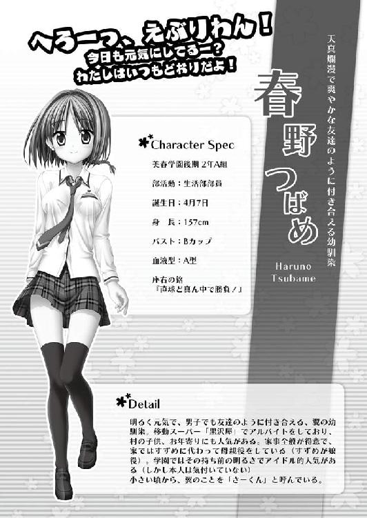

| 桜ノ杜ぶんこ さくら、咲きました。 Last Springtime of Life | |
| 加納京太 | |
| (2012) | |
桜ノ杜ぶんこ
さくら、咲きました。
～Last Springtime of Life～
加納京太


『──臨時ニュースをお伝えします。本日も桜が満開でしょう』
毎朝テレビから流れてくるのは、緊急の内容でも何でもない、奇妙な臨時ニュース。
地元のローカル局で朝のニュースを担当している、見るからに生真面目そうな顔をしたキャスターが、この春から急に始めた冗談のような決まり文句。
最初こそ見ている俺達は戸惑った。でもそれは、今日もこの美春町が平和であることを報せてくれる大切なメッセージのように思えて、気付けば自然と受け入れられるようになっていた。
カーテンを開けて外を見てみれば、町の象徴ともいえるトコシエ化された桜達は、今朝も優しい陽の光を浴びて幸せそうに咲き誇っている。この穏やかな薄紅色を目にすれば、誰だって憂鬱な気分は薄れて自然と微笑みが浮かぶというものだ。
だから、新学期が始まって三日目の今朝。
俺が通う美浜学園の始業式と入学式が無事に終わって、後期二年生としての平常授業がいよいよスタートしようとしている今日、二〇三八年四月十一日の朝だって、これまで通りの完全で普遍的な一日の幕開けになるはず──だったんだ。
悪友の一馬から電話が来るまでは。
「......廃部？」
ダイニングから聞こえてくる朝の情報番組の明るい声。それを背に薄暗い廊下で発した俺の声は、その言葉が持つ重みに比べれば随分と間の抜けた響きをしていたと思う。
いつもバカまっしぐらな一馬にしては珍しく、その声からは苛立ちが感じられた。
『ああ、そうだよ翼。学校に来てみたら、オレ達の水泳部が廃部してたんだよ！』
「本当に......廃部なのか？」
『マジだって。部室に来たらドアに廃部とか......何とかって書いた紙が貼ってあった』
廃部、廃部だって？
まだ俺達という部員が残っているのに、学生総会も介さずに、新学期早々に部が潰されるなんて、そんなバカげた話があるか？
「......俺もすぐに行くから」
『ああ。早く来てくれよ、親友。学生会長に直談判だ！』
「ＯＫ。それじゃ二十......いや、十五分後に」
『了解。校門で待ってる』
一馬の返事を聞くや、俺は最新の春モデルとは似ても似つかない〝平成式デザイン〟のレトロな二つ折り携帯電話を乱暴に畳んで着信を切ると、慌ただしく食卓へと戻った。
『ここ、ニライカナイは、南の島をイメージして作られたアーコロジーで、年中常夏気分を味わえる観光特化型都市なんですよ♪ 一般入居者の募集は来年、二〇三九年の四月開始予定です！』
『わあ、まさに人工の楽園！ 私も住んでみたいです！』
タイミングが良いのか悪いのか、テレビの画面の中では朝の番組で流すには際どい水着をつけたレポーターが、新しくできたばかりのドーム型都市を紹介していた。
「いいなー、海ー！ 今年の夏は山を脱出して、思いっきり泳ぎに行きたいぜーっ！」
コバルトブルーに染まった南国風味の世界を夢見て、元気いっぱいに願望を張り上げていたボブカットの少女は、戻ってきた俺に気づいたらしくこちらへと顔を向けた。
「お、さーくんお帰りー！」
白い清潔なブラウスに赤いネクタイが特徴の美春学園の女子用制服に、こいつの爛漫な笑顔は良く似合う。同年代の子に比べて、若干ボディラインがすっきりとしていることを当の本人は気にしているみたいだが、活発な性格とよくマッチしていて、俺は別に気にするほどではないと思う。
「で、寒河江くんから電話って何......か大変なことでもあったの？」
めーは、好奇心に目を輝かせながら美味しそうに味噌汁をすすろうとしたけれど、俺の顔色を見て何かを感じ取ったんだろう。その手を止めた。
「......悪い、めー。後で説明するから」
「そっか。それじゃ、しょーがないね」
いつもならこの程度では引き下がらないが、今日は気になる素振りを見せつつもあっさりと会話を切り上げてくれた。こういう時、何となくお互い察し合える幼馴染という立場が有難い。
ちなみに俺の名前が新庄〝翼〟で、それに対してこいつの名前が春野〝つばめ〟だから、幼い頃から名前の末尾を取って〝めー〟〝さー〟と呼び合っている仲だ。
「その代わり、後でちゃんと説明しろよー！」
相槌を打って、座り慣れた椅子に腰をかけるや、俺は食べかけだった目玉焼きを一気に吸い込み、茶碗に味噌汁を投入してそのまま胃へと流し込んだ。
そんな食べ方を見て、向かいに座るすずめさんが睨みつけてくる。
「さーくん、お行儀が悪いわよっ！」
母親のように『めっ！』っと俺を叱りつけたのは、髪の毛を伸ばして、もっと女性的な体つきになった未来のめー......ではなくて、めーの母親のすずめさんだ。若々しくて、一見しただけではめーのお姉さんと間違えられることもある。でも、れっきとしためーの産みの親であり、親のいない俺にとっても母親代わりといえる女性だ。〝トコシエ〟という不老化技術が一般化された現在、すずめさんのように二十代半ばくらいの外見を維持した母親は珍しくもない。
「もー。きちんと感謝しないと、ご飯の神様に怒られちゃうんだからねっ」
（すみません、すずめさん。今日だけは勘弁して下さい）
口の中にまだ食べかけのご飯が残っていた俺は、首をすくめながら目で謝った。
「......ごちそうさまでした！」
食材への感謝と謝罪の気持ちを込めて、両手を合わせる。重ねた食器を台所のシンクへと運ぶと、一度水で流してから食器洗浄機へ投入。確か洗剤カートリッジを変えたのは先月の頭だったから、洗剤が切れる心配はないはずだ。
「すみません、すずめさん。食べ終わったら食器を機械に入れて自動のスイッチを押してください。くれぐれも他のボタンは押さないようにしてくださいね」
「......それくらい、言われなくてもできますー」
まずい、言い過ぎたか。口を尖らせてしまったすずめさんを見てちょっと後悔。
悪いとは思ったけれど、余計なことをして泡だらけにした前科があるため、俺としては警戒しないわけにはいかないんだ。あの後始末は本当に大変だった。もうしたくない。
「めー、すまんが先に行く。遅刻するなよ」
「おー！ 何があったか分からないけど、気をつけてなーっ！」
「いってらっしゃい、さーくん」
「いってきます！」
何もなければあと二十分位はだらだらとしてから、めーと一緒に徒歩通学するところ。
けれど、今日はそんな余裕はない。玄関を飛び出した俺は、春野家と兄弟のように並んで建っている〝木造風昭和式デザイン〟の我が家、新庄家へと飛び込んだ。
玄関脇の小物入れから自転車の鍵だけ引っ掴むと、慌てて表へ取って返そうとして......急ブレーキ。
「ととっ......」
小物入れの横、写真立ての中で微笑んでいる両親の前へと戻って、手を合わせた。
「......いってきます」
俺は今度こそ家を出て自転車に跨ると、最初からトップスピードになるよう目一杯ペダルを踏み込んだ。
桜の花びらが舞う中を、自転車とひとつになって風を貫いていく。
道の両脇に散見される桜はどの木も満開。頭上に広がる澄み渡った空の青色と、山の稜線が見せる深い緑と相俟って、綺麗なコントラストを見せていた。
いつもなら、こういう日は自然と普段以上にのんびりと歩くんだけど。
（急げ、急げ......！）
水泳部のことがあるのでとにかくスピードを上げていく。
桜四割、緑四割、残る二割が民家といった、変わり映えのない景色を追い越して、追い越して、追い越して。
そう、ここ美春町には、街にあるような、雲を突き抜ける超高層ビルもなければ、空をエアカーが走っていることもなく、もちろんさっきのテレビに出てきたアーコロジーや、軌道エレベーターなんかもありはしない。
レトロをモチーフに作られたこの町の風景で、雲にかかりそうなものと言えば朝日岳くらいだし、車も電車も未だに車輪のついたものが走っている。いわゆる田園風景だ。
ただひとつ、美春町で特別現代を感じさせるものがあるとすれば、宇宙に向けてスペースプレーンを打ち上げるためのカタパルトを、遠くに見ることが出来るくらいか。頻度は減っているが、今も時々カーゴが飛んでいくのを目にすることがある。
そんな美春町の中でも、我が家の近くは特に人家もまばらで人通りはほとんどなかった。
人の生み出す物音よりも、牧場から聞こえてくる家畜の鳴き声の方が多いような、まさに長閑オブ長閑と言える場所。
そんな町なので俺は交通事故なんて起きるはずはないと高をくくっており、暴走した機関車のように体を揺らしながら、ペダルの回転数を最大限にまで高めていた。
視界の先に壁のように立ち並ぶ桜が見えてくる。道のある場所だけぽっかり開いているのがまるで門のよう。そこを突っ切った先は、美春川にかかった桜橋だ。
その橋の中ほどまで来た時、俺は若干の冷静さを取り戻していた。
（......けど、会長に直談判ってったってな）
一馬にはああ言ったものの、廃部を強行されてしまったような状況。
簡単にどうにか出来るとは思えない。
いざとなれば泣き落とし......そんなものがあの会長に通用するか？
などと考えている間に橋を抜けており、左右が黄色に染め上げられた。
休耕中の田んぼ一面に広がっているのは菜の花の絨毯。そういえば昨晩食べた菜の花のおひたしは美味しかったな──って、そうじゃないだろ！
無理かもしれないけど、水泳部は俺と一馬にとって大切な場所なんだ。何もしないで諦めるわけにはいかないって！
弱気になって削がれた勢いを取り戻すために、全体重でペダルを押し込む。交差点を抜けたら最後の直線。そこで助走をつけておいて、学校に続く坂道を休まず駆け上がろう。
さあ、いざ交差点に突っ込むぞと思ったその時！ 俺の鼻っ柱を掠めるように、右から左へと赤い塊が突きぬけていった！
「おわああぁっ!?」
反射的に左右のブレーキを押しこんで後輪を横に振る。足で地面を踏み込んで倒れるのは阻止。赤い塊、それは暴れ牛の唸り声にも似た排気音を轟かせた赤いバイクだった。俺がいたことに気付いていないのだろう。何事もなかったかのように走っていってしまった。
普通ならばそのことに対して恐怖や怒りが当然湧くところなのだが、俺はその当然の感情を抱けないほどに、あるものに目を奪われてしまう。
「くまさん......パンツ......」
あのライダーが無防備にも大きくはためかせていたのは、長い黒髪に、うちの学校が採用している臙脂色をしたチェックのプリーツスカート。その内側に見えた眩しいほどの純白に大きくプリントされていたアレは、間違うことなくクマさんだった。赤い車体にパンツの白が悪目立ちしていたせいで、その姿がはっきりくっきりと見えてしまった。
幼い子が履くならまだしも、バイクに乗るような年齢の女の子が履くには珍しいプリントパンツの衝撃は、俺の恐怖も怒りも驚きも全て霧散させるに十分すぎた。
「うちの学校の女子に、あんなパン......いや、バイクに乗ってる子なんていたっけ？」
ただでさえバイクに乗っている女子が珍しいのに、くまさんパンツなんて履いていそうな子、全く思いつかない。あるとすれば昨日入学してきたばかりの新入生か？
しかもバイクが走ってきたのって、使われてない天文台だよな......。
「いや、そんなこと考えている場合じゃなかった！」
パンツインパクトに危うく忘れかけていたが、一馬を待たせているんだった！
ああ、それに、会長が納得してくれるような〝らしい言い訳〟も考えておかないと。
頭を振って余所事を吹き飛ばし、俺は学校までの残りの道を最高速で突っ走った。
「何と言われましょうとも、廃部は先生方もお認めになった決定事項ですわ」
学生会室の上座で、見るからに高級そうな革張りの椅子に姿勢正しく腰を掛けている女性は、手元の作業を止めぬままにすげなく言い捨てた。
窓から入ってくる春の風に、ウェーブがかった黄金に輝く髪の毛をたなびかせながら、サイドに垂れるブロンドドリル──否、縦ロールを、映画俳優のようにかき上げる。その傲慢ながら自信に満ちた振る舞いは、まるで王侯貴族のようで、気後れした俺は一瞬言葉をなくしてしまった。
そんな彼女の名前は天使突抜瀬利華先輩。美春学園開校以来のリーダーシップを発揮して、良くも悪くも俺達学生や教師を引っ張る、優秀な学生会長だ。今日だって新学年になって間もないというのに、机の上に山積された書類を黙々と片付けている。
「しかし会長っ！ いきなり廃部はないでしょうっ！」
仕事の邪魔だと会長は無言の圧力をかけてきたが、一馬は一歩も退かず、逆に勢い込んで喰ってかかった。見るだけならば、高い背に、すらりと伸びた手足、モデルのようなサラサラヘアーの美青年。普段が甘いマスクである分、怒った姿は様になっている。
けれども、会長は少しも動じる様子は見せない。
「いきなりではありませんわよ。昨年度の内からわたくしは、何度も何度も何度も何度もなんっどもっ！ あなた方の所へと足しげく通い、根気強く、口が酸っぱ～くなってしまうほどに改善を要求してきましたのよ？ なのに、全く聞く耳を持たずそれを無碍にしてきましたのは、あなた達の方ではありませんの？」
ちょっぴりというには特徴的すぎる〝お嬢様言葉〟で話す一学年上の先輩は、机の上に目を向けたまま、こんな田舎の学校にはそぐわない縦ロールを抑圧された怒りに揺らす。
「それは、そうなのかもしれませんが......」
「しれないのではなくて、そうなのですわ！」
仰る通り。会長の言うことは全て真実だ。それでも、言われっぱなしでは覆るものも覆らなくなってしまう。無謀とわかっていても、俺は反論を試みるしかなかった。
「......会長、そうは仰いますがね。プールがないこの美春学園で、俺達は俺達なりに、頭を捻って練習メニューを考えてきたんですよ？」
「練習メニュー、ですの？」
ええ、と頷く。これが俺が短い時間で捻りだした〝らしい言い訳〟。実際に嘘ではないので、短い時間で考えたにしてはそれっぽいものになったと思っている。
それを耳にした会長は綺麗な眉を片方だけぴくりと持ち上げて、ようやく俺達へと不機嫌そうな視線を向けた。
「スケートボードに腹ばいとなって、廊下で暴走行為をすることが？」
「その通りです！ 野生のクロヒョウを思わせる俺の背筋が力強くしなやかにうねる姿！ 会長だってご覧になったことがあるでしょう！」
「あ、あはは！ あれは上半身を鍛えるための訓練ですよ！」
行き過ぎた自己陶酔癖を持つ一馬の口走った言葉を塗り潰すように、俺は慌てて前に出て訂正した。会長はギロリと睨んできたがそれだけで、どうにかスルーしてくれた模様。
「......水場を占拠して、水を張った洗面器に顔をつけていた、アレも？」
「肺に貯め込んだ酸素を限界まで使い切り、新鮮な空気を求める筋肉が見せたダイナミックな動きは、まさに天高く飛び跳ねる白鯨を思わせたでしょう！」
「ブレスの練習！ 分かりやすく言えば息継ぎの練習です！」
「では、桜橋の上から美春川へと飛び降りたのは、さながら眼下の水面でその背を煌めかせた獲物を狙う、オオタカと言ったところでしょうか」
「おお！ よく分かっているじゃないですか！ さすが会長！」
「詩的な表現に長けていらっしゃる寒河江くんのお褒めにあずかり、光栄ですわ」
「いいえ！ あれは単に飛び込みの練習ですから！」
ああ、もうっ！ 水泳部にとって危機的状況だってのに、こいつときたら！
会長も会長だ。わざわざ一馬のペースに合わせて皮肉を言うことないだろう！
「......まあ、新庄くんの言葉を信じるならば、確かにプールが無いなりに考えられた練習方法なのかもしれませんですわね」
「そりゃもう！」
会長が若干ながらも態度を軟化してくれた。これはいけるか？ と思ったのも束の間。
「で・す・が！ 上半身の訓練とやらも息継ぎの練習とやらも、敢えて学生が多く残っている廊下や運動部が良く使う水場でなくてもできますし、そもそも水着に着替えてやることではありませんわよね？ ジャージでも何ら問題はありませんでしたわよね？」
「酷いです会長！ ジャージなどを着てはオレの肉体美が隠されてしまいますし、人の少ない場所でやったら輝ける筋肉を披露する場が──むがぐっ！」
余計なことを言うなと一馬の口を手で塞ぐ。
「は、はは。ま、まあそれはその通りです。今後気をつけますから廃部だけは......」
「いいえ、それだけは聞き入れることはできませんわ」
「何故！ このオレの肉体美を全校生徒だって堪能していたではありませんか！」
「一馬、頼むから少し黙っていてくれよ！」
「ふむ。親友のお前にそう言われては仕方ないな。この場は翼に託すとしよう」
頭に走った痛みを手で抑えながら俺は会長を見る。疲れた顔をした会長は、手に持っていたペンと書類を静かに置いて真っ直ぐ見返してきた。
「......わたくしは、学生の意思を尊重する学生会長であろうとしてきたつもりですわ。だからこそ、学内学外問わず度重なる苦情がありながらも、あなた達が活動内容を改善することを信じて何度も注意してきたのです」
「苦情なんてあったんですか？」
初耳だった。確かにやんちゃがすぎると思ったことはあったけれど、そんなものが学生会に届いていたなんて聞いたこと......。
「何度も伝えたつもりでしたけれど、それはわたくしの勘違いでしたかしら？」
......いや、聞いていた。どうせ警告だろうと、スルーしていたのを思い出した。
「ん、そうでしたっけ？」
「一馬、言われても思い出せないのかよ......」
「あなた方は真面目に聞こうとはしていませんでしたけども、確かに苦情は全て伝えていますわ。隠し事はフェアではありませんもの」
「そのことについては謝ります。ですから......」
喰い下がろうとする俺を見て、会長は仕方がなさそうに溜息をつく。
「せめて引退された先輩方のように、プール設備のある他校に頼んで合同練習を行っていたり、地区大会に出場して公式の記録を残していれば温情の余地はありました。けれど、有名無実どころか有害無益な今の水泳部を、新入生の目にさらすわけにはいきませんの」
......あ、ああ。そこを突かれると反論が出来なくなってしまう。
会長の言う通り、一年の始めの頃は水泳部として真面目に活動していた。でも先代の部長達が引退して俺達二人になった後は、胸を張って活動していたとは言えない。
しかし、諦めかけた俺に対して、前に踏み出す男がいた。
「会長！」
「な、なんですの寒河江くん？」
そう、一馬だ。
これ以上の言い訳ができないほど、俺達は追い詰められているというのに、それでもなお力強い足取りで会長机へと近づいていく。
まだ何か反撃の策があるというのか？
期待に表情を輝かせた俺の目の前で一馬は、おもむろにシャツを脱ぎ捨てた。
「このっ！ オレのっ！ 世界一の肉体美を持ってしてもっ！ 廃部は取り消せないというのですかっ！ 会長ぉぉぉぉぉぉっ！」
「いっ、いやあぁああああああぁぁっ！」
「ばっ、バカ野郎おおおぉぉぉぉぁっ！」
その後のことは、正直よく覚えていない。
上半身裸となって暴れる一馬をどうにか抑え込んで学生会長室の外へと放り出し、半べそをかいていた会長に何度も何度も頭を下げた。
でも、もうその程度で赦してもらえるはずはなくて。
「廃部ですわ絶対廃部！ 例え世界が滅ぶと言われようとこの決定は覆りませんことよ！ 水泳部のことはもうすっぱりと諦めて、次の部活をお探しあそばせ！」
激昂する会長に俺も追い出され、こうしてすごすごと教室に戻ってきた頃には、既に今日一日の体力が空になったかと思うほどに疲れ果てていた。
「おー、水泳部、ついに廃部になったんだってなー」
意気消沈状態で二―Ｂの教室に入った俺達へと、クラスメイトがかけてくれた言葉は、慈悲の気持ちなどこれっぽっちも感じられない酷なものだった。
「......ついにって、どういうことだよ」
「だってマトモに活動してなかったじゃん」
「そうそう。よく去年を持ちこたえたねって、皆言ってたよ」
「だなぁ」とか「うん」だとか同意する言葉が教室のあちこちから聞こえてくる。
クラス替えをしたばかりだというのに、何故こんなにも息が合っているのか。くそう、一人くらいは同情してくれる人間がいたって良いだろうに。
悔しい思いに歯ぎしりをしながら、窓際一番後ろにある自分の席へ向かう。誰もが羨ましがる良席ではあるけれど、それで気分が晴れるということはなかった。
その俺のさらに後ろの床に、一馬がぺたんと座り込む。廃部が確定したことがよほどショックだったようで、会長室を出た後はすっかり大人しくなっていた。
今は口の中でぶつぶつと「水泳部が......」「このままでは水仙になってしまう......」などと意味不明な供述をしており以下省略といった調子の虚脱状態。
まあ、それも仕方ない。一馬は代替わりの際、自ら水泳部の部長を買って出るほどの熱意を見せていた。やることなすこと無茶苦茶ではあったが、愛だけは本物だったはずだ。
それが解っているし、第一俺だって同じようにショックから抜け出せていなくて。机に突っ伏すばかりで、慰めの言葉をかけてやることはできなかった。
「「はぁ......」」
「おっはよーっす！」
教室の隅で重なった男二人の辛気臭い溜息を払拭するように、聞き慣れた底抜けに明るい声が教室を吹き抜ける。開けっ放しにされていた教室の扉から入ってきたのは、めーだった。どうやら遅刻をせずにちゃんと来ることができたらしい。
「あっ、つばめちゃんだ。おっはよー！」
クラスの垣根を越えて、あいつは既にこのクラスにも溶け込んでいた。一年の時から分け隔てなく誰とでも仲良くしていたから、学年どころか学校中の学生と仲が良いのだ。
「春野さん、今日もかわいいねー」
「いやー、そんなこと言われると照れちゃうぜっ！」
その上、どうやら男連中からすれば、めーは美少女の部類に入るらしい。子供の頃からずっと一緒にいる俺にはピンと来ないけど、そういう意味でも人気は高いようだ。
愛想良く笑顔を振りまき挨拶を交わしながら、めーが迷わずやって来るのは俺の席。
「よーっす、さーくん。五十分ぶりー」
前述の通り人気者である女の子と親しい姿を見せるのは幼馴染という関係であっても、むしろそんな関係だからこそ、ムズ痒いものがあったりする。
しかし、そんな複雑に入り組んだ青少年の心理的構造など全く理解していないめーは、よりにもよって俺の机の上に女の子らしいお尻を乗せてきたりするから、俺は不機嫌な表情を更にしかめてしまう。
「聞いたよ聞いたよ、水泳部廃部しちゃったんだって？」
「ああ、そーだよ」
顔を背けて不貞腐れた声で呟く俺に、めーは苦笑する。
「あらら、そいつは残念だね。よし！ さーくんの悲しみは、このわたしが胸で受け止めてあげるよ！ さあこい！」
言うや、めーは両手を大きく広げた。そのせいで迫り出した膨らみが俺の目の前で無防備にもさらけ出される。
「ば、ばか。やめろよそういうことするの！」
普段は気にしないようにしているけれど、こうして眼前に見せつけられるといやでも意識してしまう。同年代の子に比べて発育が良いとは決して言えないが、俺の中の男をざわつかせるには十分女の子している。
俺は赤くなった顔を隠すため慌てて俯いた。ただでさえ〝さーくん〟と呼ばれるのも恥ずかしいのに、皆の前でこんなスキンシップをされるのは耐えられたもんじゃない。
「照れることないじゃないかー。よくこうしてぎゅーっと抱きしめてあげたじゃん」
「子供の頃のことを持ちだすなよ！」
ああ、どうしてそう勘違いされるようなことを言うんだよ！ こっそりと窺い見てみれば、案の定周りの奴らはニマニマした笑みを浮かべてこっちを見ているし！
「あははははっ！ 思ったよりさーくんが元気そうで良かったぜ！ 寒河江くんは......まだダメそうだけど......よっと！」
ぴょんと兎が跳ねるように机から腰を下ろして床に足をつけると同時、体操選手がするように両手をまっすぐ天井に伸ばして全身でＹの字を作る。
「十点満点！」
別に大したことをやったわけでもないのに、ノリの良いクラスメイトが「おー」という歓声と共に拍手。
「どーもどーも」
めーも調子良くその歓声に応えている。
......ああ、そっか。めーなりに俺のことを励ましてくれてたってことか。そういえば小さな頃から、俺が悲しんでいる時、ああして腕を広げて抱きしめてくれたっけか。
遠い幼い日のことを思い出して皆には見えないように苦笑してしまう。
クラスメイトからの賞賛が終わったところで、くるりとめーは半回転してこっちに向き直った。
「まあ、水泳部だもん。潰れても仕方ないよねっ」
ちょっと気持ちがほっこりしたところに、余計なひと言。俺の額に青筋が浮かぶ。
「......おい、それはちょっと聞き捨てならないな。生活部のお前に言われたくないぞ」
「え、うちはちゃんとした部だぜ？ あっははっはー！」
めーの奴は誤魔化すつもりか、豪快な笑い声をあげた。
何がちゃんとした部活だ。美春学園の二大奇部として好奇の目を向けられているという意味では、生活部だって水泳部と同じはずだ。
人気者のめーが入部しているということもあるが、それ以上に何をやっているのか良く分かっていないところで注目を浴びている。
そんな部活に入っているお前にだけは言われたくないと俺はジト目を向けた。
めーはそれ以上言及されることを避けるためか、俺と視線を合わせるのを嫌がるかのように顔を背けた。と思ったが、どうやらそれは俺の考えすぎだったらしい。
「あっ、みやちゃんおっはよ～！」
廊下を見たのは単に友達を見つけただけ。大きく手を振って挨拶しているめーの視線を追ってみれば、こいつが〝みやちゃん〟と呼んだ女の子、烏丸都さんが教室に入ってくるところだった。
彼女の登場に賑やかだったクラスは静まり返り、視線が集中する。
「..................ん」
ちらりとこちらを見た気もするが、めーに「おはよう」なんて言葉は返してくれない。
なのに、めーはそれでも笑顔は崩さなかった。いや、めーだけじゃない。俺を含む誰も気を悪くしたりする者はいない。
端的に言えば、そんな無愛想が許されるほどに烏丸さんは美人だった。
思わず息を呑んでしまうほど端麗な容姿に、さらりと流れる枝毛ひとつない綺麗な黒髪。そして忘れてはいけないのは、ブラウスを大きく内から押し上げる魔性の胸。驚いたことに彼女は胸を机の上に〝乗せる〟とができるのだ。
その上、成績優秀、運動神経だってスポーツバカのめーに引けを取らないと言うのだから、まさに天が二物を与えた存在。
男子の間で秘密裏に開催されている美少女ランキングでは、明るさのめーとクールな烏丸さんで人気を二分していたほどだ。
その彼女がおもむろに俺の席へと近づいてくる。
実は、烏丸さんは俺と特別な関係なのだ──とかいうことでは当然だがなくて、単に俺の隣が彼女の席というだけ。
「..................」
めーとは正反対に愛想を欠片足りとて振りまかずに自分の席へと静かに着く。鞄の中のものを机の中にしまうと、後は静かに前を見るだけ。近寄りがたい空気が彼女を守る。
それでもせっかく隣の席になれたんだし、少しは親交を深めたいと思った俺は、無謀と分かっていても初日から挨拶だけはするようにしていた。
「おはよう烏丸さん」
「..................ん」
ちらりと横目でこちらを見てくれたような、微動だにしていないような、そんな程度のリアクション。
それを見て、めーは苦笑している。
「無理無理。今のみやちゃんは何を言ったって返事してくれないよ」
「おまっ、本人を前にそういうこと言うなよ!?」
「あははははは。へーきだって」
めーが言う通り烏丸さんに気にしている様子は見られない。
これは彼女が大物なのか、それともめーと特別に仲が良いからなのか？
俺が首を捻っているとスピーカーから登校時間の終了を報せるチャイムの音が響いた。
「あっと、教室戻らないと......まあ、廃部しちゃったのは仕方ないしさ！ わたしは次の青春を探すべきだと思うよさーくん！」
「次の青春って言われてもなぁ......」
「そうさっ！ 次なんてない！ 水泳部はネヴァー、エヴァー！」
突如、俺の足元でうずくまっていたはずの一馬が飛び上がった。不意打ちを受けた俺は危うく椅子から転げ落ちそうになる。
「オレは何としても学生会に水泳部の廃部を撤回させてやる！ やはりそれしかない！」
拳をきゅっと握り締めながら力説。ここまでこいつを駆り立てるものって......。
「だって水泳部がなくなってしまったら、合法的にオレの肉体美を見せつけられないじゃないか！ そんなのは嫌だ！」
「ああ、はいはい。どうせそういうことだと思ったよ！」
「あはははっ！ らしいっ！ 寒河江くんらしいぜっ！」
「..................」
「俺は諦めないぜ。こうなったら水泳部の復活のため、なんでもやってやる！」
呆れた俺と、爆笑しためーと、無反応な烏丸さん。
三者三様の反応を見せていたら、バタバタバタと、まるで遅刻をした子供が走っているかのような落ち着きのない足音が聞こえてきた。
「うわーん、今日もぎりぎりだよー！」
それに遅れて女の子の情けない声。姿を見ずとも、こんな足音を立てる人を俺たちは一人しか知らない。
猫に追われたネズミのように教室へと転がりこんできたのは、一瞬学生かと見間違いそうなほど小柄な少女......ではなくて、女性。出会って三日目、未だに信じられなくなる時もあるが、この女性は紛れもなく俺たちの担任、卯月歩鳥先生だ。
白いブラウスにクリーム色のカーディガンを羽織り、膝丈まである黒いスカートを履いている。その服装の特徴だけを見れば教師で間違いはない。けれども、新調したと思われるそれらは既によれよれ。スカートの裾は走ったせいで乱れまくり。そもそも、ショートボブの頭はヒドイ寝癖で爆発してしまっているという、社会人と呼んで良いやら悪いやら。
どれだけ一生懸命走ってきたのか、全身で息する先生は、学生たちの複雑な感情の入り混じった視線を浴びながら、一分ほどかけてようやく呼吸を整える。
そして主人の顔色を伺う子犬のような顔でこちらを見た。
「......せーふっ？」
「いいえ、チャイム鳴ってからもう大分経ってます」
「ごっ、ごめんね～、みんな！ 遅れちゃって！ なんかねー......ロドちゃんのハイカムとフルコンのセッティングが合わなくて、燃料ちょびっとだけ薄かったみたいなんだー」
今年教師一年目ということを差し引いても、教師として尊敬することは難しい彼女のことを、クラスの誰もが友達感覚で〝歩鳥先生〟、もしくは〝歩鳥ちゃん〟と呼んでいる。
「そのせいで校長先生にも怒られちゃって、ぐすん......って、あーっ、寒河江くんと春野さん、クラス違うよ......ね？」
どうして自信がなさげなんですか、先生？
「早く自分のクラスに戻らないと、わたしみたいに校長先生に怒られちゃうよー。校長先生のあの生温かい目でじ～っと見られるの、怖いんだよ～！ だから早く戻って～！ 先生も怒られちゃうから～！」
わざわざ言わなくても良さそうなことまで暴露していた歩鳥先生も、ようやくめーと一馬の存在に気付いたようで、半泣きの目で扉を指差した。歩鳥先生ワールドに泡を食っていた一馬達も、ようやく我を取り戻したようでハッとした様子。
「いっけね！ それじゃーねっ！」
「ばいばーい、すずめー」
「......あっ！ 最後に二―Ｂの皆にもオレの美しい肉体を披露......」
「「「いいから早く帰れ！」」」
男子総意の圧力を受け、一馬はしょんぼりと自分のクラスに戻っていった。その背中を不憫にも思うけれど、今回悪いのは一〇〇％あいつだ。
「もー、ダメだなー。皆はちゃんとチャイムがなるまでに、自分の席にいよーね！」
「..................」
......歩鳥先生、遅刻してきたあなたが言っても全く説得力がありません。
「はい、皆さん。始業式、入学式も無事に終わりました！ 今日から平常授業です。えっと、ちゃんと教科書ノートは持ってきましたかー？」
「はーい！」
「はい、良い返事ですねー！ 良い返事ができる人は、立派な大人になれますよー！」
俺達を小学生とでも勘違いしているんじゃないかというような注意の仕方。だけど、クラスのお調子者に対しても、きちんと相手をしている。そんなところが憎めなくて、就任三日目にして二―Ｂの皆から好かれていた。
俺もクラスの仲間と同じように微笑を浮かべつつ、気持ちの良い風を運んでくれた窓の外へと顔を向ける。
抜けるような青空。丘の上で鮮やかに咲いている一本桜の姿が良く見えた。
でも、俺の心の中は重苦しい曇天模様。
水泳部が廃部になって、これまでと同じ学生生活は送れなくなって、俺は今日からどうやって放課後を過ごせばいいんだろう。
この日常はずっと続くとばかり思っていたから、何も思い浮かばない。
「あっ、こらー！ 新庄くん！ ちゃんと先生の話を聞きなさーいっ！」
しまった、ぼーっとしていたのがバレた！
歩鳥先生はチョークを手に取ると、思いっきり振りかぶる！
「てーいっ！」
これはやばいと身構えた──が。
「ぎゃふっ!?」
「あっ、ああーっ！ ごめんね鮎貝くんー！」
典型的な女の子投げだったのでチョークは俺の方に飛んでくることなく、教卓の前の席に座っていた鮎貝の頭にクリーンヒットした。ガリ勉メガネが宙を舞う。
「だ、大丈夫ですけど、もう二度とチョーク投げはしないでください......」
「ごめんね、ごめんね......もー、それもこれも全部新庄くんが悪い！」
腑に落ちない点もあるけれど、俺が悪かったのは事実。素直に頭を下げた。
「......すみませんでした。鮎貝も、ごめん」
鮎貝はチョークの粉で白くなった頭を押さえながら「いいっていいって」と笑ってくれている。まだちゃんと話したことはないけれど、良い奴みたいだ。今度、お詫びに弁当でも作ってきてあげよう。
「もー、ぼーっとしちゃって。いつまでも春休み気分でいたらだめだよー！」
「......あー、歩鳥センセ。今日だけは許してあげてよ」
「あいつ、入ってた部が廃部になっちゃって、傷ついているんです」
な、なんだよ。無慈悲な奴らかと思ったら、いい奴らばかりじゃないか。林間学校では皆のために、腕を振るって美味いカレーを作ろう。うん。
「ひゃー。それは大変だねー。ご愁傷様です」
「いえ、わざわざ痛み入ります」
教卓と一番離れた席で何故か頭を下げ合う俺達。何だこれ。
「でも、部活なくなっちゃったってのは大変だねー。次の部活のアテはあるの？」
「......え？」
「あれ、学則変わっちゃってる？ わたしが通ってた頃は、学生はぜーったいに、何か部活に入るようにーって言われてたけど」
......そういえばそうだ。うちの学校にはそんな学則があったっけ。
「まー、すぐには決められないと思うから、二週間使ってゆっくり決めようねー」
「......はい、そうします」
「それじゃー、ホームルームはこれでおわりっ！ まいにち元気ー、明日も元気ー、わたしも元気で頑張りましょー」
歩鳥先生はキメ顔でホームルームを終わらせたつもりになっていた。
「頑張るのは良いですが、一時限目はもう始まってますよ、卯月先生」
が、直後に一時間目の数学を担当する柏屋先生が入ってきたことで顔を青ざめさせ、入ってきた時と同じように教室を飛び出していった。
「うわーん、いそがないとーっ！」
......ああ、歩鳥先生はちっちゃかわいいなぁ。
「はいはい、皆さんはすぐに授業の準備を」
柏屋先生がひとつ大きな手を打った。よく響く弾けた音にクラス全員気持ちを切り替えて、今年度最初の授業に向かう姿勢となっていく。俺もポーズはそれに倣うものの......。
（次の部活......か）
まだ水泳部のことが残っているのに次の部活を考えないといけないなんて。
新学期早々ヘビーすぎる話だ。
「それなら絶対に生活部しかないって！」
「それだけはないだろ」
「えー、なんでさー」
台所に立つ俺の横で、今日の夕食に使うハンバーグのタネを手の中で投げて、空気を抜いていためーが不満そうな顔をする。
「第一どんな部活かもよく分かってないし」
「前に言ったじゃん」
「生きる活力を探求する、だったっけ？」
「そうそう。わたしたちってさ、トコシエじゃん？ だから、とことん楽しく生きなきゃダメなんだよ！ こんな風にっ、さっ！ ほい、完成っ！」
「お、サンキュー......何これ、ニワトリ？」
渡されたハンバーグは、四百年近く続く鎌倉銘菓の鳥型お菓子に似た形をしていた。トサカがついているから、恐らくニワトリだろう。牛豚の合挽肉なのに鳥とはこれいかに？
「カシツニワトリだよ！ 口から蒸気を吐き出す世にも不思議なニワトリだぜ！ みゅんみゅん鳴いて可愛いんだ！」
意図どころか、斜め上の幻想生物が出てきたぞ、おい。
ま、ハンバーグで動物の形を作るのは昔からよくやってたし。楽しむって部分は理解できなくもない。熱したフライパンに乗せればジュッと肉汁が蒸発する気持ちいい音。
「あー、美味しそうな音～！ はっやっくっ、たっべたっいな～！」
食卓でテレビを見ていたすずめさんが、お箸でチンチンとお茶碗の縁を叩いて行儀の悪い催促をしてくる。
「もー。お母さんもさ、だらだらしてないで食器並べるくらい手伝えよー」
「えー。女手一つで娘を育ててるうら若き母親に対して、労う気持ちはないのー？」
「労ってるから、今日はお母さんのリクエスト通りハンバーグにしたんじゃん」
まるで姉妹のように仲が良い二人のやり取りに苦笑が漏れてしまう。
両面、焦げ茶色の美味しそうな焼き色がついてきたところで、既に付け合わせを用意しておいた皿に盛る。肉汁が残ったフライパンにワインとウスターソース、ケチャップ、それに調味料を少々加えてソースをちゃちゃっと作り、そいつをかければ一丁上がり。う～ん、我ながら美味そうに出来た。
「めー、ご飯よそってー」
「ほいきた！」
めーにご飯を任せている間に、俺は作って置いたコーンポタージュをカップに注ぎ、ハンバーグと一緒に食卓へ。
「おー、豪華ー！」
それを見たすずめさんは子供のように目をキラキラと輝かせた。
「今日はすずめさんのお祝いですからね」
「昨日の夜、いきなり農家になる！ って言われた時は、何事かと思ったよ」
あの時は俺も耳を疑った。よくよく聞いてみたら畑を借りたってだけで。それならそうと最初から言って欲しかった。
「バリバリ耕してきたわよーっ！ 汗かいたわよーっ！」
「今度は、飽きずに何日続くかなぁ」
「野菜も美味しそーっ！ さすが採れたて新鮮！」
娘の冷ややかな視線は気付かぬフリで。付け合わせの野菜にもう夢中。甘く煮た人参のグラッセ、ブロッコリーをさっとボイルしたものに、ほくほくのこふきいも。いずれもすずめさんが農家の知人から分けてもらったものだ。
「食材の味を活かす方向で調理してみました」
「ベリグーよ、さーくん！ 水泳部で大変だったのに手間かけさせちゃってごめんねー」
すずめさんは謝ってくれたが、調理中は部活のことを忘れられたので助かった。
『次のニュースです。本日、有事通信規制法が国会で成立。これにより......』
「ニュースつまんなーい。野球見ようぜ、野球」
卓に着くや、めーはリモコンに手を伸ばしてチャンネルを変える。出羽ホワイトオックスと奥州レッドスネークの試合は四回表一アウト一、三塁で四―〇。リーグ首位のオックスと最下位スネークの試合らしく、いつものように一方的な展開になっていた。
「あら、天童の打席じゃない」
「打て打て天童！ ここで追加点だー！」
バッターボックスに立った精悍な顔つきの男の登場に、俄かにダイニングが盛り上がる。
こういう好みが似ている辺り、親子だよな。
二人の応援の甲斐あってか天童は一球目をフルスイングでスタンドに運んでしまった。
「入ったーっ！ ホームランっ！ ってことで、私達もいただきましょうか」
オキニの選手がホームランを打ったことに満足した二人は、ニコニコ顔で手を合わす。
俺も合わせて、皆揃って「いただきます」を言い、食事を始めた。
十二点という大差を少しも縮められぬまま七回が終わった時、すずめさんが思い出したようにこちらを見る。
「それで、さーくんは部活どうするつもりなの？」
「えっと、それは......あ、すみません」
どう答えようかと口ごもった時、俺を助けるようにポケットの中の携帯電話が震えて着信を報せた。すずめさんに一言謝ってメール画面をチェックしてみると、届いたのは一馬からのメールだった。
「メール？ 寒河江くんから？」
めーが無遠慮に横から覗きこんでくる。全く、もし違ったらどうするつもりなんだ......まあ、見られて困るような相手がいるわけでもないけれど。
「えーと、どれどれ......『オレは学生会のスパイになる！』......？」
「『学生会の弱みを握って水泳部を取り戻す』......って本当のバカかあいつは」
そこまでやろうとするなんて。感心して良いやら呆れるやら。
「ふぅん、一馬くんは頑張るみたいだけど、さーくんは諦めちゃっていいの？」
「......会長から絶対廃部って言われちゃいましたしね」
すずめさんの問いに、口ではそう答えたものの、本当はまだどうにかなるんじゃないか思ってる。すぐは無理でも、会長が望む〝改善〟が本当に出来ればきっと。
......でも、もし〝改善〟をしてしまったら、それはもう〝水泳部〟じゃない気がして。
「ならやっぱり生活部しかないよ！」
「生活部ってよく分からない部活でしょ？ そんなのにさーくん誘っていいの？」
「よく分からなくないよ！ 放課後に皆で集まってお茶したり、ケーキ食べたり！」
「だらだらしてるだけじゃん。それで生きる活力を探求なんて言われてもなぁ」
「それだけじゃなくって、他にも色々するんだよっ！ 多すぎて言い切れないだけ！」
「それってやっぱりよく分からないってことじゃないか」
「んもう～！ なら、一度体験入部してみなよ！ そうすれば良さが分かるからっ！」
「えっ」
そこからのめーの行動は早かった。
席を立つとパパッと部長とやらに連絡してしまい、俺の体験入部を取り付けた。
「ＯＫだってさ」
「俺の意思を無視しやがって......」
「あーっ！ 明日の放課後が楽しみだぜっ！」
Ｖサインをしながら戻ってきためーは、隣で俺がどれだけ憎々しげな顔をしているかを気にせず、一仕事終えたといった顔で美味しそうに白米を頬張るのだった。はぁ......。
午後の最後の授業が終わり、学生達は帰りの支度をさっさと始める。貴重な放課後の時間、一分一秒足りとて無駄にしたい者はいない。
「今日は先生方みんなで、新任教師でありますわ・た・く・し卯月歩鳥の歓迎会を開いてくれるそうでーす！」
それを邪魔する帰りのホームルームなどは学生達から言えば言語道断。
「皆からのプレゼントももちろん大歓迎でーす！」
言語道断だ。
「生ものだけは食品衛生的に受け取れないけどー、どうしてもって言うなら、しとらん亭のクリームあんみつがいいなぁ......あれ、皆怒ってる？」
まるで示し合わせたかのように烏丸さんを除くクラス全員から一斉にコクリと頷かれて、歩鳥先生は肩をがっくりと落とした。
「......ぐすん。それじゃ、プレゼントはいいです。歓迎会の邪魔になるから、下校時刻になったら早く帰ってね。ホームルーム終わります......」
邪魔になるの部分はもう面倒くさいので、スルーするというのがクラスの総意のようだった。大人しく終わりを待った彼らは鎖を外された犬のように、一斉に自由に動き出す。
さて俺はといえば、体験入部の約束を取り付けられていたが正直ノリ気じゃない。なので逃げてしまおうと、他の奴らの波に乗って教室を出ようとした。
「さーくーんっ！ 部活に行こうぜー！」
......残念。このビッグウェーブに乗ることは出来なかった。
「おー、なんだよ。つばめちゃんのお迎えとは、やるじゃんこのっ！」
「いてっ、いてぇっ！」
クラスメイトがやっかみ俺の背中をバシンバシンと叩いていく。
「あはは、さーくんは人気者だねー」
......分かってないなぁ、こいつ。
下校する学生達と同じように下駄箱で靴を履き替えて表に出る。
と、校門までの道の両脇には、様々なコスチュームを着た学生がプラカードを持って立っていた。一瞬、仮装大会かと思うがそうじゃない。
「さー、いらはいいらはいっ！ サッカー部は入部即レギュラーだよ！ 特にゴールキーパー募集中！ 超切実に！」
「自転車に興味はありませんかー！ 初心者歓迎！ 貸出もありますよー！ 一緒に青春の汗を流しまっしょう！ 目指せフランス！」
「美春フィッシングクラブで一緒にフィーッシュ！ アユにヤマメが釣り放題となる遊漁券の年間パスをもれなくプレゼントだー！ シロサケの釣獲調査も手伝えるぞ！」
新入生への部活動勧誘が今日から解禁となったのだ。
近隣学校と比べても、学生数があまり多いとは言えない美春学園において、新入部員を捕まえられるかは死活問題とも言える。
「去年を思い出すなー。さーくんはさ、女子の水着に惹かれて水泳部に入ったんだよね、このスケベー！」
「ばっ、大声で言うなよ！」
ああもう、新入生の何人かがこっちを見てクスクス笑っているよ。
「結局男子部員しかいなくて、ご愁傷様でした」
「うるさい。さっさと連れてけよ」
俺は勧誘の邪魔をしないように人ごみの裏側へ回り込んだ。後ろから慌てて、めーもついてくる。歩いていく先は校門の方角。知らない人間が見れば帰るように見えるだろうが、そうじゃない。校門の脇に建っている、今にも倒壊してしまいそうな古ぼけた木造の倉庫。驚くべきことにこれが生活部の部室なのだ。
解放的とは決して言えないこのフォルム。体験入部の許可を得ているとはいえ、率先して入りたいものではない。
......なのに、その部室の前には小さな女の子が立っていた。
「おや？ おやおや？ 誰かなー、あの可愛い子」
めーも知らないということは、もしやこの子は新入生の入部希望者？
だとしたら、先輩として美春学園二大奇部になんて関わるべきではないと、警告しないわけにはいかない。
「ちょっといいかな？ キミ、新入生だよね？」
部室の前に立っていたとても小柄な少女は、特徴的なツーテールと、胸元にかけられた指輪の通ったネックレスを揺らしながらこちらへと振り返る。
猫を思わせる釣り上がった瞳には冷静さが感じられた。見知らぬ男に声をかけられたというのに物怖じしている様子はない。
「はい、そうですが。なんでしょうか」
「おっ！ ってことはもしかしなくても、キミも生活部に入部希望かな？」
しまった。そういえばめーが一緒なんだった。
すまん、君を逃がすことが出来なかったよ......。
しかし後悔に表情を曇らせた俺を見て、少女はすっと目を冷徹に細めた。
「今、失礼なこと考えましたね」
「は？」
「おおかた『てめーのようなチビッコが、なに学校をウロウロしてるんだ。場違いだ失せろ』といったところですか」
唐突に着せられた濡れ衣に、俺は咄嗟にリアクションを取ることができない。
「ふっ、ですが甘く見ると痛い目を見ますよ。未成熟なボディは世界に住まうロリコンどもの憧れの星。三百年以上続くギャルゲー界の人気設定なのですから」
警告する必要はないかもしれない。
二大奇部に入るだけの素養を十分に備えていそうだ。
「何を勘違いしているのか知らないけれど、そんな失礼なこと思ってないよ。それよりさ、部活を探してるんだよね？ ここが何部か知ってるの？」
「今、そっちの人が生活部って言ったじゃないですか。やはりバカにしているんですね」
「違う違う、そうじゃなくて、どんな部活か知っているのかってこと」
「もちろん知っていますよ。入学式で学生会長の何たらとかいう巻き毛女が『生活部にだけは近づくな』と唾を飛ばしていましたから」
「それを聞いて、どうしてこの部活に」
「ふっ、あの縦ロールは気に食いません。あんな女に近づくなと言われたら、近づいてやりたくなるじゃないですか」
ああ、この子に生活部はぴったりだ。むしろ他の部に行ったら余計な混乱を招きそうだ。
「ディ・モールト！ サイッコーにロックなニューカマーじゃないか！」
女の声がした。それが誰かと考える間もなく、後ろから何者かに飛びかかられて前につんのめる。
「断言しよう！ 今日は地球が生まれてから、一番にぎやかな日になる！」
俺の頭を抱くように腕をまわしているのは、お下げを二つ垂らした眼鏡の少女だった。
「あっ、部長！ 連れてきましたよ！」
「おーおー！ よくきたなー、君が翼か！ 歓迎するよ！」
この人が生活部の部長？ って、この体勢、顔に当たってる膨らみってまさか！
それが彼女の胸だと気付き、俺はゆで上がる。
どうにかして抜け出さないとともがこうとした時、その人はさっさと俺を解放して、ツインテール少女を同じように抱きしめにいった。
「..................」
「ほほう、このくらいのサイズも......なかなか......」
同じようじゃなかった。背後に回るまでは同じだが、彼女の両手は男の俺がやったらポリス沙汰になりそうな場所へとジャストフィット。
「......何してるんですか」
「いいじゃないか、減るもんでもなし」
「これ以上減ったら困ります。それよりいい加減揉むのやめてください。お金取りますよ」
「ふふふ。女が気持よくなるところは女が一番分かっているというものよ」
「ふぁ、あ......こ、このままではイケナイ世界に目覚めてしまいそう......」
目の前で今にも百合が花開きそうになっている。
しかしこういう時、男というものはだらしがないもので、無意識に内股になっていた俺は何もできずただ棒立ちするばかりだった。
「愛いヤツよのう。感度も良好じゃないか。ここか？ ここがえんのんか？」
「あ、あああ......」
ああ、このままでは新入生が上級生の毒牙にかかってしまう！
「ぶっちょー！ セクハラはそこまでっ！」
「おおうっ!?」
それを止めてくれたのは、めーだった。
ありがとう、めー。でもどうせならもう少し先まで見たかった気もして複雑。
「はぁっ、はぁ......危うく受け入れそうになってしまいました。とんだ変態オヤジですね。ケーサツを呼びますから大人しく御用になってください」
「ケーサツとはまた物騒な。しかし満足させられれば、それは合意とみなされるのだよ」
「感じてしまったあたしにも、問題があるということですか。考えさせられますね」
「考えるんじゃない、感じるんだ」
「面白い人ですね。あなたに興味が沸きました。久々ですよ、人間に興味が沸くなんて。ただ、これをギャルゲー展開とするならば、フラグを立てたあなたに責任を取ってもらわなければいけません」
「ああ、ドンとこい。生活部に入るなら、責任なんていくらでも取ろう」
「望むところです。そしてあなたの本性を暴いて見せましょう」
二人はがっしりと手を握り合う。
......あれ？ いつの間にか分かり合ってる？
「あたしは部長の白鷹すみれ！ 気軽に部長と呼んでくれていいぞ！ こっちは二年の春野つばめと、体験入部に来たつばめの幼馴染、さー！」
「さー？」
「......じゃなくて、二年の新庄翼です」
怪訝な顔をした一年生に、俺は正確に言い直す。
「よろしくっ！」
「あたしは湊美羽です」
「おー、美羽か！ いい名だ。はっはっは！」
ああ、二大奇部って言われていた理由が分かる気がする。これは相当に変な部活だ。
いつまでも外にいたところで仕方がないので、俺達は部室の中へと案内された。
「これは、中々に充実の設備ですね」
大きく「ゆ」とかかれた暖簾をくぐり、中を見た湊がそう口にしたのも分かる。
真ん中に集められている机と椅子こそ教室にあるものと同じだが、学校には不釣り合いなソファや食器棚、給湯器に旧式のテレビなんかもある。
部屋の隅には紙の漫画や雑誌が乱雑に積み上げられていて、誰が引くのかアコースティックギター、食べかけのスナック菓子など生活感に溢れていた。
後はマトリョーシカ、モアイなどなど。良く分からないオブジェクトでごった煮状態。
このカオスさは、なんとも俺の心をくすぐった。
「あれ、新庄君？ それにこっちの子は......もしかして新入部員ですか？」
トーテムポールの後ろからしたその声で、初めて冷蔵庫と電子レンジまであることに気がついた。これはすごい、だらだらするには最高の場所だ。
って、そうじゃない。そんなことよりも、驚くべきはそこにいた声の主だった。
「え......烏丸......さん？」
「紹介が遅れたが、彼女こそが生活部最後の一人！ 烏丸都だ！」
「ほう......。なかなかの美人さんですね。それにその豊満バディ、是非ともこの手で蹂躙してしまいたい......」
ごくりと湊が喉を鳴らしたことは敢えて無視。
「烏丸さんって生活部だったの？」
「おう、そうだぜ！ 言ってなかったっけ？」
「言われてないって。それに、そんな噂も聞いたことないし」
そうか、それでめーと烏丸さんは仲良かったのか。
「みやちゃんはおうちの手伝いで顔を出すこと少ないしね」
「烏丸さんの家って、何かお店をやっているの？」
「うん。お茶屋さんの隣にある、しとらん亭っていう和風喫茶店を知ってる？ あそこが私の家なの」
しとらん亭って、時々すずめさんがお土産にケーキとかを買ってくるお店だったっけ？
俺が記憶の先に辿りつくよりも先に、湊がガタっと勢い込んで立ち上がった。
「なんですって。あのウェイトレスさんが葡萄茶式部な姿をしていることで制服フェチの間では有名なあの店が？ ......くっ、もっと早くに行くべきでした。烏丸先輩の大正浪漫女学生姿......萌え」
葡萄茶式部という言葉。最初ピンとこなかったが、湊が大正浪漫女学生姿と言ったことから、濃い赤茶色の着物に袴を着用して接客する烏丸さんの姿が目に浮かんだ。
......ああ、確かにいい。
「うん、是非来て欲しいな！ あっ、ほら。良かったらこれ食べて。新入生が見学に来た時のために、うちのお店からさくらんぼのムースを持ってきたんだよ～。お茶もすぐに淹れるからね」
実家が喫茶店というだけあって、テキパキとお給仕さんのようにお茶とケーキの準備をしていく。
「......というか、本当に烏丸さん？ 実は双子の妹とかじゃなくて？」
「うんっ、烏丸都だよ。妹はいるけど、双子じゃないよ？」
「でも、教室にいる時と全然雰囲気違うんだけど」
「あ、授業中は大抵寝てるんだ、私」
「は？ 寝て......る？」
「だから言ったっしょ？ どれだけ声をかけても無駄だって」
「あ、もしかして挨拶してくれてた？ ごめんね、寝ぼけてるから気づけないんだ」
「気付けないって......え、寝てるって本当に？ でも、ちゃんと授業受けてたよね？ 体育のマラソンだって、クラスの女子で一番だったじゃないか」
「うーんと、多分、睡眠学習？ 体育は夢遊病みたいなものじゃないかな？」
「ないかなって......」
俺の中にあった彼女へのイメージが音を立てて崩れていく。
脱力した俺は、近場にあったソファへと倒れ込むように座り込んだ。
一つはっきりと言えるのは、烏丸さんも紛れもなく生活部の名に遜色しないってことだ。
「よしそれじゃ、お茶の準備も出来たみたいだし、都に続いてあたし達も自己紹介しちゃう？ やっちゃうかい？」
「はいはーい！ あたしは春野つばめ！ 座右の銘は直球ど真ん中！ スポーツならなんでも来いだぜ！ ただし勉強だけは勘弁なっ！ ヨロシクッ！ はい、次！」
「あたしですか？ えーと、湊美羽です。美春学園への入学を機に引っ越してきました。親が仕事の都合で海外に行っちゃったので、晴れて一人暮らし満喫中です、いえー」
「おおっ、一人暮らし！ かっけー！」
「ちなみに趣味はギャルゲーとオナニーです」
「ぶっ！」
自己紹介の前に喉を潤しておこうと口にした紅茶を、思わず噴き出した。
「おや、新庄先輩。何を想像したんですか。オナニーといってもエロいこととは限りませんよ？ この小さな胸に詰まったわだかまりを解消するために、自作詩集を執筆したりとかしているかもしれませんよ、このむっつり変態野郎」
「み、湊......！」
「ふふふ、良いオモチャを発見しましたよ。ふふふ、ふふふふ」
......何となくそんな気はしていたが、こいつ、やっぱり性格悪すぎるだろ！
「あはは。それじゃ、次はむっつりさーくんだね」
「むっつり言うな！ 新庄翼、二―Ｂです。前に入っていた水泳部が廃部になってしまったので、今日は見学に来ました。まだ入部するかどうかは決めていません」
「いや、入部は決定だよ？」
「は？ ......なんで俺の入部届持ってるんですか？ あっ、しかも押印済みじゃないですかそれ！」
「うん、こういうこともあろうかと判子は偽造済みさ！」
「どういうことですか。犯罪ですからそれ！ 返して下さい！」
「控えはいくらでも用意してある！」
俺は白鷹先輩の手から入部届を奪う。しかし、彼女の手にはまだ入部届があった。
「もしそれを提出したら、学生会長のところに行って直接退部届を出して、以降生活部からの入部届は受理しないよう頼んできますけど、それでも良いのですか？」
俺は自分の手元にある入部届を細かく破りながら言い捨てる。
「そんなこと言うなよ！ どうせ水泳部はもうないんだし、いいじゃないか！ 生活部はね、今期部員が五人以上にならないと廃部になってしまうんだよ！」
つばめが強引に俺を誘うと思ったら、そういう理由か。素知らぬ顔で口笛など吹きやがって。
「それに、今、生活部に入ればハーレム状態だよ、男の夢が叶うんだよ？ 見てみなよ、こんなに上玉が集まっている部活、他にはないよ」
一瞬言葉を詰まらせたが、いけない。騙されるわけにはいかない。
「何と言われようと、お断りします」
「ちぇー。なら、何か面白い事のひとつでも言えよー。幼馴染のつばめとの退廃的な生活を赤裸々に語るとかどうだい、さーくん？」
「そんな生活送ってませんから！」
俺達を見ていた湊が小首を傾げた。
「さっきも言ってましたけど、どうしてさーくんなんです？」
「名前が翼だから、最後の一文字とってさーくんなのさ！ ちなみにわたしはつばめだから、めーだぜ！ みゅーたん！」
「なるほど、さながらつばつばコンビと言ったところ......みゅーたん？」
「うん！ 美羽ちゃんだから、みゅーたん！ かわいくない？」
「みゅーたん」
「あれ、あまり好きじゃない？」
「......いえ。以前にいた学校でもそんな風に呼ばれてたことを思い出しただけです」
「なら、バッチリじゃん！ それじゃみゅーたんで決定！」
どうぞと湊は小声で言った。
「それではトリを務めますのは、美春学園の正統派アイドル部長白鷹すみぃれぇ～っ！ ......こほん。み・な・さ～ん、こ～んに～ちは～♪ 白鷹すみれだ・ゾ～♪ きゃ・る～ん☆ 部を率いるって大変だけど～、精一杯がんばってま～す♪」
「わー、部長ー！ かっわいい～！」
プロレスのリングアナウンサーのように高らかと自分で自分の名を呼んだと思ったら、ガラッと変わって、ぶりっこ口調。
めーと烏丸さんは喜んでいるが、俺の口は開いたまま塞がらない。
「むぅ、一見地味な制服眼鏡。しかし萌えジャンルとしては基本にして至高。狙ってやっているとしたらこの部長、やはり侮れません」
「みんな～、よっろしっくね～♪」
白鷹先輩がアイドルポーズをとったところで、短いながらに濃厚な自己紹介が終了した。
ああ、確かに、水泳部と二大奇部と呼ばれただけのことはあった。
「それで、この部活は具体的にどんな活動をするんですか？ 会長があれほど目の敵にしているんです。まさかお茶するだけの部活じゃありませんよね？」
そうだ。忘れかけていたが俺はそれを確かめるのが目的だった。
「そうだね。それじゃあケーキも食べ終わったことだし、早速活動に行こうか！」
「行くって、どこに？」
「穴掘りさ」
──くそ、絶対こんな部活に入部してたまるか。
宣言通り、俺は穴を掘らされていた。最初は裏庭に生ごみでも埋める穴でも掘らされるのかと思ったが、それどころではない。学校から寄り道含めて徒歩で小一時間歩かされ、辿りついたのは道も走っていないような山の中だった。
なんで、こんな所で、穴を、掘らにゃ、ならないん......だっ！
深さ二ｍはありそうな穴の中で、俺は黙々と堅い地盤と格闘しながら、心の中で恨み節を呟く。
俺がツルハシで砕いた土を、白鷹先輩が剣先スコップを使ってバケツにいれて、めーと烏丸さんで地上に引っ張り上げ、湊が捨てにいく。
「......ふあぁ、疲れたよぅ。もうだめぇ」
「休んでていいよ！ みやちゃんとみゅーたんの分まで、わたしが運ぶからさ！」
しかしそんな肉体作業を女子達が長時間できるはずもない。
湊は早々に飽きて離脱しているし、ぎりぎりまで頑張っていた烏丸さんもついにリタイアしてしまった。
「ほらほら、翼ー！ 動きが鈍ってるぞー！ 後ろが詰まってるぞー！」
白鷹先輩がスコップを俺に突きつける。まるで工事現場の監督のようだ。俺は大きくひとつ息を吐いて手を止めた。
「いい加減、穴を掘る理由を教えてくださいよ。目的もなく掘るのは苦痛です」
「昔、アルピニストは言いました。何故山を登るのか？ そこに山があるからです、と！」
さっきからこんなのばっかりだ。
ツルハシを放り捨ててしまいたいが、白鷹先輩とめーを置いて逃げるのも、ちっぽけな男のプライドが許してくれない。
「これのどこが〝生きる活力〟を〝模索する〟部活なんですか」
「体を動かしているとさ、生きているって感じがするだろう？」
「むしろ、生きているのが、辛くなってきましたよ！」
「汗をかくのはいいことさ。この汗がいずれ快感に変わるんだよ！」
「ランナーズ・ハイのようなものですか。良かったですね、新庄先輩。エンドルフィンがジョバジョバ溢れだしますよ」
「そう言うなら、湊も、手伝えよ」
「おお、これは珍しい、見事な銀盤！ ＴＧお試しディスクですか。持ち帰りましょう」
しかし湊は聞こえないフリをして、さっさと姿を消してしまった。あの野郎。
「なぁ、翼。トコシエってどう思う？」
「は？ なんですか、いきなり」
いつの間にか俺の隣にきて穴を掘り始めていた白鷹先輩の問いに、俺は眉をひそめる。
「トコシエってさ、凄い技術だろ？ あらゆる病気を打ち消し、人を若く正常であり続けさせる夢のような技術！ 不老長寿の実現化！ まさに世界は変わったんだよ！」
言っていることは理解できるが、言いたいことが分からない。
俺は土を掘る手をやめて、彼女を見た。
「それでもさ、人は死ぬんだよ。事故なり、哀しい話だけど、自殺なりでね......だからこそ、だよ！」
力がこもった掘削。スコップの刃が深く、地面に突き刺さる。
「人には生きている実感が必要なのさ！」
突き立ったスコップを踏み込んで、女の子の軽い体重を全て乗せて、堅い土を抉り取る。
「幸せを感じるから、楽しいから、腹の底から笑えるのさ！ それができなくなったら、抜け殻みたいなもんだ！ 水泳部って、そういう部だったんだろ、翼！」
泥だらけの顔で白鷹先輩はニカっと笑った。
「あ............」
「おーい、部長ー、さーくーん。わたしも下を手伝うー？」
「......大丈夫。ちょっと休んでただけだから」
頭上から聞こえてきためーの声に、俺は柄を握り直す。背筋にぐっと力を込めて振り上げ、尖端を地面へと突き刺した。
さっきよりも体は軽かった。
俺が土を砕くと、白鷹先輩がバケツに入れて、めーと復活した烏丸さん、それといつの間にか戻ってきてた湊が一緒になって地上へと運んだ。
......こんな部活、入部してたまるか。
でも、今だけは付き合おう。
そう思いながら俺はツルハシを振るう。兆候が見えたのはその時だ。
「ん、なんか地面が湿って......」
「そこだ、翼！ 一気に掘り進め！」
わけがわからないが、ここに何かあるらしい。
俺は最後の力を振り絞って、その場所へと攻め続ける。
見る見る間に土の色が濃くなって、水のようなものが滲みだしてきた。そして、さらに嘴を突き立てた時、向こう側から物凄い力で押されるような感覚。
「──わっ！」
それは塊のような圧力だった。
バランスを崩して尻もちをついた。その俺の上に、何かが降り注ぐ。
「わっ、あつ......え、熱い......？」
雨、いや違う。いつの間にか赤みがかっていた空に黒雲はないし、熱くなんてない。
噴水のように空に向かって立ちあがっている水柱。
火傷するほどではないが、これはお湯でできている。
「まさか、温泉ですか？」
穴の上で湊が驚いた声をあげる。
「すごい......奇跡みたい......」
「ふふ、その通り。あたしは奇跡を起こす女、白鷹すみれ！」
「おー！ さっすがわたしらの部長だぜ！」
ここに温泉が出るって白鷹先輩は知っていたのか？
そもそも温泉なんてこんなちょっと掘った程度で出るもんじゃないだろ？
地面に座り込んだまま目を白黒させている俺を見降ろす、彼女の表情はドヤ顔。
「どうだい？ 生きてるって感じがするだろう？」
「はい」そう言おうとしたのだけど、俺は彼女の姿に声を出せなくなる。お湯をかぶってブラウスは透けてしまい、下着のラインがはっきりと見えてしまっていた。
「......ん？ ああっ！」
俺の様子がおかしい理由にようやく気がついたようだ。が、白鷹先輩は少しも恥ずかしがる様子は見せない。
「いくら見てもいいんだよ？ これくらいはご褒美さ」
カカッと笑った白鷹先輩の姿に、俺の中にあった諸々の感情は流れ去った。
俺も声をあげて笑う。
茜色の空には、虹が浮かんでいた。
「ねー、さーくん。道草食ってこうぜ！」
帰りの道すがら、めーが突然そんなことを言いだした。
「は？ 今日はもう帰ろうぜ。へとへとだよ」
タオルで拭いたとはいえ服はまだ若干湿っている。それに早く帰らないとお腹を空かせたすずめさんが暴れかねない。
しかし、めーは引き下がらなかった。
「疲れているからこそさっ！ それっ！ わたしについてこれるかなーっ？」
だっと走り出すめー。仕方なく、俺もその後を追った。
丘の縁に沿ってくねった道を、体力バカのめーは休むことなく駆けて行く。
いつもならばついていくのは大したことではないが、温泉を掘り起こしてへとへとになっていた俺には結構辛いものがある。
「こっちこっち」
めーは楽しそうに手招きしながら、斜面を登っていく小道へと入っていく。
「こんな道、あったっけ？」
「こないだ偶然見つけたのさ。ほら、もう少しだよっ！」
そう言って野兎のような軽やかさで駆け上がっていく。
上りはきついけど、仕方ない。膝に活を入れて小道に入る。
細く曲がりくねった道。何度か分かれ道があったがめーは迷わず選んで進む。
途中で下るようなこともあったが、その道は確かに丘の上に続いているようだ。
あ、この丘の上にあるものって言えば......
「めー、もしかして、見せたいものって」
「ほらっ、さーくん！ ついたよ！」
小道は終わり、パノラマが広がる。
真っ赤に焼けた空。違う、それは──
「一本桜......」
体が震えた。
晩景が世界を赤く染めている中、その薄紅色は少しも負けていない。
まるで自ら輝いているかのように咲き誇る桜からは、神々しさすら感じられた。
「偶然ね、この道を見つけたんだ」
めーが小走りに桜の根元まで向かう。俺もその後についていく。
美春町の至る所から見える、この町で一番大きな桜。
何度も行こうとしたけれど一度も辿りつけなかった。
だから俺達は〝秘密の場所〟と、おとぎ話のように呼んでいた。
「今日一日がんばったさーくんへのボーナスステージさ！」
こんな間近で見ることがなかった一本桜。
俺の体がもう一度震える。
確かにボーナスだ。
「......なあ、めー。俺、生活部に入ってみるよ」
「え、本当！」
ああ、と頷きながら俺は桜の木を見上げる。
温泉の時のような虹は見えなかったが、それに勝るとも劣らない輝きがあった。
「やったー！」
めーが子供の頃のように俺に抱きついてくる。
「あははははっ！ さーくんと一緒なら、これまで以上に楽しくなるよ！」
飛び込まれたままの勢いで、俺とめーはぐるぐると回る、回る、回る。
いつもならやめろと言うところだけど、今日は別にいいやという気になっていた。
「誰か、いるの？」
え？ 誰もいないと思っていた丘の上。そこに俺達以外の少女の声がした。
「困るなぁ。折角の、わたしだけの場所だったのに」
その少女は、淡く、儚く、けれど......あまりに美しすぎた。太い幹の陰から姿を現したその子の姿を目にした時、桜の精霊かと思ってしまったほどに。
年の頃から言えば十歳そこそこだろう。だから普通ならば可愛いと言うべきなのかもしれないけれど、この娘を形容するに可愛いという言葉が当てはまるとは思えなかった。
汚れひとつない純白のワンピース。それに負けぬくらい透き通った白い肌。地面にまで届きそうな薄紅色の髪の毛は、夕陽を浴びて上質な絹糸のように輝いていて。切れ長の瞳は、全てを見通しているかのように深い色をした紅玉みたいだ。
「キミだけの......場所？」
いつもはあんなにもハキハキとしているめーが、躊躇いながら聞き返した。
「そ。誰も来れないようにしといたんだけど、足跡残しちゃってたのかな。失敗失敗」
失敗と言う割には、その言葉に感情が感じられない。悔しさも、怒りも、楽しさも、何もかもが抜け落ちた、空虚な軽口。確かにここに存在している。なのに、まるで現実感がない。だからだろうか。
「......君は、どうしてここに？」
「変な質問。ここが好きだから。じゃ、ダメかなぁ？」
「いや、別にダメじゃない......」
俺がこんな変な質問をしてしまったのは。
「ふふふ。怯えちゃって、かわいいなぁ」
相手は小学生くらいの小さな女の子だというのに、俺は圧倒されていた。
俺の腕を抱きしめるめーの体も、カタカタと小刻みに震えている。
「それじゃ、今度はわたしから質問。いいかな？」
別に脅されたりしているわけでもないのに、俺は頷くのがやっとだった。
「おにーさんたちは、トコシエ？」
「......あ、ああ。そうだよ」
「そっか......」
その子は俯くと体を震わす。でもそれはめーのものとは違う。
「......それは、かわいそうだね」
彼女は、笑っていた。
それに俺達はゾッとする。背筋が凍りつく。
「どういう、こと？」
乾いた喉を鳴らし、震える唇で俺は問う。
少女は答えず、ゆっくりと俺達に近づいてきた。
めーがぎゅっと俺を強く抱きしめる。庇うように、彼女の体を胸の内に引き寄せた。
「──そのうち、わかるよ」
すれ違いざま、少女は囁くような声でそう言った。
その言葉には何の根拠もない。信じる必要なんてないのに。
なぜだか俺は、確信めいたものを感じてしまっていた。
「邪魔してごめんね。わたしは、もう行くから」
彼女が纏っていた空気がふっと和らいだ。
俺は少女の姿を追って振り返る。
小さな姿はゆっくりと丘を下っていき、そして見えなくなった。
「......あ、あははは。何だったんだろうね、あの子。不思議ちゃんだなー！」
「この辺りでは見たことないけど、誰だろう？ 観光客って風でもなかったし」
それに、トコシエは可哀想って......。
「気にすることないよ。それより、さーくんの入部前祝いってことで、今日はお肉食べよう、お肉！」
「昨日もハンバーグだったじゃないか。まあ、いいけどさ」
「それじゃ、早く帰ろうぜっ！」
めーはさっきの少女とのことなんてなかったかのように、明るく笑っていた。
けれど、忘れられていない。忘れられるわけがない。
痕がついてしまいそうなほどに強く俺の腕を握るめーの手が、それを物語っていた。
──正式入部──
部室の机の上には、昨日の自己紹介の時と同じようにお茶とお菓子が並んでいた。
今日のお菓子は抹茶のシフォンケーキ。上品な苦みのあるふわふわのケーキに、生クリームをたっぷりと乗せて、女子達は幸せそうな顔をしている。
「おいしーねー。しとらん亭のスイーツ、先生は大好きだよー」
ひとつ不思議なことがあるとすれば、どこから嗅ぎつけたのか歩鳥先生が一緒におやつを食べていることだが、まぁそれはどうでも良い。
こんな和やかな場で、昨日、一本桜の下で起きたことを話すのは気が引けたが、どうにも胸の奥に引っ掛かっていたので話してしまいたかった。
「むむぅ、そんなロリっ子がこの町に潜伏していたとは。まさかのライバルの登場にあたしの立場がピンチですよ」
何を心配しているのか知らないが、湊は無視しても構わないだろう。
「小さな女の子かぁ。んー、そんなに怖かったの？」
「そー！ 多分まだ小学生だと思うんだけど、すっごく大人びてて、超怖かったぜ。さーくんなんて危うく漏らすところだったもんな」
「翼は恐怖のあまり失禁してつばめにオムツを取り替えてもらった。すみれ、憶えた」
「お、古典なネタを引っ張ってきましたね。部長。さすがです」
「おい、めー。あらぬ事実を捏造するな。部長も何のネタか知りませんが、人のイメージをさらに落とそうとするのはやめてください」
それより、と烏丸さんを見る。
「烏丸さんは心当たりがあるの？」
「ううん。大人びた女の子は知ってるけど、私が知ってる子は怖くないからなぁ。お店のお客様でね、さくらちゃんって言うんだけど、すっごくかわいいんだよ」
「へー、そんなにかわいいの？ 一度会ってみたいな！」
「謎の恐怖少女だけでなく、そんな強キャラまで潜んでいたとは。これは戦略を立て直さねばなりませんね」
こっちはもう完全に脱線したな。
「部長は心当たりありませんか？」
「いや、知らないな。しかし、そんな不思議ガールに「かわいそう」なとど言われないためにも、あたし達生活部は今日も精一杯活動しなければならないのだっ！」
部長がすくっと立ちあがった時だった。
「そうはいきませんわっ！」
ばーんっと言う衝撃音！
閉まっていた扉が開け放たれ、〝ゆ〟の字が書かれた暖簾が揺れる！
「このオレの美しい上腕二等筋からこんにちは！」
そこから姿を現したのは上半身裸の男だった！
誰とまで言わずとも分かる。こんなことをするのは、この学園には一馬しかいない。
「ちょっと新入り！ 何をしているんですの！」
「はっはっは。生活部にも学生会が誇る美麗な筋肉を披露しようと思いまして！」
「余計なことはしなくてよろしいのですわ！ 横にのいてなさい！」
その一馬を押しのけ姿を現したのは金髪ドリル......もとい、会長だった。
「おや、天使ちゃんじゃないか」
「天使ちゃんなんて慣れ慣れしく呼ばないでくださいませんこと、白鷹すみれ！」
「あー、はいはい。あらあら、これはこれは天使突抜学生会長様ではございませんこと。乙女の楽園、生活部に何か御用でもありまして？」
「用がなければわたくしだってこんな所に来るはずがないでしょう、ああ、忌々しい！」
部長にいいように翻弄され、会長が苛立ちを募らせていく。
その横で何故か一馬は腕と胸の筋肉を同時にアピールできるポーズ、サイドチェストを決めてニカッと白い歯を見せるが、俺の姿を発見してその表情を凍らせた。
奴は僅かな逡巡を見せたが、そのポーズを保ったまま俺の方へと近づいてくる。
正直キモイが、何か俺に話したいことがあるように見えたので、耳をそばだてる。
「そうか、本当に生活部に入っていたんだな」
「お前も本当に学生会に入ったんだな」
「極力迷惑をかけるつもりはないが、春野には可哀想なことになるかもしれん」
どういうことか、俺は尋ね返そうとしたが「悪い」と言い残して一馬は会長の所へと戻ってしまった。あいつの言いたかったことは、すぐに部長が教えてくれた。
「まー、大方、水泳部を廃部にした勢いに乗って、うちも潰してポイントを稼ごうって腹積りってところかな？」
「失礼なことを仰らないでいただけるかしら？ わたくしは学生会長として本心からこの学園の在り方を考えているのです。このような部活に関わって、大切な学生生活を不意にしてしまうような新入生を作るわけにはいきませんの！」
「残念、もう新入部員きちゃった」
「どもー」と挨拶した湊は、笑い猫のように、にぃ～っと口角を上げる。
「っ！ あ、あなたは湊美羽......！ ことごとくわたくしの邪魔をするつもり......それに、新庄翼？ あなた、水泳部をやめたというのに、またどうしてこういう部活を選んでしまうのですか！」
新たに芽吹いた頭痛の種に、会長はこめかみを押さえた。
「これで最低部員数の５人は確保したよんっ！ 学則的にも問題ないよねっ！」
「まだですわっ！ 加藤先生が転勤されて顧問の教師がいなくなっています！ 顧問がいないような部活を──」
「こちらに顧問をしてくださる先生を用意致しました」
横にすすっと移動した部長がずずいと差し出したのは、俺達の騒ぎにも気付かず黙々とケーキを食べ続けていた歩鳥先生。ああ、だからここにいたのか。
「はー、ケーキ美味しかったぁ。ん、なぁに？ おかわりくれるの、すみれちゃん？」
「あ、あああ......ほ、ほとりお......卯月先生！ こんな所で何をしていらっしゃるのですか！ 生活部の顧問にはならないようにと、職員会議で注意をされましたわよねっ？」
「え、で、でも、顧問になったら毎日しとらん亭のケーキ食べれるって言うから......」
この歩鳥先生の発言には頭痛で済まなかったらしい。ふらりと揺れた体を、一馬が慌てて支える。
「会長！ この俺のたくましい大胸筋が、しっかりと受け止めさせていただきました！」
「気色悪い事仰らないでくださる！」
あ、元気みたいだ。
自分の両足でしっかりと床に立った会長は、悔しそうな表情を浮かべながらうちの部長のことを睨みつけた。でも部長はその程度どこ吹く風と飄々とした態度。
「というわけで、部員問題も、顧問教師の問題も解決しているのですよ、学生会長様っ！ ふはははは、一昨日きやがれですわ！」
「ああもう、ああもう......烏丸都さん！」
「ふぇあ？ え、な、なんですかぁ？ わ、私、何も悪いことなんてしてませんよぉっ」
突然矛先を向けられたせいで、烏丸さんはうろたえてしまう。それにしてはちょっとビビりすぎているようにも見えるが、何か後ろ暗いことでもあるんだろうか？
「あなたのような成績優秀者がこのような部活で燻っているのは大いなる無駄ですわ！ 学生会に入ったほうがよほど有意義に過ごせますわよ！」
「あ、ごめんなさい。私、生活部好きだし。それに学生会って、あまり楽しそうじゃないし......」
引き抜いて部員数を削ろうとしたが、失敗。
しかし会長は挫けない。今度はターゲットを湊へと移した。
「あなた、新入生の湊美羽ですわよね！ 首から下げているのはなんですの！ 蛇の指輪なんて、不吉な！ そのようなアクセサリーをつけるのは学則で許可されていませんわ！ 外しなさい！」
「絶対にイヤです」
胸元のネックレスを注意された湊は、チェーンに通された指輪を手の平の中に隠すとムッとした表情で会長を睨みつける。
「まあまあ、待ちなさいって学生会長さん。この程度のアクセサリーなら先生だって大目に見てくれてるだろう？ それはさすがに立場を利用した言いがかりって、言われかねないんじゃないかい？」
そのことは自分でも理解していたようで、会長はぐぬぬと顔をしかめた。
「だけど、わざわざご足労をわずらわせて、何もないのはかわいそうだよね」
「え？」
思わぬ部長の一言に、会長も俺も他の皆も目をぱちくり。
「よーし、ってことで今日の生活部の活動は、学生会とのガチンコ勝負だ！ 下校時間まで逃げきったらあたしらの勝ちってことで！ そら、逃げろーい！」
は？ 再び呆然としている俺達を残して、即座に動き出したのは部長とめー。
会長の横をすり抜けるや、暖簾をくぐって外に飛び出す。
「あ、フィールドは学園内限定！ 校門の外に出たら反則負けだからね。ヨロシク！」
ちらっと部室を覗き直した部長がルールを付け足して、またすぐに姿を消した。
「なるほど。ではここにいては危険ですね」
「はっ！ 入口を塞ぎなさい、新入り！」
湊も会長も、そして俺も。ようやく事態を呑みこんで動き出す。
一馬が肉体を誇示するように入口の前に立ちはだかったのを見るや、湊はくるりと反対の方を向いてガラリと窓を開けた。「あっ」会長がそっちに気を取られている間に、俺も別の窓を開放して、窓枠に足をかけると外に飛び出す。
「あーっ！ 新庄翼！ 止まりなさい！」
いやです。俺は全力でそこから離れる。
「～～～っ！ 学生会メンバーを集めますわよ！ 委員会にも声をかけなさい！」
「ははっ！」
背中越しに後ろを見たが、湊もどうやら抜け出したみたいだし、どさくさに紛れて烏丸さんも表に出てきていた。
よし、これで全員脱出は成功。後は逃げるだけだ。
「会長！ 卯月先生はいかがいたしましょう！」
「そこに確保しておきなさい！」
「ふええぇぇぇ......ケーキとらないで、ケーキぃ......」
......あ。
ま、まあ、酷い目には遭わないだろう。
心の中で合掌。
『放送部より緊急連絡、放送部より緊急連絡！ 春野つばめを本校舎二階にて発見とのこと！ 近くにいるものは階段の封鎖に向かえ！ 繰り返す、春野つばめは校舎二階だ！』
学生会側は委員会を総動員した探索に加え、放送部を駆使して情報の共有化を図っていた。生活部は明らかに分の悪い戦いを強いられていたが、今のところは誰も捕まってはいないようなので、善戦してると言っていいだろう。
「春野つばめは他に任せておけ！ 生活委員会の皆、俺達の目標は白鷹すみれだ！」
「はい！」
「生活部......奴らのせいで被った風評被害！ 何としても償わせるんだ！ 草の根分けても見つけだせ！」
「おー！」
校舎裏に整列した生活委員は、まるで鍛え上げられた軍隊のように、少人数グループを作って辺りに散っていく。
「......ああ、そうか。名前似てるもんな。生活委員会と生活部」
「だねぇ」
その光景を、文字通り草葉の陰から俺と烏丸さんは覗いていた。
「烏丸さんは大丈夫？」
「うん。思いっきり走ったから、疲れて眠くなってきちゃったけど。ふわぁ」
......日中あれだけ眠っていたのにまだ眠いんだ。
「私は隠れられそうなところ見つけたら、そこで休んでるから。新庄君はひとりで逃げて大丈夫だよ～。それじゃ、行くね」
「わかった。それじゃ、放課後に」
烏丸さんは生活委員が向かわなかった方へと走っていく。
さて、俺はどこに逃げようか。
姿勢を低くしながら歩いていたら、突然校舎の窓ががらっと開いた。
敵か！ と身構えたが、顔を出したのはクラスメイトの良い人代表、鮎貝ではないか。
「よー、新庄」
「おっ、いいところに！ かくまってくれないか？」
彼はニコリと人の良さそうな笑顔を見せる。
「今、烏丸さんと仲良くしてたよな？」
「え？ ああ、同じ部活だし......おい、何でお前物騒なものを構えているんだ？」
気づけば彼はモップを手にし、それを緩やかに揺り上げていた。
「孤高のヒロイン烏丸都様に手を出そうとする者は許さん」
「ちょっ、待っ！ 誤解っ！ くそっ！」
「逃げるな、大人しく成敗されるがいい！」
敵は学生会だけではなかった！ まさかクラスメイトからも襲われるとは！
俺はほうほうの体で鮎貝から逃げだせたが、事態はそれで収束したわけではなかった。
「よう、翼」
クラスメイトの男子数人が、俺を囲んでいる。
何これ？ リンチ？ 身構えながら、逃走経路を探るが、逃げ場は見当たらない。
もしかして、絶体絶命のピンチってヤツじゃないのか？
「......翼、助かりたくば、大人しく春野さんと烏丸さんの情報を流すんだ」
「は？」
「この鬼ごっこ、捕まえた相手とのデート権がかかってるんだってな。お前をここで捕まえても一日奴隷にしかできないが、春野さんたちなら話は別だ！」
「待て、そんな話どこから湧き出た？ 俺は初耳だぞ」
「しらばっくれるな！ もうあちこちで噂だぞ！ 生活部の面々を捕まえた者には報酬としてその人を一日好きに出来ると！」
「春野さんだけかと思ったが、烏丸さんも生活部と知って、たぎったね、俺ァ」
いつの間にそんな話になったんだ？
あの会長がそんな懸賞金を持ちだすとは思えないが......あ、まさか、部長......。
「俺達だって本当はこんなことはしたくない！ ないが、仕方ないんだ！ 翼よ、彼女達の情報を売れ！ さもなくばここで死ね！」
やばい、目が本気だ！ このままじゃ──殺られる！
「待ちなさい、下郎ども！」
「お、お前らは......ッ、邪魔をする気か！」
男達を止めたのは、二―Ｂの女子達だった。
はっ、まさか彼女達は俺のことを争って──
「当り前よ！ 新庄君に興味はないけれど、私達の烏丸さんに、貴様らの汚い手を触れさせるわけにはいかないわ！」
微塵もそんなことはなかった。烏丸さんは人気者だなー......。
だが、このチャンスを逃すわけにはいかない。
俺は緊迫状態の人の輪をすり抜けて、走りだした。
「あっ、逃げたぞ！ 追え！」
「させないと言ったわ！」
背後から鈍器で人を殴るような物騒な音が聞こえてきた気がしたが、振り向かない。
振り向いたらきっと俺は走れなくなる。そんな予感があったんだ。
「残り時間は少ないぞ！ ええい、何故見つからない！」
「おいお前ら、廊下は走るなと言ってるだろう！」
「先生すみませんっ！ 会長の命令なので！」
「部員ありったけ集めろ！ ここで学生会に恩を売れば部費アップもありうるぞ！」
「ここかぁっ、白鷹すみれぇ！」
「ギャアアァッ！ ドサクサに紛れて更衣室に入ってくんな変態ッ！」
校舎内あちらこちらで、砂煙が立つほどに学生達が走り回っている。
空が赤くなる頃には、既にカオスは極限。学園全体を巻き込んだ大騒ぎとなっていた。
その様子を、ロープでぐるぐる巻きにされて椅子に縛り付けられていた俺は、まるで他人事のように眺めていた。
「まあ、新庄先輩はよく逃げたと思いますよ、それ、はっ！」
「だねー。まさかわたしの方が先に捕まるとは思わなかったぜっ、ほっ、やぁっ！」
めーと湊は、古臭い厚型デザインのテレビに繋がれた、これまたレトロなゲーム機で、呑気にピコピコ遊んでいた。
「そんなのんきでいいのかよ。後は部長だけなんだぞ」
捕まった残る一人の烏丸さんはと言えば、ソファに横になってぐっすりお休み中だ。
「部長なら大丈夫だよ。きっと逃げ切ってくれるって」
「そうはいきませんわよ。何としても捕まえてみせますわ！」
会長はそう言うが、下校時刻まで残る十五分。ここまで捕まっていない部長ならば、問題なく逃げ切ってくれる......そう信じたい。
「ええい、何故捕まりませんの！」
「学校中、くまなく探しているつもりなのですが、どこにも見当たりません！」
「見落としが、見落としがあるかもしれませんわ！」
一馬の報告を受けて会長が親指に歯を立てる。
早く時間よ過ぎ去ってくれ！
俺は祈りながら時計の針を見る。
残り五分。こういう時、秒針が一つ進むのがやけに遅く感じるというが、本当だ。
胸の奥が苦しくなり、胃がキリキリしてくる。
「会長！ もう時間がありません！」
「どこに......どこに......！」
ああ、神様......！
会長が表情を悔しそうに歪めながら暖簾をくぐって表に出た。
俺は窓からその様子を見る。
会長が辺りを見渡した。しかし見つかるわけがない。
そんな所にいるならもうとっくに見つかっているはずだ。
「あと三十秒です！」
それでも会長は目を凝らして部長を探してしまう。
「あと十五秒！」
いない。ここから目に届く範囲には、会長以外にも多くの学生がいる。
気付かれず彼らの中に溶け込む手段でもない限り、そんな危険な所にはいられるはずがない。探すだけ無駄だ。
......無駄？
俺がハッとした時、天井の上の方で何やら物音がした気がした。
まさか......。
「あと五秒！ 四秒、三秒、二、一......」
その物音を会長も耳にしたのかもしれない。
彼女はハっとなって部室の屋根を見た。だが間に合わない。
ゼロというカウントと同時、下校時刻を告げる放送が流れるのに合わせ、黒い影が上から降ってきた。
それは会長の頭を飛び越えて、真っ直ぐな姿勢で彼女の背後に降り立つ。
まさか、ずっと屋根の上に隠れていたのか？
「し、しっ、白鷹すみれぇぇぇ！」
完全に俺達の意表をついた部長は「ブイッ！」とピースサインをした。
「全員捕まえられなかったから、あたしらの勝ちってことで！」
「くううっ！ こんな勝負、認められませんわ～！ 大体、ルールも何もあったもんじゃありませんでしたし！」
部長は笑っているが、俺には分からなかった。
なんでこんな勝負を受けたのだろう。
万が一勝てなかったら、どうするつもりだったのか。
「まあまあ、天使ちゃん。見てみなよ。参加した学生達の姿をさ！」
「学生達の姿がなんだと言うんです......の......」
今にも地団太を踏みそうな会長だったが、下校を始めた学生達の姿を見て、ふっと表情を和らげた。
「どうだい？ こういう青春がたまにはあったっていいんじゃない？」
「......そんなことありませんわ。いくら充実していたとしても、あのような遊びは学生会としては許せません。学園正常化のためにはやっぱり生活部は廃部させるべきだと改めて思いました」
「なら、無理矢理でも潰すかい？」
「......そんなことをしてしまったら、学生会は学生の敵に回ってしまうじゃありませんの。これからも厳しくチェックをさせていただきますので、そのおつもりで。そんなことより、下校時刻は過ぎていますわよ。あなたたちも早くお帰りなさいな」
肩を怒らせながら会長は校舎へと戻っていった。
言っていることは厳しいが、最初に比べれば随分と軟化している。
彼女がそうなった気持ち、俺にも分かる気がした。
それから、会長が部室に踏み込んでくることはなくなった。
廊下で出会った時などに「生活部をやめるつもりはありませんの？」と部員に絡んでくることはあるが、その程度。
その理由のひとつに、生活部は教師陣から〝追いかけっこ〟を説教され、「仕方ない。しばらく潜伏しくしておこうか！」という、活動方針の変更が挙げられるだろう。それにしても〝大人しく〟ではなく〝潜伏〟という言葉を使う辺りに生活部イズムを感じる。
「ふえええん、今日も先輩先生のお手伝いだよぉ......マカロン美味しいよぉ......」
今回の件で一番の犠牲者は、泣きながらも両手に持ったマカロンを食らっている歩鳥先生だとは思うのだが、ケーキに釣られてこんな部活の顧問になったのが悪いので、あまり同情も出来ない。
一馬は相変わらず会長に忠義を尽くすようなポーズをとっている。水泳部の復活はまだまだ諦めていないようだ。
顛末から言えば悲喜こもごもと言ったところだが、なし崩し的に続いていた嵐のような日々が終わってくれて俺はホッとしていた。
ああいった無茶苦茶なのも悪くはないが、ああいうのはたまにでいい。
「かと言って、こうものんびりしているのもなぁ」
土曜日の昼間だというのに俺とめーは、扉を開きっ放しにした移動販売用ワゴン車のステップに腰を下ろしながら、河川敷に並ぶ桜をぼーっと眺めていた。
「へいわだねー、じいさんや」
「そうだねぇ、ばあさんや」
「こらー！ 誰がおばあさんだー！ わたしはまだまだピッチピチだぞー！」
「お前が振ってきたネタじゃないか！ 合わせたらマジレスって何なの！」
河川敷に俺の怒鳴り声が響く。
ミニスカメイド服を着ためーは「あはは」と笑った。
......いや、おかしいだろう。エプロンドレスっておかしいだろ。よく似合ってるけどさ。
俺が訝しい思いに浸っていると、遠くからロボットではない、リアルの犬を散歩していた佐藤のおじさんが声をかけてきた。
「そこのメイド姿のおねーちゃんやー。ジュウマル醤油あるかーい」
「あーりまーすよー！」
「おーう、じゃあ１本頼むわー。それと、６缶入りのビールをひとつー」
はーいと返事をし、めーは車の中に頭を突っ込む。
車の後部座席は全部取っ払われ、代わりに棚やらダンボールやらでいっぱいになっている中から、目当ての一升瓶とビールを取り出した。
おじさんはお代分の地域通貨と引き換えに商品を受け取りながら、めーの姿を改めて見て、いやらしくない笑顔を見せる。
「黒沢屋さんも粋なことをするねえ。メイド服とは、おっちゃんも若がえりそうだよ」
メイド服はおかしいと言ったが訂正しよう。少なからず集客効果があるようだ。
「あはは、まだまだ若いじゃねーっすか」
「いやいや、トコシエしてねぇからか、最近はもう体はガタガタよ」
そうおじさんは言うが、見た感じ農業で鍛え上げられた肉体は若い子に負けているとは思えない。むしろ俺なんかよりよっぽど鍛え上げられていそうだ。
「えー、おじさん、トコシエにならなかたったの？ もったいない」
「はっはっは。トコシエが気楽にできるようになった頃にゃ、俺なんかもういい年だったからな。若返ってくれるならともかく、歳を食わないんじゃなぁ」
「でも、病気だってかからなくなるんだよ？」
「そんなもんトコシエでなくても平気さ。美春町の美味い野菜に美春川の魚。デザートに俺が作ったさくらんぼを食って、早寝早起きしてりゃ病気なんざなんねぇよ」
俺は生まれてこのかた風邪ひとつひいたことないさと、真っ白な歯を見せる。
「まだしばらくここにいるかい？」
「いますよー」
「おっし。そんじゃ錦のばあさま達にも声をかけてくるわ」
そういうとおじさんは、手を振りながら犬と一緒に去っていった。
「移動販売って客が来るんだな」
「当り前だぜ！ いくら通販が便利になっても、大切なのは人と人との繋がりなのさ！」
都会じゃ店舗というものは、まず目に入らないという。店がなくてもネットで注文すれば一五分もすれば大抵のものは届いてしまうほど、流通が進化しているからだ。
美春町にはそこまでのインフラは整っていないとはいえ、多少の時間がかかるが似たような宅配サービスはある。
宅配サービスが扱ってないものでも、駅前まで行けば商店街はあるし、ちょっと車を出すか電車に乗れば巨大なショッピングモールだってある。だから俺は、品揃えの限られた移動販売のお世話になったことはないのだけど、意外に需要はあるらしい。
さっきのおじさんに教えられた錦のおばあさんを始め、移動販売車が来ていることを知った老若男女問わない人たちが、ぞろぞろと集まり始めていた。
「化粧水あるかい？」「ギックリマンチョコおくれー！」「祝儀袋をくれないか」
「はいはーい」「ちょっと待ってね」「祝儀袋祝儀袋......良かった、これが最後だよ！」
客から次々とくる注文を、めーはテキパキとさばいていく。
何か手伝おうとしたが、接客業未経験の俺がつけ入れそうな隙は皆無だった。
運転免許、しかもマニュアルを持っていたことがまず驚きだったが、俺の知らないところでバイトまでしていたなんて......正直、ショックだ。
「ふっふっふ、生活部は水面下で、働く楽しさから活力を見出したりしていたのさ！」
くそー。すずめさんが「卒業するまでは学校生活優先！」って言うから俺はバイト出来なかったのに。めーの奴はこんな裏技を使っていたとは。
「まあ、その内、さーくんの働き口を部長が見つけてくると思うよ......っと、どしたんだい、少年達！」
さっきギックリマンチョコを買っていた子供達が俺達のことをじーっと見ている。
「きょうはねーちゃん、オトコつれてきてんだな！」
「つれてきてんだなー！」
「ぶっ！ お、オトコって！」
「そんなサえないツラしたオトコより、オレのほうがしょーらいユーボーだぜー！」
「ユーボーだぜー！」
「あっははは！ そだねー、このお兄ちゃんは甲斐性なしで何の手伝いもしないくせに、他の女の子のお尻ばっかり追いかけるようなお兄ちゃんだからねー」
「子供達になんてこと言うんだ、お前！」
「ろくでもねーにいちゃんだなー」
「ろくでもねーなー」
「やめろおぉ！ 俺の今日の仕事はこれなの！」
「メイドのおねえちゃんみてることが？」
「むっつりすけべー」
ああもう！ どう説明すればいいんだ！ 頭を捻るが良い考えが浮かばない。
「......悪い、めー。俺はもう次行くわ」
「ほいほーい。あ、みやちゃんの所に行くのは最後にした方がいいよ。日中は混んでると思うから」
後ろから聞こえてくる「にげたなー！」「おくびょーものー！」という声は聞こえないフリして、俺は走ってその場から逃げた。
「はぁ、最近のガキは生意気だから困る」
数千年以上前から連綿と言われ続けている年寄りの愚痴を呟きながら、俺は美春駅への道を歩く。確か、湊が働いている店は駅前商店街にあると部長は言っていた。
「今日は働くＤＡＹだ！ 皆でアルバイトをするぞ！ 労働して対価を得る！ これぞ、生きているということだ！」
その趣旨は理解できる。俺も農繁期には農家のお手伝いをすることがあるが、思いっきり働いた後のメシは抜群に美味い。
それは良いのだけど。
「なんで俺だけ見学なんだよ」
家が店をやっている烏丸さんや、去年から同じ活動をしていためーはともかく、新入部員である湊にもちゃんと働き場所を見つけてきたくせに、俺だけ「翼は他のメンバーが働くところを見学な！」というのは納得がいかない。
ぷりぷり怒っていると携帯電話が鳴った。だれかと思えば......部長だ。なんとまあ、タイミングが良いのか悪いのか。
「はい、翼ですが」
『よーっす。つばめの見学は終わったんだってなー。どーだった？』
「どうって......」
『自分の女が、自分の知らない一面を持っていたことに不安を感じたかい？ そう、それはまるで他の男に浮気をされているかのような、胃が苦しくなる謎の高揚が──』
「切っていいですよね？」
『あー、待て待て悪質な冗談だ』
自分で悪質とか言うなら、最初からやめて欲しい。
「......まあ、ちゃんと働いていてびっくりしましたよ。それより、さっきはなし崩し的に出発したんで聞きそびれましたが、どうして俺だけ見学なんですか？」
『男が働いているところ見ても萌えないし』
「......左様ですか」
やっぱりどうでもよい理由だったか。
『まあまあ、落ち着け。きっと見学が終わる頃には、あたしに感謝するようになってるからさ』
感謝ねえ......。
通話を終える頃には線路が見え始めていた。これに沿って歩いていけば駅までは自動的に到着する。
踏切を渡り、美春商店街に入ると、風景が少し近代化される。
タイルで舗装された真っ白な道に、洋風のオシャレな建物。
都会に比べれば田舎くさいと言われることもあるけれど、俺は地元のこの商店街が好きだ。
「ええと、湊がいるって店は」
部長から聞いていた通り、駅前には向かわずに通りを南に。
商店街の南側にはあまり来たことがないので、少し新鮮な気分だ。
ええと、床屋と肉屋がある交差点が目印......お、あった。
ディーガル美春町店。ここに間違いない。
白塗りのシンプルな建物に反して、店の前にはカプセルトイの自動販売機が並び、ウィンドウにはアニメ調の女の子が描かれたポスターが一面に張られていた。
強烈な個性を感じる外観に若干の入りにくさを感じたが、行くと言ってある以上入らないわけにはいかない。ここで逃げたら後で「意気地なし」とか責められるのが目に浮かぶ。
俺は一度前を素通りした後、人通りが少なくなるタイミングを計って店に飛び込んだ。
「エロ本を買うチューボーですか、先輩は」
カウンターの中にいた湊がニヤニヤと笑っていた。
外の通りでは見られていなくても、中の人間にはバッチリ見られていたらしい。
「うるさい、まずはいらっしゃいませだろう」
「いらっしゃーせー」
微塵も客を歓迎しちゃいない。こんなんで他の客が来た時、大丈夫なのだろうか？
湊を見てみれば、何だかいつもと雰囲気が違った。着ている服がいつもの美春学園の制服ではないからだろうか？
普段はブレザータイプの制服だからブラウスを身にまとっているが、今、彼女が着ているのはセーラータイプにデニム地のエプロンというコーディネイト。可愛らしさと働き者という感じが同居していて、とてもいい感じだった。
あまりじろじろ見ているとまたからかわれそうだったので、カウンター脇に置いてあった商品へと目を向ける。
「......本当にディスクで売っているんだな」
「ふふ、こっちにはロムカセットなんてのもありますよ」
プラスチック製の籠の中には、透明なビニールに包装された銀色の円盤や、プラスチック製の長方形のカートリッジが入っていた。
こういったものが存在することは、親父の遺品の中にもいくつか見かけたことがあるので知っている。
ただ、それはアンティークという認識のほうが強くて。こうしてわざわざパッケージングして店頭で販売しているのを見るのは新鮮だ。
「こんなかさばるもの、よく買うなぁ」
「分かっていませんね。このパッケージだからいいんです。発売日のたびに購入すれど、遊ぶ時間がなくて部屋の隅に積んでいく。やりたいゲームがあるのに新しいゲームが発売されれば買ってしまう。そうしてまた積み重ねられ、完成した詰みゲータワーを眺めることで、我々ギャルゲーユーザーは多幸感を得るんですよ！」
「ほ、ほう」
「初回限定版と通常版にそう大きな違いはないと理解していれど、両方買わずにはいられない二重螺旋の願いはクンダリニー上昇を思わせるのです。分かりますか、この繊細なオタク心が！」
何かを熱く語られたようだが、用語が半分以上分からない。
とりあえず俺が理解できたことといえば、オタクとは並大抵の覚悟ではなれないということくらいだ。
「分からないといった顔をしていますね。まあ、それも仕方ありません。パンピーごときに理解してもらえるとは思っていませんので」
おかしい。何故かバカにされているぞ。
「それにこのディスクというものは形が良いです。芸術品と言ってもいいでしょう。見事なまでに円盤です」
不織布で盤面を磨く湊は、宝石でも見ているかのようにうっとりと呟く。
俺にはそこまで特別には思えない。精々、フリスビー代わりに飛ばせば良く飛びそうだといった程度だ。
「......にしても、何でここにあるのは可愛い女の子の絵が描かれたものばかりなんだ？」
話題を変えようと店の棚を見てみたが......何と言えば良いのか。妙に肌を露出したお嬢さん方の姿が描かれた、妙にサイズの大きい紙の箱ばかりが並んでいる。手のひらサイズのディスクが入っているだけならこんなに大きいの、資源の無駄じゃないか？
「それなば、ギャルゲーこそが宇宙一素敵な文化だがらだべさ！」
カウンターの奥にいる湊のさらに向こう側、事務所に続く扉から姿を現した一人の女性は、バリバリの地元言葉で高らかに叫んだ。
湊と同じセーラータイプの制服に、〝ＤＥＥＧＵＬ〟とお店の名前がプリントされたサンバイザー。胸に〝かなみ〟とネームプレートを付けたその人は、元気にポニーテールを揺らしながら、続けて朗々と語りだす。
「政府公認の恋愛能力向上ソフトどがはあるども、ああいうなば愚の骨頂！ リアルの恋愛でねぇ、夢ど希望だげなば詰まった二次元美少女こそ、究極にして至高なだ！ だがら、うぢの店なばギャルゲーだげどご取り扱っているなだ！ 分がるべが？」
すみません、分かりません。帰りたいです。
「それさ、こういうゲームなばネットでは買いにぐいがら。アシがつぐのはこっ恥ずがしいと嫌がる人なば多いなだよ」
「......ああ、なるほど」
確かにこういったモノを堂々と買うことは、中々出来るものじゃない。
それは最もな意見ではあるが、ならば何故店員が二人とも女性？ 女性店員を相手にこういったものを買う方が恥ずかしいと思うんだけど......まあ、何か事情はあるのだろう。
「湊ちゃんの先輩だが？ ボク、ここの店長なばしている十日町霞って言うなだ。年季の入った腐女子だべ」
「あ、よろしく。２年の新庄翼です......腐女子？」
「んだ。もし良がったら、今度なば男友達どご連れできてけれな」
何だか目が怖い。腐女子の意味は分からないが、ここに来るときは一人で来るようにした方が良さそうだ。
「......いつも湊がお世話になっています」
「ふっ、ここぞとばかりに先輩風を吹かせますね」
「余計な茶々入れるなよ」
俺達を見て十日町さんが「仲いなーっ」と笑っている。
知り合って間もないし、そんなに仲が良いとも思えないんだけど......そう言われてしまうと気恥ずかしい。
俺は愛想笑いを浮かべつつ、音楽を流し始めた店内のモニターを見てみる。起動エレベーターをモチーフにした作品のデモが流れていた。
五感まで再現できる体感型が広く普及をしている今、こういった作品は古臭いだけにも思えるけれど、きっと俺には分からない良さがあるのだろう。
「面白いの、これ？」
「ええ、それはもう！」
「面白れぇし、泣げるべさ！」
直感がやばいと囁いた時には、もう遅かった。
「あたしのおススメは何と言っても凛ちゃん、この子、ツインテのこの子です！ ボイス的には朱美ちゃんも捨て難い！」
「ボクは迷うべさー！ 全員めんこがったしー！ んだけど選ぶどしたら......圭次×直樹だべがなっ！」
やはり、飢えたライオンの群れに生肉を放り込むに等しい発言だったようだ。
「面白さを知るためにも、是非ここでプレイを！」
「いや、俺はこの後、烏丸さんのところに行かないといけないから！ そ、それじゃ！」
湊と十日町さんが逃がすものかと伸ばしてきた腕からかろうじて身を引くと、俺は踵を返して脱兎のごとく逃げだした。
趣味の世界なので怖さもあったけれど、店長さんとも仲良くできているようだし、湊は楽しく働けているようだ。コミュニティ能力にあまり長けているとは思えなかった湊だから、俺は余計に安心できていた。
ディーガルを出た俺は、来た道を戻るように線路沿いの道へ。清潔感のある白い石畳の上を歩き、一時間に一～二回程度しか閉まらない踏切を渡って、美春川方面へ。そこから西に神社の方へと歩いていく。途中川にかかったところで頭の奥に響くような高音が聞こえてきた。
反射的に南を見ると、カタパルトから輸送船が宇宙に向かって飛んで行くところだった。
白煙を上げながら遥かに高い青空の向こうを目指すスペースプレーン。
見慣れた光景、だけど何度見ても胸が躍るものがある。
「ぐんぐん飛んでいくな」
思わずつぶやいた言葉に、相槌が来ないことに一瞬の違和感。けどそれは当り前だ。
ああ、そうだ。隣に一馬はいないんだ。
俺は失笑しつつ、前を向き直した。
神社の先の交差点を右に曲がった先の通り沿いに和風建築物の店舗が二軒並んでいる。右側が老舗のお茶屋さん烏丸園で、左に併設されているのが和風喫茶しとらん亭だ。
「......気づけよ、俺」
お茶屋さんの名前がバッチリ烏丸園じゃないか。
普段、お茶なんて買いに来ないとはいえ、地元の人間として、ここが烏丸さんの家と知らなかったのは恥ずかしかったかもしれない。
「女の子は皆知ってるんだけどね、男の子はあまり来るお店じゃないからかな？」
店に入った俺に、起床状態の烏丸さんは笑いながら言った。
その姿は、噂に聞いていた通り大正浪漫溢れる可愛い和風の制服であった。
紫と白の矢羽模様が描かれた垂領の着物の袖を二の腕までまくり、華奢な腕を露わにしていた。並みの女性であればボディラインを隠してしまいそうなものだが、袴がウェストの上でコルセットのように絞めつけているせいで、烏丸さんのこんもりとした特大おっぱいが、これでもかと言うほどにアピールされてしまっている。こんなものを見せられたら男ならばイチコロだ。湊でなくても女子だって、グッときてしまうだろう。
「どうかしたのかな、新庄君？」
「あ、いやいや。何でもない何でもない......ただ、その制服似合うな、って......思って」
「え、あ......ありがとう......そう言ってもらえるのは、うれしいな」
二人、顔を見合わせて曖昧に笑い合う。な、なんだこの空気は。
「おねえちゃん......席に、ご案内......」
「あっ、そ、そうだね」
最初、その声の主がどこにいるのか気付けなかった。よく見てみれば、烏丸さんの背に隠れるように、しとらん亭の制服を着た少女が立っているのを発見する。
「......おねえちゃん？」
「あ、紹介しないとだね。この子は、奏って言うの。私の妹なんだよ。美春学園の前期に進学したばかりなんだ」
ああ、そういえば自己紹介の時に妹がいるって言っていたっけ。
なるほど、言われてみれば烏丸さんに良く似ている。烏丸さんを一回り小さくして、髪の毛を短く切りそろえ、仕上げにカチューシャつけて、両サイドをヘアゴムで縛ってあげれば奏ちゃんになる。烏丸さんと違うのは、内気そうな瞳と、胸のサイズ......って、何を失礼なことを考えているんだ。同じ遺伝子を持っているんだから、きっと将来有望に違いない......いや、それも失礼だって。
「あの、その......よ、よろしくお願いします......」
俺がそんないやらしいことを考えているとは露にも思っていないだろう。奏ちゃんと紹介された子は、おずおずとしながらも、ぺこりとかわいらしくお辞儀する。
「こちらこそ、よろしくね」
俺もそんなことはおくびにも出さず、出来るだけ好青年的なスマイルで応じた。
「一緒に部活に行くこともあるから、その時はよろしくね」
「前期の学生なのに？」
「は、はい......おねえちゃんに連れられて、去年から何度か遊びに......」
「そっか。それじゃあ生活部では俺の先輩になるんだね。こちらこそよろしくお願いします、奏ちゃん」
そう言うと恐縮しちゃったのか小さくなって震えちゃう。
烏丸さんと違った意味でかわいいなぁ。こう、子ウサギのようというか。
「あの、お席......案内します......」
烏丸さんがお客様に呼ばれてしまったので、奏ちゃんは俺をカウンターの席に案内してくれた。
外観と同じく和風の落ち着いた雰囲気の店内にはお客さんの姿がちらほらと見られる。めーの言っていた混んでいる時間帯はもう過ぎていたようだ。
「こちらに、どうぞ......」
ありがとうとお礼を言って、俺は席につく。
「家のお手伝いなんて、偉いね」
「そ......そんなこと......ありません。お手伝い、好きですし......ごゆっくりどうぞ」
顔を真っ赤にした奏ちゃんはそそくさと逃げてしまった。かわいい妹さんだな。
まだあんなに小さいのに、一生懸命接客している姿は見ていて微笑ましい。
烏丸さんも、学校では寝ているかのんびりしているかってイメージなのだけど、お店ではしっかりと働いていて、二人とも活き活きとしているのが伝わってくる。
そんなことを思いながら、俺は奏ちゃんが置いていったメニューを開いた。
お茶屋さんが経営しているというだけあって、お茶をふんだんに使った甘味が多い。和洋折衷用意されているし、これは常連でも飽きないだろう。
その中で、超甘スペシャルⅢなる物凄いものが目に留まった。
何々、シロップで煮たアズキに砂糖をまぶして、それを加糖練乳の中に浮かべ......さらにその上からメープルシロップと......角砂糖と......。
俺はメニューを閉じた。この店でこんなものを頼む人がいるとは思えないが、これはネタメニューという奴だろう。
「お決まりですか？」
「このセットを......アイスティーで」
結局、五百円のケーキセットを注文した。奏ちゃんはごゆっくりと緊張しながらもはにかむと、ささっとカウンターの奥に行ってしまう。
ひとりになったので、改めてゆっくりと店内を見渡した。
初めてこういうお店に入ったけれど、良い雰囲気のお店だなって思う。女性客が多いけれど、男が入ってもおかしい感じはしない。
「お待たせしました。ケーキセットになります」
「あ、ありがとうございま......す......」
目の前に緑色のショートケーキとアイスティーが置かれる。抹茶を使ったケーキの甘い匂いと、淹れたての紅茶の豊潤な香りが心地良い......のだけど。
俺の目は、それを運んできてくれた人、ロマンスグレーの髪の毛をオールバックにした渋い男性に釘付けとなっていた。
「いつも都がお世話になっております。父で、この店のマスターをやっている、元と言います」
「あ......あっ！ はっ、はじめまして！ 俺、あ、いや僕は烏丸さんのクラスメイトで、同じ部活に入っている新庄翼と言います！ こちらこそ、烏丸さんにはお世話になっております！ えと、あ、それに都さんが持ってきてくださるケーキ、いつも美味しくいただいてます！」
慌てていたので自分で何を言ったのか良く分かっていない。
失礼なことを口にしていなければ良いのだけど。
混乱していた俺に、マスターは優しく微笑んでくれた。その微笑に、俺は救われた。
落ち着きを取り戻して、シロップを入れたアイスティーを一口頂き、続けてケーキも......うん、美味い。
「すごく、美味しいです」
「そうですか。それは良かった。それではごゆっくりどうぞ」
俺は、ほう......と溜息をついてしまう。
かっこいいな......。
あの渋さはトコシエでは得られない。精神的な成熟と肉体的な年季、それらが合わさって初めて生まれるものだ。
俺はもうトコシエだから無理だけど、あんな大人になってみたいと思ってしまう。きっと男なら誰もが憧れてしまうだろう。
「新庄君、お待たせ。あ、良かった。もう注文してくれてたんだね」
「うん。奏ちゃんとマスターにお願いしてね。美味しいよ」
「あ、父さんにもあったんだ」
「烏丸さんのお父さん、渋くて格好いいね」
「娘には甘いんだけどね」
烏丸さんは苦笑い。ああいう人でもそういう面があるのか。
「家族でやっているんだね」
「忙しい時間は、さすがにアルバイトさんやパートさんも雇ってるよ」
そういえばウェイトレスロボットなどは使っていない。全部人間の手だけでという辺り、美春町らしいお店だ。
「お母さんはお茶屋さんのほう？」
「ううん。お母さんは外国なんだ」
「外国？」
「うん。旅とか、骨董品を集めるのが趣味でね、一年のほとんどは海外を飛び回ってるよ。あ、もちろん海外の良いお茶を探したりもね」
それは予想外の返答だった。
「寂しくないの？」
「子供の頃からだから慣れちゃった。帰ってきたら思いっきり甘えてるし、それに毎晩のようにお話してるしね」
ああ、それもそうか。
俺は美春町以外に知人がいないから恩恵を受けたことはないけど、リアルタイムの会話程度ならば距離は関係ないし、設備があればバーチャルでだけど触れ合ったりもできる。
話が丁度途切れた時、入口が開いて新しいお客様の来店を告げた。
「あっ、お客様だ。ごめんね、私行かないと」
「気にしないで」邪魔をしてはいけないと快く送り出してあげる。
しかし、立て続けに入口が開いてお客様が入ってくるぞ。烏丸さんと奏ちゃんだけでは大変そうだ......よ、よし。
「あ、あの、マスター」
「すまない、新庄君。今は忙しいので話は後にしてくれないか？」
「いえ。もし良かったらなんですけど、俺も手伝います。テーブルの片付けくらいならできますので」
「いいのかい？」
「はい、今日はうちの部活、働くＤＡＹらしいので」
しまった、最後のは言わなくてもよかった。後悔したが、マスターはにっこりと笑って「それなら......」と仕事を割り振ってくれた。
「ごめんね、手伝ってもらっちゃって」
「いいって。皆が働いているのにさ、俺だけ見学だろ？ ちょっとつまらないって思ってたんだ」
細かいところは烏丸さんと奏ちゃんに聞きながら、貸してもらったエプロンを着けて、お客さんが帰られたテーブルを片付けて回る。テーブル番号が分からないので見よう見まねだが、どうにか様になっていたんじゃないかと思う。
予想外のお客様の波は一時間ほどで引き、しとらん亭には静けさが戻ってきた。
「おつかれさまーっ！ みゅーたん連れてきたぜー！」
が、取り戻したばかりの静寂を壊すように元気な声が店に入ってくる。
「なるほど！ 烏丸先輩、これは萌えですよ萌え！ まるでリアル乳袋のようではありませんか！」
「え、えと、ありがとう？」
烏丸さんはお礼を言っているが、湊の発言的にきっと褒め言葉じゃない。
めーは慣れた感じで勝手にお座敷席に上がりこんだ。
「ほいほい、それじゃ空いてる席にお邪魔してっと。マスター、セット五つおねがいしまーっす！」
「いや、俺は紅茶だけで！ あれ、でも五つ？ 部長は遅れてくるの？」
「部長は用事があるから今日は来れないって」
来ないって。そう言えばあの人、自分だけ今日は何をするか言わなかったな。
「じゃあ、あとひとつは誰の分なんです？」
「奏ちゃんに決まってるじゃーん」
「えっ、わ、わたしはまだお手伝いが......」
「いいから。もう残りは父さんひとりで大丈夫だよ」
マスターの許しが出たことで奏ちゃんも参加決定。
烏丸さんと奏ちゃん、俺の三人で席までケーキとお茶を運んだところで今日の打ち上げが始まった。
「今日も一日、お疲れさまー！ 部長はいないけど、改めて入部祝いってことで！」
オヤジ臭いつばめの号令の下、ソフトドリンクで乾杯。
「評判にたがわず、制服だけでなくケーキも美味しいですね。良店決定」
「でしょでしょ？ 贔屓にしてやってねー」
「なんでお前が態度でかいんだ？」
「いいんだよー。つばめのおかげで、うちもお客さん増えてるし」
「は、はい！ お友達、よく連れてきてくれてます！」
「俺は初めてなんだけどな」
「だってさーくん、前に誘ったけど恥ずかしがって来なかったし」
言われてみれば、そんなことがあった気もする。
「男性ひとりのお客様もよくいらっしゃるから、恥ずかしがらずに来てね」
「うん」と俺が答えようとした時だった。
入口が開いて、ひとりのお客様が入ってきた。
「いらっしゃいま......せ......」
ついさっきまでお店を手伝っていた流れで、俺はつい歓迎の挨拶を口にしようとした。けれど、目に入ってきた来客の、その見覚えのある小さな姿に、最後まではっきりと言葉にすることは出来なかった。
「あの子......」
めーの表情も凍りつく。
「あちゃ。タイミング悪かったなー」
俺達を見てそのお客様──白いワンピースの少女は顔をしかめた。
間違いない。どこか超然とした空気を纏い、桜の精霊かと見間違えてしまうほどに美しいこの少女は......昨日一本桜の下で遭った少女だ。
少女はとんぼ返りで店を出ようとしたが、席を飛び出しためーに捕まえられてしまう。
「痛いよ。放して」
「待って。その、ええと......一緒にお茶、しない？ うん、そうしよ。わたしごちそうするからさっ！」
は？ と彼女は眉をひそめるも、めーは無理矢理彼女を席まで引っ張ってきてしまう。
「強引だなぁ」
「さくらちゃん、つばめと知り合いだったの？」
「ちょっとすれ違っただけだよ」
俺とめーは顔を見合わせる。
「え、みやちゃん、この子と知り合いなの？」
「うん。常連さんだよ～」
「常連、なんだ」
意外だった。
ハッキリ言って、初めて遭った時の印象は、人間離れしたものだったから。
しかし、その彼女──さくらちゃんは、普通の女の子と同じくしとらん亭のスイーツを楽しんでいるという。
あの時の強烈な発言もあって妖怪かお化けか宇宙人かと思っていたが、なんだ。普通の女の子じゃないか。
「なんだー！ それならわたし達、仲間だねっ！」
「その程度で仲間って言われてもなー」
警戒を解いためーとは逆に、さくらちゃんはげんなりとした様子。
「で、新庄先輩。この子は一体何なのですか？ 最初に見た時のあの驚きよう、〝ちょっとすれ違っただけ〟ではありませんよね？」
湊はさくらちゃんに何かを感じ取ったらしく、警戒心を高めている。
「それは......」
「......はぁ、面倒くさそうなのがいるなぁ」
「おや、その反応。言及されると困ることですか？」
「言葉通り面倒くさいだけだよ」
彼女のことは部室で話してしまっているし、ここまで湊に食いつかれては、誤魔化すことも難しそうだ。
それに俺としても、彼女のことは気になっている。
「前に話しただろう。一本桜の下で遭った女の子だよ」
「この子が？」
「あれって、さくらちゃんだったんだ」
「どんな風に伝わってるか知らないけどね。ああ、やっぱり面倒くさいことになった」
さくらちゃんは逃げるように席を立とうとしたが、丁度マスターがケーキを持ってきたので、仕方なく浮かしかけた腰を落とした。
あの時のこと。聞くなら、今しかないか。
「......ねえ、面倒くさいついでにさ、この間言っていたことの意味を教えてくれないか。トコシエがかわいそうって言った理由を」
「......言葉で言っても、分からないよ」
ぶっきらぼうに言ってから、さくらちゃんは抹茶ケーキを一口食べた。
ポーカーフェイスを保とうとしているが、美味しさのあまり頬が緩んでしまっている。
そんな所だけを見ると、ごく普通の少女のようで可愛らしい。
ゆっくりと味わいながら飲み込むと、また冷めた表情に戻った。
「でも、トコシエってすごいじゃん。病気にかからないし、ずっと若々しくいられるんだぜ？ かわいそうなわけないじゃん」
「そういうところも、だよ。トコシエである人も、トコシエが当たり前なこの世界も、全部がかわいそう」
「納得できませんね。トコシエ技術により人口増加や食料問題といった政治的課題が増えたとはいえ、多くの人を幸せにする技術ということは否定できないはずです」
妙にとげとげしく言う湊に対して、さくらちゃんはどこか達観としたような微笑を浮かべるばかりだった。
「その内きっと、わたしの言葉の意味を思い知る出来事が起こるよ。それは誰も逃れることがでない経験。それを待つのが効率的で、有意義じゃないかな」
──ぞくりとした。その言葉の真意は分からないけれど、不吉だということは分かる。
あの日、一本桜の下で感じたものと同じ感情──恐怖。
「でもさー、かわいそうって言うけど、さくらちゃんだってトコシエなんだろー？」
場の空気を気にせずにめーが切り返したが、さくらちゃんは崩れない。
「どうして決めつけるかな。トコシエじゃない人なんて幾らでもいるじゃない。ここのマスターだってトコシエじゃないでしょ」
「う、うん」
烏丸さんと奏ちゃんが曖昧に頷いた。
「トコシエは義務じゃなくて権利だもん。そうだよね、新庄さん？」
さくらちゃんが突然俺を見てきた。
赤い瞳に、まっすぐと目の中を覗きこまれている。
まるで心臓を鷲掴みされてしまったような錯覚。
この苦しさ。久しく忘れていた痛み。
思い出す──あの日、病院のベッドで目を閉じた、母さんの姿を──。
胸の辺りを無意識に押さえていた。
そんな俺を見るさくらちゃんはの笑みは、不気味で。
まるで全てを見透かされているようで、息が詰まる。
「だから、トコシエにならなくても罪じゃない。だよね？ 〝湊〟美羽さん」
「......そうですね。悪ではないでしょう」
「えっ、みゅーたんってトコシエじゃないの？」
「彼女が言いたいのはそういうことではありませんよ。ただのいやがらせです」
「そんなつもりはないんだけどなー」
「どういうこと？」
めーはピンと来なかったようだが、俺はあることが繋がった。
トコシエ。さくらちゃんが強調するように言った〝湊〟の名前。
「......湊、お前ってもしかして、あの湊コンツェルンの？」
「湊コンツェルンって、それってトコシエの......？」
「別に隠していたわけではありませんよ。家庭の事情まで説明する必要を感じなかったから言わなかっただけです」
「へー、そーだったんだー」
「白々しい。まあ、あたしのことはどうでもいいんですよ。それより、さくらさんと言いましたね。あなたは〝誰〟ですか。あなたはトコシエなのですか？ トコシエでないのなら、あなたの言葉はただのひがみにしか聞こえませんよ？」
湊が矢継ぎ早に言葉を並べさくらちゃんに詰め寄る。しかし、さくらちゃんはうろたえない。まるで友達の与太話を聞いているかのようだった。
「そうだね、トコシエかと聞かれるとそうじゃないし、トコシエじゃないって聞かれると、そうでもない......かな」
「どっちでもないなんてこと、あるはずないじゃないですか」
「常識に囚われるからダメなんだよなぁ。よく言うよね、真実というのは得てして常識の外にあるものだよ」
「そんなの......詭弁です。煙に巻こうとしているだけです」
湊はそう決めつけようとしたが、不敵に笑うさくらちゃんの不気味さに気勢を削がれてしまう。
トコシエであって、トコシエでないもの？ 何が言いたいのか、俺には分からない。
「んー、結局どういうことなの？ あたしバカだからさー、わっけわかんねーよー」
「......ああ。きっとそれが正解。わたしは意味がわかんない存在なんだ」
頭を抱えるめーを見た時、さくらちゃんはふと寂しそうに呟いた。
その変化に湊も気がついたようだが、追及するかで迷いを見せる。
俺達が逡巡している間に、さくらちゃんはカップに残った紅茶を一息に飲み干すと、机の上に地域通貨を置いて立ちあがった。
「ごちそうさま。わたし、帰るね。いい暇つぶしになったよ。ごちそうしてもらう理由ないし、お代はここに置いておくね」
「え、もう帰っちゃうの？ つれないこと言うなよ～」
「うん、こう見えてわたしも忙しいんだ」
「そっか、それじゃ仕方ないね。じゃーねー、また会おうぜー！」
めーは大きく手を振りながら、笑顔でさくらちゃんを見送る。
さくらちゃんは反応に困って微妙な表情を浮かべ、店を出て行った。
めーのこういうところは凄い。
「いつもはあんな風じゃないんだけどね」
「今日のさくらちゃん、なんだか怖かった......」
少し戸惑っているみたいだけど、烏丸さん達はさくらちゃんを庇おうとする。
俺も、不思議なところや怖いところもあったけれど、美味しそうにケーキを食べている姿を見ている限り、さくらちゃんは普通の女の子だと思えた。
それから夕方までは気を取り直して普通に駄弁り、お茶会は終了となった。
帰り際、紅茶を飲みすぎてしまった俺はひとりトイレに立つ。用を済ませたところで電話が鳴った。この着信音はさっきも聞いた。部長だ。
『どうだった？ 発展途上の女の子達のコスプレ。堪能できただろう？ 今日は地球が生まれてから、一番眼福な日になったんじゃないかな？』
「俺だけ見学してこいって言った本当の理由は、まさかそういうことですか？」
『そうだよ。あたしに感謝する気持ちになっただろう！』
なんてことを考えてるんだこの人は。呆れてものも言えない。
......眼福でしたけども。
そんな内心はモロバレのようで、電話機の向こう側で部長は含み笑いを漏らしている。
「まあ、それはそれとして。働いているのって、いいなとは思いましたよ。今度は俺も何かしますから」
『そうかそうか。なら、翼の働き口を探しておくよ』
「......あ、そうだ部長。あとひとつ。一本桜の下で会った子の話を前にしましたよね？ 今日もまた偶然会ったんですが、その子、しとらん亭の常連だったみたいなんですよ」
『へー、そうなんだ。灯台下暗しだね』
「それで、この間言われたことを改めて聞いてみたんですが......トコシエなのにトコシエでないって、どういうことだと思います？」
『......さあ、どういうことだろうね。でも、そうだね。世の中にはトコシエになったことを後悔している人がいるのかもしれないよ』
部長は少し悩んだ後、言葉を選ぶようにこう答えた。
......トコシエになることを後悔する人、か。
そんな人に出会ったことないけれど、もしそういうこともあるなら、トコシエにならないのも、悪いことではないのかもしれない。
「ありがとうございます、部長」
『うむうむ、存分に感謝するがいい。土日を休んで来週は、菜の花フェスティバルの手伝いで生活部は忙しくなるからね！』
「アレに参加するんですか？」
『美春町を活性化するためのイベントだよ？ 生活部が参加せずにどうするのさ！』
そう言われると納得できるような。
話はそこで終わったので、電話を切った俺はトイレから出た。
「おそいぞー、さーくん！ みゅーたんは先に帰っちゃったじゃないかー！」
「あー、ごめんごめん」
「何してたの？ おっきいの？」
「......家じゃないんだから、そういうこと言うな。部長と電話で話してた」
「部長と？ どんなことを話していたの？」
「来週のこと。生活部で菜の花フェスティバルに参加するってさ」
「おー！ 何するんだろ！ 楽しみだぜ！」
「あまり、変なことじゃないといいな」
無邪気に期待しているめーと、やや不安そうにしている烏丸さん。
俺はどちらかというと烏丸さんよりだけど、来週はどんな一週間になるだろうと思うと、胸が高鳴った。
翌日、俺達は昨日とは違い、のんびりとした日曜日を過ごした。
いつもよりもゆっくりめの時間に起床し、だらだらテレビを見て、電話で一馬と下らない話をしながら忘れかけていた宿題をどうにか終わらせて。そして夕食の材料を買いに商店街まで出てきた、その帰り道。夕方の道を俺とめーは並んで歩いていた。
「カラスがカーカー鳴くからかーえーろー」
子供の頃に覚えた歌を、あの頃と変わらないテンションで歌う、めー。
手を握ろうとしてきたけれど、それは恥ずかしいので丁重にお断りした。
「そういや、めーのところは宿題出てないのか？」
「出てたよ？」
「......分かった、飯食ったら手伝ってやるから」
「サンキューだぜ！」
「サンキューじゃなくて自分でやれよ。いくら勉強が苦手って言ったってさ、最低限のことくらいはやろうぜ」
「..................」
「おい、聞いているのかよ、めー。痛いところ突かれたからって─」
「......ねえ、静かすぎない？」
「は？」
「日曜日だよ。夕食の準備してる時間だよね？ なのに、変だよ」
言われてみれば、おかしい気がする。めーが言うとおり町が静かすぎる。
どの家からも炊事の音や、談笑の声、子供が騒いでいるような音も聞こえてこない。
「ね、ねえ、早く帰ろう」
不気味な静けさにめーは不安がった。
彼女が掴んできた手から今度は逃げずに、俺たちは手を繋いで走り出した。
「ただいまー！ おかーさん、おかーさーん？」
「......おかえりー」
おかしい。
いつもならばこの時間、お腹を空かせきったすずめさんは、俺たちが帰ってくるのを待ちわびているはずだ。一分一秒でも早く夕食を作れと、急かしてもおかしくないのに。
めーも変だと思ったらしい。靴を乱暴に脱ぎ捨てて、すずめさんの声がしたダイニングへと走っていった。俺も後を追う。
どさり、前で何かを落とす音がした。
何かと思って見れば、めーが持っていた袋を落としていた。
「おい、めー。そっちに卵入ってるんだから乱暴に扱うなよ」
「......さーくん、テレビ」
テレビ？
俺は卵が割れていないのを確認してから、テレビを見た。
いつも、朝に冗談のような臨時ニュースを伝えている、見るからに生真面目そうな顔をしたキャスターが画面に出ていた。
この時間に珍しいなと思っていると、その彼が平静を保ちつつ動揺が滲み出た声でこう言った。
『──臨時ニュースをお伝えします。繰り返します。宇宙航空庁発表の情報によりますと、日本時間六月八日に小惑星サクラが地球に衝突──』
床に落ちた卵が、今度こそケースの中でぐちゃぐちゃになった。
日常の終わり
『日本航空宇宙研究開発機関ＮＡＸＡの報道官は、オペレーション・トロイアと命名したこの作戦を、日本時間の四月二十四日夜から二十五日未明にかけて実行すると発言しました。この計画のために、各地では移動制限が始まっており──』
連日テレビが進捗を報告している〝オペレーション・トロイア〟と名づけられた作戦とは、こういうものだ。
地球の衛星軌道上、月との中間地点──ラグランジュポイントというらしいが、そこに建設された巨大なレールガン天羽を用いて、地球へとやって来ている小惑星ＳＡＫＵＲＡを迎撃、粉砕する。
今回接近している小惑星は木星にあるトロイ小惑星群とやらから来ているということで、作戦名はオペレーション・トロイアと命名されたとのことだった。
この作戦は、世界中の研究者達が総力を結集しているだけあって、成功率は限りなく十割に近いとテレビでは謳っている。
『宇宙クラスタん中じゃ、レールガン天羽の話は常識だったみたいだぜ』
「みたいだな。作ってる時は、三百年位前のＳＤＩの復活だとか言われて叩かれてたって、書き込みも見かけたよ」
『っつーか、メインベルトだけでも小惑星って数百万個もあるのな。それだけあれば何個か飛んできてもおかしくないわ。スペースガードも出来るって話よ』
「ツングースカ爆発で直径二千平方キロメートルも被害が出たらしいな。知ってるか、東京都と同じくらいの面積だってよ。今回のサクラの百分の一程度の大きさでだぜ？ サクラがマジで衝突したら恐竜絶滅クラスだそうだ」
『マジかよ、小惑星超怖ェ。ていうか、朝食の準備はしなくていいのか？』
「今日は、めーが当番なんだよ」
朝っぱらから一馬と俺は、コンピューターをいじってはネットの世界を眺め、お互いに得た情報とは言えないようなどうでもよい与太話を交換共有していた。
「しっかし、またサクラか」
『例のちっちゃな女の子だっけ？』
「偶然にしちゃ不吉だなって思ってさ。さすがの俺も気にしちゃうよ」
『あんま神経尖らすなよ。ただでさえナーバスになってる奴ら多いんだし』
「だな」相槌を打って時計を見れば、そろそろ朝食が始まる頃になる。俺は時間だと一馬に知らせた。
『ま、なんにせよ、ずっと警告を続けてくれた研究者と、レールガン作ってくれたＮＡＸＡに感謝だなー。これで俺の美しさは永遠に生き続けるというものだ』
「ほざいてろ。それじゃ、また後でな」
笑いながら通話を切って、我が家を出た。
玄関を出たところで美味しそうな干物を焼くニオイが漂ってきた。それに釣られて活性化したお腹を押さえながら、俺は足早に春野家へとお邪魔する。
「おはようございまーす」
「おっはよー、さーくんっ！ ご飯はもう少しで出来るぜーっ！ 今日のアジも脂がのってふっくら美味そうだぜーっ！」
めーは今朝もやかましい。
臨時ニュースを初めて耳にした時は結構なショックを受けて熱を出してしまったが、オペレーション・トロイアが発表されてからは安心したのか、元気を取り戻していた。
「おかーさんが採ってきた五月菜、おひたしにしてくれる？」
お安い御用だと、泥のついた五月菜を洗ってざくざくと食べやすい大きさに切ると、塩を入れた沸騰したお湯でさっと湯がく。水分を切ったら醤油で和えて、かつおぶしをかけて出来上がり。ほろ苦い味がふっくらご飯の甘さによく合うんだ。
「おっなかすっいたわー！」
農作業でついた泥を洗い流すため、お風呂に入ってほかほかしてるすずめさんが食卓にやってきた。めーの干物も焼きあがったし、うん、時間ピッタリだ。
「いただきます」
食卓に三人揃ったところで朝食を始める。
「まだ学校に登校してくる子は少ないの？」
「だねー。先生も全員来てるわけじゃないし。わたしみたいなマジメな子が自主登校してるくらいかな。あ、カモシーとヨシアキ出てきたー！」
テレビの中では、最上義光をモデルとした鎧武者とカモシカの着ぐるみが、軽快な曲に合わせてノリノリで激しいダンスを踊っている。
最近見るようになった子供番組だけど、意外と大人も楽しめる作りになっているから侮れない。
子供達が集められ、歌のお姉さんやお兄さん、それにヨシアキ達と一緒にバイバイの歌を歌い始める頃には、俺達は食事を終えて出発の準備となる。
「それじゃ、そろそろ行こっか」
「おう。すずめさん、行ってきまーす」
「いってらっしゃ～い。お弁当忘れないようにね～」
朝早いすずめさんは、もう少しだらだらした後、お昼まで寝るらしい。
それに対して、めーは欠伸を噛み殺していた。
「眠いのか？」
「んー、ちょっとね」
目を擦った手が俺の袖に触れてくる。最近、よくめーはこうして甘えてきた。人に見られたら恥ずかしいけれど、これくらいならいいか。どうせ人なんてほとんどいないし。
ただでさえ静かな町なのに、小惑星のニュースが流れてから余計に静かになっていた。
オペレーション・トロイアが発表されたとはいえ、まだ不安に思っている人は多い。
サクラの脅威が去って、安全が確認されるまでは地球を脱出していたいと、この小さな美春町からも何件かの家族が出て行ったと伝え聞いた。
「はー。早くトロイアってくれないかなー」
「ほんと、そうだよな。さっさと準備を終わらせて、作戦を実行してほしいよ」
普段なら賑わいを見せている登校時間だと言うのに、今日も学園前にはほとんど人がいない。大事件の真っ最中で、自主登校となっているから仕方ないと言えば仕方ないのだが、あるはずの喧騒がないのは寂しいものがあった。
そんなことを考えつつ、校門に入ろうとしたところで、反対の道から一馬がモデル歩きをしながらやって来るのが見えた。
「おはよう、お二人さん」
「おっはよーっ！」
「よっす、一馬」
「え、俺の姿が美しいって？ 朝から照れるじゃないか、親友」
「誰もそんなこと言ってねーって。だから脱ごうとするなっ！」
隙あらばボタンを外そうとする一馬とバトルしながら昇降口へ。上履きに履き替え校舎の中へ入ると、外にはなかった学生のざわめく声が聞こえてくる。
「よ、今日はトリオなんだな」
「おはようございます、先輩」
人だかりが出来ている掲示板の前で、気付けば顔馴染みになっていた先輩や後輩と挨拶を交わしながら、今日出てきている先生の名を調べる。
「俺が関係しているのは、歩鳥先生と柏屋先生くらいかな」
「両方うちのクラスだね」
確認を終えたので俺達は二年の教室へ。
「でも、ちゃんとした授業があるわけでもないのに寒河江くんもよく来るねー」
「家に引きこもっていたんじゃ、俺の美しい肉体を見せる場がないだろう？ まさに宝の持ち腐れじゃないか！」
「腐らせておけよ。で、今日も学生会か？ そんなに仕事があるのか？」
「会長が頑張ってるからな。他の役員がまだグラグラしてる分、新入りの俺が支えてやらんといけないのよ」
朝の電話で言っていたナーバスとはこのことだ。多くの学生が不安定になっている。
それにしても、最初は会長のことを敵だ敵だと言っていたのに、気付けば随分と仲良くなっているみたいだ。
「水泳部復活はもういいの？」
「ははは、俺も大概バカだが、春野さんも相当なバカだなぁ」
「いやー、照れるぜ」
「おい、褒められてないぞ」
めーは「分かってるよー」と俺をバンバン叩いてきた。なら照れるなよ。
「最初はさ、頑張ればどうにかなると思ったけれど、翼が無理って言ってた理由が流石に分かってきた」
「......そっか。残念だね」
「なーに、今は会長の手伝いをしているのが結構楽しいしな。合法的に体を魅せられる現場というのは、ナルシーにとっては天国のような世界さ」
「会長は許したわけじゃないと思うぞ」
......会長、こんなの相手して心労で倒れなきゃいいけど。
クラスが違うので、一旦めー達とは別れて、俺は自分の教室に入る。
「おはよー」
「やあ、新庄」
教室では良い人代表の鮎貝と女子が二名、健康的なショートカットの長井と長い髪を三つ編みにしている白兎が、教卓の周りで駄弁っていた。俺より早く登校しているいつものメンバー。大抵この後に何人か来て、最終的に二―Ｂは大抵十人前後が集まることになる。
「烏丸さんは今日も来ないのー？」
「部活にも顔出してないから分からん。めーが言うには家の手伝いが忙しいらしいけど」
「へー。あ、どうせ死ぬなら最後に観光っていう、デリカシーのないブームってヤツ？」
「うんうん、そうかも。こっちは静かだけど菜の花畑のほうは結構人来てるみたいだよ」
「トロイアやる前から失敗前提ってのも嫌な話だけどねー。マジで萎えるわー」
鮎貝達の話に耳を傾けつつ、俺は机に荷物を置いて現国の教科書ノートを取り出す。
「一時間目、Ａ組で歩鳥先生の授業だろ？ そっちはどうする？」
「わたしは暇だし行くよ」
「僕は理系だからパス。作者の考えとか全く分かる気がしないし。それにまたチョークをぶつけられたら敵わん」
「あははは。もうやめてって言ってるのに、投げたがるよね歩鳥ちゃん」
オペレーション・トロイアを控えて自主登校となっている今、学園側もカリキュラムを進めることはできないので、あくまで自習扱いの授業。事態が収束した後にやり直すということなので、嫌いな授業はパスするヤツも多い。
「あ、じゃ、じゃあさ。数学教えてよ、鮎貝。あたし、柏屋の課題終わってないんだ」
「しょうがないなぁ、長井は。机こっち向けろよ」
長井が鮎貝の机に隣の机を引っ付けて、ノートを広げた。
二人に「また後で」と声をかけつつ俺と白兎は教室を出る。
「あの二人、なんかいい感じだよね？」
「......あ、やっぱりそういうことなの？」
「大丈夫だと思うけど、邪魔しちゃダメだよ？」
「分かってる」
これが吊り橋効果ってヤツ？
本来の予定通り授業を進める教師もいれば、前年度の復習をする教師もいるし、ここぞとばかりに雑談をする教師もいる。
学生も学生で、マジメに授業を受けているヤツもいれば、せっかく出てきても爆睡しているヤツもいるし、こっそり手紙を回してクスクス笑ってるようなのもいる。
空席は目立つし、顔ぶれも自分のクラスとは違うが、ホッとする場所がここにはあった。
「はー、午前終わったー！ メシにしようぜー！」
天気の良い日は屋上に行けば先輩後輩、先生も混ざって昼食をしたりもする。
「マジで新庄君って料理上手いんだ」
俺の作った惣菜を横からつまんだ長井が、ビックリした顔を見せる。
「親が料理人だったからな」
「女の敵だね」
白兎ももぐもぐ食べながら、本気か冗談かつかない目で睨んでくる。
「......そこはせめて『良い旦那さんになるね』にしておいてくれないか？」
ずっとはいやだけど、こんな学園生活っていうのもたまには良いのかもしれない。
そう思いつつも、見ない顔のことを思うと、やっぱり早くいつもの日常に帰ってきて欲しいと願わずにはいられなかった。
「はー、今日もいっぱい勉強したぜー！」
「ガチで寝てたくせして良く言う」
放課後まで比較的マジメに授業を受けた俺は、たっぷりと睡眠を取って元気いっぱいのめーと一緒に校門脇の部室に向かう。藍染の暖簾をくぐって中に入ると、いつものようにこれまでと変わらぬ笑顔を見せる部長の姿があった。
「やあ、お二人さん」
「こんちわーっす、部長ー！」
「あはははは。こんな時だってのに、つばめ達は元気でいいねぇ」
「だってレールガンが小惑星の野郎をバキューンとやってくれるんだぜ！ 何も心配なんていらねーじゃん！」
「......春野さんは相変わらずで安心しましたわ」
めーが身振り手振りを加えながらダイナミックにレールガン天羽への期待を語っている時、後ろから数日ぶりに耳にする、ちょっとおかしなお嬢様言葉が聞こえてきた。
「おや、会長さんじゃないっすか。お久しぶりっす！ 寒河江くんは朝ぶりー！」
「お久しぶりです」
俺も天使突抜会長に挨拶をする。彼女の後ろでは、一馬がホストがやるようなイケメンポーズをしているが、そっちはスルーしても構わないだろう。
「おやおや、天使ちゃん。今日はどんな御用だい？」
「天使ちゃんって言うなですわ！ わたくしは、ただ、別に、学生会長として学生がちゃんと元気にしているかの視察に来ただけです。その点だけで言うならば、生活部は相変わらずノー天気そうで安心しましたわ」
「それはそれは、会長様からそのようなお言葉を賜れるなんて光栄の極みですわ」
口調を真似されて会長は部長をキッと睨む。また口論が始まるんじゃないかとひやっとしたけれど、会長は金髪ドリルを怒りに揺らすに留めて冷静さを取り戻した。
「......ところで、部員が少ないようですが彼女達は？」
「自主登校なんだし出席の義務はないはずだろ？」
「そ、それはそうですけれど、わたくしはただ、愛想をつかされたんじゃないかって心配してあげただけですわ！ 部員数が減れば即廃部ですからね！ まったく、部員を集められないなんて部長としての責任がなってませんわ」
「うちは各部員の意思を尊重する人道的な部だから」
ああ言えばこう言い返されて、会長は「キーッ」と頭から湯気を上げる。ハンカチを持っていたら歯で引き裂きかねない勢いだ。
「......それで、元気なんですの？ 烏丸さんも湊美羽も、月曜日から学校に来ていないようですけれど」
「よく知ってるねー。でも、大丈夫だよ。ちゃんと連絡は取ってる。都は家の手伝いが忙しいらしいし、湊は......自主的に英気を養ってる感じ？」
「要はサボリですのね。まあ、連絡が取れて元気なことを確認出来ているなら、それでいいですわ。行きますわよ、寒河江くん」
「はっ、会長」
会長は一馬を連れて部室を後にした。
「......とはいったものの、あたしも電話で話してるだけなんだよねー。ってことで、そこのつばつばコンビに今日のミッションを与える！」
「なんでしょうか、部長ーっ！」
「あたしの代わりに、都と美羽の様子を見てきてくれ！」
「了解しましたー！ って、部長は？」
「悪いね。ちょこっと用事があってさ。三年だからこう見えても忙しいのだよ」
まともなことを言っているが、部長のことだから怪しいもんだ──とは言えず、俺達は素直に残り二人の部員の様子を見に行くことにした。ものの......。
「......そいえば湊ってどこにいるんだ？」
「あー、ごめん、あたしも聞いてないや」
「なら、電話で聞いてみようぜー！」
相手の都合も考えないで、めーのヤツは気軽に電話をしてしまう。
「もしもーし、あ、みゅーたん？ わたしわたしー......違う違う、詐欺じゃなくて、春野つばめだよーっ！ ......部長に言われて、今から様子を見に行きたいんだけど、今どこにいるの？ ......うん、うんうん、りょーかい！ それじゃまた後でね！」
「どこにいるって？」
「ディーガルだってさ！ さーくんが場所知ってるって言ってたぜ！」
なんだ、湊のヤツもバイトしてたのか。
「わたし行ったことないからさ、どんなお店か気になってたんだよねっ！」
あんまり女の子が行くような店でもないし、本音を言えばあまり連れて行きたい場所ではない。とはいえ、俺だけで様子を見に行くと言ったところで納得はしないだろう。仕方ない、連れて行くか。
アダルティな二次元美少女に彩られ、ある意味で選ばれし者でないと入ることが躊躇われる店内には、この間来た時と同じように俺達以外に客はいなかった......と、思いきや、入り口で商品を買ったばかりらしき男性とすれ違って驚いた。
「アルバイトを雇う必要があるんですよ？ それなりにお客様が来ているに決まっているじゃないですか」
そのことを口にしてみたら、ディーガルの制服に身を包んだ湊は、カウンターの裏でゲームを遊びながら、呆れたようにそう言った。
「時と場所は選ばない。やりたい時に二次元美少女と愛を語らう。これが正しきギャルゲー戦士のあり方です」
「せめて場所は選ぼうぜ」
軟弱なと湊は唾棄するが、そういう問題ではないだろう。
「みゅーたんは何してるの？ ゲーム？」
「ええ。出たばかりの新作ですよ。テストプレイの名目で遊んでいますが、ハマってしまいました。大誤算、ダークホースです。これのせいでここ数日睡眠不足です」
「......待て、もしかして学校に来ないのって」
「ハッ、イベントフルコンプするほうが、学業なんかより重要に決まっているでしょう」
鼻で笑いやがった。
「同様に小惑星だか隕石だか知りませんが、その程度じゃあたしのギャルゲー愛を滅ぼせませんよ！」
「おお、みゅーたんカッコいいぜ......っ！」
「ふふ、小惑星でなく小学生だったらちょっと迷いますけどね！」
「格好悪いし、犯罪者チックだぞそれっ！」
だが、こんな時でも湊は相変わらずだったので安心した。俺達と会話を続けながらも旧式デバイスであるマウスをクリックし、ディスプレイの中の物語を進めている。
「みゅーたんみゅーたん、それ、わたしもやってみたい......！」
「途中からでいいですか？ なら、丁度きりが良いところをロードしましょう」
保存していた場所まで巻き戻してから、美羽は「どうぞ」と席を立ってめーに譲る。
俺としてはやめておけと言いたかったが、言ったところでこの二人は止まらないだろう。
「これって、このボタン押せばいいだけ？」
「はい。ワンクリックごとにワンメッセージ進む仕様になってます」
了解とゲームが再開される。どれどれと俺も覗き込んでみれば、主人公らしき男のことを二人の美少女キャラクターが取り合うというシーンだった。
「おお、修羅場だね！」
「すばらしいですよね。大して努力もしない主人公が美少女にモテモテになるのって」
「全く褒めてるように聞こえないぞ。それよりこれ......やってて楽しいのか？」
「ええ、楽しいですよ」
「おー。ハラハラするぜ！」
ふぅん、そういうものか。男性向けとはいえ恋愛を扱ったものだし、女の子が興味をひく部分があってもおかしくはないか。
「だって、ここには剥き出しの本能が詰まっていますから」
「む、剥き出しの本能!?」
「ええ。今は綺麗ごとを言っていますが、きっとくっついて二人っきりになれば超エロエロですよ。ナメクジもビックリするくらいのエロスですよ」
前言撤回。おかしい。こいつの食いつき方は絶対におかしい。
「あ、あはは、エロスね。エロス、え、ロース？ ロースなら大好き！ なんちゃって！ あははははははっ」
こういうことに抵抗のないめーは軽くパニクって、しょーもないこと言ってるし。
「......そうですよ、こんなつまらない世の中、潤いなんてエロスくらいなものです」
「もー、つまらないとか言うなよー！ 友達とか部の皆と遊んでると楽しいだろー！」
「そうですね。部の人たちと遊んでいるのは楽しかったです。でも、ひとつ間違いが。あたしに友達なんていませんよ」
「うっそだー！ 前の学校に友達とかいたんだろー？ みゅーたんって呼ばれてたって言ってたじゃん！」
「あだ名で呼ばれていたからとはいえ、好かれていたとは限りませんよ？」
「......どういう、こと？」
湊の一言に、俺はハッとする。
まずい、めーを止めないと！ でも、そう思った時にはもう遅かった。
「〝Ｍｕｔａｎｔ〟──意味、分かります？ 日本語に直せば〝突然変異〟。ふふ、新庄先輩、その顔は理解できたみたいですね。そうです。連中は、あたしを軽蔑するためにそのニックネームをつけたんですよ」
......やっぱりそういうことか。
めーがあだ名をつける時、そこには好意しかない。だから気付けないんだ。そんな暗い可能性があることに。
「あ......あ、あの......えっと、その......そんな事情知らなくて、ごめん、みゅーた......あ、ごめんね、美羽ちゃん！」
「悪い、湊。俺達、そんな事情知らなくて」
めーは椅子から立ち上がり、頭を下げた。俺も一緒に並んで頭を下げる。
知らなかったとはいえ、俺も湊のことを傷つけていたかもしれない。
「別に気に病むことはありませんよ。おバカな春野先輩が、響きがかわいいってこと以外の理由で呼んでいたなんて、微塵も思ってませんから。それに、あたしも〝たん〟づけは好きですしね。萌えー」
「......でも」
「あたしは自他共に認めるキモオタのヘンタイですよ？ そんな風に呼ばれても仕方ありませんし、気にもなりません。悲しみを代償に萌えを得る、オタクにとっては勲章のようなものです。かわいそうなのは、そんな呼び名程度で、あたしをイジメられると思っていた幼稚な連中の方ですよ。くっくっく」
無理に強がっているようには見えなかった。それともこれが自然に出来てしまうほど、前の学校で何かがあったのか？ 俺には分からないけれど、もしそうだとしたら、俺達はやっぱり残酷なことをしていたことになる。
「最初に春野先輩がみゅーたんと呼んだ時に、あたしは構わないと言ったんですから、本当にもうそれでいいんですよ。だからもうこの話はここで終わりにしましょう。分かりましたか？」
「う、うん......」
「なら、いいです。ただでさえつまらない世の中なのに、春野先輩が辛気臭い顔をしていたら、さらにつまらなくなりますから。まぁ、隕石のおかげでちょっと楽しくなってきましたけどね。これで全部終わらせてくれると思うと、ふふ......ワクワクしますね」
せっかく場が収まりかけたのに、湊はまた人の神経を逆なでするようなことを言う。
「まだ、分からないだろう。撃墜は絶対成功するって。専門家だってほぼ一〇〇％って言ってるじゃないか」
「不安を煽るようなことを報じると思いますか？ 失敗しますよ。オペレーション・トロイアなんて大仰な名前をつけてますが、トロイの意味くらい知っているでしょう？ あれはあたし達を欺くための作戦──ペテンです」
トロイ。確か古代ギリシアの時代に、巨大な木馬に兵士を潜ませて敵の城に侵入したという話。そう言われるとそうかもしれない。でも......。
「でも、違うだろ。アレは小惑星がトロイ小惑星群から来たからつけられた名前だ」
めーが俺の手をぎゅっと握ってくる。
そうさ、そうでなかったら......俺達は......。
「ただいまー。あれまんつ、新庄君......ど、お友達だべが？」
「あ......十日町さん」
段ボール箱を抱えて店に入ってきた十日町さんの朗らかな声に、俺の体を縛っていた見えない茨が解けていく。
「なしたなだ？ なんか変な空気だどー？」
「いえ......すみません。俺達、もう帰るので」
「えー、もう帰るなだがー？」
青ざめてしまっためーに外の空気を当ててやりたい。
それに俺も、これ以上湊と向き合える自信はなかった。
「すみませんね、イタイ子で」
「......湊が謝ることじゃないさ。またな」
「ありがとうございました。またのお越しを」
店の外に出た時、めーは震えながら俺の袖を引っ張った。
「あんな怖いこと言うの、わたしが傷つけちゃったからなのかな？」
「......そんなことないさ。それについては許してくれたと思う。ただ、あいつも平気な顔をしているけれど、小惑星の話にちょっと混乱しているだけさ」
頷いてくれたが、それで納得してくれたとは思えない。
「そろそろいい時間だし、しとらん亭に行こう。甘いもの食べて元気つけようぜ」
「そう、だね」
しとらん亭に行けば烏丸さんや奏ちゃんがいる。彼女達と話せばめーの気分も少しは楽になるだろう。
しかし俺の思惑は外れた。
しとらん亭についたが、烏丸さんの姿も奏ちゃんの姿も見当たらないのだ。
お客さんの姿がないので、店の奥に引っ込んでいるのかと思いながら店内を見渡していると「おーい、新庄くーん」と俺達を呼ぶ声が聞こえてきた。
一瞬烏丸さんかと思ったが、違う。声の主は客席のほうにいた。
「歩鳥先生？」
「うん、そうだよ～」
四人席をひとりで占拠していたのは、口の周りをクリームでべとべとにしながら、ニコニコと満面の笑みを浮かべている歩鳥先生だった。
その彼女の前には、通常の十倍はありそうなほど巨大なパフェグラスと、それをいっぱいに満たした驚くほど大量の甘味が存在していた。加糖練乳の海に浮いているのは、アイスの山とシロップで煮こまれたアズキ。真っ白くなるほど砂糖がまぶされて、さらにさらにメープルシロップやらなんやらといったもので化粧されているこれは、まさか......。
「歩鳥ちゃん......これってもしかして、超甘スペシャルⅢじゃねーっすか？」
「春野さん正解！ 疲れてる時には甘いものだよねっ！ もう二杯目だよっ！」
「二杯目っ！」
てっきりネタ商品だと思っていたが、まさかこんなものを注文する人が本当に、しかも身近にいたなんて、世の中は狭い。しかも二杯目なんて......。
「......あ、新庄君たちも疲れた顔してるね。しょーがないなー、初任給前だけど、大人の先生が超甘スペシャル奢っちゃおうかなー！」
「いえいえいえ遠慮いたします！」
俺とめーの声がハモる。歩鳥先生は「遠慮しなくていいのに」と言いつつ、さして残念でもなさそうにパクパク超甘を平らげていく。この小さな体のどこにこれだけのものが入るのか。別腹にしたって限度があるだろう。
「それで先生はこんなところで何してるんです？ 学校帰りに買い食いですか？」
「ち、違うよ！ わたしはこう見えても担任を持つ先生なんからね！ 学校に来ていない自分のクラスの学生が元気にしているか、家庭訪問をしていたところなのっ！」
意外な答えだった。まさか歩鳥先生がそんなに先生らしいことをしていたなんて。
「えへへ、偉いでしょう？」
こういうこと言わなきゃ、もっとリスペクトされるんだろうに。まあ、別の意味で愛されちゃいるけれど。
「名簿の半分まで回ったところだから、今は休憩中なのです！ ......あれ、名簿。名簿どこやったっけ、あれ、あれー？ 名簿どこー？」
名簿を置いておいたと思われる場所に見当たらないらしく、先生はスプーンを床に落としてしまったことにも気付かないまま、手や膝が汚れることも厭わずに、テーブルの上や、椅子の下まで探し始める。
「さっきまでここに置いてあったんだよ？ なのに、えー！ ま、まさか盗まれちゃったとか！ どどどどうしようー！ 個人情報なのにー！」
「あー、先生。名簿ってこれですか？」
俺は先生の向かいの席で鞄の下敷きになっていた黒いファイルを手に取った。
「あ、ああっ！ それだよー！ ありがとう、新庄君っ！ そうだよ、超甘ちゃんを食べるのに邪魔になるから、マスターにそっちに置いてもらったんだったよ！」
「見つかって良かったね、歩鳥ちゃん」
「ありがとう～春野さん！ やっぱりお礼に超甘スペ......」
「結構ですっ！」
あまりに強く固辞しすぎたか先生は「ぐすん」とべそをかいてしまったが、あんなバケツスイーツ、食べきる自信なんてありゃしない。
「あ、つばめさんに......新庄さん......」
「気付かずにお待たせしてしまい、すみません」
なんて俺達がわいわい騒いでいると、やっぱり裏にいたらしい、奏ちゃんとマスターが店へと出てきた。
「今日は......何にしますか？」
「あ、えっと......あ、わらびもちなんてあるんだ」
「は......はい。お茶がセットに......ついてきます......」
洋風デザートも良いけれど、たまには和風も面白そうと俺がそれを頼むと、めーは対抗してイチゴが中に入ったわらびまんじゅうを頼んだ。
「絶対いちごわらびの方が美味しいよ」
「ばっか、シンプルイズベストだって」
「ふふふ、二人とも子供だなー。大人はやっぱり超甘スペシャルっ！」
何がやっぱりなのかサッパリ分からない。大人に謝れと言いたくなる。
あまり超甘を見ていたくはなかったが、歩鳥先生が寂しそうな顔をするのに耐え切れず、同じテーブルに相席させてもらうことにした。
「えへへ～。それで二人はどうしたの？ デート？」
「ばっ、ち、違いますよ」
「ですよー。そういう勘違いするする人もいるけど、わたし達はただの幼馴染さっ！ ね、さーくんっ！」
「違うんだ。てっきりカップルさんだと思ってたよー」
全く、急に何を言い出すんだか。
「お、おまたせ......しました......」
運ばれてきた和菓子の愛らしい姿に、俺達は思わず声を漏らす。
俺のほうはぷるぷるっとしたわらびもちに、たっぷりの黄な粉がかかった王道なもの。
対するめーは一見すると大福の皮をわらびもちにしただけのようなものだが、透けて見える内側にはたっぷりのあんこと、はみ出てしまいそうなほど立派なイチゴが入っている。
「見た目的にはわたしの勝ちだね」
悔しいが外見は確かにめーのいちごわらびの勝ちだろう。けど、問題は味だ！
竹楊枝を使ってひとつ口にする。
「......うん、口どけはやわらか。味も黄な粉に負けないしっかりとしたわらび粉の風味が感じられて美味しい。本当はお茶屋さんなだけあって一緒に出てきたほうじ茶も見事！」
「なーに美食家ごっこやってるんだよー。でも、美味しそうだから、わたしもひとつちょーだい」
「あっ、てめっ！ じゃあめーのもひとカケもらうぞ」
「......やっぱりカップルさんっぽいよ」
「だから違いますって。幼馴染ってこういうものですから」
どうしてもそういう話にしたいみたいだな、この先生は。
「ははは、そこまで美味しいと言って貰えるとお世辞でも嬉しいね」
「お世辞じゃねーっすよ、マスターさん。さーくんのご両親は料理人だったから、こう見えて味覚は鍛え上げられてるんですから」
「ああ、そういえば君は新庄君と言ったね。ということは、早苗さんのところの？」
「あ、母をご存知ですか」
「昔は家族で食べに行ったこともあるんだよ。かなは覚えていないかな？」
でも奏ちゃんは覚えていないようだった。俺の母が働いていた頃というと、彼女はまだきっと物心ついた頃だろうから、記憶に残っていないとしても仕方ない。
「みやなら覚えていると思うんだけどね」
そう言われて俺達は本題を思い出し「あ」と顔を見合わせる。
「そうだった。マスターさん、みやちゃんはいます？ もしかして寝ちゃってる？」
「ううん、いないみたいだよ」
返事をしたのは予想外の歩鳥先生だった。
「先生もとりまるさんに会いに来たんだけどね、お出かけ中なんだって」
とりまるさん？ ......もしかして歩鳥先生、烏丸さんのこと間違って憶えてる？
いや、今はそれを訂正している場合じゃない。
「お出かけって、こんな時にどこに出かけているんですか？」
「それは......」
「......天文台......だと、思います......」
答え辛そうにしていたマスターの代わりに奏ちゃんが教えてくれる。
「天文台？ どうしてあんな所に」
「......やはり、ショックだったみたいでね。家にいるのも辛いようなんだよ」
「えっ、そうなの？ わたしには教えてくれなかったのに......先生なのに......」
「......ごめん、なさい。つばめさん達のほうが......お姉ちゃん、嬉しいと思って......」
「ううん、いいんです。ぐすん。先生一年生のわたしよりお友達の方がいいですもんね」
ああ、拗ねちゃったよ。マスターも奏ちゃんも困った顔してる。
「何を言うんだよ、歩鳥ちゃん！ 歩鳥ちゃんはみやちゃんだけじゃなくて、二―Ｂ全員のために戦っているじゃないかっ！」
「は、春野さん......」
「だから、みやちゃんひとりくらい、わたし達に守らせてくれよっ！」
「春野さん、ありがとうっ！ お礼に超甘──」
「それはいらないです！ そうと決まったら、行こう、さーくん！」
「お、おう！」
浮き沈みの激しい歩鳥先生は可愛そうだけど放置の方向で。
俺は財布からお金を出そうとしたが、マスターに止められた。
「お題は結構ですよ。この間手伝ってもらっておいて、アルバイト代を出すのも忘れてしまいましたから。その代わり、都のことをよろしくお願いします」
「......それじゃあご馳走になります」
あの時は一時間も働いていないし、大したことをやったわけじゃないから、二人分の御代に足りるとは思えなかったけれど、ここで断るほうが失礼な気がしたので俺はマスターの言葉に甘えることにした。
「あ、あの......」
「ん、どうしたの、奏ちゃん」
「お姉ちゃんのこと、お願いします」
「ガッテンしょーちのすけだぜっっ！」
めーはどんと胸を叩いた。
しとらん亭を出ると、すっかり空は赤く染まりきっていた。
夜の帳が空を包み始めるのはもう間もなくだろう。ぐずぐずしていられる時間でもないので、俺達は店の前の道を北に急ぐ。しばらく行った先にある交差点を左に曲がれば学園に続く道だが、天文台に行く場合はここをこのまま真っ直ぐだ。
あ、そういえば変な赤いバイクとぶつかりそうになったのって、この辺りだったな。
「どうかしたの？」
「いや、なんでもない」
「なら、急ごうぜ。すぐに暗くなっちゃう」
俺達は足を早める。五分ほど歩いたところで、今はもうほとんど使われていない山道に入った。俺達の記憶が正しいなら、かろうじて車が一台通れるようなこの道を登っていったその先に、天文台はあるはずだ。
「あれ、ここってこんなにきれいだっけ？ もっと雑草ぼーぼーだったよね？」
めーと同じ疑問を俺も抱いていた。大人になったからかもしれないが、子供の時よりも山道は歩きやすくなっている気がする。でも、今はその真偽を確かめている場合ではない。まずは烏丸さんがいるかどうかの確認が先だ。
しばらく歩くと、木々の隙間から丸いドームの屋根が見えてくる。さらに歩けば視界が開け、青々とした芝生に覆われた丘の上に出た。その一番高い辺りに天文台というには可愛らしいサイズの建物がある。子供の頃には何度か冒険に来たことがあった場所。俺達が生まれる前に役目を終えて、もうずっと放置されているはずの建物だ。
しかしその割に、建物もずいぶんと綺麗になっているような。
「みやちゃんどこだろ。あれの中かな？」
駆け出しためーは早速天文台のドアノブを回してみたが、鍵がかかっているようでガチャガチャ音がなるばかりで、扉は開かない。
「そこじゃないっぽいな」
「うーん、なら......すぅうぅぅ......」
めーは腕を大きく開いて、深く深く息を吸う。そして。
「みいいぃぃぃやちゃああぁぁぁ───んっ！」
「おわっ！」
突然声を張り上げられ、耳を塞ぐのが間に合わなかった。頭の中にガンガン音が響く。
「ちょっと、めー、声でかすぎだって」
「こうするのが一番なんだよっ！」
「まぁ、それはそうかもしれないけど......」
二発目の準備を始めたのを見て、今度はちゃんと耳を塞ぐ。
「でておいでよおおおぉぉぉ───っ！」
耳を塞いでいてもこの大音量。一体どれだけ肺活量があるのか。
「......っ！ 聞こえた！ こっち、裏のほう！」
俺には聞こえなかったが、めーは何かに気付いたらしい。めーの後を追ってぐるり天文台を回りこむと、そこには烏丸さんがいた。
「うぅ......聞こえてるよぅ......」
「あああっ！ 良かった、みやちゃん無事で！」
「ふえっ、な、なに？ どうしたの？」
突然めーに抱きしめられて、烏丸さんは目を白黒とさせる。
「マスターと奏ちゃんから頼まれたんだよ。烏丸さんの様子がおかしいから、ちょっと見てきて欲しいって。心配してたよ、二人とも」
「父さんと奏が？ ......そっか、ごめんね。つばめ達にも心配かけちゃったみたいで」
あはは。烏丸さんは力なく笑う。
「それにしてもさ、みやちゃんがこんな所に来てるなんて、わたし知らなかったよ」
「あれ？ つばめに言ったことなかったっけ？ 私、星を見るのが好きだから、夜になるとね、よくここには来ていたんだよ」
めーはその話を思い出したのか、あーと間抜けな声を出した。
「でも、この天文台はもう壊れて動かないって聞いていたけど」
「えへへ、私が直したんだ。直したって言っても整備したくらいだけど」
「うおおおっ、みやちゃんすっげー！ そんなことできたんだ！」
整備って......これを？ 整備なんてできるものなのか？
「この子もね、昔はここで色んな人に星を見せて、楽しませてきたと思うの......でも今は、誰にも知られずに、誰からも手入れしてもらえずに......だからね、せめて私が綺麗にしてあげようと思って」
烏丸さんは愛おしそうに天文台に触れる。
「直ってからは、夜遅くまでここで星を見ちゃってね。気付いたら朝になっちゃってることもよくあるんだ」
「日中眠いのってもしかして」
彼女は正解と恥ずかしそうに照れ笑いをした。もしこんな姿を学校で見せたら、大抵の男子はイチコロだろう。
「ほら、この指の先を見て......北斗七星が分かるかな？」
大分暗くなってきた空の、真上に近い北の方角を指差す。その先に、僅かに輝く柄杓のように並んでいる七つの星が見つかった。
「あれってね、おおぐま座のお尻からしっぽになるんだよ。知ってた？」
「あー！ 全然わかんないやっ！」
「授業で習った気はするんだけど」
「だよねぇ。授業で習うくらいじゃなかなか覚えられないよね」
知らないと言っても烏丸さんは少しも嫌な顔はせず、今度は柄杓の尻尾から右、東のほうへと指を向ける。
「あのオレンジ色の星が、うしかい座のアークトゥルス。そこから南で一際強く輝いている青白い星がおとめ座のスピカだよ。今度はそこから真上のほうに戻る途中に......あ、分かった？ そう、その白いのがデネボラ。獅子の尻尾って意味の星。うん、しし座だよ。その三つの星で作る三角形が......正解。春の大三角」
「へー、星ってこんなに見えるものなんだね」
こんな機会でもないと、わざわざ星を見ようなんて思わないもんな。
「この町は空気が澄んでいるし、光も少ないから、都会なんかよりずっといっぱい星が見えるんだよ。そりゃね、宇宙望遠鏡に比べたら全然かもしれないけど、私は自分の目で見えるこの宙がね......好きっ！ ずっと見ていたい！ 星空だけじゃない、美春町も、美春学園も、お客様も、町の皆も、全部好きっ！ 大好きっ！ のに......なのにっ、ねぇ、オペレーション・トロイアって、本当に......成功、するのかな......？」
「烏丸さん......」
『失敗しますよ。』
脳裏に湊の言葉がよぎる。
俺のバカ野郎、何でそんなことを思い出してしまうんだ！
かき消そうとする、けれども一度浮上した不安は中々沈んではくれず、俺は言葉を詰まらせてしまう。
「......希望があるのに、それを疑ってどーするのさっ！」
「つばめ......？」
でも、めーは違った。
「わたしだって怖かったよ！ ショックで熱出して、倒れちゃって、どうなるだろう、どうすればいいんだろうってうんうん考えたさ！ でも、結局何も分からなかった！ わたし、バカだから分からなかった！」
「つばめも、怖かったの？」
「当たり前だよ！ 怖くないわけなんてない！ でも、大丈夫だよ、みやちゃんっ！ きっと成功するからっ！ レールガン作った博士とか、偉い人達は、きっと一回や二回失敗したってどうにかする方法くらい考えてると思うんだよね！ 映画とかでもあるじゃん！ 九回裏二アウト満塁サヨナラ逆転ホームランがさ！」
めーの言う通りだ。俺は本当のバカか。湊の言葉くらいで何を弱気になっているんだ。
「ああ、そうさ！ 大丈夫じゃない作戦を、わざわざやるわけないだろ？」
俺達の言葉に烏丸さんは俯いて、何かを言おうとして、やめて......やっぱり口を開く。
「......私、ずっとね、落ち込んじゃってた。怖くて、不安で、どうしようもなくて、いっぱい悩んで......でも、ここで星を見てたら何か変われるかな、って思って」
「それで、みやちゃんは変われたの？」
「......うん、ようやく変われたよ。つばめと新庄くんのお陰で、変われたと思う」
烏丸さんが俺とめーの手を取って「有難う」と言った。
「そっか、なら良かった！」
「こんなことなら、もっと早く学校に行けば良かったな」
「そーだよー！ みやちゃんいなくて寂しかったんだぞー！」
「あははは、ごめん、ごめんってばっ。きゃー、許してーっ！」
「許すもんかー！ がおーっ！」
まるで大型犬みたいに、めーが烏丸さんに飛び掛ってじゃれついている。芝生の上を、ごろごろと転がりながら、悩みなんて全て吹き飛ばすくらいに大きな声で笑い合うその姿は、俺達の上に広がる星空みたいにキラキラと輝いていた。
ああ、このまま、烏丸さんだけでなく他の皆も......それこそ、不安に思っている世界中の人々の悩みも一緒に吹き飛んでしまわないかな。そして皆が皆、めー達みたいに笑っていられればいいのに......。
「そうだ！ 折角こんなに星が綺麗なんだしさ、皆でトロイアの成功祈願をしようぜ！」
「あっ、それナイスアイディア！」
めーの提案に、すかさず烏丸さんが便乗する。
小惑星を打ち砕こうってミッションの成功を、星に祈るなんて皮肉だなと思ったけれど、わざわざそんなことを言って水を注すこともない。
「星に願いをって言うくらいだしな」
「よーし、それじゃあ、せーのっでお願いしよう！」
「それって何か違う気もするけど、まあいっか。」
俺達は三人で円を描くように並ぶと、互いに隣同志の人と手を結び、天を仰いだ。
「それじゃあ行くよー！ せーのっ！」
「「「トロイアが成功しますようにっ！」」」

四月二十五日（水）衝突まで、四十四日
俺達の願いは、なんて儚いものだったんだろう。
『──臨時ニュースをお伝えします。オペレーション・トロイア担当広報官の発表によるところ、昨日未明に実行されました作戦は失敗。失敗に終わりました』
あの日、星に願った想いは見事なまでに打ち砕かれた。
宙を切り裂いたレールガンの光は、小惑星の破壊に失敗した。
もうこれで地球は終わる。さよなら。バイバイだ。
──やっぱり星になんて祈るべきじゃなかった。
町は静かだった。立ち止まってしまえば、まるで時が止まっているかのようだ。
昨晩、失敗の報が流れた直後から「開放された空間よりも、閉じた空間の方が生き延びる道はある」そんな一縷の望みをかけて、ツテを頼りに都市部へと逃げる車を何台も見た。今、この町の人口はどのくらい減っているのだろうか？
学園に辿りついても騒がしさどころか、人の声ひとつすらも聞こえてはこなかった。
自主登校という急造された看板がかけられた校門は無防備に開いてこそいたが、何者の侵入も拒むかのような重苦しい空虚さがある。平日の昼間だというのに、まるで休日のようだった。
その中へと俺は思い切って踏み込み、すぐ脇にある部室に入る。
『よー、翼』
いつもなら声をかけてくれる部長はいない。
湊も、烏丸さんもいなかった。
それでも誰かが来るかもしれない。しばらくの間、何をすることなくただ椅子に座って部員が来るのを待っていたが、会長や一馬が乱入してくることもなかった。
沈黙に耐えきれず、俺は一馬へと電話をかけてみたが混雑しているようで通じない。他の友達にもかけてみたが、同じように誰とも繋がらなかった。
俺は諦めて携帯電話を机の上に置くと、ソファに身を投げ出した。
窓から見える静かな校舎をじっと見つめる。
さっきから誰も校門から入って来る者はいなかった。
......ここで待っていて誰か来るだろうか？
そう考えると急にゾッとした。俺はこれ以上学校に留まっていることが怖くなり、急いで部室を後にした。
誰でもいい。人に会いたくて俺は駅の方へと向かっていた。
交差点に差し掛かる、直進して自分の家の前を通るか、右折して桜橋を行くかでやや迷い、結局、右折することを決めた。
車一台通らない広い道。今なら思う存分道の真ん中を歩くことも出来そうだが、俺は歩道の端を歩く。何もない空間にいるのは、耐えられそうになかった。
「あれ、新庄くん？」
「烏丸......さん？」
制服姿の少女が手を振っている。気付けばしとらん亭の前まで来ていたようだ。
微笑む烏丸さんは、トロイア失敗前......いや、小惑星サクラの初報が流れるより前と同じように見える。天文台に捜しに行った時のように取り乱した様子は見られない。
そんな以前と変わらぬ烏丸さんの姿に俺の体は震えた。胸から熱いものが込み上げてくる。駆け寄ってしまいたくなる衝動は、しかし抑えた。今そんなことをしては、俺はきっと彼女を抱きしめてしまうに違いない。そんなことしたら変態扱いされてしまう。こんな時だからって許されるもんじゃない。
ああ、それでも嬉しい！ 目の端に浮かびかけた涙を引っ込めるため、俺は出来るだけ気持ちを鎮めて平常心を取り戻す。冷静にゆっくりと一歩ずつ烏丸さんへと近づいた。
「ひとりなんて珍しいね。今日はつばめと一緒じゃないの？」
その問いは今の俺にとっては返事に困るものだ。けど、めーの親友である烏丸さんにはおためごかしの返事をするわけにもいかない。
「......失敗が、こたえてるみたいでさ」
どういう表情をして良いのか分からず俺は曖昧に笑った。「そっか」烏丸さんは寂しそうに呟いた。
「それで俺は部室に行ってみたんだけど、誰もいなくてさ。烏丸さんは......これから出かけるところ？」
「うん、ちょっと店のお使いにね」
「烏丸さんは強いな。こんな時なのに家の手伝いなんて」
「......そんなことないよ。ただ、ダメでしたーって言われたら、逆にそうなんだーって思えちゃって。寝てないと、私もバカだから」
彼女が見せる茶目っ気に、俺の気持ちは少し楽になった。
「良かったら、父さんと奏にも会ってあげてくれないかな」
あ、そうか。店のお使いということは、しとらん亭は営業中なのか。それならば寄らないわけにはいかない。俺はうんと頷いた。
「またね」手を振る烏丸さんと別れ、俺はお店の扉に手をかける。
「いらっしゃい。おや、新庄君じゃないか」
カウンターにマスターがいるだけで、広い店内には他に葡萄茶式部姿のウェイトレスさんも、お客様の姿も見られなかった。
好きな席をどうぞと言われたのでカウンターを選んだ時、店の外でバイクが走っていく音が聞こえてきた。バイクのエンジン音を聞くのも何だか久しぶりだ。
「申し訳ないけれど、今、出せる料理はこれくらいなんだ。昨日届くはずの荷が届かなくてね」
バイクに気を取られていた俺へと、マスターが恐縮しながらメニューを開いて見せる。〝品切れ中〟のステッカーが幾つもの料理を隠してしまっていた。
マスターは謝っていたけれど、これを用意できるだけでも随分と頑張ってることが分かる。俺は少なくなってるメニューの中からサクランボのサワードリンクを注文した。
「店を閉めた知人が余った茶葉なんかをくれると言うから、都に頼んで取りに行ってもらったんだ。また明日にでも来てくれれば違うものも出せると思うよ」
こんなことになったんだ。流通が混乱しているのだろう。
「はい、お待たせしました。サクランボのサワードリンクです」
「ありがとうございます」お礼を言ってグラスを受け取った。かわいらしいピンク色をしたドリンクには、艶々とした大ぶりのサクランボがひと房浮いている。
「......この辺りは食べるものだけは十分にありますからね。美春町に住んでて良かったと思います。サクランボも美味しいですし」
「そうだね。それに、街のほうでは混乱しているところもあるらしいから。ここは静かで本当に良かったよ」
サワードリンクは、完熟したサクランボの濃厚な甘みと、発酵したミルクの酸味がとてもよくマッチしていて、後味のすっきりとした軽い飲み口で美味しかった。
「新庄君。君は、平気なのかい？」
マスターからこんなことを訊かれるとは思っていなかったので、俺は咄嗟に返事は出来なかった。どう答えようか悩んでいるとマスターがすまなそうに眼を伏せる。
「......つまらないことを聞いてしまったね」
「いえ、平気ではありませんよ。でも、そうですね......俺の場合は、実感がないだけかもしれません」
地球が滅びる。なんて現実感のない言葉だろう。周りの騒ぎを見て、聞いて、感じて、ようやく「ああ、そうなんだ」と思う。その程度。トコシエという永遠に近い存在になれた俺達にとって、最大の皮肉だ。
空となったグラスの底で、ストローがズズッと品のない音を鳴らした。
「おかわりはいるかい？」
「あ、それじゃ......そうだ、奏ちゃんはお家ですか？」
お願いしようとして、烏丸さんに奏ちゃんにも会って欲しいと頼まれていたことを思い出した。
「さっきまでは裏にいたけれど、もしいないとしたら神社かもしれないね。スケッチに行くと言っていたから」
「スケッチ？ 奏ちゃんって絵を描くんですか」
「ああ。親馬鹿と言われてしまうかもしれないが、結構上手いものだよ」
へえ、そんな趣味があったのか。奏ちゃんに絵......うん、似合うな。
「そうだね、もし時間があるなら、様子を見てきてくれないかな。私は......私は、店を開けていなければならないから、ここから動くことができなくてね」
「はい。烏丸さんにも頼まれていたので、そのつもりです」
「すまないね。都の時に続いて」
マスターはお代は結構と言ってくれたが、こんな時だからこそと俺は払う。
「ごちそうさまでした」
「ありがとうございました」彼の言葉を背に店を出た。
しとらん亭を出て駅の方へと向かう道の途中に小高い丘がある。そこの磴道を上っていった先に目的の神社はあった。
美春町らしく桜の木が立ち並び、視界がピンク色に染まる中、赤い鳥居が一際目立つ。境内には公園が併設されていて、子供の頃はよく遊びに来たものだ。そういえば、めーと一緒にブランコでどこまで飛べるかを競ったりもしたな。
「～～～♪」
懐かしい気持ちになりながら奏ちゃんを捜していた俺の耳に、小さなハミングが聞こえてくる。耳をそばだて音の発信源へと目を向けてみれば、拝殿に続く石段に座りながらスケッチブックを開いている、見覚えのあるカチューシャをつけた少女が目に付いた。
「奏ちゃ......」
呼びかけようとしたが、俺は途中でやめる。楽しそうに鉛筆を走らすその姿に、邪魔をするのは悪い気がした。ひと段落した頃に声をかけようと、一旦距離を離そうとした時だった。不意に奏ちゃんはスケッチブックを膝の上から落とし、膝に顔を埋めるように自分の体を抱きしめ、震えだす。
「奏ちゃん！」
尋常じゃない様子に俺は考えを改め、彼女の元へと走った。もし病気とかなら大変だ。
「どうしたの、大丈夫？」
彼女の正面に回りこむと、しゃがみこんで彼女の両肩を支える。
「ひゃっ！ え、あ、し、新庄さん......？」
「あ、ごめん。驚かせちゃったね」
目を白黒とさせていた奏ちゃんに謝る。突然俺が現れたんだ、ビックリするのは当たり前だ。
「ど、どうして新庄さんが......？」
「マスターに様子を見てきてほしいって頼まれたんだ。そしたら、絵を描いていたのに急にうずくまっちゃったから、病気か何かかと思ってさ」
「す、すみません......勘違いをさせちゃって......そういうのでは、ありませんから......」
「俺が早とちりしただけだから、気にしないで」彼女の顔色を見る限り体調が悪いとか、そういうことではなさそうなので、安心した。
なら何なのかとも思ったが、その辺りを聞くのはもう少し彼女が落ちついてからでも良いだろう。俺は足元に落ちていたスケッチブックに手を伸ばす。それはまだ使い始めて間もないようで、数ページしか使われていない真新しいものだった。
悪いとは思いつつ、目に入ってしまったので見てしまったけど、そこには美春学園の制服を着た烏丸さんがうたた寝をしている姿があった。
「わあ、これって烏丸さん？ 上手だね」
俺は思わず感嘆の声を漏らしていた。お世辞なんかじゃない。奏ちゃんくらいの年齢の子が描くには......いや、俺達後期生にだって、こんなに特徴を見事に捉えたデッサンを出来るヤツはほとんどいない。
「あっ、み、見ないでください～......っ」
恥ずかしいのか顔を真っ赤にした奏ちゃんは俺の手からスケッチブックを奪うと、それを胸の内側に隠してしまう。
「俺、絵のことは詳しくないけど、お姉さんを大好きな気持ちが感じられる、すごくいい絵だと思うよ」
「本当ですか？ そう言ってもらえますと、嬉しいです......」
奏ちゃんは、嬉しそうに表情を綻ばせた。
「あれ？ でも、もう一冊スケッチブックがあるね」
見れば彼女の座っている横に、古びたものが置いてある。俺が拾ったものは、真新しいとはいえもう何ページか使われていた。こんなかさばるもの、わざわざ二冊も持ち歩くとは思えないんだけど。
「あ......そ、それは、前から使っていたもので......その......あの、絶対に笑わないでくれますか？」
「うん、約束する」
どんな理由であれ、笑うなんてとんでもない。
「......本当の、本当ですか？」
「うん。絶対。指きりしてもいいよ」
「い、いえそれは......はい、信じます......」
何度も念を押してくる奏ちゃんに視線を合わせるためしゃがみこみ、小指を出してみると、彼女は真っ赤になって縮こまってしまう。そんな所が小動物っぽくてかわいらしい。
奏ちゃんは、まずは隣に置いてあった使いこまれたスケッチブックを開いて見せた。
「うお、すごいな、これ......」
美春町の風景が、スナップショットのように切りぬかれていた。今時小型のデジタルカメラくらい誰でも持っているから、何気ない日常の保存は簡単だ。だけどそれを敢えて奏ちゃんは自分の手で描いている。そこからは、フォトデータでは得られない町の息遣いが感じられるようだと俺には思えた。
「これは......去年の誕生日に、お父さんからもらったもので......わたしがちょっとずつ、描き続けてたもの......です......そして、こっちは......」
彼女は胸に隠していたスケッチブックをおずおずと開いて見せてくれる。
さっきも見た制服の烏丸さんが描かれたページ、その前をめくるとくつろいでいるマスターの絵が。さらに前にはお店で働いている烏丸さんとマスターの......烏丸さんの家族の絵ばかりが描かれている。そのどれもこれも、温かで優しくて、彼女がどれだけ家族を愛しているのかが伝わってくる。
「これは、入学祝いにお母さんが送ってくれたものなんです......」
表紙まで戻ると、奏ちゃんがもう一度スケッチブックを胸に抱いた。今度は隠すのではない。大切にしている気持ちに溢れている。
「それでわたし、願いを込めてみることにしました......」
「願い？」
「はい。このスケッチブックを、大切な人達の絵で全てを埋め尽くすことができたら......隕石は、地球に降ってこない──」
そこまで口にして、彼女は苦笑した。
「......なんて、ご都合主義ですよね」
「いいや、すごく素敵だと思う」
ご都合主義とか関係ない。奏ちゃんなりの精一杯の気持ちが詰めこまれているものを、否定なんてできるはずがない。
俺は心の底からそう思った。夢見がちな子供のやることだと笑うような奴がいたら、きっと殴り飛ばすだろう。そのくらいに彼女の想いはキラキラと輝いている。なのに、奏ちゃんは顔色を曇らせていた。
「......でも、ダメなんです......どうしても、お母さんの絵が......描けなくて......」
奏ちゃんの声が震えだす。ああ、そうか。さっき彼女の様子が急に変ったのは、お母さんのことを考えたからなのかもしれない。
「お母さん、海外にいるんだっけ」
「はい。写真やビデオならいっぱいあるけど、それじゃ描けないんです」
ぎゅっとスケッチブックを抱きしめる。
奏ちゃんはまだ前期に入学したばかりの小さな女の子だ。本当はずっと、母親に甘えたいと思っていたのではないか。しかも、この混乱でお母さんはいつ帰って来られるかも分からない......もう二度と会えなくなるかもしれないのだ。その辛さを俺はよく知っている。
大人でさえ正常でいるのが難しい状況なのだから、彼女の感情が堰を切ったように溢れてしまってもおかしいことは何もない。
「大丈夫さ、お母さんはきっと帰ってきてくれるよ。お母さんだって奏ちゃんに早く会いたいはずだから......そうだ、ここは神社だしお願いしよう」
ズボンの右ポケットの中に手を突っ込み小銭入れを取り出した。中を除けば丁度いい。十円と五円玉が一枚ずつあった。彼女に十円を渡し、俺が五円玉を握る。
「十分にご縁がありますように、ってね」昔、すずめさんに言われたこと。ただの語呂合わせだけど、俺は嫌いじゃない。
「はい、ありがとうございます。新庄さんも一緒なら......願いも強くなりますよね」
微笑み合うと二人一緒に小銭をさい銭箱へと放り、俺達は手を叩いた。
「......お母さんが早く帰ってきますように」
そして、奏ちゃんのスケッチブックが大好きな人達で埋まりますように。
頼むよ、神様。星と違ってお賽銭もちゃんと入れたんだ。せめて奏ちゃんをお母さんに会わせてあげてくれ。
心の底から彼女の母親が帰ってくれることを、奏ちゃんが心の底から笑える日が一日でも早く来ますようにと、俺は祈った。
「でも、本当に叶うといいなぁ......」
祈り終えた後、奏ちゃんはぽつりと呟く。
「そうじゃなきゃ、わたし......恋愛も出来ないまま......」
「......ああ、俺もないなぁ、恋愛経験」
「えっ。な、ないんですか？ でも、つばめさんは......？」
「アレはただの幼馴染だから。変な勘違いしてる奴らもいるけどね」
本当に俺とめーがつき合ってると思っていたらしい。奏ちゃんはまだ信じられない様子で目をぱちくりとさせていた。
「ま、せっかくだ！ 神様っ！ 俺達が恋愛できるよう小惑星サクラの軌道をズラして下さいっ！ お願いしますっ！」
「おっ、お願いしますっ！」
俺が手を合わせなおすのを見て、奏ちゃんも慌てて俺を真似る。
「はは、これで良しだ！」
俺がニカっと笑うと、奏ちゃんも思わず笑いをこぼしたのだった。
絵の続きをするという奏ちゃんの邪魔になってはいけないと、俺は一人で神社の階段を下りてきた。その時、ふとズボンのポケットにあるはずの重さがないことに気付いた。
いつも左のポケットに入っているはずの携帯電話。ポケットの上から触れてもその厚みは感じられないし、中に手を突っ込んでも見当たらない。
「あれ、どこに忘れたんだ？ しとらん亭じゃ使ってないし、最後に使ったのは......あ」
部室、ソファの上に身を投げる前。誰にも電話がかからないので、机の上に放り出した。そのままだ。
セキュリティは入れているので誰かに使われる心配はないし、盗まれることもないとは思う。とはいえ、手元にないのは不安だ。置きっぱなしにしておくわけにはいかないと、俺は慌てて部室に戻った。
「......おや、新庄先輩」
「はあ、はあ......湊......？」
暖簾をくぐった俺に声をかけてきたのは、行儀悪くソファで寝っ転がりながらポテチをバリバリと食べつつ、妙に肌色の多いギャルゲー雑誌を読んでいた湊だった。
「そんなに急いできたのは、これを取りにきたんですか？」
まさか会えるとは思えなかったので嬉しくなったが、にやりと笑いながら俺が忘れていった携帯電話を見せられて警戒を高めてしまう。
「......そうだよ。返してくれ」
「ふふふ、どうしましょうか」
「どうしましょうかじゃねーよ。返せ」
「いやですと言ったら？ 力ずくですか？」
「時と場合によってはそうする」
「ああ、やはり！ かわいそうなあたし！ 誰もいない倉庫の中、自暴自棄となった野獣先輩の手によって凌辱の限りを尽くされてしまうのですね！」
「ひ、人聞きの悪いことを言うなっ！ いいから返せっ！」
「きゃー、だーれーかーおーたーすーけーおーかーさーれーるー」
俺が飛びかかると、湊は逃げもせずに棒読みの悲鳴を上げた。
「ええい、大人しくしろ！」
小さな体とソファの間に隠された携帯電話を取り返すため、湊をどうにか立ち上がらせようと腕を引っ張った時、俺の後頭部に強烈な衝撃が走った。
「ぐおあっ！」
「なっなっなっ何をしているんですのっ！」
ぐわんぐわんとしている頭を押さえながら振り返ると、普段は湯呑を運ぶのに使っているお盆を手にした金色の縦ロール......いや、会長がいた。
「か、会長、こんな時だっていうのにお仕事ですか？ おつかれさまっす......」
「お疲れさまじゃありません！ あなた達、その格好は！」
「かいちょー、たすけてくださいー。新庄先輩が突然襲い掛かってきたんですー。どうせ皆、死ぬんだーって、その前にお前を俺の欲望のはけ口にしてやるってー」
「は、は、破廉恥極まりませんわっ！ 新庄翼っ！ あなたは生活部の中でまだまともな人物だと思っていましたが、まさかこのような狂気を隠し持っていただなんてっ！ これは一発レッドカード、退学ものですっ！ 学園長に報告せねばっ！」
「い、いや、ちょっと待って下さい！ 誤解です！」
「誤解もへちまもございません！ そこにおなおりなさいっ！」
有無を言わさず正座させられた俺に会長はガミガミと一方的に叱りつけてくる。
ここで逆らっては、火に油を注ぐことになるだろうな......。
俺は諦めた気持ちで嵐が過ぎるのを大人しく待つことを選択した。
テンペストは五分ほど続いただろうか。会長の剣幕が一息ついたところで、ひれ伏しながら事情を説明すると、ようやく誤解だということを理解してくれた。
「全く、どういうことですの！ 後期生になっておきながら、小学生のような悪戯をするなんて！ 美春学園生として恥に思いなさいなっ！」
今度は矛先が湊に向いたが、あいつは全く聞いてはおらず耳の穴を指でほじっている。
「ちゃんとお聞きなさい、湊美羽！ 第一あなたは......！」
「ま、まあまあ、会長。携帯電話を忘れた俺も悪いので......」
会長でなくても湊の態度は腹立たしく思うだろうが、こんな奴でも一応俺の後輩であるし、これ以上説教が長引いてまたこっちに飛び火するのもごめんだ。俺がとりなすと会長は納得はしていないようだが、どうにか怒りを鎮めてくれた。
「全く、これだから生活部は......」
ぶつぶつと言いながらも、俺達しかいない部室を見て会長はふっと表情を沈める。
「......でも、ゴキブリのような生命力を持っていた生活部もこれで終わりですわね」
「ええ、全人類と一緒ですけどね」
会長は憎まれ口をたたく湊をキツく睨みつけたが、その眼光は以前に比べれば随分と鈍っているのが分かる。
「あなたは死ぬのが怖くありませんの？ 自分が死んでしまうというのに、どうしてそこまで無頓着でいられるのですか」
俺もそれは気になった。オペレーション・トロイアが失敗すると言った時もそうだ。湊はどうしてこういうことを言うのだろうか？
二人の視線を受けた湊は、目を伏せると首から下げたネックレスに触れた。
「......私は、十年前からずっと砂漠にいるんです。もし私を、果てまで続く砂の牢獄から救い出してくれるなら......隕石でもへびでも、何でもいいんですよ」
チェーンが通されたリング、二匹の蛇が絡まり合ったデザインの指輪を小さな手のひらの中に握りこむと、自嘲気味に笑う。
以前に会長が注意をしたことがあるアクセサリー。だけど今日は何も言わなかった。
「あなたにとっての救いが何かは存じませんが、少なくともわたくしは小惑星が落ちてきたら......やりきれませんわ」
会長は「下校時刻になったらちゃんと帰るんですのよ」と言い残し、部室を去っていった。
ふう、台風一過だ。俺はやれやれと椅子に座りこむ。
湊は部室の窓から校舎へと戻っていく彼女の背中をずっと見つめていたが、おもむろに口を開いた。
「そういえば会長は金持ちのはずですけど、一体どこに住んでいるのでしょう？」
「お前、こんな時に何を」
「新庄先輩は気になりませんか？ 会長ほどのお嬢様ならば、きっと豪邸に住んでいるはずです。もっと噂になっていておかしくありません」
「それは......確かに気になるけどさ」
「ならば、後をつけてみましょう。ここで会長が帰るまで待って、家までついていくんですよ」
まずい、湊は本気だ。俺はバカな考えはよせと注意をしようとしたが、そんなことをすれば湊の火はますます燃え上がるというものだろう。しかし、一人で行かせたら行かせたで、何が起きるか分かったもんじゃない。
「......分かったよ、俺もついていく」
結局俺は折れて、いざという時はブレーキ役になろうと決めた。
帰り際の会長に見つかってはならないので、俺達は部室を閉めると下校時刻まで裏手で息を潜めていた。日が沈み空が焼け始めた頃、会長と一馬が校舎から出てくるのが見えた。あいつ、本当に律儀に学生会の手伝いを続けているんだなぁ。
二人は校門前で別れ、一馬は自分の家がある北の道を。会長は南の道を歩いていく。
「行きましょう」
俺達も部室を抜け出し、見つからないよう距離を取りながら会長の後を追う。
駅の方ではなく、南西に下る道を歩いていく。こっちに十五分ほど歩くと奏ちゃんが通う美春学園の前期校舎があった。しかし当然のことながら前期校舎に入るわけはなく、裏に通っている道を歩いていく。
「あ、この道は生活部に入部した初日に、温泉を掘った時に通りましたね」
「ああ......でも、まずいな。こっちに行かれると田んぼしかないぞ」
畝のように盛り上げられた場所を道路が走り、それを挟むように田んぼが並んでいる。身を隠せるような建物や木々はなく、もし会長に振り返られたら丸見えになってしまう。
「仕方ありません。新庄先輩」
湊の言いたいことは分かる。俺は頷くと、農家の人に悪いと思いつつ田んぼへと足を踏み入れた。この時期は田植え前なので水は引かれておらず、土に栄養を与えるための菜の花畑となっていたので、足がドロドロになることはないのが不幸中の幸いか。
俺達は姿勢を低くしながらそこを歩き、上の道を歩く会長を見失わないようにする。
「......ん？」
物音は極力立てないようにしていたのに、会長は突然足を止めて振り返った。
俺達は咄嗟に伏せて体を菜の花の中に隠す。
「誰かに見られていたような......気のせいですわね」
誰にともなく呟いた後、また前を向いて歩きだしたことに、俺達はほっと息をついた。
「勘が鋭いですね。さすが会長をやるだけのことはあります」
そんな潜入工作員のようなストーキングを三十分近く続けたところで、会長は田んぼの真ん中にある交差点を右に曲がった。こっちはまさに俺達が温泉を掘った場所に続く方角だ。人里から離れて行く道をこっそりと気配を殺してついていく。
「随分と遠いな」
もう空に赤いところはほとんど残っておらず、大分暗くなっていた。
「ええ、おかしいです。会長は、こんなろくに整備もされていない山道を歩かないとならないような場所に住んでいるんですか？ そもそも、もう学園から一時間以上も歩いています。会長がお嬢様なら送り迎えの車くらいあってしかるべきでしょう」
「言われてみればそうだな。でも、湊もお嬢様だけど送り迎えとかないだろ？」
「あたしはそういうのは必要ないと自分で断っているだけです」
やばい、地雷を踏んだか？ 身構えたが不機嫌そうな顔をされただけで爆発まではしなかったことに、安堵する。
でも、湊が言う通りだ。お嬢様が歩くには結構ハードな道のりだろう。
「これはあたしの推測ですが......会長は、実は地球を監視するために派遣された宇宙人なんです」
「......ほう、地球人を監視してどうするつもりなんだ？」
「隕石への対応能力を見て、地球外生命体連合に加盟できるだけの力があるか試しているんです。きっとこれから隠してある宇宙船に帰還して、隕石落下を知った地球人の様子を報告するつもりに決まっています」
決まっていると来たか。変なＳＦの影響を受けているんじゃなかろうか。
「つまりですね、あの隕石は宇宙人が我々に試練を与えるために用意したものだったのですよ！」
「そういうこともあるかもな」
「......そこは、な、なんだってー！ というべきですよ。これだから伝統の文化を知らない若者は」
ブツブツ言っているが、俺より若いだろお前。
「ま、ここで妄言吐いていても仕方ありません。会長の家を突き止めれば真実は突きとめられるわけですしね」
「そうだな......って、会長が消えたぞ！」
与太話に気を取られていた間に姿が見えなくなっている！
「やられましたね。さすがは宇宙人です」
まだ引っ張るのかよ、それ。
「さっきまで俺達の前を歩いていたんだ、もしかして道を外れたのかも」
脇にそれる道がないかを探していると、茂みで分かりにくくなっていたが獣道のような小径が見つかった。
「きっとここから入っていったに違いありません」
でも、こんな道を通らないとならないなんてますます理由が分からない。いよいよ不味いことをしているのではないかと罪悪感が湧いてきたが、それ以上に膨れ上がる好奇心を抑えることはできなかった。
大きな音を立てないよう細心の注意を払いながら、藪をかき分けて抜けたその先に、それはあった。
「これが、宇宙船なんですね」
「どう見ても廃バスだろう」
目の前にあるのは美春町で走っているようなタイヤ付きのバスだった。もう使われなくなって久しいのだろう。この場所に根を張っているかのように風景の一部となっている。
ただ、カーテンが引かれた窓の内側からは淡い光が漏れ出ていた。周囲もよく見てみれば伸び放題になっているような雑草はなく綺麗に整備されており、キャンプで作るような簡単なかまどがあることから、誰かがそこに住んでいることを俺達に示している。
「先輩、閃きましたよ。これはスコッターです」
「すこったー？ 何だそれ......おい、可哀そうなモノを見るような目で俺を見るな」
「スコッターとは、不法居住者のことですよ。貧困などを理由に廃屋などに勝手に住みつく人や場所のことを言うんです」
よくもまあ、そんなことを知っているな。意外と博学なのかもしれない。
「ですからきっと会長は、ボランティアで食事をふるまったりしているんです。あのいけすかない女ならばそれくらいのことを平気でやるでしょう」
何故そこでわざわざ悪いことをしているように言うんだ。慈善事業の一言で済ませば良いだろうに。
「そしてその後は、もちろん自分の若い体を使ってご奉仕──げふっ」
「笑えない冗談は本気でやめろ」
チョップを食らわすと反抗的な目で睨みかえしてきたが、俺が本気で不機嫌になるのを悟ったか顔を背けて唇を尖らせている。
「なあ、こんな時間にこんな所に来るってことは、会長にだって何か事情があるんじゃないか？ これ以上深入りするのはよそうぜ」
「ふむ、先輩は〝Curiosity killed the cat.〟と言いたいのですね」
「は......は？ キルザキャット......あ、好奇心は猫を殺すか」
湊が俺をバカにしないところを見ると、推理は間違っていないようだ。どうにか先輩としての面目は保てたと思いたい。
「でも、せっかく一時間以上かけて歩いてきたのに、収穫なしは辛いです。ちょっとだけ覗いていきましょうよ」
俺が止める間もなく彼女はバスに近づいていってしまう。ああは言ったが俺も気にならないわけじゃない。乗りかかった船だと俺も足音を忍ばせる。
「ここのカーテンに隙間がありますよ」
さっきは湊を叱ったものの、もしいやらしいことをしていたらどうしようという期待は隠せない。鼻の穴を広げながら隙間を覗き込んでしまう。
「何もしていませんね」
「......だな」
けれどそんな俺の不純な期待は裏切られ、そこには背中を向けた会長の姿があるだけだった。まあ、現実なんてこんなもんだろう。落胆した俺がさっさと目を離そうとした時だった。
「......おお！ これはこれは！」
最初は何をしているのか俺には分からなかった。だが、その動きから会長がブラウスのボタンを外していることが分かる！
「お、おい、まずいぞこれ」
そう言いつつも俺の目も釘付けとなってしまっていた。ああっ、ブラウスのボタンが全て外されて、腕が一本ずつ引きぬかれていく！ 綺麗な白い肩が大きく剥き出しになり、続けて背中のラインが全て露わになってしまった！
「ほほう、これぞ眼福ですね。しっかり目に焼きつけましょう」
女の湊は気楽にそう言うが、男の俺にとっては真っ白な肩にかかっているブラ紐は目に毒すぎた。
見てはいけない、でも見たいと頭の中で天使と悪魔がデュエルをしている中、会長の体の前では何やら手指が動かされ、そしてピンと張っていたはずの肩ひもが緩んだ！
背中に隠れているので見えないが、そこでは確かに、二つの重みが解放されていることだろう！ ああ、どうにかこっちを向いてはくれないものか......って、だめだ、そんな覗きみたいなことを考えてはいけない！
自分を叱りつけるも、その程度で目は離せない。自由になった二つの膨らみを、会長はブラジャーの代わりに自らの手で覆う。何をするのかと思えば、揉み始めたではないか！
「キタコレッ！」
湊が興奮に目を見開いている。俺の鼻息も荒くなった。
そんな奴らがすぐそばにいると知らない会長は、ゆっくりと丹念に揉みこんでいる。その動きから察するにあまり大きいとは言えなさそうだが、男の要らぬ妄想力を発現させるには十分すぎた。
「......はぁ」
しばらくそのような動きを続けた会長だったがふと溜息をついた。ただ、溜息は溜息でも色っぽいものではない。何というか、落胆とか、失意とか、そういうベクトルの重たいもの......。
「......ちょっとお胸さん。あなた、もう少し大きくなってくれないかしら。品行方正、容姿端麗な学生会長の体が貧相では、様になりませんわ」
目が点になる。最初、何を言ったのか分からなかった。
お胸さん？ もう少し大きくなってくれないかしら？
「ぷっ、くくっ......」
餌を頬袋に貯め込んだリスみたいに頬っぺたを大きくした湊の口から嘲りが洩れる。
「あ、あの学生会長がこんなところでひとり孤独に豊胸体操ですか。ということはここは、誰にも見られずにこっそりバストアップ運動をするための、会長の秘密基地といったところですか......ぷ、ぷくくーっ！」
美しい先輩が半裸で自分の乳を揉んでいるという光景は本当なら刺激が強いはずなのに、言っていることがあまりに可哀想すぎて、失礼極まりないとは思うものの俺も笑いを堪えるので大変だ。
「ひ、秘密基地って、まさかこんなことだけのためにか？ これくらい、自分の家でやればいいだろう」
「ほ、ほら、お嬢様ですから、お世話に来たメイドに見つかっちゃったりするんですよ」
「なるほどな。なら、むしろ監視カメラくらいあるのかもしれない」
会長をダシに俺達は笑いを噛み殺していたその時だった。
「ん、引っかかってしまいましたか」
会長はおもむろに、頭につけていた縦ロールを〝取り外した〟。
「え............」
まるでロボットのプラモデルの腕を着脱するかのような気軽さで、文字通り取り外したのだ。
「「ええええええっ、取れるのー！」」
「誰ですの！」
「しまった逃げるぞ！」
俺は走りだす。ここで捕まったら言い逃れのしようがない！ 幸い相手は上半身裸、すぐには追って来れまい！
......だが、捕まってしまった。
顔にこそ出していなかったが、湊にとってここまで歩いてきたことが疲労の蓄積となっていたようで、走りだした途端足をつって立てなくなってしまったのだ。湊だけを置いて逃げることはできたが、そうしたところで意味はない。俺達は大人しくお縄につき、会長に言われるがままにバスの中へと入ってきた。
「なるほど。わたくしをつけてきたわけですのね」
改めて着衣を整え、縦ロールを頭につけ直した会長が、こめかみに青筋を立てながら声を震わす。
「......はい。つい気になってしまったもので」
「気になったからと言って、勝手に人の家を探ろうというのは、プライバシーの侵害ですわ！ それはいかがなものかと思いませんの？」
「いやー、すみません。お胸さんとの交渉など、本当は見るつもりはなかったのですが......くっ、くくくっ！」
「あっ、あなた達アレを見て......っ！」
「すみませんっしたっ！ ほら、湊も謝れ！」
「す、すみま......ぷくっ、ぷふーっ！」
会長が「殺してさしあげますわ」と何故かそこにあった木製バットを構える。狭いバスの中、俺は彼女が凶行に及ぶのを必死で宥め、湊に謝罪させることに成功した為に事なきを得たが......疲れた。
「......まあ、見られてしまったものは仕方ありませんわ。ふふ、湊の家の者にだけは弱みは見せたくなかったのに、本当に最悪ですわ」
放出する敵意に俺は身を固くする。そういえば前にも、会長が湊を敵対視していたことがあった。
「会長、どうして湊をそんなにも目の敵にするんですか。それに、どうしてこんな所にいるんですか？」
「それは......ふふ。今更取り繕う必要もありませんわよね。正直に言いますわ。わたくしはここに住んでいるのです」
俺も湊もその言葉を信じることが出来なかった。会長が、ここに、住んでいるだって？
「学園では天使突抜家の令嬢として振る舞ってきましたから、さぞや驚かれたことでしょうね。残念ながら既に私の家は名前を残すだけで他には何もおりませんの」
「すみません、どういうことか説明してもらってもいいですか？」
「そうですわね。あなたがたくらいの年では知らないこともあるでしょうし、全部教えてさしあげますわ」
会長は形の違う三つのカップに煎茶を入れてきた。失礼ながら湊は明らかに不審な目でそれを見たが、そのようなことを気にせず会長が最初に口をつける。
「無理に飲まなくても結構です。でも、カップは拾ったものですが煮沸消毒はしてますし、茶葉はいただきものですから安心してくださいな」
「絶対毒ですよ」
湊は小声でそう言うが、会長がそんなことをするとは思えない。
「相手を悪く言うのも大概にしておけって」俺も一口啜る。えぐみのない、すっきりとした甘みを感じる上品なお茶だ。
「美味しいですね」
「お客様用のとっておきですわ」
「......毒は入っていないようですね」
湊も観念したようで口につけた。本当は歩きっぱなしだったから喉が渇いていたのだろう。すぐにカップは空になる。
「お代りは？」
「......しょうがないですね。そこまで言うのならもらってあげます」
どこまでも捻くれた態度をとる湊に、会長は怒るでもなく苦笑する。
お代りをもらって一息ついたところで、会長はゆったりと話し始めた。
「それでは、お話しましょうか。我が家の秘密と、湊家の関係を」
思いがけず出てきた自分の名字に、湊は珍しく無防備な顔をした。彼女の反応に会長は寂しそうな表情になったが、俯いてカップを満たす水面を見つめる。
「天使突抜家は、ほんの二十年ほど前まで、製薬会社を中心事業とした一大企業だったのです。特にガン治療薬に関しましては群を抜いていたと聞いていますわ」
「二十年前......」
湊はその言葉に何か思う所があったらしい。会長は寂しそうな微笑を浮かべた。
「ええ。湊の家が研究に成功したトコシエ技術が、一般に広まり始めた頃......です。トコシエの効能には、不老の他にも特筆すべきことがあるのをご存知かしら？」
「......ガン細胞の正常化、そして細胞の長寿化ですね」
「その通り、さすがは湊の人間ですわね。ガンに対する特効薬で名を馳せた天使突抜よりも、患者を選ばず後遺症もない上に不老化まで叶ってしまうそんなトコシエ技術を開発した湊を人々が選ぶのは、必然でしたわ」
だから会長は湊を......湊の家を憎んで、あんな風に絡んでいたのか。
「もちろん、私の一族も生き残りを賭けて奮起いたしました。路線変更、他事業への注力......ですが、グループが大きすぎるがゆえに一枚岩になりきれず、転落はあっという間だったそうですわ。空中分解を起こして......それでも！ 祖父も、父も、母も、誰も最後まで諦めず、天使突抜の家を残すために力を尽くしたといいます」
「......力を尽くしたって、願いが叶わなかったのなら意味はありませんね。結果は娘ひとりに何も遺してやれず、こんな惨めな廃バス暮らしじゃないですか」
「ええ、そうですわ。その通りですわ。けれどね、家族への侮辱は許しませんわよ！」
「家族が何だった言うんですか。いくらお金があるからって、幸せになれるとは限りませんよ。ああ、なんなら家を交換してあげてもいいですよ」
「本気で言っているんですの！ 家族を失い、財産を失ったわたくしに対し、よくそのようなことが言えますわね！」
「ええ、言いますよ言ってやりますよ！ 何度だって言ってやります、家族なんてクソくらえです！」
「あなた──っ！」
二人の言い争いに圧倒されていた俺は、乾いた音が鳴り響くまで、会長の手が湊の頬を叩いたことには気付けなかった。湊はあまんじてそれを受けたが、反動をそのまま返すように腕をしならせ、会長の頬を叩き返そうとする。それに気付けた俺は、慌てて後ろから細い腕を捕まえる。
「湊っ！ 会長も、だめだ暴力はっ！」
「構いませんっ！ あたしのことを何も知らない、知らないくせにっ！ 家族がいて、財産があるだけで幸せだと決めつけるこの女は......叩かれて当然なんですっ！」
「湊美羽、あなた何を......」
「もう何年もの間、一度たりとも顔を合わせていないんですよっ！ この通信技術が発達しきった現在で、声すらも聞かせてもらっていませんっ！」
それは湊が俺達に見せる初めての激昂だった。
「手紙も出しましたっ！ 何通も、何通もっ！ だけど返事は定型的で無機質なメールが帰ってくるだけっ！ 毎年届くプレゼントだって全然私の好みとは違うんですよ！ 幼い女の子が好むようなオモチャばかりっ！ これでも愛されていると言えるんですかっ！ 幸せだと言えるんですかっ！」
涙をこぼしながら荒く息を吐く少女に、俺達は何も言えず、何も出来ず、どうしたら良いのかさっぱり分からないまま立ち尽くしていた。いつも達観したような態度を取っていた湊の強烈な感情。それをぶつけられて、俺も会長もただただ呆然としてしまうしかない。
「せーりーかーちゃーん！ 歩鳥お姉ちゃんでっすよー！ ......って、あれ？」
今にも張り裂けてしまいそうな激情に包まれたこの現場へと、ゆるゆる代表の歩鳥先生が登場したことは、全てを台無しにするに十分だった。
「チンクェちゃんで来て良かったよ～。ロドちゃんだったら三人乗れないもん」
歩鳥先生はニコニコ笑いながら言っているが、本来は二人乗りの車のために、後部スペースに体の小さな湊を詰め込むという法律的には叱られそうなことをやっており、そのためにツインテール美少女は若干不機嫌模様。
「先生、車二台も持っていたんですか」
「もっと持ってるよ？ お父さん達のもいれれば十四台かな」
先生の家族は車好きの家系のようだ。
夜も遅いから送っていくと先生に言われるがまま、俺達は彼女が駆ってきた丸みを帯びたかわいらしいデザインの小型自動車に乗りこんでいた。一見タウン車に見えるが、未舗装の道でもあまり揺れを感じさせない辺り、色々とイジってそうだ。
俺は開け放った窓から腕を出し、入って来る風を顔に浴びてみる。涼しい。
〝こんな先生〟だし、車には〝おかしな改造〟を施しているようだしで、運転はさぞやスリリングなのではないかと危ぶんだが、予想とは正反対に安全運転過ぎるほどに安全運転だった。制限速度を守りつつ、視線は耐えず人や野生動物の飛び出しに注意しながら、歩鳥先生は少し寂しげに口を開いた。
「瀬利華ちゃ......天使突抜ちゃんの話、聞いたんだよね」
「会長には内緒にしますから、瀬利華ちゃんでいいですよ」
助手席に収まっていた俺がそう言うと、歩鳥先生は「えへへ、ありがとう」と笑う。毎回言い直されたのではこちらもイライラしてしまうという理由は伏せておこう。
「瀬利華ちゃんね、学園に通うの、本当はすっごく大変なの。いっぱい、い～っぱい勉強してね、ようやく奨学金を出してもらえて、それで通っているんだ。会長さんを頑張ってるのにも、そういう理由があるんだよね」
......そっか。あの使命感の裏には、そんな一面もあったんだ。
「幼馴染のおねーさんとしては、お手伝いしてあげたいんだけど。そういうの嫌がられちゃうから。おかずを持っていってあげたり、お風呂貸してあげたり......それも本当はイヤみたいんだんだけどね」
「先生と会長って、幼馴染だったんですか？」
「そーだよー。新庄君と春野さんとはちょっと違うけどね」
妙に親しいとは思っていたけれど、まさか幼馴染だったなんて。そういう事情があるならば、歩鳥先生に対しては会長がいつもの威勢を保てないのも理解できる。
「ほら、ここから車でちょこっと行った所に、発射台があるでしょう？」
俺は運転席側の開け放たれたままの窓へと目を向けた。
遠くに小さな灯りが一定感覚で並んでいるのが見える。あれは全て長大なレールに備え付けられた照明だ。ここからでは山に隠れて見えないが、左の方が宙に向かってカーブを描いており、そこから宇宙船が発射される仕組みになっている。
「昔はあの辺りぜ～～～～んぶっ、瀬利華ちゃんのお家だったんだよ。うちはね、そのお世話を手伝ってたんだ」
あの辺りって、め、めちゃくちゃ広いぞ。確か発射台と敷地を足せば、春野町がすっぽり入るくらいはあるはずだ。
「......会長の家って、本当にお金持ちだったんですね」
「うん。瀬利華ちゃんが産まれる頃には、もう大変になっちゃってたけどね」
そういう事情があったのか。昔から住んでいる人に聞けばすぐに分かることだから、学生の中にも本当は知っている人がいたのかもしれない。それでも悪い噂が立たなかったのは、何だかんだと彼女やご家族の人望が厚かったから......なのかもな。
「この町はね、瀬利華ちゃんのおじい様も、お父様も、皆が大好きだった土地なんだって。だから瀬利華ちゃんは、頑張ればもっと大きな街で勉強もできるのにここに残って、この町からもう一度お家を復活させるんだって、がんばってるの」
奨学金がもらえるほどに勉強ができるならば、都会に行けばもっと条件が良い学習機関を選べるはずだ。それなのに美春学園に残る理由は、そう言うことだったのか。
「......だからって、会長は独善がすぎます」
後部スペースでずっと不貞腐れていたはずの湊が、体を乗り出して俺達の会話に混じってくる。そこまでして恨みごとを言いたいか。
「そういうところはあるよね」歩鳥先生は否定しないでニコニコしながら、俺達にひとつの提案をした。
「あの子も悪い子じゃないんだよ。明日の朝、もう一度時間を作ってくれるかな？」
四月二十六日（木）衝突まで、四十四日
翌早朝、まだ鶏も寝ぼけた声を出している時間。昨晩約束した通り、歩鳥先生は昨日と同じ車に乗って俺の家まで迎えに来てくれた。車の助手席では目の下にくまを作った湊が、不機嫌そうな面で座っている......ってことは、今日は俺が荷台か。
「そうだ！ 良かったら春野さんも誘おうよ。お母さんにご挨拶もしたいし」
「そうです。あたし達だけツライのも憎らしいです。春野先輩を巻き込みましょう」
「あ、いや......その、朝早いですし休ませてあげてください！」
既に昨晩のうちにすずめさんに朝の不在を告げていた俺は、チンクェちゃん（だったっけ？）の後ろの空間に体を縮めて乗り込むと、早く出してくれと先生を急かした。
「えー」
歩鳥先生は少しだけ抵抗したものの、彼女だって小惑星サクラが接近している今がどういう状況かを分かっている。渋々ながら車を発進させてくれた。
昨日送ってもらった時と同じ道を戻っていく。これは俺達が歩いた道とは全然違った。車で会長の住まいである廃バスへと行くにはぐるっと大回りしなくてはならないようだ。十五分ほどかけて目的地へと辿りつくと、俺は狭い車内から慌てて脱出し体を伸ばす。
「ほら、見て」
自分勝手に間接を鳴らしていた俺に気づかせるため、歩鳥先生が指差した先では、小さいながらきちんとした農園で、野菜の世話をしている会長の姿があった。
「ピーマンさ～ん、キャベツさ～ん、今日も元気そうで何よりですわ～」
頭のドリルを外し、農業に勤しんでいる会長の姿は、いつもの学生会長としての天使突抜瀬利華ではなかった。俺よりひとつ年上とは思えない、ごく普通の、なんのしがらみもない少女のように映る。
「......うわ、野菜に話しかけてる。キモ」
「こら、植物ってのは話しかけるとよく育つって言うだろ」
軽く湊の頭を小突く。
「お～い、瀬利......天使突抜ちゃ～ん！」
「なっ、卯月せんせ......それにどうしてその二人がいるんですのっ！？」
「えへへ、天使突抜ちゃんの作った野菜を食べてもらいたくて、連れてきちゃった」
「連れてきちゃったじゃありませんわ～っ！」
自分がしているのが農業スタイルだと気付いたのか、格好を恥じるように小さく縮こまってしまった。
早速ひと悶着起きそうになったが、会長はそこをぐっと堪えて、自信に満ち満ちたいつもの姿を見せる。
「また卯月先生は適当に物事を進めるんですから。そんなだから教員免許を取る時も大変だったんですわよ」
「あの時は面接の練習に付き合ってくれてありがとうね」
本当に幼馴染なんだなぁ。距離がとても自然な感じで、見ていて微笑ましい。もしかして俺とめーも、周りからそんな風に見られていたのだろうか？
「......野菜を食べるなんてあたし聞いてません。そんな話なら帰ります」
「そんなこと言わないでよ～！ ほんっと～に美味しいんだからっ！ 有機肥料で作られてるからとっても元気なんだよっ！」
「食べ物なんて何を食べても同じですよ！ 第一、有機肥料ってことは会長の排泄物が肥料ってことじゃないんですか？ その上、会長が話しかけているような野菜が美味しいとは思えません！」
「それは聞き捨てなりませんわね。わたくしが苦労して育てたお野菜さんを侮辱するのは許せません。何がなんでも食べていただき、考えを改めもらいますわっ！」
「絶対にイヤです～！ そんなのばっちいに決まってます～！」
「大丈夫ですわ。水で綺麗に洗いますから、汚くなんてありませんっ！」
ここまで嫌がられるとむしろ食べさせたくなるのが人間というもの。
俺と歩鳥先生で湊を抑えている間に、会長は手近なピーマンと春キャベツを取ってきた。井戸水で丁寧に洗うと、包丁でざく切りにして、上から塩を振りかけた。
「さあ、お食べなさい！」
皿の上の野菜は調理されたと言うには乱暴であったが、採りたてだけあってどちらも瑞々しく、見るからに美味そうだ。
「うう......よりによってピーマンを生でなんて、人間が口にする調理法とは思えません」
「いいからお食べなさい。もし不味かったら土下座でも何でもしますわ」
「......その言葉、本当ですか？」
会長はない胸を張って大きく頷いた。
「ああ、これは間違いなく美味いぞ。食べてみろって」
「本当の本当に美味しいよ～......わたしが先に食べちゃ......だめ......だよね～」
俺と歩鳥先生が後押ししたことにより、おずおずと湊はキャベツに手をつける。一番小さな欠片を手に取ると、思い切って口の中に入れた。何度か口を動かした後、こくんと喉を鳴らす。
「......どうです？」
「お、美味しくなかったです」
「わたくしの目を見てもう一度仰ってみなさい」
「う......」
湊は口ごもるのを見て、会長はピーマンの小さい欠片をその唇の中に押し込む。
「ひいいぃ！ ピーマンは、ピーマンだけは許してくださいぃっ！」
「いいから、食べなさい！ 今、あなたはキャベツさんを食べて野菜に対する世界が変わったはずですわ！」
無理矢理に食べさせられ涙ぐんでいた湊だったが、ピーマンを噛んでいる内にしかめっ面が複雑に緩んでいく。
「美味しいでしょう？」
「よく......分かりません......」
「不味いのではないのなら、十分ですわ」
会長はにっこりと笑った。俺達もご相伴にあずかったが、確かに美味い！ プロの農家にひけをとらない、いや、量が少ないから手間がかけられている分それ以上の美味さかもしれない。湊もピーマンには二度と口をつけようとはしなかったが、キャベツは「口直しです」と誰よりも多く食べていた。
「でも湊さん。あなた、普段どんなお食事をしていますの？ この町に住んでいればこれほどではなくとも、それなりに美味しいお野菜さんが食べられるはずですわ」
自画自賛が混ざっちゃいるが、会長の言う通りだ。地産地消、食べ物を取り扱っている店なら、大抵は地元の野菜を使っているはずだ。
「いつもは、ファミレス行ったり、ハンバーガーとか宅配ピザですね」
「なんて羨ましい......わたくしなんて月に一度食べられるかどうかですわ......」
それも一番安いハンバーガーなんだろうな......。
「もー、食べたいなら、言ってくれればいつでもご馳走してあげるのにー」
「有難いお言葉ですが、それは結構ですわ」
ああ、すげなく断られて歩鳥先生しょんぼりしちゃったよ。
「そう言えば湊って、一人暮らしなんだっけ」
「ええ。親は色々と忙しい人なので、ずっと一人暮らしです」
「金持ちなんだし、ハウスキーパーとか雇えばいいのに」
「いやですよ。花の独身生活が満喫できないじゃないですか」
「独身生活を語るにはまだ早すぎるだろ、お前」
「まあ、食事に関しては不自由ありませんし、掃除と洗濯はロボットがやってくれますから、雇う必要がないんですよ」
金持ちだからそれで十分ではあるんだろうけど、聞いてて寂しいものがある。
それと湊が野菜を嫌う理由が何となく分かった。親がいなくて食事はファーストフードばかり。濃い味を好む子供の舌になってしまったんだ。でも、このキャベツの味が分かるならきっとどうにかなるはず。
「会長、調理器具は何があります？ せっかくだから俺にも何か作らせてください」
「え、新庄くんは料理ができるんですの？」
「自慢じゃないですが、ちょっとしたもんですよ？」
「......そんな特技があるのなら、昨年の学園祭では水泳部でバカをやらずに、その腕を振るえば良かったのに」
「さーて、野菜は何があるのかなー！ 湊も収穫を手伝えっ！」
それは聞こえないふりをし、湊の腕を引っ張って会長の農園へと足を踏み入れた。
「まあっ、本当に美味しいですわ」
「すごいね～、新庄君！ 先生より上手だよ～！」
「......こんな特技があったとは」
用意したのは肉入り野菜炒めとポテトサラダなので、そんな大したことをしたわけではないのだけど、女の子達に褒められるっていいものだなぁ！
自分が料理を振る舞う相手と言えば、皆、俺が料理をできることを知っているから、ここまで新鮮な反応はもう長いこと目にはしていなかった。久々のリアクションに俺は頬をだらしなく緩めてしまう。
「歩鳥先生が台所を貸してくれたから、助かりました」
「気にしないでよ～。余った分は後でお父さん達に食べてもらうね！」
会長の家で十分とも思ったのだから、せっかくだからという歩鳥先生の家にお邪魔させてもらった。昔ながらの純和風家屋の茶の間で食べる食事は、また味わいが違う。
「野菜ばかりの料理なのに、こんなに美味しいとは。見直しましたよ、先輩」
「......湊さん。ピーマンとキュウリもちゃんと食べなさいな」
美味しそうに食べているように見せかけて、湊は苦手な野菜をしっかりとよけていた。それに目ざとく気付いた会長が注意をする。
「うっ、そ、そんなに食べたいと言うのなら、会長が食べればいいんですよ。どうぞ」
「こら！ 勝手に他人のお皿に乗せるなんて行儀の悪いっ！ ああっ、ほらそれに、口元にマヨネーズがついていますわよっ！」
「や、やめてください。自分で拭けますから」
会長にかいがいしく世話されて、湊はこういうことに慣れていないのか大いに戸惑っているのが分かる。
「ふふ、まるで姉妹みたいだね」
「「は、はぁ？」」
まさに俺もそう考えていた。
「こんな縦ロールを姉となんて呼びたくありません」
「それはわたくしのセリフですわ！ こんな自分勝手な娘を、妹だなんて思いましたら......ああっ、身震いがしてしまいますっ！」
「そんな所も姉妹みたいだよ」
二人はちらっとお互いを見た後、ぷいっと同時に顔を背けた。そんな姿、見ていて微笑ましい。
「変なことを言わないでください。美味しい料理が台無しです」
「ふふ、美味しく食べられるのは、体を動かした後だからということもあるかもね」
「そうですわ。湊さんもお野菜さんを育ててみてはいかがです？ 自分で育てれば、また一層美味しく味わえますわ」
会長はナイスアイディアとばかりに口にしたが、その一言は湊を逆に冷めさせた。
「......ふふ。どうせ死ぬんですから今更農作業なんてしたところで無意味じゃないですか。無意味なら、しないほうがマシです」
箸を置いた湊に、俺達は何も言えない。重苦しい空気に箸が重くなる。けれど、会長だけは違った。箸の先で白米の塊を小さく切り分けて綺麗な所作で口に運ぶ。
「お残しは礼儀が良いとは言えませんわね。でも、もう食べないというのなら、ごちそうさまと言いなさいな」
叱るわけでもなく、願うわけでもなく、ただ優しく諭すように彼女は言った。
「わたくしはそうは思いませんわ。そんなの関係ありません。隕石が降ってこようが、人類が滅亡することが決まっていようが、わたくしがわたくしであるかぎり、わたくしにできる精一杯を最後までするだけです」
会長が料理を食べ続ける姿に、俺はどうしてか生活部らしさを感じたような気がした。
お土産にもらった野菜を手に、春野家に入ろうとした時だった。
「どうしてお母さんはそんなこと言うのさ......っ！」
めーの絞り出すような叫びと一緒に、何かが割れる音がした。ただ事ではないと思い、俺は挨拶もなしに家に踏み込んだ。
「めー、すずめさん、どうしたんですか！」
台所に入ると、難しい顔をしたすずめさんのことを、めーが険しい顔つきで睨みつけている。床では机の上から叩き落とされてしまったらしい湯呑みが粉々に砕け、破片が散らばっていた。
「......さーくん？ ああ、ねえ、さーくん、聞いてよ！ これ見てよ！」
すがりつくように抱きついてきためーが、俺にタブレット端末の画面を見せてきた。それはネット上にある草の根情報が集まるサイトらしい。その中で最初に目に付いたのは一際大きいフォントとエフェクト処理が施された〝宇宙移民計画〟という文字だった。
「宇宙移民計画......？」
「そうだよ！ 宇宙船で逃げるんだ！ これに乗れたら助かるよ！ なのに、おかーさんは、そんなのに期待するなって！ 無駄だって言うんだぜ！」
これが本当ならば嬉しいニュースのはずなのに、すずめさんの表情に喜びは見られない。むしろこの報せに難しい顔をしていた。
「......長距離移民船で地球型の星を探す計画があるというのは、私も本当にあると思うわ。でもね、つばめ。落ちついて聞いてね。皆を助けられるのなら政府はもっと前から、こんな口コミ情報サイトなんかではなく、きちんとした形で発表しているはずよ。そうされないってことは特別な人しか選ばれないってことじゃないかしら？」
「そ、そんなこと、ないよ......チャンスはあるって！」
反論するが、俺の腕の中でめーの体は固くなっている。
「つばめ。あなたももう大人なんだから、本当は分かっているんでしょう？」
「......っかんないよ」
「つばめ......」
めーの震える肩へと、すずめさんは優しく触れようとした。しかし、それは跳ね除けられてしまう。
「わっかんないよっ！ おかーさんのばかぁっ！」
「つばめっ！ ......ぐおっ！ あぶねっ......！」
突然の激情と共にめーは走りだした。俺に向けて投げつけられたタブレット端末を慌ててキャッチする。そうしている間に玄関が乱暴に開け放たれた音がした。
すずめさんは床にうずくまったまま動かない。すずめさんのことも気になったが、今はめーだ。俺は端末を適当な場所に置くと、後を追って駈け出した。
くそっ、あいつっ、マジで速ぇっ......！
スタートに差があったとはいえ、一歩で進む距離はこっちの方が上のはずだ。だというのに、さすがスポーツバカと言うべきか、めーとの距離は中々縮まらない。このまま山の中とかに入られたら、逃げ切られるかもしれん......。
俺がラストスパートをかけて勝負にでるべきか、持久力の差で追いこむかで迷っていた時、不意にめーの脚が緩まった。これ幸いと俺は距離を詰めてめーの腕を捕まえる。
「はあっ、はあっ......逃げるなよ、はあっ......ガキじゃねーんだから......」
「......ガキだよ、わたしは」
道の真ん中に立ち尽くすめーは力無く吐き捨てた。
「まだ希望がなくなったわけじゃないだろ。もしかしたら、めーが移民計画のメンバーに選ばれるかもしれないし、そもそも小惑星が軌道から外れるかもしれないじゃないか」
俺は息を整えながら、言い返す。
「天羽はもうダメみたいだけど、プラズマエンジンを積んだロケットで押し返して、軌道を変更させる計画があるって話もあったぜ。それに、そうだ。ミサイルにカメラを積むことで確実に命中させる実験は何度も成功してるってあった」
オペレーション・トロイアが実行される前に、一馬と一緒に集めていた情報を思い出しながらめーへと伝える。けれど哀しそうな顔をしためーには鼻で笑われてしまった。
「質量が大きすぎるから無理だってあったよ。ミサイルでの破壊は出来るかもしれないけれど、それをすると移民計画に悪影響が出るかもしれないから、ダメだってさ」
こういうことには疎いと思っていたのだけれど、部屋に引きこもっている間、めーなりに情報を集めていたのか。
「あはは、地球よりも移民が大事って、何様なんだろうね」
このように言い返されるとは思っていなかった俺は、何も言えなくなってしまう。
「......あるはずねーじゃん。もう、希望も何もないよ。結局、わたし達は終わりなんだ」
そんなことない、そんなのゴシップだ！ 眉唾の情報かもしれないだろう！ 俺は否定を叫びたかった。
......でも、無理だ。俺にはそれを嘘だと言いきるだけの知識も力もない。口先だけの言葉では、今のめーを納得させることなんて出来やしない。
「ありがとう、さーくん。でも、一人になりたいんだ。ごめんね」
めーは俺の握力が緩んだ隙に手を振りほどくと、再び走りだしてしまった。
俺は追いかけようとしたが、足は泥沼に沈みこんでいるかのように重く地面から離れてはくれず、小さくなっていくめーの背中を見守ることしか出来なかった。
めーを連れ戻せず気は重たかったが、何があったのかをすずめさんに報告しないわけにはいかない。
「おかえり、さーくん」
春野家へと戻った俺を無理な笑顔で出迎えてくれたすずめさんの指には、昨日まではなかった絆創膏が巻かれている。血で赤く滲んだ患部が痛々しかった。きっと、さっき割ってしまった湯呑を片付ける時に切ってしまったのだろう。
「指、大丈夫ですか？」
「だ～いじょうぶだって。私もトコシエよ？ こんな傷、すぐに治っちゃうんだから」
「でも......」
「......ごめんね、心配かけちゃって」
俺が言うよりも先に謝られてしまった。
「はあ～。私も少し頭を冷やしてくるわ。戸締りだけお願いね」
すずめさんは俺を置いて外に出てしまう。付き合った方が良いかと迷ったが、俺がいた方が良いなら家に残っているだろうと思い、彼女を見送ることを選んだ。
広い春野家に一人になってしまった俺は、それ以上そこに留まっている気分にはなれず、言われた通り戸締りをすると家を出た。
家の外で携帯電話を取り出すと一馬へと電話をかけるが......ダメだ。やはり混線しているのか繋がらない。
こういう時に自然と足が向いてしまうのが部室な辺り、短い間に生活部は俺の一部になっているらしい。誰かいればいいな程度で来てみた部室であったが、思った以上にそこは盛況だった。
「おや、翼じゃないか」
「今日は随分と集まりますね。部外者も含めて」
「わ、わたくしは生活部の監視をしているのですわ。別に学生会室が寂しかったわけではありませんからね！」
「オレは会長の部下だから、ここで美しさを披露する義務がある！」
部長に美羽、何故か会長もいる。余計なオプションと化した一馬のことを全員が一様にスルーした辺り、訓練されていると言えよう。
「どうしたどうした死にそうな顔をしてー。何があったか、この世紀末美少女すみれちゃんに言ってみなさいな！」
「わたくしも会長ですから、相談には乗りますわよ」
「面白そうなら茶々入れますよ、にやり」
「悩みなんてなんだーっ！ オレの肉体の美しさにーっ！ 全てを忘れろーっ！」
「は、はは」
見知った顔が当たり前のようにあることが嬉しくて、俺は自然と笑い出してしまう。
「うわ、寒河江先輩の体を見て笑い出すとか、キモ......」
「悪かったな、キモくて」
「湊さんも意地悪はそれくらいに。それで、悩みってなんですの？」
会長の助け船を借りて、俺はめー達と宇宙移民船計画の話をしてみた。しかし、一馬を除いて誰ひとりとして驚いてはくれない。
「そんなの常識だろう？ ダイナリークス界隈じゃ、オペレーショントロイアの前から噂になっていたよ。各国は実用段階に入ったばかりの太陽系外探査船を買い漁っているってね」
「だからあたしは言ってたじゃないですか。オペレーショントロイアは失敗すると。無知というのは本当に幸せですね」
「わたくしはあくまで予防だと信じていたかったのですが......」
何なんだここの女性陣は。どうして一般人じゃ接続するのも難しいアングラな機密情報暴露サイトの話を、常識レベルで語れるんだ。
「でも、それなら助かる可能性があるってことじゃないですか？ けど、すずめさん......めーのお母さんは諦めろなんて言うから、それでめーは怒っちゃって」
「つばめには可哀想だけど、あたしはつばめのお母さんの気持ちが分かるな」
「同感です。希望なんて下手に持たないほうが良いのですよ。それが叶わないと分かった時の絶望は大きいですからね」
それは......俺もそうした経験があるから、分かってしまう。
「......期待がないわけでもありませんわ。わたくしの見たリーク記事によると、トコシエから選定するそうです」
最新航法を使っても移民先の惑星に到着するのは百二十年後。トコシエでなければ辿り着く前に健康上の不具合が発生する。合理的な考え方だ。
「ただ、冷静に考えてごらんなさい。全世界のトコシエ人口に対して、移民船に乗れる人員は一体どれほどのものかを」
結局、奇跡を祈るようなもの、か。俺もめーもトコシエだから第一審査は通過しているとしても、選ばれる可能性は万分の一もあるかないか。
「その辺りの話をもう少し知りたくて学園に来ましたが、ネットが重すぎて......ああもう、有事通信規正法が忌々しいですわっ！」
「なんですか、それ？」
「......本当に新庄先輩は世事に疎いのですね。言葉通り、有事の際には政府が独断で通信を規制する法律です。今月頭に強引に可決された辺り、作為を感じますよね。フフフ」
湊は陰謀論者がするような、昏い不気味な貌をしてみせる。
「もしかして、さっき一馬に電話が通じなかったのも？」
「電話なんてなかったぞ」
携帯電話を取り出した一馬の裏で「恐らくね」と部長はうなずいた。
「なんでそんなことを......」
「混乱を避けるためですわ。宇宙移民計画がリークされたことで春野さんは取り乱したのでしょう？」
「都心部では暴動くらい起きているんじゃないですか？ そういう点では美春町のような大人しいところに越してきたのは正解でしたね、グッジョブあたし」
あ、そっか。そのくらい、言われなくても分かれよ俺。考えが足りないな。こんなだからめーに逃げられちまうんだ......。
「湊さんの言葉ではありませんが、今思えばあの時点で、政府はこうなることが分かっていたのでしょうね。天使突抜家が過去の威光を持っていれば、わたくしも移民組に選ばれていたかもしれないのに。まあ、そもそもわたくしはトコシエではないのですけれど」
会長は自嘲気味に笑う。一般化したとはいえ施術代は安いものではないし、そもそも天使突抜の人間としてはトコシエになることに抵抗があったのかもしれない。
「......そういえば、湊は選ばれていないのか？」
「そういう話はまだ来ていませんね。まあ、別に選ばれたいとも思いませんが」
「どうしてそうあなたは......はぁ、もう知りませんわ」
湊に噛み付いたところで不毛に終わると分かるようになったためか、何かを言いかけた会長はアンニュイなため息で会話を終わらせた。
「ま、知りたがってる人も多いみたいですし。宇宙移民計画についてはもう少し調べてみますよ。あたしも興味ありますしね」
そんな会長や俺達を見た後、湊はそう付け足した。
「でも、規制されているって」
「あたしが住んでいるのは湊家のお屋敷ですよ？ まだ規制されていない専用回線の一本や二本、余裕で引かれています」
「本当ですの！ でしたら、わたくしにも調べさせてほしいですわ！」
「えー」
露骨に湊はいやな顔をしたが「この通りですわ！」と頭を下げられてしまい、渋々とだが了承した。
「ですが、寒河江先輩はお断りですよ」
「な、何故だ！」
「女の子だけの家に来るつもりですの？」
「ぐ、ぐぬぬ......翼ぁ！ 俺を受け入れてくれぇ！」
「うわあっ、くっ、来るなぁ！」
「はっはっは。いいねえ。生きる活力ってのを感じるよ！」
騒ぐ俺達を見て、まるで他人事のように部長は笑っていた。
時計が十六時半を過ぎた頃、会長と一馬は下校放送があるからと部室を後にした。残った俺達も片づけをして部室を出る。
「はあ、どうしてあんな約束をしてしまったのでしょう」
校門で会長達が来るのを待つ湊は後悔していた。以前に比べて仲は近づいているとはいえ、水と油のような二人だ。これから会長を家に招かねばならないと思うと、憂鬱になる気持ちは分かる。それでも先に帰ってしまおうとしないのは、湊が成長しているのかもしれない。
ただ、近くにいたら不機嫌に巻き込まれそうだったので、距離を取っていた俺に部長が近づいてきた。
「ねえ、翼。つばめの話だけどさ。翼には悪いけれど、今、あたし達がつばめにしてやれることは何もないよ。こういうことはね、自分で自分を納得させる答えを見つけるしか解決しない問題なんだ。それまでは見守ってやる強さが必要だよ」
「でも、もし、やけになったりしたら」
「その時は力ずくで止めるんだ。その為には傷つけたって仕方ない。傷つかないと気付けないこともあるんだ。ひとりでダメだと思ったら誰でもいい、助けを呼びな。いいね？」
他に良い答えが見つからない以上、俺は頷くしかなかった。
会長と一馬がやってきたので、協力して校門を閉める。学校への坂道を下った四つ角で他の皆と別れた俺は、家への道を速足で歩いた。一人になると、この世に自分しかいないのではないかと思ってしまうような不安が急に蘇る。
家に、めーが帰っていると良いけれど。もし連絡もなく帰ってもいなければ、さすがに捜しに出た方が良いだろう。部長に言われた通り見守るにしたって、傍にいてくれなければ無理だ。そんなことを考えながら桜橋を中ほどまで渡った時、川べりの桜並木を車が走って行くのが見えた。あれは、以前にめーがバイトをしていた黒沢屋のバンだ。
「今でも移動スーパー続けているんだ」
そのことが何だか無性に嬉しかった。
と、ハイビームが照らした先に見覚えのある姿を俺は捉えた。小さな人影、あれはさくらちゃんじゃないか？
見失わないように目で追いながら、俺は走りだす。岸まで下りて見間違いじゃないことを確信した俺は、彼女の名を叫んだ。
「さくらちゃんっ！」
「......息せき切って追いかけてくるなんて、お兄さん、ロリコン？」
「違う！」それは全力で否定する。
「それじゃ、なに？」
何と言われて、俺は一瞬戸惑った。見かけたから追いかけてきただけなのだが、それでは会話を終わらせられてしまいそうだ。そうではない、俺は、胸の中でずっと引っかかっていた疑問を引きずり出し、単刀直入にさくらちゃんへと問いかけた。
「......さくらちゃんは、どこまで知っているんだい？ 俺たちのこと......そして、この世界のこと」
自分で言っておきながらバカげた質問だと思う。死を間近にして変な妄想にとりつかれてしまったと憐れまれてもおかしくはないだろう。
しかしさくらちゃんだけは違う。一本桜で、しとらん亭で会った全てを見透かしているような眼をした少女は、薄く微笑み、小さな指先を天へと向けた。
「君の想像を超えて遙か上まで、かな」
予想通りはぐらかされてしまう。まともな返事が返ってくるとはそもそも思っていない。ただ、これで確信が持てた。彼女は〝何か〟を知っている。
「そんなことより、良かったね。小惑星のおかげでトコシエのおにーさんも幸せになれるよ」
「湊みたいなこと言うなよ。死ぬことが幸せなんてあるはずないだろ」
「あの子は......そうだね。でも彼女は逃げてるだけ。死はそういうものじゃないのに」
「それじゃあ、どういうものなんだ？」
「生きるってことの反対、かな」
また、はぐらかされた。
けれどそう思い諦める半面、俺は何か引っかかりを感じていた。
「生きることの反対......？」
「そうだよ。死は『生の終わり』じゃないんだ。そのことは、おにーさんは分かっているはずなんだよ、本当はね」
その言葉に俺は思い出す。記憶の奥に残っている、あの優しい声。
──お別れだけど、私はずっと翼のそばにいるからね。
「ま、できることは何もないし。黙って待ってるのが一番だと思うな」
──ごめんね、わがまま言っちゃって。
「......そんなことはない」
──つばさ、あなたはいっぱい食べて、いっぱい遊んで、いっぱい笑ってね。
「......そうだよ。俺は黙って死ぬのを待っていちゃ、ダメなんだ」
「どうして？ 約束された死に対して、お兄さんは何ができるっていうの？」
思い出した。病院のベットで青白い顔をしたあの人に、俺も似たような質問をしたことがある。『だからトコシエになってよ』──と。
だけど、その願いは力強い笑顔で否定されてしまった。
「たとえそうだとしても、俺は、小惑星なんかには絶対に負けない。負けは認めない。最期まで精一杯生きてやる」
──おかあさんとのやくそく、まもれるかな？
「それが......俺の〝やくそく〟なんだ」
幸せな日常に浸っているうちに忘れかけていた。ごめん、絶対に忘れないと誓ったのに。
「負け惜しみだね」
「いいや、まだまだ勝負は始まったばかりさ」
さくらちゃんはつまらなさそうに言ったが、それがどうした。
俺の不敵な笑みに、彼女は初めて怯んだ姿を見せた。
五月七日（月）衝突まで、三十二日
さくらちゃんに対してあんな啖呵をきってみせたが、あれから数日、俺は特に何かが出来たわけではなかった。
「なあ、めー。そろそろ表出ようぜ。いつまでも家の中にいたんじゃ、腐っちまうぞ」
床に座ったまま、ベッドの中でうずくまっているめーに話しかける。
「いいもん。腐ったって。こーなったら腐って腐って腐りまくってやる。さーくんと寒河江くんの絡みを想像してやる。頭の中でスッゴイことしてやるんだからっ」
「おい、十日町さんみたいなこと言うなよ」
「あー、今、わたしの頭の中で、いやがるさーくんを寒河江君が押し倒したー」
「マジでやめいっ！」
こうして部屋に入れてもらい会話をすることはできるものの、家の外に出ることは頑なに拒まれた。
部長には見守ってろと言われたが、こうして励ますくらいはいいだろう。
......いや、違うな。定期的にめーが無事かを確認しないと、俺が不安なだけだ。
「もー、あんまりうるさくするなら、でてけよー」
「......分かったよ」
あまり粘って、めーに強情になられても困ってしまう。俺はほどほどで切り上げた。
「つばめはどんな感じかな？」
「いつも通りです」
廊下で中の様子を窺っていたすずめさんに報告すると、そっかと呟いた。あの日、湯呑で切った指の傷はもう癒えて、痕も残ってはいなかったけれど、あれからずっと元気は取り戻せていない。
「さーくんは、今日も学校に行くの？」
「他にやることがないですから......行ってきます」
美春町は相変わらずだった。去年までならば「ゴールデンウィークだ！」と騒いでいたはずの連休も静かなままに終わり、政府から新たな発表がされることもなく、変化らしい変化はない。
生活部の他の皆も変わりない。烏丸さんはしとらん亭の手伝いを。湊は会長と何か調べているみたいだが、それ以外は部室にいたりディーガルでバイトをしていたり。部長も何をしているのか、相変わらず顔を出したり出さなかったりだ。
俺は何をすれば良いのか分からないままだったけれど、諦めることだけはしたくないと思いながら、これまで通りの生活を続けようとしていた。毎日学園に通うのも、それが理由だ。
道を歩いていると、珍しく車が走ってきた。山道も力強く走れる四ＷＤの車。それが俺を追い越したところでハザードを出し停車した。何かと思ったら、パワーウィンドウが開きクラスメイトの白兎が顔を出した。
「おーい、新庄くーん！」
「白兎？ なんだ、久しぶりだな。良かった元気そうで」
ありがとうと白兎は微笑んだが、その表情から感じられる寂しさに、俺は彼女が車に乗ってどこに行くのかを察した。
「町、出るのか？」
「......うん。その......遠い親せきの家に、遊びに行くことになって......」
「そっか」
「ごめんね......本当は黙って出て行けってお母さん達も言ったんだけど、新庄君を見たらどうしてもお別れ言いたくて......」
車の中を見るとご両親の姿が見える。二人とも俺を見ようともしない。
......ああ、やっぱりそういうことか。こんな時期にわざわざ親戚の家に遊びに行くなんて、普通は考えられない。きっと何か〝救われる手段〟が見つかったんだ。
「謝ることはないさ」
俺はそれを責めるつもりはない。むしろ白兎が助かることを嬉しく思う自分がいた。
「......ありがとう......それで、その、わたし......わたしね......」
白兎は何かを言いたそうだったが言葉にならない。目に浮かぶ大粒の涙を、俺は見て良いのか分からない。母親が白兎に何か囁きかけ、父親は窓を閉め始めた。「待って」彼女は頼んだがパワーウィンドウが上がるのを止められない。すがるような目でこちらを見た彼女に、俺は必死になって選んだメッセージを伝える。
「......またな、白兎」
「うん......うん！ ありがとう、新庄君......ありがとう！ 鮎貝くんと長井ちゃんにも、またねって......伝えてね......っ！」
俺は車が去るのを見送ってから、再び学園に向かって歩き出した。
誰もいない教室に入ると俺は自分の席に座った。
今日は歩鳥先生も来ていない。烏丸さんも、鮎貝も、井上も、白兎も、他の誰も来ていない。本当に俺以外の誰もいない教室だ。こんなにも広かったのかと、毎日のように思っている。
特に何をするわけでもなくぼーっとしていると、静かな廊下に、たったったという軽い足音が聞こえてきた。今、学園にいる中で、こんな走り方をする人間と言えば......。
「お、翼。やっぱりいたか」
案の定一馬だった。今日も律儀に会長の付き人として登校しているらしい。
「暇ならちょっと手伝えよ。手が足りないんだ」
「手伝えって、何するんだ？」
「大掃除だよ、大掃除」
今気付いたが、一馬の手には無駄に沢山の箒が握られていた。それをまるで武器のように構えて見せる。
「大掃除？ そんなことして、どうするんだよ」
「どうするって、もしサクラが落ちてこなかったらどうするんだよ」
「は？」
サクラが落ちてこなかったら......？
その時の俺は、一馬が言っていることが本気で分からなかった。
「学園が再開した時、埃だらけじゃいやだろう？」
「あ......」
......ああ、そうだよ。そうだった。
そこまで言われて俺はようやく意味を理解することができた。
「おいおい、親友よ。前向きなのか後ろ向きなのか分からないぞ」
「全くだ」
本当にバカだ俺は。最後まで諦めないつもりが、終わりを勝手に決めつけていた。こんなんじゃ毎日登校していたのも、ただの惰性の日常を続けていただけじゃないか。
「分かった。手伝うよ」
「それでこそ親友だ」
立ち上がると一馬の元へ行き、箒を一本奪う。
まだ自分が何をしたら良いか分からない。それを忘れたくて、ただ、体を動かしたいだけなのかもしれない。それでも、それでもだ。こうして校舎を綺麗にすることが未来に繋がるかもしれなくて、あり得ないかもしれないが本当に未来と繋がったとしたら、きっと素敵なことに違いない。
「さすがは会長だな。お前が惚れ込むのも分かる気がするわ」
「ああ。会長は頭の悪い俺にも分かりやすく教えてくれるからな。ちゃんと話してみれば、あの人ほど学生会長に相応しい人はいないよ。その代わり、理想が高すぎるからついていくのは大変だけどな」
会長のことを誇らしげに語る一馬のことが、俺には少し羨ましくあった。
「よし、じゃあ掃除勝負と行こうか」
「ふっ、いいだろう。こう見えて学生会に入ってからは下っ端として掃除雑用何でもこなしてきたからな。今の俺はスーパー家政婦さんレベルと言えよう」
「お手並み拝見といこうか！」
......その一分後、廊下を疾走する俺達は会長に捕まって、正座で説教されたことはわざわざ語るまでもないだろう。
その晩、世界は俄かに騒がしくなった。
宇宙移民計画の一般選出枠の存在が、公式に発表されてしまったのだ。
テレビが報じたその話につばめは当然のごとく食いつき、一瞬だけ気力を取り戻した。
一瞬だけ、そう一瞬だけだ。
皆が予想していた通り、選出方法は難関すぎるものだった。
選抜試験を受けるために必要な学歴、もしくは偏差値は、人々を絶望させるに十分すぎた威力があり、俺達程度の田舎の学生ともあれば笑うしかないものだ。
美春学園後期二年の中でトップクラスの成績ホルダーである烏丸さんでさえ、前提条件には不足している。それほどまでに関所は堅牢無比。それは僅かな希望を粉砕するに十分すぎた。
不幸中の幸いと言うべきか、その容赦のない現実を前にして、めーは以前のように騒ぐことはなかった。しかし、代償として奪われてしまったのは口数だ。
「......ごちそうさま」
誰とも顔を会わせないままにかたんと箸を置いためーは、食器をシンクへと運ぶとそのまま自室へと帰ってしまう。遠くから届く扉が閉まる僅かな音に、すずめさんは哀しそうに眼を伏せた。
「一緒に食べてくれるだけ、マシなんだろうね、きっと」
量は減っているが、食べてくれている限りは少なくとも死んでしまうことはない。完全に引き込もられていないことだけが俺達にとっての救いだった。
しかし、めーもめーで心配ではあるが、俺からすれば、明らかに食の細くなっているすずめさんも不安で仕方がない。血色の良かった顔色も、今は大分くすんでしまっていた。
だからと言って、子供の俺には彼女を励ます手段は思いつかない。できることといえば、少しでも元気になってもらえるようにと美味しい料理を作るくらいだ。
「明日は何を作りましょうか。今日はめーの好物を作りましたから、明日はすずめさんのリクエストを聞きますよ」
「ありがと。でもね、私は大丈夫だから。つばめが食べたそうなの作ってあげて」
全然大丈夫そうに見えませんよ。心の中で呟いた。めーが好きで、すずめさんも好きそうなもので、最近作ってないのはなんだろうかと頭の隅で考える。
「......はあ、お酒が欲しくなっちゃうな」
「少しくらいなら、飲んでもいいんじゃないですか？ つまみになりそうなもの、用意しますよ」
「ううん、いいの。お酒に逃げるのはね......もうこりごりなのよ」
立ち上がりかけた俺をすずめさんは引き止める。
俺は彼女の過去を知らない。お酒を飲もうとしない理由は分からないが、そう言われてしまえばそれ以上勧めることはできなかった。
「ごめんね、さーくん。私の愚痴につきあわせちゃって。だめだね、早苗さんの代わりにお母さんになるって決めてたのに、子供に甘えちゃってるよ」
「愚痴くらいなら、いくらでも聞きますよ」
「ありがとう、さーくん」
すずめさんはお茶の力を使って無理に食事を喉に通す。俺もそれに合わせて食事を終わらせ、自分の家へと戻った。
ベッドに横になった俺は携帯電話で一馬の番号にかけてみたが、相変わらず混戦は続いており通じない。無音に耐えられず仕方なくリモコンを手にしてテレビをつけた。画面に映るのはいつもの男性アナウンサーと、女性キャスターだった。
『現在、政府は日本航空宇宙研究開発機関ＮＡＸＡと協力し、一般選出枠の拡大に向け協議を続けております。また小惑星サクラの地表衝突にも耐えられる地下シェルターや、海底プラントなどの建造も急ピッチで進められています。たとえ宇宙移民計画に選出されなかったとしても、決して自暴自棄にはならないでください』
いつもと大きく変わらない、イージーリスニングと共に告げられるメッセージ。
俺はテレビの主電源を切ると部屋の電気を落とす。窓から入って来る星々の明かりは、妙に眩しかった。
五月十一日（金）衝突まで、二十一日
「一般選出枠、特別選出枠、配偶者枠、実子枠、技能者枠と、五つも枠はあるけどさー、あたしらを受からせる気は感じられないわなー」
部長はお手上げとばかりに万歳をした。
「ぶっちゃけますね、部長」
「翼だってそう思ってるんだろ？」
「否定はしませんけどね」
最期まで諦めないと決めた手前、最初はどんなものでも挑戦しようと思っていたが、まさか挑戦すら許されないとは思ってもいなかった。学歴というものが影響するのは就職だけではなかったということだ。
そんなこんなで、今日も部室にいるのは俺と部長の二人きり。湊も最近は家にこもっているようで、あまり顔を出さなくなっていた。
「紅茶はティーパックでいいですか？」
「えー、高級茶葉使って高いところから入れてよー。こう、高いところからじょぼじょばーって感じで、格好良く！」
「無理です」
すげなくノーと伝えると、インスタントの紅茶を作って部長の前に出す。烏丸さんも出席率が下がっているので、部室でちゃんとしたお茶を飲む機会はほとんどなくなっていた。
不満そうにマグカップを啜っている部長と二人でアンニュイな午後のひと時を過ごしていると、突然部室の戸が勢いよく開かれた。
「誰かいますねっ！ これを見て下さいっ！」
決めつけと共に飛び込んできたのは湊だった。彼女にしては珍しく、強い感情を表に出している。ひりつくような、焦り......いや、不安だろうか？ そんな湊が俺達に突きつけた〝これ〟とは、一枚の紙きれだった。
「何だよその紙」
「烏丸先輩はいませんでしたか。印刷は......データだといつ消されるか分からないので。いや、そんなことはどうでもいいんです、それよりもここっ！」
来る途中ずっと手で握りしめられていたのだろう、ぐしゃぐしゃになってしまっていたプリントが机の上に叩きつけられて、マグカップの中のお茶が飛び散る。ああ、琥珀色の染みが出来てしまった。しかしそんな汚れは湊にとってはどうでも良いことだった。いいから読めと目で訴えかけてくるので、俺は紙を広げて中を見る。
英語で書かれていたのですぐには何か分からなかったが、書式からして名簿のようだ。並んでいるのは海外の人の名前かと思ったが、よくよく見てみればローマ字、日本語名。
そのプリントの中ほど、赤いマーカーで印をつけられた部分を俺は覗きこむ。
「ええと......〝ＭＩＹＡＫＯ......ＫＡＲＡＳＵＭＡ〟？ ──カラスマって、まさか？」
「そうです。その上には妹さんの名前もあります」
本当だ。こちらは赤いラインこそ引かれていなかったが、〝ＫＡＮＡＤＥ ＫＡＲＡＳＵＭＡ〟の名前が並んでいた。でも、この書類ってなんだ？ 俺が尋ねようとするよりも先に、部長が口を開いた。
「都の奴は特別選出枠に選ばれたんだね」
「特別選出枠って、移民船の？」
まさか自分の知人の中から移民計画に選ばれる人間が出るとは思ってもいなかった俺は、言葉をなくしてしまう。
「そうだよ。政府が告示していたろう。今回の移民計画の肝だな。国に登録された遺伝子データなどから、超長期に渡る航行に耐えられる人間なんかをピックアップしたものさ」
「もう少しぶっちゃけた言い方をするなら、宇宙空間でも安定して子孫を作れそうなエロい人々ってことです」
「ばっ、ばか！ エロいとか言うな」
しかしエロいという言葉に反応して、頭の中で瞬間的に宇宙服を肌蹴させた烏丸さんの姿が生み出されてしまう。頑丈なスーツに収まりきらないおっぱいは外に溢れ出てしまい、腕で隠しながら恥じらう烏丸さん......おいやめろ、何を考えているんだ俺は。
「烏丸先輩を見てエロい妄想をするのは、青少年ならば当然のことですよ、ふふふ」
「その通り！ 発散しきれぬリビドーと格闘しながら少年は男へと成長するものさ！ 溜め込みすぎると魔法使いになるから、ほどほどにしておけよ！」
「......死にたくなるから、それ以上は責めないでくれ」
友人に対してそんな妄想を抱いてしまった俺は頭を抱えこむ。ああ、この連中の前で何と言う失態を晒してしまったのか。ニヤニヤとしている二人の姿が目に浮かぶ。けど、実際にかけられたのは冷め切った言葉だった。
「新庄先輩、いつまでへこんでるんですか。しとらん亭に行きましょう」
「は、なんで？」
「決まっているじゃないですか。真偽を確かめるためですよ」
あ、そうか。ネットで拾ったものなら、その名簿が偽物の可能性もあるわけか。しかし、それに俺が付き合うことは決定なんだな。
「部長もいいですよね？」
「そうだね。しばらく都とは会えていないし、顔を見に行こうか」
決まりだ。俺達は揃って席を立った。
しとらん亭の店内に入ると、今日もお客はいなかった。その代わりに、カウンターには袴姿の烏丸さんと奏ちゃんが力なく座っている。
「あ......いらっしゃいませ......」
俺達の来店に奏ちゃんが椅子から下りて、こちらに近づいてくる。けれど湊は彼女を素通りして、まだカウンターにいた烏丸さんへと持っていた紙を突き付けた。
「烏丸先輩、これって本当ですか？」
「これって......えっと、なんだろう、これ？」
ウェイクアップ状態の烏丸さんにとって、この名簿を読解するだけの力はない模様。
「宇宙移民計画の特別選出枠に選出された人の名簿です」
戸惑っている彼女にイライラした湊が、これが何かを説明する。それを聞いた烏丸さんは息を詰まらせた。
「本当、なんですね」
「あ......う、うん......今日の朝にね、ＮＡＸＡの人が直接報せにきてくれたんだ」
少なくとも小惑星の衝突は回避できるんだ。普通ならば、選ばれたことは喜ばしいはずなのだけど、烏丸さんも奏ちゃんの表情も何故だか優れない。
「どうしたの？ 嬉しくないの？」
「......うん。素直に喜んで良いのかな......って思っちゃって」
「せっかく選ばれたんだ。悪いことではないんじゃない？」
「でも......」
「新庄君の言う通りだよ」
烏丸さんはまだ何かを口にしようとしたが、それは男性の声に遮られる。
「何度も言うけれど、これは喜ぶべきことだ」
奥から姿を現したマスターが柔和な瞳を細めた。
「お前達が決めることではあるが......父さんも母さんも、せめて娘にだけは生き続けて欲しいと思う。宇宙に行くことを選んでくれれば、嬉しく思うよ」
「お父さん......」
マスターの言う通りだ。友達である俺達だって......そりゃ少しは羨ましく思うけど、烏丸さん達が助かることを嬉しく思わないわけがない。
「俺も喜んで良いと思うよ。なあ、湊......あれ？」
湊もそう思うだろう？ そう声をかけようとしたが、さっきまでいたはずの湊はいつの間にかいなくなっていた。くしゃくしゃになった名簿だけがカウンターの上に置き去りになっている。彼女の姿を探したが見当たらない。確認しようと言ったのはあいつなのに、挨拶もなしに帰るなんて。後で叱らないとな。
「まあ、そう焦ることはないさ」
俺達の意見と違うことを言ったのは、いつの間にか烏丸さんの隣の席に座っていた部長だった。
「まだ考える時間はあるんだろう？ なら、性急に決めることはないんじゃないかな？」
俺とマスターの言葉にもまだ迷いを見せていた烏丸さんの肩を、部長が優しく叩く。
「......はい、そうですよね」
「そうだよ」部長は机の上の皺の寄った紙を伸ばすと小さく折りたたみ、ポケットへとしまい込んだ。
五月十五日（月）衝突まで、二十四日
もうほとんど機能していない週が明けた月曜日。教室に行くと柏屋先生の作ったプリントが教卓の上に置いてあった。律儀にクラスメイト分あるだろう、紙の束。そのことが嬉しくもあり、寂しくもあった。
一番上の一枚を手にした俺は、自分の机でいつものように窓の外を眺めていたが、しばらく待ってみたが誰も来ないので部室へと移動した。
入る前に中を覗いてみると、何やら巨大な機械を頭につけた部長が、複数のコードがうねっているグローブをはめて、怪しげに踊っている姿が見えた。そのあまりに珍妙な姿に今日はもう帰ってしまおうかという考えが頭によぎったが、これくらいはいつものことだと思い改めて部室の中へ。
「何してるんですか、部長。ていうかそれ、なんですか？」
「ん......翼かい？ こいつはヘッドマウントディスプレイってヤツだよ。いわゆるひとつのＨＭＤ？ 部室の倉庫を漁っていたら見つけたんで、持ってきてみたんだ」
今、売り出されている最先端のものに比べれば随分とゴツイ。随分と年季の入った機械に見えるけれど、一体、この生活部にはどれだけの歴史があるというのだろうか。
「翼も使ってみるかい？ あー、でもダメかなー。今はあたしのニオイが充満しているから、そんなの嗅いじゃったら興奮しちゃってモラルブレイク？」
「何をバカなこと言っているんですか」
「とか言って、画面しか見えていないあたしの背後に回り込んで、この乳を揉もうとか企んでいるんだろう？」
「しませんて」
「いいよ......どうせ死んじゃうんだし、翼になら......あたし......初めてを捧げてもおぉぉぉぉぉぉっ？」
下品な冗談を言う部長の背後に回り込んで、ＨＭＤごと頭をシェイクしてやった。
「は......はあっ、はあ......っ......大事なところをこんなに激しく掻き回されちゃったの、あたし初めてなんだから！ 責任とってよね！ 脳に障害が出来たら一生面倒みてよ！」
「別のベクトルでヘビーな話題にしやがった！」
部長は「冗談だよ」と笑いながら頭の機械を取り外した。汗で額に貼り付いた前髪を見て、不覚にもドキッとしてしまう。女の人はこういうところがずるい。
「それはそうと、翼」
「な、なんですか？」
変なことを考えていることを見透かされたのかとドギマギしたが、それは違った。部長は俺の頭を通り越して窓の外を見ていた。
「お客様が来たから、冷たい飲み物を用意してあげな」
「お客様？」
部長がわざわざそんなことを言うなんて誰だろう。入口を見ていると、戸が弱々しくノックされ、おずおずと開かれた。
「こ、こんにちは......」
荒れた息を整えながら、中を窺うように声をかけてきたのは奏ちゃんだった。暖簾に頭が触れないように身を小さくして部室に入って来る。
「あ......あの、お姉ちゃんは来て......いませんよね......？」
部室の中をぐるっと見回したが、目当ての人がいなかったことに奏ちゃんは肩を落とす。
彼女に座るように促した俺は、冷蔵庫から冷たいオレンジジュースの瓶を取り出すと、グラスに移してから前に置いてあげる。
「ありがとうございます......」
奏ちゃんはゆっくり一口ジュースを飲むと、ほっと息をついた。彼女が落ちついたタイミングを見計らって、俺は改めて声をかけてみる。
「それでどうしたのかな？ 烏丸さんを捜しているみたいだけど」
「その......お姉ちゃん、昨日の夜に......バイクで走っていっちゃって......」
「バイク？ え、烏丸さんってバイクに乗るの？」
「は、はい。お父さんとお母さんも昔は乗っていて、お姉ちゃんも......乗りたいって、後期になったらすぐに......免許を取りました......」
知らなかった。烏丸さんってバイクに乗るような人だったんだ。寝ぼけている烏丸さんにしても、目覚めてのほほんとしている烏丸さんにも、バイクに乗る姿というのはどうにも重なり合わない。
「それで......続き、いいですか......？」
「ああ、うん。続けて」
彼女は小さく頷くと、話を戻す。
「昔から、夕食の後にバイクで走りに行くことはあったんです......時々、外で寝ちゃったのか、朝まで帰ってこないことは......ありましたけど......」
「ああ、それは天文台かな」
「きっとそうです」
奏ちゃんは困ったようにはにかむ。こんな時、どっちがお姉さんなのか分からないな。
「お父さんは、もう子供じゃないから、って言うんですけど......いつもは遅くても朝には帰ってきていたので、わたし......不安で......もし、事故とかにあっていたら......どうしよう......」
そんなことになっているなんて。そりゃ、奏ちゃんからすれば心配だよな。
「分かった、俺も捜すの手伝うよ」
「いや、それはやめた方がいい」
腰を上げかけた俺を部長が制する。
「どうしてですか？」
「都のことも考えてあげなよ。あたしは言っただろう？ 性急に決めることはないってさ。翼だって、ひとりで悩みたいこともあるだろう？」
「でも、何かあってからでは遅いんですよ？ 友達が大変かもしれないのに......」
「友達だからやめろって言ってるの」
「......友達だから？」
バカみたいにオウム返しをする俺に、部長がふっと微笑む。
「あの子は何について悩んでいると思う？ 自分のこともあるだろうけど、一番の心残りは後に残る人。家族や、あたし達のことじゃないのかな？」
部長の言葉に、奏ちゃんは唇をきゅっと結ぶ。
「......お父さんも、お母さんも、一緒じゃないんです。わたしと、お姉ちゃん......だけで......」
絞り出すような声に、俺はようやく部長が言いたかったことを理解できた。
「わたし達だけ......なんですよね。選ばれたの......皆さんは、違うんですよね......？」
ああ、どうして俺はまた、デリカシーのないことを言ってしまったのか。少し自分に置き換えて考えれば、そのくらいすぐに思いつくことだろうに。もしかしたら白兎の時も、俺は知らずに彼女を傷つけてしまったのかもしれない。
「そういうわけだからさ。捜すのはもう少し待ってからでもいいんじゃないかな？」
そう言われては、俺も頷くしかなかった。
「奏もさ、都はこんなことで自棄になるような子じゃないよ。起きているから、余計なことまで色々と考えちゃってるだけさ。考えて考えて考えすぎて、疲れて眠っちゃってるだけだよ。もうしばらくしたら、自分が心配かけてることに気がついて慌てて家に帰って来るだろうさ」
そう言って、部長は励ますように奏ちゃんの頭を撫でた。肩をすくめた彼女の表情に、ようやく微笑が戻る。
「......ありがとうございます。皆さんに相談できて......ホッと、できました......」
「なになに、いつでもあたしのことを頼ってくれて良いのだよ！ 何せあたし様は生活部の部長、言うなれば皆の親みたいなものだからね！」
部長の大仰な言いように今度こそ奏ちゃんは、小さかったけれど声を上げて笑った。
その後、俺達はしりとりをして遊んだり、どうでも良いことを話したりして、時間をゆるゆると潰した。
「げへへ......奏ぇ、風呂に入る時はどこから洗う？」
「え、えっと......手......かな？」
「そんなこと言って本当は、姉を夢見て、この可愛らしいちっぱいから揉み洗いしとるんじゃないけー！」
「ひゃっ、ひゃううぅっ！」
「だからすぐにセクハラしない！」
「あいたーっ！」
奏ちゃんに襲いかかった部長を後ろから丸めた新聞紙で叩く。
「もー、翼ったら容赦しないんだからー。眼鏡がズレちゃったよ」
「余計なことするからでしょう。大丈夫、奏ちゃん？」
「は、はい......」
乱れた衣服を整える奏ちゃんの姿に、胸が高鳴りそうになる。いけないいけない、この子はまだ前期生だぞ。
「およよ？ 翼きゅんも劣情を催しちゃったかなー？ ロリコンめー」
「ばっ、バカ言わないでください！ 次は金属バットでいきますよ！」
「くす、くすくすくす......」
「あー、翼のせいで笑われたー」
「全部俺のせいですか」
「あ、ご、ごめんなさい......先輩なのに、笑っちゃうなんて......」
「いいっていいって」俺も部長も笑い返す。奏ちゃんが笑ってくれるなら、少しくらい悪役になったって構わないさ。
「それでは、お昼があるのでわたしはこれで帰りますね」
「なら、途中まで送っていくよ。どうせ暇だし」
もう少しやることがあると言った部長を置いて、俺達は部室を出た。
一人だと足取りの重くなる道も、こうして誰かと一緒だと軽く感じられる。
「そうだ、奏ちゃん。そのさ......スケッチは、進めてる？」
「......覚えていてくれたんですね」
「当たり前だろ、忘れるわけないよ。もしあの願いが叶うなら、俺達皆、助かるんだからさ。結構期待しているんだぜ？」
「う......プレッシャーです」
「はは、ごめんごめん」
しまった、ちょっと調子に乗りすぎたか。俺は彼女が重く考えすぎないように、笑って自分の失言を流した。
「それで、どうかな？ 全部描けそう？」
「......はい。このまま描き続ければ、きっと」
それは喜ばしいことのはずなのに、奏ちゃんの表情は優れない。
「お母さんは、まだ帰って来れそうにないんだ」
「はい......それに、もし、宇宙に行くことになったら......」
そうか。そうなったらきっと、準備やら何やらで絵を描いている余裕はなくなっちゃうだろう。
「奏ちゃんも宇宙に行くの、迷っているの？」
「......わたしは、本当のところ......どっちでもいいんです」
「え、どっちでもいいの？」
まさかそんな返事とは思っていなかったので、俺は頓狂な声を上げた。
「はい。お父さんは自分で決めなさいって言いましたが、わたし......お姉ちゃんが決めたほうにしようって、思ってます......で、でも、決して、自分で選ばないわけじゃなくて、ですよ」
奏ちゃんは慌てて両手をパタパタと振る。
「お姉ちゃんが宇宙に行くことを選んだ時、ひとりなの......かわいそうだから。お父さんはお母さんがいるけれど、お姉ちゃん、ひとりになっちゃうから......わたしならきっと、大好きな家族がいない場所にひとりなんて......絶対、耐えられませんから......」
奏ちゃんはそれでいいの？ もし、烏丸さんが地球に残ることを決めたなら......そう訊ねようと思ったが、やめた。ここまで決めているのならば、俺が訊くまでもなく、奏ちゃんの中では答えが出ていることだろう。
はあ、本当、俺なんかよりよっぽど考えている。
「偉いな、奏ちゃんは」
俺が頭を撫でると、奏ちゃんはくすぐったそうに笑った。
残念ながら、部長の予測は外れていた。
夕方になって再びしとらん亭を訪れてみると、店の前に置かれた赤いシートが敷かれた縁台に奏ちゃんがぽつんと座っていた。その様子から、烏丸さんがまだ帰って来ていないことは容易に想像がつく。今にも泣き出してしまいそうな奏ちゃんのその胸には、姉が早く帰って来ることを祈るように、スケッチブックが抱きしめられていた。
「まだ、帰っていないの？」
「はい......」
部長には一人で悩むのも必要だと言われたものの、どうしても気になってしまったので帰り際にしとらん亭に寄ってみたが、正解だったのかもしれない。昨晩に家を出て、まだ帰っていないというのは、さすがにおかしいだろう？
「心当たり......天文台には行ってみた？」
彼女が一人になりたい時に行く場所となったら、あそこしかない。
「まだ、です......」奏ちゃんは首を振った。
「分かった。なら、俺が代わりに見てくるから」
「あ、わたしも......」
「いや、奏ちゃんはここで待っていて。もしかしたら、天文台に行っていないかもしれないだろ？ もし、先に帰ってきたらさ、奏ちゃんが出迎えてあげてよ」
それに烏丸さんはバイクのはずだ。もし見つけたとしたら一人で先に帰ってもらえる。
「それじゃあ、行ってくるよ」
「ごめんなさい、お願いします」
ここからなら、一度家に帰って自転車を回収するより、走った方が早い。
田んぼの間を伸びる道路を駆け抜けて、山径へと入る。夜の帳が降りてしまった天文台への小道は、街灯もなく月明りも高い木々に遮られて入らず、烏丸さんがゴミをどけたとはいえ細くて危なっかしい。奏ちゃんを連れてこなくて正解だった。
前はめーと二人だったからそうは思わなかったが、一人だと心細さに襲われる。この闇路の先はどこにも通じておらず、俺は烏丸さんとも出会えないまま、山に呑まれてしまうのではないか......？
下らないそんな妄想。
俺が鼻で笑い飛ばすのに合わせるように、道は開けた。
町の皆から忘れ去られている、小さな天文台。月の光を浴びる白いドーム状の建物の手前に......あった、バイクだ。こんな所にバイクで来る人間なんて、烏丸さん以外にいない。
それにしても、随分とでかいな。烏丸さんが乗るというからもっと可愛らしいものを想像していたけれど、これはガッチガチのスポーツタイプだ。詳しくないから車種までは分からないが、一〇〇〇ｃｃ以上のタイプに違いない。
って、今はこいつに気を取られている場合じゃなかった。烏丸さんはどこだ。
パッと見たところ、見当たらない。とすれば建物の中か、前に会ったように裏手か。ともあれそっちの方に違いはないと建物へと近づいていく。
まずは扉だと手をかけようとした時だった。ガチャリと音を立てて取っ手が回り、外開きの扉が開く。
「うわっ」
「......あれ、新庄くん？」
反射的に後ろに飛び退いてたたらを踏んでいた俺にかけられたのは、耳馴染みのある眠そうな声。
「どうしてここに......」
「......おはよう、烏丸さん」
目をこする烏丸さんは「？」と可愛らしく小首を傾げた。
「......そっか、ごめんね。昨日からずっと眠っちゃってたよ」
まさかそんなことはないと思っていたけれど、そのまさかがここにはあった。
「危ないなぁ。年頃の女の子なんだから気をつけないと」
「えへへ。捜しに来てくれてありがとう」
笑っている場合じゃないだろうに。奏ちゃんが心配してしまう気持ちも分かるよ。
「それより早く帰ってあげないと。奏ちゃんも、マスターだって心配しているから」
踵を返して歩きだそうとした俺だったが、その袖を突然掴まれて後ろにつんのめる。振り返れば烏丸さんの両手が俺の袖口を握り締めていた。
「ど、どうしたのさ、烏丸さん」
「......もうちょっとだけ、お話しできないかな？」
奏ちゃん達のことを考えれば今すぐに帰り、話は別の機会にと断りたかった。でも、烏丸さんの今にもボロボロと崩れ落ちてしまいそうな弱々しい姿を見せられては、それは選べない。頷くと、烏丸さんに誘われるまま手すりへと向かい、彼女に倣って背を預けた。
しばらくの間、俺達は何も口にしなかった。ただ、まだ少し肌寒い夜風に当たりながら、揺れる芝生を眺めている。俺から何か声をかけるべきだろうか？ 沈黙に耐えられなくなり、迷い始めた時、おもむろに烏丸さんは星空を見上げた。つられて俺も空を見る。オペレーション・トロイアの前に烏丸さんと、めーと一緒に見たのと同じような、だけど小惑星サクラが確実に近づいてきている宇宙。
「私達だけ宇宙に行っちゃって、本当にいいのかな......新庄くんはどう思う？」
「俺は」
悪いことではないと思う。そう答えようとしたが、踏みとどまる。もし、俺が彼女の立場だったらどうだろう？ 烏丸さんを置いて、湊を、部長を、一馬や会長、学園の友達に家族......すずめさんや、めーを置いて宇宙に行けるのか？
「......ごめん。前はああ言ったけれど、俺も素直に喜べるか分からない」
後に残る人のことを考えたら、きっと烏丸さんと同じように悩んでしまう。
「でも、烏丸さんが行くことを祝福する気持ちは変わらないよ」
「......新庄くんは、どうしてそんな風に簡単に言えるのかなぁ。私だったら、きっと複雑な気分になっちゃうよ」
「簡単に言っているつもりもないんだけど......そうだな、もし理由があるとしたら、俺は見守られているからかもしれない」
「見守られている？」
烏丸さんはきょとんとする。そりゃそうだ、突然そんなこと言われて理解できる話じゃない。
「めーから聞いてない？ 俺の両親のこと」
「あ......ご、ごめんなさい」
やっぱり聞いていたらしい。俺の境遇のことを思い出した烏丸さんは、途端に申し訳なさそうな顔をした。
「謝らないで。俺は今の生活、好きだからさ」
恐縮する彼女のことを、俺は軽く笑って流す。両親がいないことを悲しまれると、俺は他の人と違う存在になったような気がしてイヤだった。
「俺は、天国に行った父さんと母さんに見守られてるって信じてる。だから、かな......なんて、そのことに気付いたのも最近なんだけどね」
桜並木の下でさくらちゃんととしたあの会話を思い出す。あれがなければ俺はまだ、自分が何をしたいのかも分からないまま......今でも具体的に何をすれば良いのか分からないままだけど、今よりもっと曖昧としたままでいただろう。
「......すごいね、新庄くんは。私は、ダメ。そんな風に思えない。諦めていたはずなのに、いざ助かるかもって思ったら、やっぱり死ぬのが怖くなって......天文台の中でね、ひとりで叫んだりしたよ」
「......分かるよ」めーがそうだった。
「奏がね、私が選んだ方についてくるって言うんだ。地球に残ることを選べば、あの子を殺しちゃう。でも、宇宙に行くことになれば皆を捨てることになる......はは、こんなの、私には重たすぎるよ......」
烏丸さんは天を仰ぎながら力なく笑い、星々の眩しさから逃げるように手のひらで顔を覆おうとした。その時、少しだけ見えてしまった。彼女の目に光るものを。俺は衝動を抑えきれず、細い肩を抱き寄せていた。
「新庄くん......っ！」
烏丸さんは俺の胸に飛び込むと、声を押し殺しながら泣きじゃくった。シャツに染み込んだ涙の熱さに胸が軋む。
「宇宙に行くってどういうことなんだろう......特別選出枠って、次の地球が見つかるまで頑張らないといけないんだよね？」
俺が頷くと烏丸さんはイヤイヤとするように頭を振る。
「やだよっ、そんな責任重大なの......怖いよっ！ 私はもっと普通に、普通の女の子として生きたい......っ！ 普通に恋をして、結婚して、お嫁さんになって、幸せな家族を作りたい......っ！ なのになんで、そんな普通のことができないのっ？」
烏丸さんの腕が強く俺を抱きしめてくる。華奢な体がこんなにも震えてしまうほど、彼女は一人で苦しんでいた。
「こんな遺伝子、欲しくなかった......こんな苦しい思いをするなら、誰かと体を取り換えたいよ......」
部長と湊が言っていた。宇宙船による超長期航行に耐えられて、宇宙でも子供が作れる遺伝子を持っているから、選ばれたんだと。移民船に乗るということは、そういう使命を強制されることでもあるんだと。
何か慰めの言葉を言ってあげたい。でも、出てくるのは薄っぺらい言葉ばかり。そんなものゴミ屑以下だ。彼女の悲しみに対して何もできないことが歯痒かった。
「ずっと、眠っていられたらいいのにな......そしたら、もう、こんな苦しい思いをしなくても済むのに......」
でも、そういうわけにはいかないことを、彼女自身が一番よく分かっている。
「......ありがとう、新庄くん」
まだ涙は枯れ果てていなかったが、烏丸さんは顔を上げた。遠ざかる温もりを引き留めたくもあったけれど、彼女は強く身を引いた。
「私、悩むのは今日で終わりにする。明日には、答えを出すから......」
そう言った烏丸さんは、泣き腫らして赤くなった瞳を健気にも微笑ませた。
五月十六日（火）衝突まで、二十三日
一晩経ってしとらん亭に向かうと、明らかに昨日までとは違う空気がそこにあった。久しぶりにお客様が入っているのに、落ちついている......いや、それよりも静かすぎるといった方が適切か。
「いらっしゃいませ」
出迎えてくれた烏丸さんは、前までと同じ営業用のスマイルを見せてくれる。
「どうぞこちらへ」
俺をカウンター席に案内すると、彼女はメニューを開いてくれる前に、ひとつ小さく息を吐いた。
「あのね、新庄くん。私......宇宙に行くことを決めたよ」
そして微笑みながら、昨晩言った通り自分の決意を報告する。
......前までと同じスマイル？ 違う。分かる、無理に作られた笑顔だ、これは。
「烏丸さん......」
「何も言わないで、これは、私が決めたことだから」
先手を取られてしまい、俺は黙り込んだ。
送り出すことは辛くない。烏丸さんが生きる道があるならば俺はそれを祝福できる。でも、彼女の抱えている想いを知ってしまった今、俺は素直におめでとうとは言えなかった。
「......そのこと、めーにはまだ内緒にしておいてくれるかな？ あいつ、ナイーブになっているからさ」
「うん、分かったよ。新庄くんがそう言うなら、きっとつばめにとってそれが一番だよ」
お客様が「店員さん」と声を上げた。「はーい！」返事をして、俺に背を向けた烏丸さんはふと立ち止まると、振り返り笑顔を見せる。
「そうだ、美味しいさくらんぼがね、入荷したんだよ。新庄くんも食べて行って」
その笑顔が眩しければ眩しいほどに、俺の胸は痛む。
かたん、と、音がした。俺の前にサクランボのサワードリンクが置かれていた。
「有難う、新庄君。これはお礼だよ」
マスターが立っていた。
「お礼なんて......」
俺は否定しようとしたが、彼は首を振る。
「親の自分勝手な願いを押し付けているのかもしれないけどね、私も妻も、娘だけでも助かってほしいんだよ」
「......その気持ち分かっているつもりです」
「そうか。君は早苗さんの息子さんだったね」
俺の言葉の意味に、マスターはすぐに察しがついたらしい。
分かっている。そういう願いを親がすることは、分かっているつもりだ。
......でも、俺は。
乾ききった喉にサワードリンクを流し込む。以前に飲んだ時とは違い、全く味を感じることはなかった。
しとらん亭に顔を出した後、いつものように学校に行って時間を潰し、夕方になって帰宅した時、久しぶりに......本当に久しぶりにめーが家の外に立っていた。あの日、すずめさんと激しく言い争いをして以来のことだ。初めその姿を見た時は目を疑い、けれど表に出てきてくれたことを純粋に喜んだけれど、それは直後に粉々に砕かれてしまう。
「さーくん、知ってる？ みやちゃんさ、宇宙移民計画に選ばれたんだって......」
烏丸さんには言わないでって頼んだ。なのに、なんでめーはそのことを知っているんだ。ネットや電話にはほとんど繋がらない状況は続いているし、テレビがそんなことを報じるとは思えない。なら、どうして？
「やっぱり、そうなんだ」
青ざめた俺の顔を見てめーは唇を震わせる。
「......誰から聞いたんだ？」
「誰って、家の前にいたら色んな人が教えてくれたよ。しとらん亭に行ったら、マスター達がそんな話をしていたって」
なんてこった。俺があまり出会わなかっただけで、外を出歩く人はそれなりにいたらしい。そういえば前に黒沢屋の移動スーパーを見かけたりもしたっけ。
とはいえ、噂としてこんなにも早く広まるとは思わなかった。完全に俺の落ち度だ。
「ああ、そうだよ。烏丸さんは特別選出枠に選ばれた」
例え噂としてでも知られてしまった以上、俺もはっきりと認めるしかない。その上で烏丸さんのことをちゃんと聞いてもらうの一番のはずだ。
「ずるいよ、みやちゃん......自分だけ逃げるんだ......」
「逃げるって、そういう言い方するなよ！」
烏丸さんは内緒にして欲しいかもしれないけれど、もう我慢ならない。
彼女がどれほど悩んでいたのか、めーにもちゃんと知ってもらいたかった。そうすればきっと逃げるなんて言葉、使えなくなる。
「彼女だってな......！」
「みやちゃんが何だって言うんだよ！ 宇宙船に乗るってことは、小惑星の衝突から逃げるってことじゃん！」
でも、めーの激昂は止まらない。俺が何かを言えばそれに対して凶暴な牙で食らい返してきた。尖鋭な口撃を俺は忍耐力で耐え、こいつを落ち着かせるため根気を摺り減らす。
「そうじゃない、彼女のことを考えてあげてほしいんだ」
「なんで考えないといけないのさ！」
「なんでって......お前、本気で言ってるのか！ 友達なんだろ！」
「そうだよ、だけど......だけどさ......っ！」
めーの中で、頭脳と心が乖離しちゃっているように思えた。内側に貯めこまれたやるせない気持ちにめーは必死で耐えている。今の彼女の姿はそんな風に見える。
それを少しずつでも解きほぐしてあげたい。
俺はひとつ深く息を吸い、心の中を整理してから口を開いた。
「......めーが納得いかないのも分かるよ。でも、そのことで烏丸さんだって悩んでいたんだ。悩んで、悩んで、苦しんで......その結果選んだんだよ。選んだ今だって、まだ苦しんでいるんだ」
だから、分かってあげてほしい。友達なら、彼女のことを......。
祈るような気持ちでめーを見たんだ。でも。
「......さーくんは、みやちゃんを庇うんだ」
俺の心からの願い、けれどそれは呆気なく裏切られてしまう。
泣くような、怒るような、笑うような、複雑に入り混じった感情が溢れだしていた。
見ている俺の方が哀しくなるくらい、めーの表情は醜く歪んでしまっている。
しまった。そう思うが、何がいけなかったのか俺には分からない。
「違う、そうじゃない！ そうじゃなくて......！」
慌ててフォローを入れようとするも少し遅かった。
「さーくんなんて大嫌いだ！」
叫ぶや、めーは家の中へと逃げ込んでしまう。
俺も慌てて追いかける。サンダルのめーは簡単に脱ぎ捨てることができたが、俺は普通の靴だ。脱ぐのももどかしい......ええいっ！ 俺は土足のまま廊下に踏み込んだ。
「待て、待てって！」
めーが部屋に逃げ込む前に、どうにか捕まえたい。分かってほしい、俺が何を言いたいのかを、このまま誤解をされたままじゃいやだ！ あと一歩多くこの足が前に出ていれば、俺はめーの腕を掴めただろう。でも、無力な俺の手は空を切り、何にも触れられないまま、目の前で部屋の扉は閉められてしまった。
「めー......」
激しく閉じられた扉に、俺は額を当てる。扉越しに、ずるずるとめーが崩れ落ちるのが分かった。
「......わたしって、イヤな子だ」
伝わってきた苦しげな嗚咽に、俺もまた立っていられなくなる。
「めー......めー......」
名前を呼ぶ、でも、めーは応えてくれない。
こんなに傍にいるのに手は届かない。
どうすればいい？ どうすればいいんだ？
俺は見つけられるはずもない答えに、強く唇を噛んだ。
五月十七日（水）衝突まで、二十二日
昨晩から、めーは俺達と一緒に食事をとらなくなった。おにぎりを作って部屋の前に置いておいたが、それも手つかずのままだ。
「......あの子は大丈夫よ。私の子だもん。きっと立ち直ってくれるから」
すずめさんに励まされ、俺は今朝も昼食用にとおにぎりを結んだ。すずめさんも不器用ながら手伝ってくれる。形こそ俺よりも歪だったけれど、何故だか美味しそうに見えた。
「めー。おにぎり、作っておいたから。お腹がすいたら食べなよ」
「............」
返事はない。でも、聞こえているはずだ。無理に食べさせるよりかは今のままが良いだろうと思い、俺はそれ以上は言わずに春野家を出た。
速足で道を往く。
学校に行けば部長がいるかもしれない。
一馬が、会長がいるかもしれない。
俺一人では解決できない問いに答えを......答えじゃなくてもいい。何か支えとなる一言でももらえればと、俺は学園への道を急いだ。
足音を跳ねさせる、駈け出していた。余計な考えがゼロになるくらいまで全力で、肺の中の空気が空になるほどの無酸素運動で走る。
俺の体はすぐに悲鳴を上げた。それでもなお腕を振って地面を蹴って速度を上げようとする。そこまでして疾走していた俺を、赤い風はいとも簡単に追い抜かしていった。その事実に、俺の気力は奪われる。
同時、あの赤い風......見覚えがあった。
あの赤いバイクは、烏丸さんが乗っていたものだ。
そして気付く、明らかに速度を出しすぎていると。
その矢先、少女が駆っていた巨体はぐらりと揺らいだ。転倒防止用のシステムの許容を明らかに越えている。危ないと思った時にはもう遅かった。悲鳴にも似たスキール音を鳴らしながら道から大きく外れ、黄色に染まる菜の花畑へと飛び込み、轟音が鳴り響く。
「烏丸さんっ！」
俺は筋肉が上げる悲鳴を無視して、もう一度走り出す。
一直線になぎ倒された菜の花。その先に横転したバイクがあった。烏丸さんの姿は......あった！ さらにその向こう、ライダースーツを着た女性が倒れている。
ぐったりと倒れ動かないその姿に、胃がひっくり返ったような衝撃が襲ってきた。
動かない。
起きない。
目を開けてくれない。
あの声が二度と俺を呼ぶことはない。
膝から力が抜けた。
逆流する胃液、喉元まで来たそれを、けれど俺は、衝動に耐えた。
......まだだ。
今のライダースーツはこの程度の事故じゃびくともしないはずだ。
携帯電話を取り出して、緊急の番号を押した。
かかれ、かかれ、かかってくれっ！
有事通信規正法のくそったれ。ここで繋がらなかったら、俺は一生許さないからなっ！
その願いが通じたのか、それとも緊急回線だけは別に用意されていたのか、電話はすぐに通じた。俺は自分がいる場所を伝えると、事故の音を聞いて集まってきた人々と共に救急車両の到着を待った。
病院の廊下に俺はしゃがみこんでいた。
今起きている全てのことが俺の責任のように思えてくる。
この事故は起きたのも、めーが部屋に閉じこもってしまったのも、全部、俺のせいじゃないのか？ 部長にそっとしておけと言われたのに、それを無視して勝手に烏丸さんを捜した結果こうなったんじゃないのか？
「お前のせいじゃないよ、翼」
俺と同じように登校途中で事故を知り、一緒に救急車へと同乗してくれた部長が俺の背を叩いた。
でもそう簡単に自分を納得させることはできない。この場にいることも辛くて、苦しくて、逃げだそうかと思った時、烏丸さんの病室からお医者様が姿を現した。
「安心して下さい。軽い脳震盪とかすり傷です」
その言葉に俺は脱力し、壁に背を預ける。
「だから言っただろ。ライダースーツを着ていたんだから、バイクでコケた程度じゃ大怪我にはならないよ。重症にしたけりゃ悪の改造人間、それも幹部クラスを呼んで来いってもんさ」
部長の例えは滅茶苦茶だが、宇宙開発の恩恵である耐衝撃紡績技術には完敗だ。烏丸さんを救ってくれて、ありがとう。
「ご家族は？」
「連絡はいっているはずですので、そろそろ来るはずです」
部長は俺の代わりに何やらお医者様とのやり取りをしている。
俺は立ち上がると、隣にいた看護師さんへと声をかけた。
「あの、烏丸さんには......」
「大丈夫ですよ。今はもう起きていますから。でも念のため、今日は検査入院をしてもらいますけれどね」
お医者様も病室へ入ることを許してくれる。俺と部長が室内へ入ると、こちらに気付いたパジャマ姿の烏丸さんは、恥ずかしそうに舌をぺろりと出した。
「......えへへ、やっちゃった」
「やっちゃったじゃないよ、全く......」
「そうだぞー。大事な体なんだ、お腹の子供のためにも大事にしないと」
「あはは、まだ私、子供なんていないよー」
相変わらず下世話な部長の冗談に、俺達は失笑する。と、廊下を駆けてくる足音がした。勢いよく開かれた扉の先に、マスターの姿はあった。いつも柔和なマスターが見せる厳しい表情に、俺達は言葉をなくす。
「都......」
「あの......父さん......ごめんなさい、私......」
彼は俺達のことは見ないまま、無言で烏丸さんに近づいた。そして、パンッ、という、病院には相応しくない音が弾ける。
「......あ」
烏丸さんが信じられないといった表情で、強く叩かれて赤くなった頬を押さえた。
しかし、頬を叩いたマスターの方がショックを受けているようだった。自分で何をしたのか、今になってようやく気付いたような驚きと戸惑いの表情を浮かべながら、振るってしまった手を見つめている。
「お父さん......」
丁度そのシーンと同時に、ようやくマスターへと追いつけた奏ちゃんが、病室の入り口で息を呑んでいた。
「......大きな怪我がなくて良かった」
自分のしてしまったことを悔やみながら、娘の無事を喜んだ彼は、看護師の呼ぶ声に病室を出て行く。後に残された俺達はどうすれば良いのか分からず、ただ立ちすくんでいた。
「あ、はは......ぶたれちゃった......よ......」
烏丸さんは気丈にも笑おうとしたが、涙が零れるのを抑えることはできない。笑顔が崩れきらないうちに、彼女は逃げるようにシーツを頭からかぶってしまう。
「......俺達、帰るね」
「ごめん......ごめんね......」
今は一人にしてあげた方が良いだろう。俺達は病室を後にした。
「なんにせよ無事で良かったよ。後はご家族に任せよう」
「......はい」
「あ、あの......新庄さん......」
部長と一緒に病院を出ようとした俺に、かすれた声がかかる。振り返れば奏ちゃんの姿があった。
「その、ご相談したいことが......あります......」
俺なんかに相談するよりも部長の方が良いのではと隣を見たが、部長は俺の肩に手を置く。
「ご指名だよ。話を聞いてあげな」部長はそう言い残し、一人で先に病院の自動ドアを抜けてしまう。仕方なく俺は奏ちゃんと一緒にロビーのソファへと座った。
「呼びとめて、ごめんなさい。こんなこと、相談できそうなの......新庄さんだけなので......」
目を赤く腫らした奏ちゃんに「気にしないで」と首を振る。
「俺なんて何の役にも立たないけど、それでもいいなら......」
「そ、そんなこと、ありません！」
奏ちゃんの大きな声に、俺はびっくりした。
看護師がこちらを見て「しっ」と口の前に人差し指を立たせる。
「ご......ごめんなさい。病院なのに、大声出しちゃって」
恐縮した奏ちゃんは縮こまったが、すぐにまた顔を上げた。
「新庄さんは......わたし達の力になってくれました。役に立たないなんて、言わないでください......」
「......ありがとう」
でも、今という結果を思えばその言葉が重い。それは表情に出さないよう、俺は無理に笑顔を作った。年下の子にこれ以上気を使わせたくはなかった。
「それで、相談って？」
「......はい。その、お父さんと、お姉ちゃんのことです」
彼女は一拍置いて、続きを話す。
「お姉ちゃんと私が特別選出枠に選ばれてから、本当はずっと、お父さんも苦しんでいたんだと思います。いつもと同じようにしていたけど......夜になると、強いお酒を飲んでて......前までは、あんなに飲むことなかったのに......」
まさかマスターも、そんなにも思い悩んでいたなんて。
強い酒と言う言葉に、すずめさんがお酒に逃げたいと言っていたことを思い出す。あの晩、すずめさんが見せたような表情を、きっとマスターも浮かべていたに違いない。
「お姉ちゃんも、前よりバイクに乗ることが増えて......帰ってくる時間も、どんどん遅くなって......それで、それで、朝になっても帰ってこなくなっちゃったから、新庄さん達に相談して......」
奏ちゃんが生活部に顔を出すまでの間に、そんなことがあったのか。あの日、奏ちゃんが強く心配していた理由もそれならば納得ができる。俺や部長が思っていたよりも、事態は深刻なことになっていたんだ。
「そして......それで......お姉ちゃん、決めてくれたのに......そしたら、事故......っ」
「奏ちゃん......」
「お父さんの気持ち、分かるんです......でもっ、お姉ちゃんがつらいのも、分かって......こんな気持ちのまま、宇宙に行っちゃったら、わたし......一生後悔、しそうで......っ！ 新庄さんっ！ わたし......どうすればいいんでしょう......っ？」
どうすれば良いのかなんて、俺には分からない。マスターの、烏丸さんの、奏ちゃんの苦悩を解決する手段なんて、思いつくはずがない。
「俺に何ができるかわからないけど......」
マスターの願いも分かる。
部長の正論も分かる。
でも、俺は......。
「......もう一度、烏丸さんと話してみるよ」
思いつかない、分からない。ならばまず、烏丸さんの本当の気持ちを知ろう。決断ありきではない、彼女の感情の総てを受け止めよう。その結果、また泣かれてしまうかもしれない。怒られて殴られるかもしれない。それでもいい。それで彼女の本当の願いが分かるのなら、俺は烏丸さんにもう一歩踏み込もう。
さくらちゃんへと宣言した〝精一杯生きてやる〟と言う言葉。それを実践する時だ。
「ありがとう......ございます、新庄さん......」
「まだありがとうを言うには早いよ」
俺はマスターが話を終えて戻って来るまでの間、奏ちゃんの手を優しく握り続けた。
その日は烏丸さんの安静を考え、俺は病院を後にした。
「家まで送ろう」
マスターはそう言ってくれたが、俺は遠慮した。
「そうか......言い忘れていたが、救急車を呼んでくれてありがとう」
彼もさっきしてしまったことを忘れていない。気まずそうにしながらも俺に礼を言い、奏ちゃんと一緒に車で帰って行った。
部室に行こうかとも思ったが、今日はもう疲れてしまったので家へと帰ってみる。つい数時間前まで、あんなにどたばたしていたのが嘘のように静かだった。でも、この静かなのがこの町の当たり前なんだよな。
橋を渡って道なりに歩き、我が家と春野家が見え始める。
と、玄関前のスペースで自転車に乗ろうとしているすずめさんが見えた。チェーンを外そうとするが、何をやっているのか外せない。目を凝らしてみれば、鍵を上手く鍵穴に入れることが出来ないのかな？ 何をそんなことで戸惑っているんだろう。
「すずめさーん、お出かけですかー？」
「え！」
金縛りにあったかのようにすずめさんの動きが止まる。まるで幽霊に出会ったかのような驚き方だ。俺が帰ってきたのがそんなに不思議なのか。
「どうしたんですか、すずめさん」
もう一度声をかけると、彼女はハッとし、勢い任せに立ちあがった。ちゃんと地面を蹴れてないから足は滑っているし、その巻き添えでガチャンと自転車が横転する。けれどすずめさんはそっちは気にせず、俺の所へと駆け寄ってきた。
「さーくん！ 怪我は、怪我はないの！ え、もしかして幽霊？」
「へ？ いや、生きてますし、怪我もしてませんけど？ って、なんでそんなにべたべた触るんですか」
「でも、都ちゃんのバイク事故に巻き込まれて救急車に運ばれていったって......！ ああ、でも、あったかいね。ちゃんと生きてるね」
すずめさんは俺の体中を所構わず触り生存確認をすると、全身の力が抜けてしまったかその場に崩れ落ちてしまった。
「あ、もしかして誰かに聞きました？」
「......うん。さーくんが事故にあったって聞いて、慌てて飛び出してきたんだよ」
あー、本当に噂が広まるのは早いなぁ。今回は目撃者も結構いたみたいだし、特にか。
しかも、おひれはひれがついた上にねじ曲がって伝わっているみたいだ。いかにも噂らしい。
だから、すずめさんは自転車に乗ろうとしたけど動揺して、あんなことになっていたのか。点が線で結ばれて、俺は答えに辿りついた。
......でも、噂は訂正しておかないと、夜には俺、線香をあげられかねないな。
「間違って広まっちゃってますね。俺の見てる前で烏丸さんのバイクが転んじゃったから、その付き添いで病院まで行っただけですよ。烏丸さんもかすり傷だけですから、安心して下さい」
「な、なんだぁ......あーもう、びっくりしたなー、もうっ！」
すずめさんは、どてーんと後ろに体を放り投げると大の字を作って、盛大な溜息をついた。
「あーもう、服が汚れますよ。子供みたいなことしてないで、ほら、立って」
腕を伸ばして立ち上がる手助けをする。置き上がったすずめさんはもう一度俺の頬を撫で、真剣な顔で俺の目を覗きこむ。思ってもみなかった視線の強さに、俺は慌てて姿勢を正した。
「事故なんてダメだよ。いくらトコシエでも、大きな怪我をしたら死んじゃうんだから」
「分かってます。心配かけて、すみませんでしたっ！」
「分かっているならよろしいっ！」
腰に手を当ててうんうんとオーバーに頭を動かし頷いた。
小惑星の衝突で地球が滅びるかもしれないのに、こうして命の心配をされるなんて、何だか変な感じがするな。
「そうだ、めーは？」
「......事故のことは伝えたんだけど、部屋からは出てきてくれなかったのよね」
「そうですか」
俺は平静を装ったが、結構ショックがでかい。
俺が事故に遭ったかもしれないのに、見舞いに来ようとしてくれないなんて、悔しいな。
だけど、一体いつまで閉じこもってるつもりなんだ、あいつ。俺なんてめーのことをずっと心配しているっていうのに、幼馴染甲斐のないヤツだ。
そう思うと無性に腹が立ってきた。よし、直接様子を見に行ってやる。返事をしなかったら強行突入も辞さないぞ。
「じゃあ、めーのヤツは誤解したままですよね。俺、ちょっと説明に行ってきます」
「私はご近所さんに事情を説明してくるわ。放っておいたら、お香典を持って来られちゃいそうだし」
「すみません、お願いします」
本当は俺が自分でやるべき誤解を解いて回るという面倒くさそうな仕事を、すずめさんは自ら買って出てくれた。ありがたい。
「なーに、それが親の仕事よ」
家事の類じゃあまり役に立ってはくれないけれど、こういう時に見せてくれるすずめさんの母親としての顔が、俺は好きだ。もうほとんど覚えていない母親の面影を思い出すことが出来る。
「あ、それとね、さーくん」
頭を下げて春野家の玄関に向かおうとした俺だったが、すずめさんに呼び止められ踵を返す。
「はい？ なんですか？」
まだ何かあるのだろうか？ 問い返した俺に、すずめさんはにっこりとほほ笑んだ。
「おにぎりは食べてくれたよ」
「......ははっ」
破顔した俺は、軽い足取りでめーの部屋へ急いだ。
「......しっ、心配させるなよ、ばーか！ ばーかっ！」
扉越しに事情を説明すると、めーは子供のような憎まれ口で返してきた。
でも、僅かに聞こえてきたズズッと鼻をするる音と、その声に含まれた安堵の音色に、俺は嬉しくなる気持ちを隠せない。
「心配してくれなかったわけじゃないんだな」
すずめさんから俺が事故に遭ったって報せても部屋から出てこなかったって言われた時は、俺のことなんてどうでも良くなったのかと軽く絶望しかけたもんな。
「そこまで薄情じゃないよ......ただ、ちょっと、立てなくなっちゃって......」
「え？ 何て言った？」
「......っ！ さーくんはそんくらいじゃ死なないって思ったからだよ、ばーかばーかっ！」
何をぷんすか怒っているのか、めーは行儀悪く足でバタバタと床を蹴っている模様。どうやら今日のめーは、扉に背中を預ける形で足を投げ出して座ってるっぽい。俺もそれに合わせて廊下に座り込んだ。きっと背中合わせになっている。俺の勝手な思い込みだが、扉越しにめーの熱を久しぶりに感じているような気さえした。
「まあ、でもさ。本当に良かったよ。小惑星の衝突で地球が滅びちゃう前に、交通事故で死んじゃうなんて、ギャグにならないよ」
「そもそもギャグのつもりねーよ。そこまで体張ってたまるか」
昨日は会話することも叶わなかったが、今日はこうして対話が出来ている。
それだけで、今朝までの重たい気持ちが氷解していくようだった。
「......みやちゃんも、ばかだよ。せっかく宇宙に行けるっていうのに、なんで事故ったりするんだよ」
「......色々あるんだよ。前も言ったけどさ」
彼女を取り巻く複雑な事情はあるが、今、それを説明してもめーを混乱させるだけだろう。だから一番大事な部分だけを聞いてみた。
「烏丸さんのこと、今度会った時にはちゃんと祝ってあげられるか？」
「......うん」
小さい声ながら、ちゃんと肯定してくれた。そのことだけで満足だ。
「まだ、ずりーと思ってるけど、しょーがないよね。わたしがバカじゃなければ、一般選出でも選ばれたかもしれないわけだし」
良かった。宇宙移民計画についても、大分心の整理が出来てきたみたいだ。
今なら、また前みたいに戻れるかもしれない。
......よし。
俺は意を決して、呼びかけてみる。
「......なあ、部屋から出て来いよ」
「..................」
けれど、返ってきたのは扉から遠ざかっていく微かな物音だけ。
......まだ時期は尚早すぎたか。
俺が抱いた淡い期待は、無残にも水泡に帰ってしまった。
五月十八日（金）衝突まで、二十一日
次の日、烏丸さんが退院する前にもう一度会いたいと、病院が開院する時刻に合わせて到着出来るように、朝早く家を出るつもりだった。
昨日は烏丸さんがあんな調子だったせいで話すことは出来なかったから、その代わりだ。かといって、早くに行ったからといって話せるとは思っていない。もう一度会う約束を取り付けられればと思っただけだ。できればマスター達が来る前に。
......だが、そんな大事な日だというのに俺は寝坊してしまった。
「さーくん、朝ご飯は？」
「すみません！ パンでも食べておいてくださいっ！」
すずめさん達に朝食を作ってあげることもできず、俺は慌てて家を飛び出す。
久しぶりに自転車を使ってまでして病院へと急いだものの......。
「あ、新庄さん。おはようございます」
「......遅かったか」
病院の前では既にマスターの車が横付けされており、奏ちゃんがマスター達が出て来るのを待っていた。
「随分と早いんだね......」
「そうですか？」
時計はもう十時に近い。俺が言うほど早くはなかった。
「あ、新庄くん？ 来てくれたんだ」
病院の自動ドアが開かれ、烏丸さんとマスターが姿を現す。俺は二人に「おはようございます」と頭を下げた。
マスターが荷物を車に載せている間に、烏丸さんが俺の方へとやってくる。丁度いい、今、約束をしてしまおう。
「あの......」
「新庄くん。昨日はありがとう。そして、ごめんね」
「あ、え、いや、気にするなよ。それで......」
「それで、ごめんついでなんだけど、お願いしたいことがあるんだ」
しかし俺の目論見は叶わず。機先を制されたまま、そのままイニシアチブも掌握されてしまった。こうなっては彼女の話を先に聞かないわけにはいかない。
「......何かな？」
「あのね、後で一緒に商店街までつきあってくれないかな？」
「商店街？ 別にいいけど、どうして？」
事故の後だというのに、買い物か？
「あのね、バイク屋さんまで、ハヤブサを取りに行きたいんだ」
ハヤブサ......ああ、烏丸さんの乗っていたバイクのことかな？
彼女がつけた愛称か、メーカーのつけた名前かは分からないが、どうやらあのバイクはハヤブサって言う名前らしい。
「別に構わないけど、もう修理は終わったの？」
「うん。昨日、バイク屋さんがお見舞いに来てくれたんだけどね。ハヤブサを事故現場から運んでくれて、わざわざ故障してないかも見てくれたんだって」
ほう。回収した上に故障個所のチェックまでして、さらにお見舞いにまで来るとは......さてはバイク屋、烏丸さんに下心があるな。
「でも、それなら一人の方がいいんじゃない？ 俺、バイクも車も乗れないし」
あ、言っていて哀しくなった。そう言えばめーも車の免許持ってるんだよな。
「......あはは。乗るのね......何だか、怖いんだ」
ああ、そうか。ほとんど無傷だったとはいえ、昨日烏丸さんは事故を起こしたばかりだった。あんなことがあった後なんだから、そう思ってしまうのも分かる気がする。
「車で運んでくれるって言われたんだけどね。ずっと一緒に走ってきてくれた子だから、自分の手で家に返してあげたいんだ」
自分のせいで傷ついてしまった相棒のことを思いながら、愛しそうに語る烏丸さんの姿から、どれだけハヤブサが彼女から愛されているのかが伝わって来る。
そして、そこまで大切なヤツを運ぶのに手伝ってほしいと言われたことが、例え烏丸さんを苦しめた原因が俺にあったとしても、誇らしくそして嬉しかった。
「分かった。そういうことなら付き合うよ」
「ありがとう！」
ぱあっと、彼女の笑顔が花開く。作られた偽物ではない、本当の笑顔。ああ、烏丸さんのこんな顔を見たのはいつ以来だろう。
これだけで一仕事終えた気にもなったが、いけないいけない。
俺はもうひとつやるべきことがあった。でも、二人で取りに行くなら、烏丸さんと話す時間も作れるはずだ。それならば一石二鳥といえる。
約束の時間を取りきめると、俺は一足先に帰ることにした。朝ご飯を作れなかった分、すずめさんのためにお昼は腕を振るわねばならない。
「それじゃ、また後で」
車に乗っていかないの？ そう誘われたが、ここまで自転車で来てしまった。こいつを置いていくわけにもいかないので、俺は今日もひとりで家に戻った。
商店街の外れにあった親切なバイク屋は、烏丸さんと一緒に来店した俺に対して明らかな敵意の視線を向けてきた。やはり親切心の裏には下心があったのだろう。俺は向けられる羨望とも憎しみともつかぬ視線に軽い優越感に浸る。
しかし野郎共のそんな機微など意識していない烏丸さんは、整備工場の奥で眠っている自分のバイクの元へと早速駆け寄っていた。
「ごめんね。私のせいで傷ついちゃったね」
傷がついているといっても、それほど大きな傷は見られない。精々かすり傷程度なのだが、オーナーとしては気にするところなのだろう。
「形状記憶素材を使っていますからある程度は傷も消えると思います。でも、せっかくですし傷も直しましょうか？ どうせうちも暇なんで、二～三日もいただければ新品同様にしてみせますよ」
バイク屋は提案したが、烏丸さんは丁重にお断りした。
「この傷は、私がつけちゃったものですから......」
今回の事故の戒めとでも言うように、彼女は傷口を優しく撫でる。
「あの、それともうひとつ。ちょっと言いにくいんですが......」
「あ、修理代ですか？」
「いえいえ、別に大したことしてないのでそっちは結構です。そうではなくて、ですね」
バイク屋はバツが悪そうに頭をかく。
「......実は、エンジンがどうしてもかからないんですよ」
「え？」
「昨日は確かにかかったんですが、今朝、いらっしゃる前にかけようとしたら、ですね......それで、慌ててチェックしたんですけど、どこが悪いのか見当もつきませんで。多分、うちの責任なんで、もう一度バラして調べさせてはもらえませんか？」
そんなことってあるのだろうか？
可能性としては、このバイク屋の腕がへぼだったとか、烏丸さんとの縁を繋ぎとめたいと考えたバイク屋が嘘をついているとか......いや、それは邪推だ。彼の姿を見る限り本当に原因が分からず困っているようだ。さっき傷を直そうと提案した理由は、これも関係しているのかもしれない。
「一度試してみてもいいですか？」
烏丸さんはイグニッションキーを回すが、確かにうんともすんとも言わない。二度、三度とエンジンをかけようとしても、やはりダメだった。
愛車が息を吹き返さない、その事実は相当なショックだったのだろう。涙ぐんだ彼女は口の中で「ごめんね、ごめんね」と何度もバイクへ謝った。
「どうでしょう。預からせてもらえば、絶対に直してみせますから」
「......いえ、このまま持って帰ります。もう、乗るつもりもありませんでしたから」
「あ、そうなんですか......」
その言葉にバイク屋は心の底から落胆したようだ。それもそうだろう、美春町で貴重な美少女ライダーを失うのだ。俺が彼の立場だったら気落ちする。
烏丸さんは要らないと言われた修理代を払おうとしたが、バイク屋はエンジンを壊したかもしれないからとそれを固辞した。五分ほど互いを尊重し合った後、最終的にはしとらん亭に来た時にサービスするという形で決着がつく。
「乗りたくなったら、またいつでも来てくださいね！」
そう言ってくれるバイク屋に、改めて礼をして俺達は店を後にした。
しとらん亭までの道を、俺達は協力して巨体を押していく。
これだけ大きなバイクなのだから、さぞや重たいのだろうと思っていた。しかし、驚いたことに想像以上に車体は軽かった。全身を使って支えないとならないし、女の子ひとりで押して帰るには酷だということに違いはないが、思っていたほどの苦労はない。
「軽くて頑丈な素材を使っているんだよ。だからね、女の私でも倒れた時に簡単......でもないけど、起こすことが出来るんだ」
バイカーは倒れたバイクを自分で起せないといけないと聞いたことがある。もし見た目通りの重さだとしたら、烏丸さんの細腕で持ち上げることは難しかっただろう。
......しかし、こいつ。こうしてマジマジと見てみれば、新学期早々俺を轢きかけたヤツに似ている......いや、そのものだよな。
「つかぬことをお聞きしますが」
「何かな？」
「登校にもバイクを使っているんだよね？」
「うん、そうだよ」
「朝って、ちゃんと起きてる？」
「えへへ。で、でも大丈夫だよ。人を轢いたことはないし！ 寝ている時の方が運転上手いくらいだよ！」
「それは誇るところじゃない」
よく昨日まで事故が起きなかったものだ......。
俺を轢きかけたことは、敢えて言う必要はないだろう。もう、彼女はバイクには乗らないと言っているんだから
でも、あのバイクが烏丸さんだったということは、あの時に見たクマさんパンツって烏丸さんの......？ 俺の視線は自然と烏丸さんのお尻へと引きつけられていってしまう
「どうしたのかな、新庄くん？ 私の背中に何かついてる？」
「え、あっ、い、いや、何もついてないよ、何も！」
「でも、私のこと見てたよね？」
まずい、このままでは、いつか白状させられるかもしれない。
俺は慌てて話題を変えようとする。
「と、ところでさ、どうしてこんな大きなバイクに乗ってるの？ てか、そもそもバイクに乗るっていうのが、驚きなんだけどさ」
「何か誤魔化してる？」
「誤魔化してない誤魔化してない。前から気になってたんだよ。烏丸さんと大型自動二輪って、どうしてもイコールで結べなくてさ！」
「......やっぱり似合わないかな？」
哀しげに苦笑されてしまい、俺は慌ててフォローを入れる。
「似合わなくはないよ。かっこいいと思う」
大きなマシンに美少女ってすごく絵になるし。本心からそう思っている。
「本当？ 嬉しいな！」
俺の言葉に、彼女は飛び跳ねそうなほどに喜んだ。まさかこんなに喜ばれるとは思っていなかった俺は、逆に驚いてしまう。
「奏が産まれてからはほとんど乗らなくなったんだけど、私が小さい頃はね、お父さんとお母さんはバイクに乗っていたんだ。子供心にお父さん達がバイクに乗る姿がすっごく格好よくて......大好きで、憧れだったんだよ」
憧れ。そうか、だから似合ってると言われて、こんなに嬉しそうなんだ。
「いつか私もあんな風に走りたいなってずっと思ってて。お店のお手伝いをして、少しずつお金をためて、免許を取れる年齢になったらすぐにこの子を買っちゃった。中古なんだけど、お母さんが乗っていたのと同じバイク！」
「お母さんも乗っていたんだね」
「うん！ ハヤブサって名前だけあってね、走っていると本当に空を飛んでいるような、すっごくいい気持ちになれるんだっ！」
目を輝かせながらバイクへの愛を語る烏丸さんの姿に、でも俺は哀しくなってしまう。こんなにバイクが好きなのに、憧れだったというのに、もう乗らないなんて......。
──いいや、違う、それだけじゃない。
今、烏丸さんが口にしたバイクへの愛は、そのまま烏丸さんのご両親への想いじゃないのか？ 憧れはバイクに乗ることだけじゃない。マスターやお母さんと一緒に走りたい、それが本当の気持ちなんじゃないか？
もちろん推論にすぎない。俺は推理小説に出てくるような出来の良いキャラクターではないし、例え出演を果たしたとしても、読者をかく乱するための水増し脇役程度のものだ。
だから全部が当たっている自信なんてないし、そもそも大外れかもしれない。
それでも、今が踏み込む時なのだという確信を俺は持った。
「烏丸さん......」
「わっ......どうしたの、新庄くん。急に立ち止まったら危ないよ」
ごめん。短く謝ると、俺は彼女の瞳を真っ直ぐに見つめる。
「本当は宇宙に行きたくないんじゃないの？」
そして、ストレートに尋ねた。
烏丸さんは息を呑んだ。ついさっきまで見せていた喜色を表情に残したまま、その頬には一筋の涙が流れていく。
「......分からない。分からないの。死ぬのは怖いし、助かりたいよ。宇宙に行けるって聞いて、嬉しいって思った......お父さんとお母さんの願いを叶えてあげられるし、奏も助けられる。なのにね、胸が痛いんだよ」
彼女は片手でバイクを支えながら、もう片方の手で自分の心臓の辺りを抑えた。
「お父さんの望みだから。奏のためだからって自分に言い訳をすればするほど、苦しくなって......ずっと、全然眠れないの」
「でも、天文台では寝ちゃってたって」
「ごめんね、あれは嘘。寝れないなんていったら、心配かけちゃうでしょ？」
眠れていないなんて話を聞かされたら、そりゃ心配もする。それが眠り姫のようにいつも寝こけている烏丸さんなら、なおさらだ。
「気づいたらバイクに乗ってた。走っている時は全部忘れていられたから......そんなだから、きっとこの子も怒っちゃったんだ......」
「烏丸さん......」
俺は烏丸さんに踏み込んで......踏み込めば、それで何かが変わると思っていた。彼女の願いが分かれば解決の糸口が見つけられるのではないかと考えていた。でもそれは大間違いだ。俺は本当に浅はかな、大馬鹿野郎だ。
低く嗚咽を漏らす彼女の姿に、俺の胸も握りしめられたように苦しくなる。
なぁ、お前は烏丸さんの相棒なんだろう？ どうすれば彼女を苦しみから救えるのか、俺に教えてくれよ......。
だが、幾ら問いかけた所でハヤブサが答えてくれるはずはない。
「......ごめんね。また、新庄くんにイライラぶつけちゃった」
「こっちこそごめん。変なこと聞いた、俺が悪かった」
「......行こうか。ここでこうしていても仕方ないし」
俺は頷き返すと、自分の行動を悔やみながらバイクを再び押し始めた。
「あれ？」
しとらん亭の扉に〝本日休業〟の札が下がっているのを見て、烏丸さんが小首をひねる。
「今日はお店、午後から開けるって言っていたのに」
「烏丸さんが退院したし、今日はゆっくりしたいんじゃないの？」
「でも......えっ？」
彼女がまだ納得できずにいると、店の裏手から排気音が聞こえてきた。
「これってバイクの？」
「............っ！」
「......あっ、ちょっと烏丸さん！」
俺の力なんて不要だったんじゃないかと思うほど、ぐいぐいとバイクが押されていく。俺も慌てて逆側を支えながら、横手にある裏口へと一緒に入って行く。
バイクと俺達が通るのがやっとくらいの細い道を抜けて店の裏に回ってみると、そこには広いスペースがあった。小さな物置の他に、大きな蔵、木製の小屋が並んでいる。その小屋の前には木製の椅子があって、スケッチブックを持った奏ちゃんが座っていた。
そして中央の空いた場所に、ライダースーツを着たマスターがバイクと共に立っていた。
風を貫きやすそうな流線型のカウルに、力強さを感じられる巨大なエンジンと太い排気管を持つこのマシンは、若干のデザインの違いこそあるが、今俺達が回収してきた烏丸さんのマシンと同系列のものだ。
烏丸さんの赤に対して、スカイブルーの色をした機体は、静かながら重たい唸りを上げていた。
「やっぱり......！」
その車体を見た彼女は驚きに目を見開かせる。
そうか、このバイクは、さっき烏丸さんが言っていたマスターが昔乗っていたというバイクなんだ。
「帰ってきたね」
「あ、うん......ただいま」
マスターは感情の起伏を見せないまま烏丸さんを一瞥すると、俺達が運んできた彼女の赤いマシンを見つめる。大きな破損個所こそないが擦り傷だらけのその姿を見て、わずかに眉を曇らせた。
「よし、行くぞ。ついてこい」
「ついてこいって、どこか行くの？」
「バイクの乗り方を教えよう」
「は？」
今、この人は何て言った？ バイクの乗り方を教えるだって？
口を挟むべきではないと思ったが、声を上げずにはいられなかった。
「待って下さい、マスター！ 烏丸さんは昨日、事故にあったばかりなんですよ？」
けれどマスターは俺を見てもくれない。
烏丸さんへと、怖いほどに落ちついた瞳を向けている。
その目に耐えきれず俯いた彼女は、ぼそぼそとした声で事情を語った。
「ご、ごめんなさい、お父さん......この子、エンジンがかからなくなっちゃって......」
「故障個所はないと言っていなかったか？」
「バイク屋さんも、原因は......分からないって」
泣き声が混じった震える娘の言葉に、マスターは顎に手を置いて何か考え込む。そして小さく笑うと、自分のバイクから離れてこちらへと歩んでくる。
「どいてくれるかい？」
その静かな、けれど威圧感さえ感じる彼の言葉に俺は逆らえなかった。
黙って横に退くと、マスターは傷だらけのボディを撫でる。
そして、もう一度口元をほころばせた。
「......やはり、お前は私の娘だな」
「え？」
「キーを貸しなさい」
どういうことなのか、マスターは答えてくれないまま手を伸ばした。烏丸さんは素直に銀色に輝く、バイクへ命を吹き込むための鍵を渡す。受け取ると彼はキーを挿入した。すぐには回さず、何かを願うように目を伏せる。
そのままの姿で十秒ほど経った頃だろうか。彼は優しくキーを回した。
かかるはずはない。さっきバイク屋で何度も烏丸さんは試したが一度もエンジンはかからなかったのだ。なのに。
「そんな......」
全身を震わせている。
眠ったまま目を覚ますことがなかったはずのマシンが、鼓動を響かせていた。
「大丈夫そうだな」
理由はさっぱり分からないが、マスターには確信に近いものがあったのだろう。俺と烏丸さんとは違い、驚きもしないままにエンジンを落とす。そしてバイクを挟んで反対側に立つ烏丸さんへとバイクのキーを返すために腕を伸ばした。
「やってみなさい」
「う、うん......」
烏丸さんの動揺はまだ続いていたけれど、恐る恐る手を出してそれを受け取る。
しばらくの間、信じられない瞳で手のひらに乗った重みを見つめていたが、意を決した様子で握り直す。彼女の手は震えていたが、しかし何度も繰り返されてきた動作。一発で鍵穴へと挿し込んで手首を返す。
瞬間、電流が走ったかのように烏丸さんの体が震えた。
最初は甲高い目覚めの声。そしてすぐに山籟のような爆音を全身から放出する。
「あ、ああ......あああ......」
烏丸さんの愛機は命を吹き返していた。
どういうことか分からない、オカルトなのか、それとも......いや、そんなことはどうでも良いのだろう。ハヤブサにすがりつき嬉しそうに涙を流す彼女の姿に、理由を考えるのは野暮だと思えた。
「お姉ちゃん、これ......」
涙ぐんだ奏ちゃんが烏丸さんへと畳まれた服を手渡す。彼女のマシンと同じ、赤い色をしたライダースーツ。それを受け取ると胸の中で抱きしめた。
「今日はスピードは出さないから。着替えてきなさい」
はい。そう頷いた烏丸さんは建物の中へと入って行った。
彼女が帰って来るまでの間に、マスターは自分のバイクを点検していた。怖いくらいに真剣で、いつも店で見せている温和さは感じ取れない。
奏ちゃんも、この瞬間を逃してはなるまいと言うように物凄い早さで手を動かし、スケッチブックへと線を書きこんでいた。
俺はそんな二人に声をかけることなどできず、その光景を羨ましく思いながら見守る。
しばらくして烏丸さんが戻って来ると、早速マスターと烏丸さんはバイクを押して裏口から出て行った。店の前で再度エンジンをかける。
「奏、留守番を頼むよ」
「ごめんね、奏」
「ううん、いってらっしゃい！」
二台のバイクが走り出す、前をマスターが、後ろに烏丸さんが。
俺達はそんな二人が小さくなっていくのを見守る。
と、遠ざかっていくエンジン音とは別のエンジン音が近づいてきた。
「あれー、新庄くんと奏ちゃん？ こんなところでどうしたの？」
他に車がいないからって、対向車線からそのまま横付けしてきたスポーツカーに乗っていたのは歩鳥先生だった。今日の車はボンネットが緩やかに前に沈み込む曲線を描いた、何となく懐かしい感じのするデザインをしていた。
「とりまるさんはもう病院から帰ってきてるんだよね？」
その問いには答えず、運転席から降りようとした歩鳥先生を遮るように俺はドアの前に立った。そして窓に顔を近づけて叫ぶ。
「ナイスタイミングっ！ 歩鳥先生、こいつに乗せて下さい！」
「えっえっ、どういうこと？」
「お願いします、先生っ！」
俺が何をしたいのか奏ちゃんも悟ってくれたようで、一緒に頭を下げてくれる。
「今、頼れるのは歩鳥先生だけなんです！」
「たっ、頼れるのはわたしだけ......っ！ そんなこと言われたの、いつ以来だろう......」
歩鳥先生しか頼れない、その一言が決め手となったらしい。彼女はまんざらでもない様子で鼻の頭を掻いた。
「しょ、しょうがないなぁ。さあさあ、乗って乗って」
「あ、ありがとうございますっ！」
「えっと、奏ちゃんは後ろの席ね。新庄くんは助手席に座って」
ドアを開けた歩鳥先生が助手席を前に倒してくれる。その隙間から奏ちゃんを後ろの席へと乗り込んで、俺は助手席へと座った。リアシートは他の車に比べれば随分と狭苦しい感じがする。先生が俺達二人とも後ろに行けと言わなかったのは、そういう理由か。
「それで、どうすればいいの？」
「えっと、前を走ってたバイク......先生が今来た方に行きましたので、それをとにかく追って下さい！ スピードは出さないって言っていたから、追いつけるはずです！」
我ながら適当な注文であったが、歩鳥先生はノリノリで応えてくれる。
「まっかせて！ わたしのセブンはバリバリチューンしてあるからねっ！ ついに封印解除をする時が来たようだよっ！ 唸れロータリーエンジンっ！ 吼えろ、エキゾーストノートっ！」
「へ......おっ、おわあああっ？」
「きゃあああああぁっ！」
急発進！ 誰もいないからって道路をいっぱい使ってぐるりっと車体をスピンさせ、頭の向きを逆転させる！
「せ、先生！ 安全運転っ！ 安全運転で！ 教え子が乗ってるんですよっ？」
眉を逆八の字にし歩鳥先生は、やけにイケメン面となり、ぎらついた瞳で俺を見た。
「だいじょうぶっ！ 安全装置は車検を通るギリギリまで削って軽量化してあるよっ！」
「それ、大丈夫じゃないですって！ 安全装置は削ったらダメー！」
俺達の悲鳴だけを置き去りに、アクセルを踏みこまれたセブンとやらは猛烈に加速した。
二台のバイクが搭載しているエンジンの出力を考えれば、それは緩やかな走りだった。
もっとかっ飛ばすようなカーチェイスを楽しめると勘違いしていた歩鳥先生は唇を尖らしていたが、事情を説明したら納得はしてくれた。
「なるほど。だから追いかけたかったんだね」
そういうことなら、と、彼女は俺達が烏丸さん達の姿を見守りやすいように、一定の車間距離を取りながら車を走らせてくれる。
「まだちょっと走りがぎこちない気がするなぁ」
運転席と助手席の合間から見てみれば、マスターの青いマシンに後ろからついていく烏丸さんの走りは、どうにもおどおどとしているように思えた。事故の直後ということもあって、見ていて少し危なっかしくもある。
「お姉ちゃん、大丈夫......かな......」
奏ちゃんも心配そうにしているが、そんな俺達の不安は杞憂だと言うように、歩鳥先生はニコニコとしていた。
「大丈夫だよ」
「何を根拠にそんなこと言えるんですか」
「まーまー。先生の言うことを信じて見てなさいなー」
歩鳥先生でなければそれを素直に聞けるのだけど、よりにもよって歩鳥先生だからなぁ。
俺は疑いの眼差しを向けていたが、カーブをひとつ、ふたつと抜けて行くうちに、歩鳥先生が言った通り、次第にマスターの走りと烏丸さんの走りが重なっていく。
「すごい......ぴったり......」
「ね？ だから言ったでしょー。えへんっ！」
歩鳥先生が勝ち誇ったように薄い胸を張った。
疑ってすみませんでした。口で言うと面倒くさそうなので、心の中だけで謝ってから、俺は前を向き直した。
烏丸さん達の走りは、無理にどちらかが合わせようとしているのではない。自然と同調しているような走りだった。まるで二台で一台のようだ。バイクについて分からない俺にも、それが素敵な走りだということが分かる。
マスターはこのまま峠道へと入って行くらしい。烏丸さんも続き、俺達も......当然のようにそう思っていたが、歩鳥先生はアクセルを緩めた。
どうして？ 俺と奏ちゃんの責めるような瞳に、先生はにこりと笑った。
「ここから先は、二人だけでお話させてあげよう？」
「あ......」
奏ちゃんはちょっと驚いてから、はいと頷いた。
「ここがね、峠が見やすいポイントだよ」
歩鳥先生が車を止めた場所からは、彼女が言う通り烏丸さん達のバイクの走りを見やすい場所だった。
青と赤の美しい流線が、ぐんぐんと力強く峠道を上がって行く。
ハヤブサという名に偽りはない。その姿はまるで、本当に翼でも生やしているかのように、軽やかで、気持ちよさそうな走りだった。
歩鳥先生が「二人だけでお話を」と言った理由も分かる。
ああ、走ることを通じて、本当に会話をしているみたいだ。
「......いいなぁ。わたしも、一緒に走ってみたいなぁ」
奏ちゃんは、自然とそんなことを呟いていた。
ああ、もしかしたら、烏丸さんが語ってくれた憧れや思いというものは、今、奏ちゃんが感じているものと同じではないだろうか。だとしたら、何だか嬉しい。
......でも、彼女が免許を取れる頃まで小惑星サクラは待ってはくれない。
それを思うと胸がチクリと痛んで、俺は言葉をなくしてしまう。
しかし、歩鳥先生は笑顔で言った。
「そうだね、きっと楽しいよ」
そしてぎゅっと奏ちゃんを後ろから抱きしめる。
叶わない夢かもしれないけれど、彼女の願いは確かにここにあった。
それを大切にするように、優しく、強く。
「......はい！」
奏ちゃんは目を閉じる。でも悲しい現実から目を背けるためじゃない。
彼女はこれ以上ないほどの温かな表情を浮かべている。
ああ、すごいな。俺には到底そんな真似、できやしないよ。
歩鳥先生が軽々とやってのけたことに、尊敬の念を抱く。
ちょっぴり頼りないしいい加減なところもあるけれど、この人が担任の先生で良かったと、俺は心からそう思った。
しとらん亭に戻ってきた烏丸さんは、力強い笑顔でマスターへとはっきりと宣言した。
「私、やっぱり宇宙移民船には乗らない。ここに最後まで残る」
奏ちゃんも彼女の隣に立って、それに倣う。
「お父さん、わたしも本当は......宇宙になんて行きたくないっ！ ここでお父さんやお姉ちゃんと一緒にいたいよっ！」
「都、奏......」
二人の本音をぶつけられてマスターは表情を崩しかけたが、しかしきゅっと唇を強く結び直す。
「行きたくても行けない人もいるんだぞ」
「分かってる。それでも私は、家族皆でここにいたい！」
烏丸さんの横に並んだ奏ちゃんが「わたしも」と言うように強く頷いた。
マスターは娘達の瞳を睨むくらいの勢いで見つめた。けれど、二人は退かない。マスターの眼光以上に意思のある光がその目の内で輝いていた。
「......分かった。自分でそうと決めたのなら、そうしなさい」
マスターは根負けしたようにそう言うと、くるりと娘達に背中を向けて、店の中へと入っていってしまう。烏丸さん達からすれば抱きしめて欲しかったらしくて、行き場のない思いをもじもじとさせていた。
彼女達は気付けなかったかもしれないが、俺にはマスターが押し殺した感情に肩を震わせていたのが分かった。素っ気なくしてしまうその気持ち、何となく分かる。
父親が店に戻ってしまったこともあり、烏丸さんはこちらへとやってきた。歩鳥先生の前に立つと、深々と頭を下げる。
「先生もありがとうございました。超甘スペシャルは、ちょっと材料が足りなくて作れませんけど、用意できる一番を作りますからっ」
「本当？ わーいっ！ 新庄くんも一緒に食べようね！」
「......い、いや、俺は別ので」
「えー、なんでー。食べようよー」
「あああっ、先生なんですから駄々こねないでくださいよっ！」
俺の服を掴んで前後に揺さぶる歩鳥先生の姿に、烏丸さんと奏ちゃんが「あはは」と声をあげて笑う。少しくらい助け船を出してくれたっていいのに。
結局、ボリュームを減らしたものなら付き合うという条件を提示するまで、歩鳥先生は放してくれなかった。
「わぁいっ！ 超甘～あまあま～♪」
......トコシエって、確か糖尿病にも抵抗あったよな。なかったらやだなぁ......。
そんなことを考えていたら、俺の前にも改めた感じで烏丸さんがやってくる。
「それと、新庄くんも......」
「都っ、奏っ！」
彼女が俺の名前を呼んだ瞬間、さっき店に入ったばかりのマスターが尋常ではない様子で飛び出してきた。お店に立つマスターしか知らない人なら、イメージを完全に破壊されるくらいの狼狽ぶりだ。
これはよほどのことがあったに違いないと俺は身構えたが、娘達の前まで来たマスターは両腕を大きく広げ、二人を目いっぱい抱きしめた。そして勢いのままに少女たちの体を高く持ち上げる。
「えっえっ、えっ？」
さっきは期待しても抱きしめてくれなかったのに、今度はマスターの方から抱きしめてきた。そのことに娘達も戸惑っている。
「母さんが、帰ってくるって！ 連絡が入っていたよ！」
父親の報告に烏丸さんと奏ちゃんは目を見開き、二人同時に叫んだ。
「「―本当っ？」」
「ああっ、家族全員が揃うぞ！」
「あ、あああ......っ！」
「よかった、よかったよぉ......っ！」
「ああ、ああ、皆、揃うんだ......！」
俺達がいるというのに、烏丸さん一家は気にせず声をあげて泣いていた。横を見れば歩鳥先生もボロボロ涙をこぼしてしまっている。まったく、大人なのにしょうがないな。そう嘯く俺も、今にも目から雫が溢れ出してしまいそうだった。
これで家族と一緒にいたいという烏丸さんの願いは完全な形で叶う。
それに、これで奏ちゃんのスケッチブックも埋まるに違いない。
良かった、本当に、本当に良かった。
「......新庄くん。やっぱり私、今日は超甘諦めるよ」
鼻をずずっとすする歩鳥先生に、俺はハンカチを差し出す。
「じゃあ、代わりに俺が腕を振るいましょう。材料は......また会長の畑の野菜を、分けてもらいましょうか」
「それはナイスアイデアだよ新庄くんっ」
ちり紙ではないというのに、ちーんっと鼻をかまれたが、今日は許そう、特別だ。
親子水入らずの邪魔をしてはいけないだろうと、俺達は目配せし、静かにその場を後にしようとした。
「......待って、新庄くん！」
しかし、それは失敗。裏口の手前で俺の背に声がかけられてしまう。
振り返れば涙で顔をぐしゃぐしゃにした烏丸さんが駆け寄ってきた。彼女は俺の前まで来ると、俺の右手を両手で包みこむ。そして神様に祈りをささげるようなポーズで、俺を見上げた。
「......新庄くん、ありがとう......本当に、っ、ありがっ......とう......っ！」
お礼を言われたことに、俺はまごついてしまう。
奏ちゃんを車に乗せてくれた歩鳥先生はともかく、俺は今日、結局何も出来なかった。
「お礼なんて......俺は、何の役にも立たなかったし......」
「そんなことないっ！」
目一杯の否定に俺はたじろいでしまう。
烏丸さんがこんなに声を張り上げるのを聞いたのは、初めてかもしれない。
「ごめん、大声出しちゃって......でも、役に立ってないなんて、そんなことないから......新庄くんがいてくれたから、私達......今、幸せになれた......だから......っ、だからっ！」
だから、だから、と。
俺の手を強く、強く握り締めて。
「ありがとう、新庄くん」
その言葉に、その輝かんばかりの笑顔に、俺は、ああ......胸が熱くなって......だめだ、喉が震えてしまう。唇をきつく結んでも、奥歯を噛み合わすことは出来ず、もう、耐えられそうにない......せり上がって来る激情を止めることは、もう無理だ......っ！
「う......あ、ああ......あああ......っ」
今度こそ溢れ出した熱い水滴が頬を伝い落ちて、地面に黒い染みを作っていく。
俺は嗚咽を漏らしながら、烏丸さんの柔らかくて小さな手を両手で掴み返した。
「し、新庄くん......？」
男の泣く姿に烏丸さんは戸惑っていたが、そんなこともう知ったこっちゃない。
「烏丸さん、いいや、こちらこそ......だよ」
俺の手を温かく包んでくれている手を、俺も両手で包みかえす。
そして、これ以上ない、最大の感謝を烏丸さんへと捧げる。
「ありがとう......烏丸さん、ありがとう......」
「え、な、なんで新庄くんがお礼を言うの？」
「いいんだ、分からなくて、いいんだ......」
俺もまた人目を気にせず。
烏丸さんの困惑も気にせず。
涙が枯れ果てるまで。
ただ、ただ、俺を救ってくれた女神へと感謝した。
「本当にひとりで大丈夫？」
「うん。これも私のけじめだから」
翌朝、前触れもなくやってきた烏丸さんは、つばめと話したい。今回の顛末を全部説明するんだと言った。
俺は特別枠に選出が決まった時のめーの狼狽ぶりを知っているので止めようと思ったが、彼女は自分で言うんだと、頑として聞いてはくれなかった。
「それに、つばめは二人きりじゃないと話さないって言ったんでしょ？」
「まあ、それはそうなんだけど......」
烏丸さんが話したい。そう伝えた俺にめーの出した条件がそれだ。俺抜きで、烏丸さんとだけ話したいと言われてしまった。
「あの子のことだから暴れるかもしれないけど、大丈夫だよ。きっと、私の決めたことを認めてくれるって信じてる」
何物にも負けない無敵の表情でそう言うと、彼女は春野家へと入って行ってしまう。
目の前で玄関が閉められて、俺は数歩下がって春野家を見上げた。
つい一か月前までこの家は俺にとって、安らぎの場所のはずだった。それが今では、気付けば出来るだけ近づきたくない場所になっていた。
でも、それも今日で終わりかもしれない。
烏丸さんがめーを元気づけることができれば、また前みたいに戻れればと......。
「なんだよ、それ！」
しかしそんな都合の良い願いは、家の中から届いためーの怒号にかき消されてしまう。
「やっぱダメか！」
俺は中の様子が気になり玄関の扉に手をかけようとしたが......いや、よそう。手を引っ込めて、踵を返し、ゆっくりと距離を取り直す。
烏丸さんは、めーとの対話は自分のけじめだと言っていた。
今、俺が乱入するということは、彼女の決断を無駄にすることになりかねない。
宇宙行きという文字通り自分の一生が関わる選択を決めた烏丸さんに、手助けなんていらないだろう。
がんばれ、烏丸さん。俺は家の外からエールを送った。
◆つばめの部屋 烏丸都、決意──
「なんだよ、それ！」
座布団から立ち上がり、私の方へと身を乗り出してくる。だけど私は姿勢を正したまま、正座は崩さない。
私が地球に残ることを伝えると、やっぱりつばめは驚いて、宇宙移民計画を辞退したことに対して怒ってしまった。
「どうしてやめちゃうの！ せっかく生き残れるのに断るなんて、そんなのバカだよ！」
つばめが腹を立てるのも、私は理解できるつもりだよ。
だから私は、どうして特別選出枠を辞退するのかその理由を言うよ。
「バカじゃないよ。私にとっては、お父さんとお母さん、それに奏と一緒にいることのほうが、宇宙に行ってまでして助かるよりも大切なことなの」
大切な、そう大切な答え。
それもこれも、新庄くんのお陰で私達は見つけることが出来たんだ。
彼が私達のために駆けずり回ってくれたこと、私達と一緒に苦しんでくれたこと、知っているよ。それがなかったら、きっと私達家族は皆自分に嘘をついたままだった。
その嘘が取り去られた〝今〟をくれた新庄くんに、私は感謝している。
「そんなの、死んじゃったら意味ないじゃん！」
分かってる、今のつばめは感情に振り回されているだけなんだよね。
うん。そんな風に考えていたこと、私もあるよ。
......だけどね、いっぱいいっぱい苦しんで、悩んで、ようやくたどりついた大切な答えなんだ。それを〝そんなの〟なんて言われちゃったら私も我慢できない。
「そんなのなんて言わないで。つばめは自分だけが助かればいいの？ つばめのお母さんや、新庄くんを犠牲にしても、自分が生き残ることができるならそれがいいの？」
意地悪な言い方だって分かってるけど、それを言わずにはいられなかった。
思った通り、つばめは何も言葉につまり、何も言えなくなっちゃう。
「......ずるいよ、みやちゃんは」
悔しそうにつばめは漏らした。
ずるい。
うん、そうかもしれない。
助かる手段があるのに選ばない。
地球は滅びちゃうかもしれないけれど、私は今、こんなに幸せな気持ちに浸れてる。
それは今のつばめからしたら、ずるいってことなのかもしれないね。
でもね。
「私からすればつばめだってずるいんだよ」
「なんでさ」
赤く晴れた瞳が私を見る。
きっと毎晩泣いてるんだ。私もそうだったよ。
昼間は平気なつもりでも、暗くなると自然に涙が出てきちゃう。
布団をかぶっても、まくらに顔を押し付けても、全然止まってくれない。
でもね、そんなに強情だった涙が昨日から止まっちゃってるんだ。
それもこれも新庄くんのお陰。
哀しい涙はどこかにいっちゃった。今はもう、嬉しい涙しか出てこない。
だからね、そんな新庄くんの気持ちをぎゅっと掴んじゃってるつばめが、ずるい。
「......なんだよぅ。言えよ、みやちゃん」
「ごめんね、意地悪言っちゃった」
これ以上ここにいたら、私はさらにつばめを追い詰めちゃうかもしれない。
さすがにそれはフェアじゃないよね。
「お互いに頭を冷えた頃に、また来るね」
正座を崩して立ち上がる。
つばめはまだ何か言いたそうだったけれど、引きとめられなかったのでそのまま部屋を出た。
ただ、扉を閉める前にこれだけは宣誓しておく。
「つばめ。私は、私の選んだ答えに後悔しない。何があろうと絶対にだよ」
それじゃ、またね。
一方的に手を振って笑顔で扉を閉めた。
つばめの家から出てきた私に、新庄くんが駆け寄って来る。
「どうだった？」
心配そうに尋ねてくる。それは誰への心配だろう。
きっと、つばめが八で私が二くらいなんだろうなぁ。
「どうしたの？ 何か、酷いこと言われたりした？」
「ううん。そんなことないよ。でも、やっぱり喜んではもらえなかったよ」
「あいつめ......」
新庄くんは額に手をやって唸っている。
ああ、本当につばめが羨ましい。
「......ちゃんと謝るように言っておくから」
「いいよ、別に。つばめが落ちついた頃に、またちゃんと話し合うから」
「ごめんな、烏丸さん」
「烏丸さん......かぁ」
「え？」
「ううん、なんでもないよ」
あぶないあぶない。私は何を言っちゃってるんだろう。
私は笑顔で誤魔化した。
これ以上一緒にいると、また余計なことを言っちゃいそうだ。
「それじゃ、遅くなる前に帰るね。今日は皆でご飯を作るんだ」
「......そっか、良かったね」
そう言ってくれる彼の笑顔に、胸が苦しくなる。
はぁ、新庄くんもずるいよなぁ。
◆桜並木 さくら、都と──
烏丸さんは家までの帰り道を、いつもの道を使わずに遠回りしていた。
サクラ並木の下、太陽の光を反射してピカピカ輝いている川を見て目を細める。
温かい風に撫でられた彼女は、さざめいた桜の枝を見て微笑んだ。
「──臨時ニュースをお伝えします。本日も桜が満開でしょうっ！」
周りに誰もいないと思ってか、今じゃ懐かしい、あのアナウンサーさんの口真似をしている。残念、わたしがいるんだよね。
桜の幹の影から、彼女の前へと姿を見せる。
「おひさしぶりだね、烏丸さん」
烏丸さんはわたしを見て、一瞬だけ驚いた表情を見せたけれど、すぐにしとらん亭で見せる柔らかな笑顔になった。
「こんにちは、さくらちゃん」
「こんにちは、お久しぶりだよ」
挨拶を返すと、何が嬉しいのか彼女の笑顔はさらに喜びに溢れる。ふふ、おかしいの。
まあ、いいや。それより本題本題。
「宇宙に行くのやめたんだって？ おめでとう。それが正解だよ」
しとらん亭でお茶をした時の無防備な姿じゃない。
いつかの新庄さん達と一緒の時に見せたあの顔で。
「ありがとう。でも、正解とか間違いってあるのかな？」
だけど烏丸さんは、あの時と違って少しも怯えてくれない。
そのことに少し驚いた。いつの間にこんなに強くなったんだろう。
「あるよ。合理的に考えて、宇宙への移住なんて生の価値を引きのばしているにすぎない。トコシエの生殺しだよ」
わたしの言い回しが難しかったのか、明らかに彼女は分からない顔をした。
「んー、そういうことじゃなくてね。私は、自分にとって一番を選んだだけだよ。だから正解も間違いもないの」
「......どうしてそんな風に言えるのかな。死ぬのに一番も二番もないよね？」
「え、あるよ？」
当たり前のように言われ、むしろわたしがきょとんとしそうになった。
そうだった、烏丸さんはこういう人だっけ。
「うん。だからさくらちゃんもね、自分の一番を探してみたらどうかな？」
自分の一番を探す......か。
「......わたしはそのつもりなんだけどね」
口の中だけで呟くと、わたしは会話を終わらせる。
もう、烏丸さんと話すことは何もない。
「あっ、まっ、また、お茶をしにきてね」
こんな話をした後なのに、そんなことを言えるようになったんだ。
「そうだね。久しぶりにしとらん亭のスイーツが食べたいな」
わたしは振り返らずに言う。
「うん。お待ちしているよ」
すると彼女は性懲りもなくそんなことを言った。
五月二十二日（火）衝突まで、十七日
「湊さんは来ていらっしゃるかしらっ！」
部室の扉が破壊されそうなほど......いや、壊れた。外れた。今、がしゃんって音が鳴って内側に倒れて、ガラス片が散らばった......。
......ともあれ、それほどの勢いで戸が開けられ、血相を変えた会長が金髪ドリルを怒らせながら乱入してきた。
「あーあー。てーんしちゃーん。会長ともあろうものが、学園の備品を壊しちゃうのはどうだろうーなー？」
部長がニマニマと意地の悪い巻き舌で会長を責めるが、今日の彼女はそれをものともせず、ずんずん部室の中央まで踏み込んでくるとぐるりと部室内を見渡した。
「湊美羽さんはここには来ていませんのっ？」
湊？ そういえばここしばらく見ていないな。最後に会ったのって、いつだっけ？
「ああ。今日は来てないけど、何かあったのかい？」
「これをごらんなさいなっ！」
会長がばんっと机を叩く。違う、机を叩いたわけじゃない。くしゃくしゃになった用紙を机に叩きつけていた。
「あれ、これって......もしかして、宇宙移民計画のリストですか？」
それは、見覚えのある名簿によく似ていた。そうだ、この罫線の引かれ方とローマ字表記の名前の羅列は、烏丸さんが特別枠に選ばれた時に見たのと同じ表だ。何やら赤いラインが引かれているところまでそっくりである。俺はソファーの方を見る。
「すやぁ......」
ソファの主は、完全に昔の姿に戻っていた。会長がガラスが震えるほどに声を張り上げているというのに、全く目覚める気配はない。
俺の視線に気付いた会長も烏丸さんのその姿を見て引きつった表情を浮かべたが、緩んだ空気を引き締め直すために、もう一度机を手のひらで打つ。
「これに何が書かれているって言うんです？」
「書かれていないことが問題ですのよ！」
どういうことだ？ 書かれていて大騒ぎするというなら烏丸さんのこともあるので良く分かるが、書かれていなくて問題というのは良く分からない。
「へえ、これは優先枠の名簿じゃないのかい？ 天使ちゃん、よくこんなの手に入れられたね」
「優先枠ってなんでしたっけ。政府関係者？」
「もう、違いますわ！ トコシエ技術に纏わる人々ですわよ！」
「トコシエ技術は秘匿されている部分も多いから、普通ならば研究している人の名前なんて表には出て来ないもんなんだけど、ばっちり名前載っちゃってるじゃないの」
なるほど、どうやらこいつは計画のリストの中でも特に貴重なものらしい。
「それはもういいですから。赤い線が引いてあるところを、早くごらんなさいっ！」
鬼気迫る形相で用紙を眼前に突きつけられて、俺はその赤のラインに目を向ける。並んでいる本数は三本。上の二本はしっかりとした直線が引かれているが、三本目は途中からミミズがのたうつように曲がり、最後は下の方へと垂直落下。どうしてこんな引かれ方をしているのか疑問に思いつつ、アルファベットとの格闘を始める。
「えーと......えっ、〝ＭＩＮＡＴＯ〟って......」
名前は知らない男性の名だったが、苗字には見覚えがあった。
ＭＩＮＡＴＯ......湊。
湊の家がトコシエ技術の開発者という事実を考えれば、ここのリストに家族の名前があるのは当然と言える。
だが、ないのだ。
〝ＭＩＵ〟の文字は、どこにもなかった。
三本並んだラインが引かれた名前は上から男性、女性、男性と分かる。なのにその中に美羽の名前は入っていない。
「湊さん、学校に来る途中の道でふらふらしていたんですの。『車が来たら危ないですわよ』わたくしはそう言いましたわ。烏丸さんの事故があった後ですしね」
会長はもう一度烏丸さんを見た。彼女の立てる安らかな寝息に一瞬だけ優しい顔になるが、すぐにまた険しいものに戻る。
「あの子、様子がおかしかったのですわ。車が来たって死ぬだけなんて、いつもの憎まれ口を叩いてましたけれど、いつもよりももっと......今にも本当に死んでしまいそうな、顔色が悪くて......さすがに心配になって触れようとしましたけれど、振り払われてしまい、そのまま逃げられてしまったんですの！」
「てことは、このリストはその時美羽が持ってたものってことになるのかな」
「ええ、その通りですわ......ああっ、わたくしとしたことが咄嗟に追いかけることもできないだなんてっ！ 痛恨の極みですわ！」
感情に任せ、悔しそうに机をばんばんと何度も叩く。
最初こそ犬猿の仲だった相手だけども、家に招いてもらった恩もあるし、会長として学生を守ると言う理念もあるのだろう。
「湊さんが心配です。捜しに行きましょう！」
「......んー、でも、一人で考えたいこともあると思う......ますよ、かいちょぉ」
意気込む会長へと、のんびりとした声がかけられる。いつから起きていたのか......もしかしたらまだ眠っているのかもしれないが、ふわぁとあくびをしながら置き上がった烏丸さんが、しょぼしょぼする目を擦りながらこちらの輪に加わった。
「私が、そうだったもん......です」
「で、ですけど......！」
まだ完全に頭が起きていないらしく言葉づかいは滅茶苦茶だったが、実体験からくるアドバイス。会長はぐっと言葉を詰まらせる。
「まあまあ、落ちつきなさいな、天使ちゃん」
「これが落ちついていられる時ですか──はっ、天使ちゃんでなく、ちゃんと会長とお呼びなさいな、白鷹すみれっ！」
「はいはい、学生会長様。でも、焦ったってどうしようもないだろ？ 一旦座りなって」
逆らわずに言い直した部長は、空いていた湊の椅子を引いた。
「そもそも捜すったって手がかりは少なすぎる。ただでさえ人気の少ない街じゃ聞きこみもできやしないよ？ 首尾よく捕まえたとしても、その後どうする？ ふんじばって監視下にでも置いておくかい？」
「そ、それは......分かりましたわ。わたくしも冷静さを欠いていたかもしれません」
もてあます感情に納得はしきっていないようだったが、会長は大人しく席につく。
「お煎茶でいいかな......ですよね？」会長が頷き、部長と俺もついでに一杯お願いする。久しぶりのプロの手つきをを堪能しながら全員にお茶が行き渡るのを待ち、俺から口火を切ってみた。
「湊の様子がおかしかったのって、まちがいなくこいつが原因ですよね？」
俺は湊の名前が書かれていないリストを指で叩くと、会長は目だけで頷く。
「恐らく。でも、あんなに生きることをどうでも良いと言っていたあの子が、自分が助からないことでショックを受けるなんて、滑稽ですわ」
そう言いつつも会長は哀しそうに目を伏せている。
「んー、なんで選ばれてないんだろ。美羽ちゃんの家族がトコシエを作ったんでしょ？ そんなに凄い人の子供なんだし、選ばれて当たり前なんじゃないかなぁ」
「......本当は、養子だとか？」
とりあえず思いつきを口にしてみる。
「いいえ、それはあり得ませんわ。わたくし、ライバルである湊家の動向には注目してましたから。あの子の母親が出産したという記述を見た覚えがありますわ」
「......スパイみたいなことしてますね」
「天使突抜家復興のために、敵は知っておかねばなりませんもの」
胸を張って言うことじゃないと思うけどなぁ。他に理由......あ。
「......そういえば湊、親に愛されていないって言ってませんでしたっけ？」
「そういえば......」
俺と会長は顔を見合わせる。会長の家がどこかを探検したあの晩、湊はそう言っていた。
「本当に？ そんなの、美羽ちゃんが可哀想だよ」
「まあ、落ちつきなって。結論付けるにはまだ早いんじゃないか？ それは可能性の一つとして取っておこうよ。手近な答えに飛びつくのは危ないって」
「そう、ですわね......くっ、またしても白鷹すみれに正論を言われてしまいましたわ」
ハンカチでもあったら前歯で引き裂きそうなくらい、悔しそうにしている会長を横目に、俺は他の手がかりを考えてみる。
「湊のことで気になること......」
「......あの子、ずっと死ぬことを望んでいた節がありますわよね」
「ええ。それにこの世界がつまらないとか言ってたこともあります。ああそうだ、隕石のお陰で楽しくなってきたとか、不吉なこと言いやがってた」
冗談か憎まれ口かは分からないが、ことあるごとにあいつは死を口にしていた。
「......隕石？ っ、そうですわ、新庄くん！ あの日、あの子が言っていたことを覚えてますっ？」
「あの日？」
「あなた方がわたくしの家に来る前、部室で新庄くんがあの子を押し倒していた時のことです！」
ガシャンッ！ 烏丸さんが手に持っていた湯呑みを、あり得ないほど力強く机の上に叩きつけた。美しい緑色をした液体が俺の顔にまで飛んできた。
「......それってどういうことかな？」
「ほうっ！ 美羽を押し倒すとは......やるね、翼！ どうせ死ぬならその前に童貞を喪失したいとかそんな感じかい？」
「違うっ！ 誤解ですっ！」
「誤解？ 会長さんが嘘をつくとは私、思えないな」
「怖いッ！ その笑顔が怖いよ烏丸さんっ！ ......か、会長ぉぉっ！ 口添えを！ 誤解を解いてください、お願いしますからっ！」
「確か......隕石に救われたい......違いますわ、救ってほしい......何から......？」
「会長ぉぉぉぉっ！」
すごい集中力で考え込んでいる会長に俺の声は届かない。
し、仕方ない。自分で誤解を解かねば。
「あれは、俺が携帯電話を部室に忘れちゃって！ そしたら湊がそれを拾って、俺が返せって言っても返してくれなくて、結果として押し倒した形にはなったけど！」
「今、自分で認めたよね。やっぱり押し倒したんだね」
「やーい、ロリコン変態野郎ー」
「待った！ 押し倒すと言っても、何もしない内に会長に後頭部を殴られて止められたんだよ！」
「へえ、何かするつもりだったんだ」
「人類の敵ペドフィリアめっ！ 全世界のＢＢＡに謝れっ！」
「違うって！ 俺は携帯電話を取りかえしたかっただけなの！ それを見た会長も同じように勘違いして、五分くらいずーっと説教されたの！」
「......そうですわ、その後、わたくしも誤解だと分かり湊さんのことを叱って呆れて......オペレーション・トロイアが失敗した直後だったから、『これでゴキブリのような生命力を持つ生活部も終わりですわね』と言ったんですの！」
俺があの日のことを一から説明したことがきっかけになったのか、会長の中で薄れつつあった記憶が再生されていく。
「そこでわたくしはあの子に問いましたわ。『あなたは死ぬのが怖くありませんの？』」
そうだ、会長は湊にそう訊ねていた。俺も気になっていたんだ。オペレーション・トロイアの前に、ディーガルで湊が似たようなことを言っていたから。そうしたらあいつ......。
「砂漠......そうだ、十年前から砂漠にいるって......」
「ええ、そうですわ。『果てまで続く砂の牢獄から救い出してくれるなら、隕石でもへびでも何でもいい』そう言ってましたわ。そうです、蛇、蛇ですわよ！」
「へび......？」
「憶えていませんの？ 生活部と鬼ごっこする前、わたくしは注意したでしょう！ あの子がしていたネックレスを！ そこに通されていたのは蛇の指輪でしたわ！ 新庄翼は憶えてますわよね？ 確かにあの時、救われることを願ったあの子は、すがるように握っていましたわ！ あの指輪を！」
「......そ、そんな気もします」
凄いな、この会長は。そこまで細かなことまで覚えているのかよ。
「あの蛇は頭が二つありましわ。あれはウロボロスに違いありません！」
「うろ......ぼろす......？」
ゲームか漫画でそんな名前を見たことがあるような、ないような。
「ええ。自分の尾を飲み込んで円環状になっている蛇、循環と不滅を示す、空想の怪物ですわ」
会長は良くそんなことまで知っているなぁ。けど、循環と不滅？ 死を望んでいた湊がどうしてそんなものを大切にしているんだ？
「死んでやり直したいってこと......なのかな......？」
烏丸さんが哀しそうに呟いた。
......やり直したい？
やり直す、何を......救って欲しい、砂の牢獄から......十年前............あ。
「......ミュータントだ」
「え？ なんですの、それは」
「あいつ、前の学校でいじめられてたって言ってました！ めーがつけた〝みゅーたん〟ってあだ名、それが偶然、前の学校で呼ばれていたあだ名と同じだったんです！ そのあだ名をつけられた理由が、ミュータントなんですよ！」
「ミュータント、突然変異......あ」
「ようやく繋がったね」
「......ええ、これで十年前から続く砂の牢獄とも、優先枠に選ばれなかった理由とも、全てが繋がりましたわ」
会長と部長が頷き合う。二人は納得できる答えを導き出したようだが、俺には何がどう繋がったのかさっぱりだ。
「どういうことですか？」
「宇宙移民計画に選ばれるための第一条件を、憶えてはいらっしゃいませんの？」
「あ」そこまで言われればバカな俺でも分かる。
「湊さん、あの子は......」
「......その通り、あたしはトコシエになれない体なんですよ」
その声に俺達は一斉に入口を見た。まさかと思った。
「あーあ、扉が壊れちゃってるじゃないですか」
ガラス片は踏まないように部室へと入って来るのは、議論の中心となっていた人物──湊だった。
「はあ、まさかあたしがトコシエでないことを突きとめられてしまうとは......やれやれ、あなたたちを侮っていましたよ......ですがっ！ それもここまでですっ！ あたしにとって不都合な存在になる前に、死んでもらいますよっ！」
額に手を当てて仕方がなさそうに首を振ると、まるで悪の参謀がするような悪そうな笑みを浮かべてポーズを決める。
「......そんな風に茶化して良い話ではないでしょう、湊さん」
だが、会長は冷静さを保ち付き合おうとしないので、湊はつまらなさそうに溜息をついた。
「深刻にすればどうなるって言うんですか。そしたら同情でもしてくれるんですか？ ええ、そうでしょうね。トコシエが当たり前の世界で、普通の体であるあたしは、不幸な人間なんですから」
「そ、それは......」
「──それは違うっ！」
無意識に俺は立ち上がっていた。
両の手で机を叩き、両の足で床に立ち、両の瞳で湊を睨む。湊が怯まず睨みかえしてこようとも、俺はそれ以上の眼力で睨みつける。
「何が違うと言うのですか。不幸でしょう？ 他の人と違う、なれない、会長にはこの気持ち分かるんじゃありませんか？」
湊に矛先を向けられた会長は、図星なのだろう。全身を弱気に支配され俯き、口ごもってしまう。烏丸さんも、部長も、良い言葉が見つからないのか何も言おうとしない。けれど、俺は違う。負けじと体を前へと乗り出させる。
「いいや、違う、違うね」
「何が違うと言うのですか！ あたしを黙らせるだけの理由を言えると言うのですか！」
「お前の言い分はこうだ。トコシエは当たり前だから、当たり前でない自分達は不幸だってことだろう？ それじゃあ何か、トコシエだと皆幸せなのか？ トコシエでない人間は皆不幸なのか？ 違うだろう！ そんなことあるはずがない！」
そうさ違う、それは絶対に認められないっ！
「少なくともあたしは不幸ですよ！ 会長だって自分を不幸だと思っているでしょう？」
腕を目の前で横に振った湊は、再び会長の同意を得ようとする。
だが、今度はそうはいかなかった。
「......ふ、ふふ。危うく湊さんの口車に引っ掛かるところでしたわ」
不敵な笑み。
弱気の虫を駆虫した彼女の表情は、学生会長の顔に、自信に満ち溢れた貌に戻っている。
「湊さん、あなたは前にこう言いましたわよね。わたくしの家族は、わたくしのために何も遺せなかったと。そうですわね、確かに境遇は不幸なのかもしれません......ですが！」
ドンと強く床を踏み鳴らす。
一歩前へ。湊の方へと足が踏み出された。
「それは間違いです！ 家族はわたくしに天使突抜の名を、生き方を遺してくれました！ それはわたくしにとって誇りであり、希望ですわ！ それが〝ここ〟にある限り、わたくしは自分が不幸だとは思いませんっ！」
そう言いながら会長は、自分の胸を強く拳で打つ。
「そうだよ。私のお父さんもお母さんもトコシエじゃないけど、それを不幸だって言われたことは一度もない。娘の成長を見ながら年をとるのは幸せだって言ってたもん！」
続けて烏丸さんも立ち上がり、湊へと訴えかけた。だが湊は強情にも否定する。
「違う、違う！ そんなの詭弁ですっ！ ただの結果論です！」
「......まだ分からないかい、美羽。トコシエは幸不幸を決める一要素にすぎないんだよ。本当の幸不幸はそんなところにありゃしない。ベタベタな言い方だけどさ、それこそ......〝生き方〟にあるんじゃないのかい？」
椅子に座ったまま、部長は湊に語りかけた。そのことをコイツも本当は分かってるんだ。だから何も言い返せず、怒りに狂っているはずの表情はこんなにも哀しそうなんだ。
「......湊さん。あなたは自分を不幸で決めつけているだけですわ。その思い込みをお捨てなさいな。きっと幸せに思えることがあるに違いありませんわ」
会長は手を差し伸べる。
今にも泣き出してしまいそうな小さな少女へと、慈愛の表情を浮かべて。
彼女の苦しみを少しでも和らげてあげたいという願いを込めて。
湊の手は動いた。
その手を掴みたいと、拳を作っていた自分の手をゆっくりと開いていく──けれど、それは哀しくも拳に戻ってしまう。
「違う、違う違う違うっ！ ......欲しくもないプレゼント！ おざなりなメールの返事！ こんなのイヤミ以外の何物でもありませんよっ！ そしてついにトドメですっ！ 親と弟だけが選ばれていて、トコシエでないあたしは置いてきぼりですよっ！ 分かりますか、捨てられたんですよっ！ お前だけ死ねと、産みの親に言われたあたしが不幸でないと、あなた方はまだ言えるのですかっ！」
ずっしりと胸に響く。肋骨が粉々に砕かれたような痛み。呼吸がおぼつかなくなる。それでも俺は使える筋肉を総動員して、力づくで酸素を吸い込み、叫ぶ！
「なればこそだ！ お前は、幸せになるべきなんだ！」
「なれるはずないでしょうっ！ 適当なこと言わないでくださいっ！ いいんですよ、あたしは不幸なままでっ！ どうせサクラが、世界中の不幸と一緒にあたしも滅ぼしてくれるんですからっ！ ......もう、放っておいてくださいっ！」
湊は踵を返し走りだす。しかし俺が追いかけようとするそれよりも早く。
「白鷹すみれっ、後はお任せましましたわっ！」
俺達の応答も待たずに、野生の獣のような瞬発力で会長が飛び出していた。
◆学園に続く坂道 湊美羽、逃げる──
「お待ちなさいっ！」
うるさいっ！ うざいっ！ うっとうしいっ！
学校の外に逃げ出したあたしを、金髪似非ドリルが追いかけてくる。しかも、普段は農作業なんてやってるからか足腰が異様に強くて、普段引きこもりのあたしは簡単に捕まえられてしまった。
「放してくださいっ！」
捕まえられた手首を振りほどこうともがく。けれど会長の握力は強くて、ガッチリホールドされてしまう。パワー対決じゃ勝負にならない。ならば......。
「い、痛いです、会長......」
「あっ、ごめんなさいな──はっ？」
ざまぁ、ざまぁ！ 会長のお人よし！
ちょっと痛がって見せたら、あっさり信じて力を緩めた。あたしはその隙にするりとぬけだして、坂道を駆け降りる。だけど距離を離せたのはほんの一瞬。すぐに猛追してきた会長に、アドバンテージはあっという間に縮められてしまう。
「なんで追いかけてくるんですかっ！」
「何故も何もありません！ あなたは大事な......大切な後輩ですわ！」
にゅっと伸びてきた手を、あわやの所で横に飛んで逃げる。
捕まりたくない。会長のキャンキャン声をこれ以上聞かされるなんてうんざりだ！
「何が大事ですか、大切ですかっ！ それもこれも会長が学生会長だからでしょうっ！ そうでなければそんな言葉が出てくるはずもないんですっ！」
「もうっ！ どうしてそんなにひねくれていますのっ！」
「どうせあたしはひねくれ者ですっ！ あたしみたいに親から見捨てられるような子は、誰からも好かれるはずがないんですよっ！」
自分で言ってて涙が出てくる。
そうだ、あたしは全世界の嫌われものなんだ。トコシエになることもできない体。そんなだから親からも見捨てられて、ずっと、ひとり、この砂漠にひとりぼっち。
潤いなんてギャルゲーとオナニーだけしかないキモオタ......死んだ方がいいんだ。
だから、サクラ。
早く降っておいで。
そしてあたしを、救ってください......。
そんな弱い気持ちを噛み殺し、あたしは会長を振りきるためにラストスパートをかけた。逃げ切れなかったら？ そんな先のことは考えられない。全身がバラバラに砕け散ってしまいそうなほどの無理と無茶。ああ、それはいい考えだ。あたしの心も体もこのまま空中分解してしまえばいい。
「あ......」
その時、本当にあたしは空に放り出された。足がもつれ、その拍子に坂道で勢いがついていた小さな体は吹っ飛んでいた。
あー、このまま無様に地面と正面衝突するのかな。痛そうだ。って、死にたいと思っていたあたしが何をバカなことを......あれ、これもしかして走馬灯？
妙にスローモーな時間が終わる。世界がアクセラレートを始めるその刹那。
「この、大馬鹿もの～っ！」
私の腰に何かの衝撃がぶち当たった。そしてぐるりと天地が反転する。
何が起きたのだろうという疑問は地面への衝撃と共に答えを得た。
「い、いたたたたぁ......」
あたしの下にはクッションがあった。慣性が消え去るまで地面に擦りつけられ続けた会長が、今もなおあたしの下敷きになっていた。
制服は泥だらけとなり、もしかしたら破れているかもしれない。貧乏な会長からしたら大切に使わなければならないものだろうのに、そんな結果になると分かりきっていたのに、会長はあたしが地面へと直撃することから庇ったのだ。
「会長、どうしてあたしなんか......」
「さっき言いましたでしょう？ あなたがわたくしにとって大切な後輩であり......友人だからですわ」
「友......人......？」
「ええ。わたくしは大切な友人が傷つこうとしているのを見て、黙っていられるような情の薄い人間ではありませんのよ」
「でも、それで自分の方が傷を負って、泥だらけになっちゃってるじゃないですか......」
「構いませんわ。わたくしはもう、泥の中を這いずりまわりながら生きる覚悟はできていますもの。この程度の傷、なんともありませんわ」
ああ、この人は本当に強い人なのだ。
境遇だけで言えばあたしなんかよりよっぽど不幸なのに、退かず、負けず、折れずに生きている。泥だらけの姿なのに、どうしてこんなにも眩しく見えるんだろう。
「ねえ、湊さん。あなたが愛されていないはずなんてありませんわ。もしそうだとしたら、誰もあなたのために胸を痛めたりはいたしませんもの」
「そんなの、ただの......同情ですよ......」
「そうですわね、他の方々に同情がないとは言いませんわ。ですがわたくしにはそんなものありません。大嫌いな湊家の人間に対し、同情の余地などありませんもの」
「ええ、そうでしょうよ」
......そっか、会長はあたしに同情すらしてくれないのか。
おかしい、分かりきってたことのはずなのに、どうしてこんなに哀しいんだろう。
「ですが」
会長の指によって、私の目に浮かんだ涙の粒が優しく拭われた。
「ですが、わたくしはあなたのことで胸を痛めていますわ。学生会長のわたくしは大切な後輩のことを憂い、そして天使突抜瀬利華としてのわたくしは、大嫌いで大好きな湊美羽のことを愁いていますのよ」
「会......長......」
「大丈夫。あなたはひとりじゃありませんから」
あたしは優しく抱きしめられてしまう。相手は大嫌いな会長だというのに、あたしは引きはがすことができない。引き離すどころかあたしは、会長の背に腕をまわしてしまっていた。
「......うわあぁ......あっ、ああぁあぁ......っ」
「お泣きなさい。ここには誰も、あなたを傷つける人はいませんから。わたくしも、こ憎たらしい生活部の連中も、あなたの大切なお友達ですわよ」
情けない。会長の胸で泣くなんて。
分かっているのに止まらない。止められない。
ずっとずっと昔に感じた懐かしい温もりが、今、ここにあったから。
「ごきげんよう、生活部の諸君！ 一家に一台寒河江一馬が満を持しての登場だ！」
深く考え込んでいた俺達の場に闖入者が飛び込んでくる。名前をわざわざ名乗ったので、それが誰かを確認するまでもないが、正真正銘紛れもなく一馬だ。
「ん、歓迎ムードがないな？ どうしたどうした！ もっと賞賛を浴びせてくれてもいいんだぜ？」
「......見ての通り生活部は取り込み中なんだ。お前の相手をしている余裕はない」
「おおっ、親友よ久方ぶりだな！」
げんなりしながら暗に帰れと言ったつもりなのだが、一馬は俺が言ったことを気にもせず熱い抱擁を交わそうとしてくる。俺は椅子に座ったまま身を低くして華麗に回避。
「いやー、事故ったって聞いた時は驚いたぜ。会長もお見舞いはどうしましょうってうろたえちゃってさ！」
「その割には安否確認には来なかったじゃねーか。親友がいのないヤツだ」
「そう言うな、親友。すぐに訂正記事......記事じゃないな、噂が回ってきたからさ。二人とも怪我も無くて無事ですってな。大事にならないで本当に良かった」
「......悪かったな、心配かけて。それで、用はそれだけか？ 今ちょっとマジで深刻なんで、それだけならすまんが後にしてくれ」
「おおっ！ そうだったそうだった、親友との再会を喜ぶあまり、会長からの報告を忘れるところだったぜ」
会長。その一言に俺達の腰が浮く。
「ばか、それを早く言え！ 会長が何だって？」
「うむ。無事保護したから、彼女を家に送っていく。後は任せたって言ってたぞ」
俺と烏丸さんの安堵のため息が重なった。
湊は大層暴れただろうに、よく会長は宥めることができたもんだ。
「となると、いよいよこっちの責任は重大になってきたね」
部長に言われ、俺達は緊張を取り戻す。
「どうするんだい、翼。発案者はお前なんだ。進むか止まるかは自分で決めな」
体ごと俺を向いた会長に、俺は息を呑む。
あの瞬間は〝これしかない〟と思ったが、いざとなると尻込みしてしまう。
良いのだろうか？ 俺はデリカシーなく踏み込みすぎようとしているんじゃないか？
「大丈夫だよ、新庄くん」
「え」
「君は私の家族を救ってくれた。だから今度はきっと、美羽ちゃんも救えるよ」
天使のような笑顔で、随分とえぐいことを言ってくれる。
あの時と取り巻く状況は全く違うと言うのに。
けれど、女神の励ましにより俺の腹積もりは決まった。
「......部長。湊の両親に会いましょう。会って、本当のことを問い質しましょう」
「本当にいいのかい？ 興味本位ならやめておきな。美羽の傷口を抉って塩を塗り込むような結果になるかもしれないんだからね」
「いいえ、やりましょう。本当に美羽を捨てたっていうなら、その時は、俺達があいつを守ってやらないとダメなんです。あいつは生活部で唯一の一年生部員なんだから」
烏丸さんの時に比べれば、やることは段違いに難しい。
俺一人ではどうすることもできない大作戦だ。
それでも、やれるのならばやるべきだ。
「それでこそ俺の親友だ！ 良く分からないが、お前は英雄となる道を選んだ！」
「良く分かってないなら茶々入れるなよ」
俺は絡みついてくる一馬を引きはがしながら部長に尋ね直す。
「部長は、それができるアテがあるんですよね？」
一馬が来る前に部長がそれを匂わしていた。アテはあるはずだ。ないのならば、俺に決めろなんて言い方はしないだろう。
その予想通り、部長は不敵な笑みを浮かべた。
「ああ。時間はかかるかもしれないが、何としても宇宙に発つ前に、美羽の両親の居場所を突き止めてみせるよ」
俺と一つしか違わないのに、どこでどうやってそんなコネクションを築き上げたのかは分からないが、こうなっては頼れるのは部長しかいない。
「そうと決まれば、美羽の生きる活力をさ。あたし達で見つけてやろうじゃないか！」
「おおっ！」
部室の中で俺達は腕を振り上げた。
五月三十一日（木）衝突まで、八日
「なんですか、こんな所に呼び出して。はっ、まさかいたいけな少女であるこのあたしを凌辱し、動画に記録して一生脅そうっていうんじゃ......この鬼畜！」
会長に連れられて視聴覚室にやってきた湊の、開口一番がそれだ。
「よし、それだけ舌が回るんだから、元気はあるみたいだな」
部室から逃げ出して以来一度も会えていなかったから心配だったが、血色が良いところを見ると、ちゃんと食事なんかは取れていたらしい。会長、グッジョブだ。
「それで、視聴覚室で何をしようっていうんですか？ アニメかエロビデオならば喜んでみますけど、ドキュメンタリーや社会派ドラマなら帰ります」
「残念。後者だ」
「帰ります」
「まあ、お待ちなさいな。何を見るか聞いてからでも遅くはなくってよ」
踵を返した湊の肩を会長がガッと掴む。鬱陶しそうに睨むが会長は彼女を正面のスクリーンが見やすい席へと、半ば無理矢理に案内する。
「......分かりましたよ。で、何を見るんですか？」
俺がセッティングＯＫのサインを出すと、電気が消される。真っ暗になった部屋でスイッチを入れると、カタカタと、古臭い映写機が回りだした。
複製禁止ときつく言われた為、わざわざ部長が用意してくれた古い代物。こんなものを使うのは初めてだったから、一度試しに再生するまでは不安でならなかった。
「って、何勝手に始めてるんですか。タイトルを教えてくれるんじゃ──」
『──ん、あ？ 新庄くん、これはもう......あ、始まってしまっているんだね。あー......えーと......ん......あ、美羽、久しぶりだね。私を憶えているかい？』
真っ白いスクリーンに映し出されたその声に、その男性の顔に、湊は目を見開いた。
見るからにどん臭そうな初老の小男は、ビデオメールに慣れていない者特有の照れた様子で、ぼさぼさ頭をわっしわっしと掻いた。
『は、はは。憶えていないよね。まだ君が幼い頃、一度だけ会っただけだものな』
「......いいえ、憶えています。叔父さんには、野球に連れて行ってもらいました」
『あの時はすまなかったと思ってるよ。たまの休みだから、自分のことを優先してしまってね。女の子の美羽を野球場に連れて行くなんて、バカだったなぁ、私は』
「しかも、奥州レッドスネークス、クソ弱くて万年最下位でスター選手もいない、人気もヘッタクレもないことで有名なチームでしたね。最初はサッパリでしたが、熱くなってる叔父さんを見ていたら、終わる頃にはあたしも応援していましたよ」
これはフェイスフォンではない。コミュニケーションを求めても返事が返ってくるわけではない。返事をしても届くはずもない。それが分かっていてもそれでも二人は、互いに語りかけ、それは対話になっているように俺達の目には見えた。
『──〝登竜〟搭乗手続きの締切まで十五分を切りました』
そう、あの時はそれほどまでに時間が切迫していたんだ。
『......ああ、すまない。時間がないんだったね。本題に入ろう』
本当に野球のことが好きなんだろう。あの時、湊の叔父さんはレッドスネークスの話題に熱が入りそうになっていた。それをどうにか停めて、俺は本題に戻したんだ。
『美羽。今から私が話そうとしていることは、お前の両親に秘密にしてくれと頼まれたことだ。新庄くんがこうして......自分を犠牲にまでして来てくれなければ、墓にまで持って行っただろう』
「......犠牲？」
いいから叔父さんの話に集中しろ。こっちを見てきた湊にそうジェスチャーで伝える。俺のことなんて今は気にするべきじゃない。この話は、絶対に耳を離しちゃならないんだ。
『ああ、何から話せば良いのだろう。要領が悪いなぁ、私は......そうだね、結論から話すことにしよう......美羽、君の両親は、最後まで美羽のことを愛していたよ』
「......最......後？ ま、待って下さい、どういうことですか叔父さんっ？」
『きっと驚いているんだろうね。無理もない。ずっと隠されていたのだから。そのせいで、今回お前には辛い思いをさせてしまったようだね。
すまなかった。美羽の幸せを望んで私も弟も生きてきたというのに、結果としてお前をずっと苦しめていたとは......』
美羽の問いには答えられない。今頃はもう宙の上にいるであろう彼は、画面の中で心の底から悔しそうに唸っていた。
『美羽、弟は君の体がトコシエ化に適さないと知った時から、君を救うためだけに、トコシエを新たなステージに進めるための研究を始めた。だがそれは一朝一夕で実を結ぶようなものではなかった。
同時に美羽のような非適格者の存在は、研究社にとっては垂涎の的だった。聡明な君ならば説明しなくても理由は分かると思う』
「......ええ、モルモットにしたかったわけですね。でも、あたしはモルモットにされても、お父さんや叔父さん達と一緒にいたかったです」
『それは弟夫婦の望むことではなかった。親として美羽を研究対象にするなど許せなかったんだ。そこで美羽を安全に暮らさせるため、様々な工作をしてまでして守ろうとした。一緒に暮らせなかったのはそれが理由だ。
研究は順調に進んでいた......しかし、悲劇が起きてしまった。研究中の事故だ。不幸にも丁度見学に来ていた息子、お前の弟を巻き込んだ大事故が起きてしまった。弟はかろうじて息があったが、妻と息子は救えなかったんだ......これだけの事故が報道がされなかった理由は、私も含め、大人の汚い事情だと思ってくれ。
名簿に名前が載っていた件だが、あれは死んだはずの人間を混ぜることで情報のかく乱を狙ったものだ。今回の案件に関し流出は前提として考えられていたからね』
一度に話して疲れたためか、彼はここでカップを手にし水を一口飲む。本当はもっとゆっくりと息をつきたいところなのだろうが、時間は迫っている。すぐに話を再開した。
『集中治療室で横になっていた君の父親は私に言ったよ。美羽をトコシエにしてみせると約束をしたが、それは果たせそうにないと。だから代わりに娘を頼むと。頼めるのは兄さんしかいないんだと、あいつは言ったよ。君に贈られたはずのウロボロスのリングには、その願いが込められている』
湊が胸元に下げられたリングをきゅっと握るのが分かった。
『だが、それは私には荷が重かった。私は出来の悪い兄だ。研究者としても、人としても、湊の家系に連なるという理由だけで今日まで生きてきたような人間だ。そのようなことを任せられても困る。最初は断った......』
水を口にして、息を継ぐ。そしてもう一口、大きく喉を鳴らした。
『......だけどね、野球を観に行った時のことを、私は思い出してしまったんだ。あの時、美羽が無邪気に笑ってくれたのを思い出し......どうせ私の人生など、消耗されていくだけのものだ。ならば美羽の笑顔を守るために使おうと、気付いたら決めていたよ』
「......じゃあ、もしかして」
ああ、そうだよ。そうなんだよ、湊。
『お前が気にしていたというプレゼントやメールだが......あれは、私が弟になりすまし用意したものだ』
「......ああ、なんだ......そういうことだったのですか......」
水を飲もうとしたが、カップにはもう一滴も入っていなかった。用意しようかと俺は声をかけようとしたが、彼は無言で必要ないと断ってきた。
『弟のやっていたことを模倣して、毎月メールを送っていたが......私は本当にこういうことに頓着がなくてね。プレゼントも、何が良いのか皆目見当がつかない。そこで、嫌われていると分かっていたが女性職員に相談して、お前が好きそうなものを選んでもらったんだ』
何も入っていないと分かっていても彼はカップを口にする。喉がからからに乾いてしまっているんだろう。彼に飲み物をあげたかったが、あの時の俺はそういったものは何も持っていなかった。
『......でも、私の相談の仕方が悪かったんだろうね。私の中の美羽はいつまでもあの頃の小さいままの美羽だった。成長してるなんてちっとも考えが及ばず......ああ、本当に間が抜けている......すまなかったね、美羽。悪いのは全て私だ』
「いいえ、いいえ、そんなこと、ありませんっ！」
『電話に出られなかったのは、それが理由だ。音声を弟に似せることは出来るが、私に弟の真似をして美羽と会話するなどできやしない。きっと聡明な君は簡単に看破してしまうだろうからね......』
『──〝登竜〟搭乗手続きの締切まで五分を切りました。まだ登場手続きをお済ませでない方は──』
アナウンスが流れる。するとカメラには映っていなかった黒服の男が、美羽の叔父さんの肩に手をかけた。「分かっている」彼はそう言った。
『すまない。時間が来てしまったようだ......新庄くん』
『えっ？』
あの時、てっきり湊へと語りかけるのだと思っていたものだから、急に俺に話を振られて本当に戸惑った。
『......ありがとう。君が来てくれなければ私は一生後悔したでしょう』
『いえ、そんな......』
『美羽のことを、頼みます』
『......はい』俺が頷くとカメラの向こうで叔父さんは満足そうに頷きを返す。そして今度こそ最後の言葉を残すためにカメラへと向き直る。
『美羽......』
カメラの向こうにいるであろう姪の名を呼ぶ。スクリーンの中の叔父に名を呼ばれ、美羽は固唾を飲み、文字通り本当の意味で最後となるであろう言葉を待った。
男は残す。シンプルで純粋な願いを。
『美羽、生きてくれ』
それはこれから死にゆく俺達に対しては残酷なものであったかもしれない。
「......はい......はいっ！」
それでも、美羽は頷いた。
不器用な男が込めたその想いが届いたことを、どうにかして叔父まで伝えようとするかのように、強く、強く。
届くはずがないのに、これは過去の出来事であるのに、叔父はその返事が聞こえたかのように、一筋の涙を流す。その直後にフィルムは終わり、俺は映写機を止めた。
電気のついた視聴覚室の中では嗚咽が漏れていた。俺の横で烏丸さんが。そしてもうひとつ。小刻みに肩を震わせている湊のことを学生会長が抱きしめていた。
「ねえ、湊さん。こんなにも愛してくれたご家族がいるのに、まだ自分は砂漠の中にいるだとか言うつもりですの？」
「......どうでしょう。このビデオレターが、あたしを騙すためのドッキリでないとは言いきれませんし」
本当はそんなこと微塵も思っちゃいないだろうに、まだそんなことを言うか。
それは皆も分かっているらしく、責める者はいない。
「しょうがない子ですわね」会長は湊の頭を撫でながら、駄々をこねる妹を宥める姉のような優しさで語りかけた。
「......わたくしの父も、天使突抜グループを立て直すために最期まで尽力いたしましたわ。わたくしたち家族のために、身を粉にして働いて......そして死んだのです」
そうだ。会長のご両親も、湊のご両親も、願いは同じもの。
「わたくしはその意思を継ぎましたわ。たとえ小惑星により人類が絶滅すると言われようとも、その意思が揺らぐことはありえません。父と同じく最期まで......いいえ、小惑星如きどうにかしてやろうという気概を持ち、天使突抜家の人間らしく誇りを持って最後まで生き抜いてみせますわ！」
威風堂々とした会長の宣言。それは天使突抜家というものがどれほどまでに偉大な存在であったのかを、俺達に分からせてくれる。一馬がリスペクトする理由が、分かる気がした。見ていて惚れ惚れとしてしまいそうだ。
「......ふっ、ふふっ......あはははははははっ！」
しかし、美羽は唐突に笑い出した。会長の言葉を嘲るような......違う。それは長年自分の中に堆積した淀みを吐き出すような、快活な笑い声。〝あの湊〟がお腹を抱えて大笑いをしていた。
「ふふっ、はははっ、あー......全く、会長らしいですね」
ひとしきり笑った湊は、笑いすぎて出てしまった涙を指で拭うと、会長の腕から離れて一歩後ろへ。俺達全員が見える位置に立った。
「......でも、ありがとうございました。あたし、生きてみます」
そして、清々しいまでに満面の笑みを俺達へと見せる。
「会長みたいな生きる理由なんて見当もつきませんし、タイムリミットまでに見つけられるかも分かりませんが......頑張ってみますよ」
「湊さん......」
「......ああ、会長にはもうひとつ」
「何かしら？」
ころっといつもの表情に戻った湊は会長の懐に入るや、小首を傾げる会長の胸をおもむろにむんずと掴んだ。
「いくら胸を張っても、ぺったんこはぺったんこのままですよ」
「なっ？ なななななっなんてことを仰るの！」
会長の腕が湊を捕まえようと伸ばされたが、湊はひょいひょいっと回避して逃げ出した。
そして俺のところへやってくると、好奇心を隠さない目で訊ねてくる。
「そういえばさっき、新庄先輩が犠牲になったと言っていたような気がしましたが、何があったんですか？ 後ろの穴でも捧げましたか？」
「なっ、何を言うかお前はっ！ アレは別に何でも......」
「ああ、あれかい？ あれはね、焦ってたせいで事情もそこそこに無理矢理叔父さんに会おうとして、テロと勘違いした警備員に殴られたんだよ」
「もう消えかけちゃってるけどね、ここに真っ黒な痣ができてたんだよ～」
「うわっ、シャツをめくんないでよ烏丸さん！」
ああもう、そんなこと言われたら自分が格好良いことをやったみたいじゃないか。俺は照れ隠しに言い訳をしてしまう。
「い、言っておくが、俺は最後にお前の叔父さんの所に行っただけだからな。場所が分かったのは部長のお陰だし、行けたのは車を飛ばしてくれた歩鳥先生のお陰だ」
「......男のツンデレほど醜いものはありませんね」
醜い言われた......まあ、その通りだな。自分でも気持ち悪いわ......。
「でもまあ......ありがとうございました」
「ん？」
「なんでもありませんー」
何を恥ずかしがっているのか、湊はつんと顔を背けた。その耳元に会長が唇を寄せる。
「ほらね。わたくしの言ったとおりでしょう？ 友達というのは、そういうものですわ」
「......知りません」
湊は、会長はその反応に「まぁ」と微笑する。
何があったか分からないが、あの二人がこうして仲良くやっている姿に、俺の胸は温かくなったのだった。
◆廃バス さくらは見つめる──
「あ、湊さん。そろそろ時間ですわよ」
「っと、待ってください。このピーマンがあたしに攻撃的な意思を......」
「いいから、早く早く。こっちですわ」
畑にしゃがみこんでいた湊さんの手を強引に引っ張って、天使突抜さんの住居である廃バスの屋根に昇る梯子へと連れて行く。下から湊さんが覗きこんでいるとも知らず、天使突抜さんはパンツ丸見えだ。
廃バスの上に登ると、二人は南の方で東西に伸びているカタパルトを見た。丁度そのタイミングに合わせて、最後のスペースプレーンが発射される。あれには一般枠や特別枠の人が搭乗していた。
「......行ってしまいましたわね」
天使突抜さんが感慨を込めて呟く。宇宙に脱出したいという気持ちは、やっぱり少なからず残っていたようだ。往生際の悪い人です。
「ま、あたし達のために精々頑張ってもらいましょう」
「......どういうことですの？」
言葉には出していないけど、サクラの衝突で死ぬことを聞いているんだと思う。
死んでしまうというのにあたし達のためとは、さていかに？
きょとんとしている天使突抜さんへと、湊さんはニヤリと笑った。
「あたしは諦めていませんよ？ 例え今のあたしが死んだとしても、あいつらが必死こいて開拓した惑星でひょっこり生まれ変わって、存分にニート生活を送るつもりですから」
「あらまぁ、うふふ」
湊さんらしい言い回しだ。わたしはもうすこしで声を上げて笑ってしまうところだった。
わたしが堪えているうちに、天使突抜さんと湊さんが顔を見合わせて大声で笑ってくれたおかげで助かった。
湊さんは胸に下げているウロボロスのリングを握り締めていた。
循環と不滅の象徴に、その冗談のような願いを込めているんだろう。
でも、残念だね。その願いは叶わないんだよ。
彼女たちが良く観察できた桜の木の下を、私は後にする。
「あーあ、湊さんが一番難物だと思ってたんだけどなー」
終わりの時まであと少し。
最後に残ったあの人達を見に行かないと。
「残るは、あとひとり。もう時間はないよ、おにーさん」
六月二日（土）衝突まで、七日
烏丸さんに続き、湊も部室に戻ってきてくれた。奏ちゃんに、何故か会長と一馬、それに歩鳥先生もちょくちょく顔を出している。もちろん部長もいて、毎日が賑やかに、穏やかに、まるで昔の生活部が戻ってきたかのよう。
だけど、大切なピースが足りない。
運命の日まで、残る一週間。何としてもめーには元気を取り戻してほしかった。
例え死んでしまうとしても、哀しいままに終わらせたくはない。
「皆が部室に集まっているんだよ。めーも一緒に部活動しようぜ」
「......今さら何をやるっていうのさ。何かやったって、どうせ何にもならないんだ。それならここでさーくんとずっと一緒にいるほうがいい」
ベッドに背を持たれかけるように座っている俺に、めーはずっとべったり体を寄せていた。ひと月前に比べて、随分と痩せて、血色が悪くなってしまっている体に、俺の胸は苦しくなる。
俺を部屋に入れてくれるまで回復してくれたと言うよりも、いよいよ迫る小惑星の衝突に怖くなったという方が正解だろう。こんな風にひっつかれていると、子供の頃に心霊特集の番組を見た晩のことを思い出す。
「元々、何かになるって部活でもなかっただろ？ 何となく楽しいでもいいじゃん。そうだ、最近は一馬や学生会長なんかも遊びに来るんだぜ？ 前よりも賑やかで面白いぞ」
「......そんなの空しくなるだけだよ」
うーん、ダメか。この程度じゃ、めーに気力を取り戻させるには至らないようだ。
先週までの俺ならここで諦めていた。めーの気持ちを尊重させ、あまり無理をしないようにしていたけれど、いよいよカウントダウンが７を切ったとなれば焦りも生まれる。多少の荒療治だってやむなしだ。
「最後までこのままでいるつもりか？ ......烏丸さんと気まずい関係のままでいいのかよ？ それに湊を傷つけたこと、まだちょっと悩んでるんだろ？」
「うー......」
めーは苦々しげな目で俺を見る。
そうだろうそうだろう。お前は誰とでも仲良くなる分、そういう点を誰よりも気にする人間のはずだ。
「あの二人も今なら笑って許してくれるさ」
「......いいよ、もう。許してくれなくったって、いい」
強情にもめーは突っぱねた。まったく、どうしてここまで意固地になるんだ。
「んなことないって。絶対すっきりするから。一人じゃイヤだってんなら、俺も一緒に行ってやるからさ。だから、な？」
俺はひっつきむしになってるめーごと、強引に立ち上がろうとした。軽くなった今のめーならば簡単にできるはずだ。だが、めーも反発する。ここに留まろうと体重をかけてくるので、この野郎と俺も下半身に力を入れ返す。
「い・い・加・減・に・し・ろ！」
「いーやーだーっ！」
「お前、このままだと絶対に後悔するぞ！」
「しーまーせーんーっ！」
「どうしてそう言えるんだよ！」
「どうせ死ぬじゃん！ なら、そんなことしたって意味ないよ！ サクラが落ちてきたら全部終わり！ 何も残らない！ なら、何をしたって無駄なんだ！」
「──っそんなことない！」
「うわっ？ な、なにすんだよさーく......ん......」
俺は力ずくでやせ細った体を立ち上がらせていた。そして、彼女のことを至近距離で睨みつけてしまう。
眼前でめーの表情が凍りつく。怖がらせたいなんて少しも思ってはいないのに。けれど俺は憤りを抑えることはできず、精神的に弱っている少女へと感情を直接的にぶつけてしまっていた。
「いっ、痛いっ......」
悲鳴が上がるまで、俺はめーの腕を痕が残るほどに強く握り締めていたことに気がついていなかった。反射的に放したが、それを謝罪する気持ちにどうしてもなれない。
「死んだら何にもならないなんて、そんなこと、あってたまるか......！」
俺はそれだけ言い残すと、乱暴な足音と共にめーの部屋を後にした。
◆つばめの部屋 春野すずめ、母──
つばめの部屋から聞こえてきたさーくんの乱暴な声に、ただ事じゃないと悟った私は廊下に出た。
「何があったの、さーくん」
「......別になにも。学校に行ってきます」
丁度鉢合わせとなったので彼に声をかけたが、そう言い捨てられてしまう。
嘘だ。何もなかったはずがない。
あのさーくんがこんなにも怒るなんて。
私はつばめの部屋がある方を見る。歩けば十歩も必要ない距離―なのに遠い。
怖いんだ、私は。踏み出すのが怖かった。
親として未熟な私はめーの支えになることができなかった。
あの子のためになると思ったことは、悉く裏目に出てしまった。
だから私は全てをさーくんに任せてしまった。
そう、逃げたんだ私は、娘から......でも、それで今度はさーくんを傷つけてしまった。
「......ごめんね、早苗さん」
さーくんのことを頼まれたのは私なのに、私がさーくんに甘えちゃってたよ。
これじゃいけない、いけないんだ。
頼りないけれど、自信もないけれど、私は二人の親にならないとダメなんだ。
遠すぎためーの部屋。
私は意を決して踏み出した。
「入るわよ」
「な、なんだよおかーさん......入らないでよ......」
拒絶されてズキンと心が痛む。あいたたた、やっぱりショック。
でも、そんなことじゃ今日のお母さんは負けません。
「母親が、娘の部屋に入るのに許可を取る必要はないっ！」
「言い切られたっ？」
「言い切ってやったわ！ わはははは！」
怯んでいる内に、私は主導権を取ってつばめをベッドに座らせた。その横に私も座り、逃げられないように腕をしっかり絡めてしまう。ああ、やっぱり細くなってしまっている娘の腕。こういう細さは羨ましくない。
私は小さく息をついて、声のトーンを落とす。できるだけ優しく、警戒心が解けるようにしながら、娘の名前を呼んだ。
「ねえ、つばめ......さーくんのお母さんのことは憶えてる？」
唐突に振られた重たい話題に、つばめはビックリした顔で私を見る。
「さーくんのお母さん、早苗さんはさ、トコシエになることをいやがったんだよね」
彼女のことを、ずっとさーくんと一緒だったつばめが忘れているはずがない。さーくんの悲しみを知っているのだから、忘れられるはずがない。
「早苗さんはね、普っ通の女の子だったわ。普通の女の子らしく家事全般が得意で、普通に恋をして、普通に結婚して、普通に子供を産んだ、まさにヂスイズ普通ウーマン」
「中途半端に英語使うなよ」
はは、つっこまれちゃった。
こんな会話でもやり取りができたのが嬉しい。けど、喜ぶのは後回し。
「そんな普通が好きな人だったからかな。普通に年を取って死ぬんだって言って、頑としてトコシエになるのは拒否ったのよね」
「でも、それで死んじゃったじゃん」
「......そうだね。トコシエになっていれば、病気に負けずに元気になれてた」
私も何度も説得した。お父さんもいないんだし、さーくんが一人になっちゃうんだから、早苗さんはトコシエになっても生きるべきだって。でも彼女は聞き入れてはくれなかった。
「あの子が最後まで気にしてたのは、さーくんなんだよね。このままじゃ死んでも死にきれないから、息子のことを頼むって言われちゃってさ」
「ってことはさ、おかーさんがそこでうんって言わなければ、早苗さんもトコシエになったんじゃないの？」
「そうね。私がそんな約束しなければ、早苗さんは生きていたかもね」
でも、私には分かっちゃったのよね。親友のあの子が、本当に望んでいたことが。
「早苗さんは......早苗さんはね、さーくんの前では死ぬことをちっとも怖がってはいなかったわ。さーくんのためにも、死んじゃう時までずっと笑ってた。最後の最後まで、さーくんに笑いかけてたんだよ」
あの強さはどこから出てきたのだろう。トコシエになった私には分からない。
けれど彼女の強さを、さーくんは受け継いでいる。だから......。
「だからきっとさーくんは、怖がってばかりのめーのことを怒ったんじゃないかな？」
つばめは俯いたまま、顔を上げてはくれなかった。伸びっぱなしの前髪が、表情を隠しているので、どんな顔をしているのか分からない。
「......出てって」
「うん、分かった」
私は絡めていた腕をほどくとつばめを残して立ち上がり、部屋を出た。
廊下に出た瞬間、どっとした疲労が全身を襲う。
「あ、あはは......」
膝が笑っていた。今は、これ以上は無理だ。
壁にもたれかかりながら、でも、私はひとつのことをやり遂げた気分になっていた。
◆十字路 寒河江一馬、親友よ──
朝、オレはいつものように学校に向かう。
地球消滅まで一週間を切ろうとも、やることは変わらない。他の役員が出てこなかろうと、会長一人が出席していれば美春学園学生会は機能する。雑用係の俺がそれを支えるために登校するのは当たり前だ。
まあ、今日は髪型のセッティングが上手くいかず、少し遅刻気味だが、致し方ないだろう。オレの美貌は世界の命運を握るといっても過言じゃないからな。
さて、今日は一体どんなことをやるのだろうと思いながら坂道を登ろうとした時、このオレ寒河江一馬の一番の親友である、新庄翼の姿が目に付いた。目に付いたからには、そりゃ声をかけるさ！
「よお、心の友......よ......」
けれどあいつの様子はおかしかった。そもそも翼が学校に行くためにこの道は使わない。そこでオレはようやく気付いた。あいつはふらふらと夢遊病者のように歩いているじゃないか。
あいつがこんな風になっているなんて絶対におかしい。
「おい、翼！」
「ん？ ......ああ一馬か」
駆け寄って表情を見るが、やはり死人のような顔をしている。美男子のオレとは比較にならないが、整っていないとはいえない平凡な顔が見るも無残なことになっていた。これはただことではない。
三秒ほど考えた。美男子のオレには三秒もあれば十分だ。
「翼......」
......プラス三十秒くらい追加して......閃いた！
こいつを元気にするためのナイスアイデアが煌めいた！
「おい、翼。オレはすぐ戻るから、お前はここにいろ、いいな？」
「え、あ......は？ なんで？」
「いいから！ いいな、絶対ここにいろよ！」
「お、おう......」
「五分で戻る！ うおおおおおおっ！」
強く言い聞かせるとオレは坂道をダッシュで駆け上がった。
──そして五分。
俺が戻ると翼は手持ち無沙汰そうに木の根元に座り込んでいる。
「待たせたなっ！」
「おう、待ったよ......ととっ、何だよ？」
オレは翼の手を引っ張り強引に立たせると、そのまま引きずっていく。
「さあ、行くぞ親友！」
「行くって......どこに？ 何をする気だ？」
振り返ったオレは、一度も歯医者に通ったことがない自慢の白い歯をニッと見せる。
「会長の許可はもらった。一日限りの水泳部復活だ！」
◆生活部部室 白鷹すみれ、願い──
「な、何だったのかな、寒河江くん......」
「一日だけ水泳部を復活って、何をするつもりなんでしょう。会長、勢いに負けて許可しちゃって良かったんですか？ とんでもないことをするかもしれませんよ？」
「こ、怖がらせないでくださいな湊さん」
「せっかく来たんだし、しとらん亭の新作お菓子......食べてもらいたかったな......」
「じゃー、その分は先生が食べてあげるねー」
やいのやいのと部室に集った面々が勝手に話す。
うんうん、今日も活気があっていいね！
「でも、水泳部ということは、新庄くんが関係しているのではなくて？」
「違いありません。今日は見てませんしね」
「何か......あったの......かな......」
「早く来ないとお菓子なくなっちゃうのにねー」
「......ねえ、部長」
都があたしを見ると、歩鳥ちゃんを除く他の面々の視線も集まる。やれやれ、人気者はつらいねぇ。
「ん、なんだい？」
「新庄くんに何かあったとすると、それってやっぱり、つばめが原因だよね？」
「そう思うかい？」
質問に質問で返すと、今度は歩鳥ちゃんも含めた全員が頷いた。
「ど、どうにかできないかな......つばめさんにも新作、食べてもらいたい......」
「だよねぇ、こんなに美味しいもん。食べないのはもったいないよ」
「春野先輩をどうにかする鍵は、やっぱり新庄先輩にあると思いますが」
「その新庄くんが傷ついているとなると......難しいですわね」
「......ならやっぱり、私達でどうにかすべきだよ。これまで新庄くんに助けてもらった分、今度は私達が頑張らないと！」
「おっ、都いいこと言った！ それはナイスアイデアだよ！」
「でも、頑張るといっても何をするんですの？」
「春野先輩って引きこもっているんですよね？ 大挙して押し入って力ずくで引きずり出しますか？」
「だめだよー。閉じこもった子を引きずり出すなら、お祭りじゃないとー」
おっと、歩鳥ちゃんからアイデアが出ちゃったか。出来れば部員から出て欲しかったけれど、まーしゃーないね。
「なるほど、天岩戸ですか」
「お日様みたいなつばめさん、ぴったり」
「でも、お祭りって何をすればいいだろう......屋台でも出す？」
「盆踊りのやぐらくらいなら、町長さんにお願いして借りれないことはありませんが」
「そんなもの借りたってあたし達だけじゃ組み上げられませんよ」
う～んと、皆が腕組みをして悩みだす。
「部長、何か良いアイデアはないかなぁ？」
......うん。ここまでかな。
「ないことはないんだなぁ、これが！」
「なんですの？ もったいぶってないで教えなさいな！」
「いいだろう。それはね──」
「──えっ、えええええええっ？」
案の定、皆は同じように驚いた。
いいねいいね、サプライズは生きることを楽しむ上で大切なスパイスさ！
「祭りといえば、これだろ？」
「で、でも......そ......そんなこと、できるんですか......？」
「ふっふっふ、何を隠そうこのあたし、免許を持っているのだ！」
「偽造ではありませんの？ ......でも、その材料なら、知り合いの農家の方が持っているかもしれませんわ」
「あ、確かお客様の中にそういうお仕事されている方が」
「無駄だとは思いますが、十日町さんにも聞いてみます。商店会の中に協力してくれる店があるかもしれませんし」
「遠くに行くなら、ドライバーは先生にまかせなさいっ！」
そうと決まればと、皆が一斉に動き出す。
大きなうねりとなってひとつのことを成そうとしている！
この心地の良い生命の熱こそが、世界を動かしているって感じがするじゃないか！
なあ！
◆美春川 新庄翼、一日だけの水泳部復活──
「──わあああああぁっ？」
一馬に後ろから押し出され、俺は欄干を乗り越え桜橋から落ちていく。
突然のことにパニックをおこしかけたが、去年飛び込みの練習と称して、何度も繰り返してきた遊びだ。落ちるまでの間にバランスを立て直し、足から水面へと着水する。
「っぷはぁ！ ──って、おわぁっ？」
酸素を求めて顔を上げた瞬間、すぐ横に水柱が立って心臓が止まりそうになった。
「ぷはっ！ はーっ、久々だぜこの水に滴るいい感覚っ！」
「いい感覚じゃねぇよっ！ お前な、いきなり橋の上から突き落とすヤツがあるか！」
地球温暖化が進んでいるとはいえ、６月に入ったばかりで川の水はまだまだ冷たい。しかも制服を着たままだ。下手したら溺れて死んでたかもしれない。
「何を言うんだ翼よ。これこそ水泳部の活動じゃないか！」
「お、お前なぁ......！ 今日はそういう気分じゃ......って、おい聞けよ！」
「ふははははっ！ 文句があるなら俺に追いついてみせろ！」
「こ、この野郎......！」
日本泳法で逃げ出した一馬を追って俺も泳ぎだす。
「生活部で体をなまらせているお前が、学生会で毎日鍛えていたオレに追いつけると思って──なんだとっ、速いっ？」
「何だかんだと肉体も精神も酷使してたんだよ、こっちは！ 学生会に負けるか！」
「ごばぁっ！ うおおっ、引きずり込まれるっ？」
最初は単なる追いかけっこだったが、一度捕まえてしまえば水中レスリングだ。手足を使って相手に絡みつき、相手がギブアップするまで水の中に沈みこませる。だが、この遊びの悪いところは一歩間違えると本気で死ぬところだ。
「......げはっ、ごふっ、ぜはーっ......か、一馬......」
「な、なんだ、翼よ......」
「......この勝負は初夏の川でやるもんじゃない」
「同感だ......」
二人とも溺れかけてのドローに終わった。
もう今更人目を気にすることはないだろうと、俺達は濡れた制服を脱ぎ捨てトランクス一丁になる。
「よし、もう一度飛び込みで勝負だ」
「ほう、勝負の付け方はどうする？」
「先に水面に出たほうが負けの、三本先取でいこうじゃないか」
「心得た」
俺達はガキみたいにはしゃぎながら橋の上に昇っては、美春川へとダイブした。どっちが先に三本取ったか分からなくなるくらい、繰り返し繰り返し飛び込んでいたが、いつの間にか勝負は泳ぎに変わり、近くを通りかかった黒沢屋の移動販売車で食事を済ますと、落ちていた釣竿を使って魚釣りに興じる。二人とも坊主だったが、釣果なんか気にならないくらいに俺は水泳部の活動を楽しんでいた。
一番高くにあった太陽は見る見る間に沈み始め、辺りの気温が下がり始める。
早い目に切り上げた俺達は、普段ならば川からほど近い俺の家で風呂に入るのだが、今日は趣向を変えてみた。一旦一馬の家に寄り、着替えと自転車を借りる。学校の裏道を走って行ったその先に、懐かしいそれはあった。
「......生活部は温泉まで掘っていたのか」
「俺もついさっきまで忘れていたよ」
前に来た時は源泉垂れ流し状態のただの穴だったが、今日来てみたら、いつの間にか岩で浴槽が作られ、いっぱしの露天風呂になっていた。桜の木に囲まれた温泉なんて、物凄く風流だ。
こんなことをやるのは部長しか考えられないが、ひとりでやれるとも思わない。一体、どんな手段を用いてやり遂げたのか......本当にあの人は謎だ。
湯の中で頭をからっぽにして、だらしなく体を伸ばす。一馬も同じように全身を湯船に浮かべ、俺達はただぼーっと桜の木を眺めていた。
「......なあ、翼」
「なんだよ」
声をかけたは良いものの、どう続けるべきかで一馬は迷っているようだった。
「何でも言えよ。裸の付き合いだ」
「そうだな」
俺の助け船に一馬は、それでも考え言葉を選びながら、ゆっくりと口にした。
「お前はさ、いつも他人のことを、気にしすぎなんだよ」
「そうか？」
そんなつもりはないんだけどなぁ。
「気付いていない辺りが重傷なんだよ。たまには自分のことを一番に考えてみろって」
「自分のことを一番か」
俺の一番、一番って言われてもなぁ。
咄嗟に何も思いつかない。
そこで、目を閉じて考えてみることにした。
瞼の裏に最初に浮かんだのは..................あいつの笑顔だった。
「どうだ？」
「......やっぱり、やりたいことは変わらないかな」
「そっか」
呆れたような、感心したような、そんな笑みを一馬が浮かべる。
俺も自分のことながら呆れたくなる。
でも、やっぱり俺にとっての一番はあいつなんだ。
「なら、がんばれ。でもな、潰れる前に俺に相談しろよ。何せ俺はお前の──」
「──分かってる。感謝してるよ、親友」
俺達は湯の上で拳を打ち合わせた。
温泉を堪能した俺達が、自転車を返すために一馬の家に戻ると、そこには見覚えのある車が止まっていた。運転席に座って開いたドアから足をぶらぶらさせているちっこい人影、あれは......。
「あー、ようやく帰ってきたー」
「あれ、歩鳥先生？ どうかしたんですか？」
「もー、早く乗って乗って！ 主賓が来ないと始まらないんだから！」
こちらが質問をしていると言うのに歩鳥先生は答えてくれない。背中をぐいぐいと押して、愛車のセブンに乗せようとしてくる。何だか分からないが、ここは大人しく従っておいた方がよさそうだ。
「って、なんで一馬まで乗るんだよ？」
「お前の行くところ、親友のオレが行かないわけにはいくまい！」
「だからって狭いリアシートに二人で乗ることないだろ？」
「あ、運転手さん、出しちゃってください」
「おっけぇーいっ！ 飛ばしていくよっ！」
「うわああああぁっ？」
シートベルトを締めるや否や、歩鳥ちゃんはプロ顔負けのギア捌きとハンドリングで車を発進させる。もちろんスタートからフルスロットルだ。
「ああもう、この車に乗る時はいつもこれだ！」
最初は何も気がつかなかった。変だと思ったのは、川が近づいてきた辺りだ。
「......あれ？」
人が......いる。
ここ最近はほとんど見かけることがなかった町の人達が歩道を歩いているのが見えた。
しかも一人や二人じゃない。ぞろぞろと、家族単位、友達単位で川の方を目指している。
「どうなっているんだ？」
だが、不思議に思っているのは俺だけのようだった。
人通りが出始めた辺りから安全運転に戻った歩鳥ちゃんはニコニコしているし、一馬は一馬でしたり顔をしている。どういうことだ？
「おい、一馬。何か知っているのか？」
「いいや、知らん。だが、何が起きているかは分かってる」
「どういうことだよ」
「それはね、ついてのお楽しみだよ！」
歩鳥先生により会話は強制的に打ち切られてしまった。ぬぅ。
俺ひとりだけが分からないまま、橋を渡る。どうやら人が集まっているのは河原のようだった。明るくライトがついているところを見れば......あれは、黒沢屋の移動スーパー？
他にもちらほら、屋台的なものが目に付いた。
「何だよこれ......あ、今の......」
鮎貝と、長井じゃなかったか？ あっちにいるのは柏屋先生だ。他にもちらほら見覚えがある顔がある。なんだ、皆、元気そうじゃないか......。
何を目当てに出てきたのか見当もつかなかった俺だが、橋を渡りきって自分の家が見えてきた頃には、誰を中心に催されているイベントなのか察しがついた。
家の前に見知った顔が集っている。
「あ、帰ってきたよー！」
烏丸さん。
「おかえりなさい、新庄さん」
奏ちゃん。
「主役は遅れてやってくる、ですか。やりますね！」
湊。
「何をバカなことを言ってますの。ほら、あなたも下ごしらえを手伝って」
会長。
「定刻通りにただいま到着っ！」
歩鳥先生。
「うむ、さすがは生活部。やりおる」
一馬に。
「よー、翼ー！」
──そして、部長。
「なんですか、これは。お祭りでもするんですか？」
車から降りた俺は部長へと問いかける。
「惜しいっ！ ......花火だよ、翼」
「寒河江くんが新庄くんのことを心配してたって聞いてね、私達頑張ったんだよ！」
「新庄先輩がへこむってことは、原因は春野先輩でしょうからね」
「元気づけるのなら、花火が一番だってすみれちゃんが！」
仲間達から矢継ぎ早に説明されるが、一貫性があるようでないようで分かりにくい。
「え、つまりどういうこと──」
事情を理解しようと努力する俺の後ろで、轟音が鳴り響く。思わず振り返れば、季節外れの大輪の花が咲いていた。
「たーまやー！」「かーぎやー！」
河原の方から聞こえてくる、「おお」「わあ」といった歓声。本当に、花火だ。
「それではこっちも始めますわよ！ 皆さん、準備はよろしくて！ バケツに水は汲んできてますわね！」「いえーっ！」
いつの間にか俺以外の面々は手持ち花火をその手に持っている。
「では、それ～っ！」
地面に立っている数本のろうそくに一斉にそれを近づけるや、しゅぱーっと炭酸の弾けるような音を鳴らして、色とりどりの火花のシャワーが舞い踊った。
「花火って......なんで......」
「翼。花火っていうのはさ、一瞬で咲き一瞬で散り、そしてその輝きと華やかさで、見るものに感銘を与えるもの......つまり花火とは、人々に生きる力を取り戻させるためのアイテムとなってきたんだよ」
生きる力を取り戻させる......あ。
この場所に集まる理由。このイベントの趣旨がようやく理解できた。
「......そいつはまた、生活部らしいアイテムですね」
「だろう？」
「ええ」
部長と頷き合い、俺は踵を返して春野家の玄関を見た。
「そう思うよな、めー！」
春野家の玄関をへと向き直ると、扉を半開きにして、こちらを窺うように見ていた少女に呼びかける。
「......あ」
「記念すべき第一回生活部主催の花火大会だぞ！ 一緒に楽しもうぜ！」
「ちょっと新庄くん！ それは違いますわっ！ 共催！ 美春町と美春学園のコラボ企画ですわよっ！」
「何を細かいことをぐちぐちと。別にいいじゃないですか」
「ですがっ、協力して下さった皆さんのことを考えますと......」
「まあ、オレの美しさには敵わないが、花火は綺麗だぞ、春野！」
「つ、つばめさん！ 新作ケーキ、作ってきたんですよ！」
「ちょ～、美味しかったよ～！」
家の前の広場から俺達はめーへと呼びかける。
ただし、誰もこれ以上は近づかない。
めーには、自分から、自分の足で出てきて欲しい。
俺達はじっと待つ、でも、めーは動こうとしなかった。けれど、扉を閉めようとはしない。あとひと押し、何かひと押しがあれば、決定打が欲しい......何か！
その時、二発目の花火が打ち上げられた。その光に照らされためーの後ろに、心配そうに見守っているすずめさんの姿が──繋がった！ 俺は叫ぶ！
「めー、お前の後ろに白い人影が！」
「──っ！」
耳にするや否や、玄関から飛び出て一八〇度のターンを決めてたたらを踏むめー。開け放たれた玄関の奥にいるのはすずめさんだけだ。そのことに気付いてハッとなった彼女の背を、俺は支える。
「ようやく自分の足で出てきたな」
「......卑怯だよ、さーくん」
「卑怯にもなるさ。でも、俺が罵られるだけでめーが元気になるなら、俺はどんな卑怯者にだってなってやる」
また、背後で破裂音が響いた。小さく震わせていためーの体が赤や緑に染まる。
「......花火ってさ、凄いよな。ほんの一瞬の出来事なのに、俺達の心に鮮やかな姿が刻み込まれるんだぜ」

「それ、自分で考えたわけじゃないでしょ？」
「バレたか。さっき部長に教わった話を俺なりにアレンジしてみた」
だと思ったと、めーは僅かにだが、確かにおかしそうに笑った。
笑ってくれた。ああ、これだ、俺がずっと見たかったのは、この顔なんだ。
「めー......！」
胸にこみ上げる感動を抑えきれず、俺はめーの細い体を抱きしめていた。
彼女は逃げることなく、俺の腕に自分の手を添える。
「......うん、さーくんが言いたいことも、部長が言いたいことも分かるよ......でも、だから悔しいんだ。怖いんだ。だってわたしは、もっと皆と......さーくんとずっと一緒にいたいもん！」
「俺だってそうだよ。ああ、小惑星なんかに自分の運命が終わらせられるのは悔しいさ。でもさ、それを避けられないって言うなら、俺はその日まで存分に楽しんでやる。でないと、負けたみたいでもっと悔しい」
「......早苗さんも言ってたよね。気持ちだけでも病気に勝ってやるんだ！ って」
憶えていてくれたのか。そのことがたまらなく嬉しかった。
母さんの言葉が、めーが部屋から出るきっかけになったのかもしれない！
「......花火みたいだね、さーくんは」
「俺からすれば、めーの方が花火みたいだけどな」
怒って、泣いて、楽しんで。
ころころと変わる表情は、色彩豊かな花火のよう。
でもやっぱり、その中でも一番好きなのは......。
「......わたしもさーくんと一緒にがんばるよ。まだ、怖いけどさ」
花が咲いたように笑う。
めーの表情の中で一番素敵な顔だ。
「だったら支え合おうぜ。俺もひとりじゃ頑張れる気しないんだ」
「一緒だね」
俺達は顔を見合わせ、笑い合った。いや、俺達だけじゃない。気付けば俺とめーを囲むように、幾つもの笑顔が集まっている。
烏丸さんが、湊が、奏ちゃんが、会長が、一馬が、歩鳥先生が、すずめさんが、花火に負けないくらいの笑顔を咲かせていた！
「春野先輩はバカなんですから。何も考えずへらへら笑って、あたしのことを『みゅーたん』ってバカみたいに呼んでればいいんですよ......先輩に呼ばれるのはイヤじゃないですから」
「みゅーたん......」
「それでいいんですよ」
湊は照れくさそうにはにかむ。
「まったく、ねぼすけの私よりお寝坊さんでどうするつもりなの？」
「......みやちゃん......ごめん、ごめんね。わたし、自分のことばかりでごめん......」
俺の腕から離れ、泣き崩れそうになるめーの体を烏丸さんは受け止めた。
「うん、もういいよ、許してあげる。でも......」
烏丸さんがめーの耳元で何かを囁く。
「ええっ？」
何を言われたのか全身で驚いためーに対して、烏丸さんは面白そうに笑い、そしてその手を取った。
「さ、行こうつばめ！ 花火をやろう！」
「え......あ......う、うんっ！」
手を繋いだ二人は、沢山の花火が用意されている広場の中心に向かって走りだす。
「おー、遅かったなー、つばめー。早くしないと花火がなくなるぞー！」
「すんませんっした、ぶちょー！ 不肖、春野つばめ！ 恥ずかしながら帰ってまいりましたー！」
「よーしよしよし！ そんなかわいいお前には一番でっかい花火をプレゼントしよう！」
「うっひょー！ こいつぁ豪勢だー！」
「って、何を用意しているんですか、部長！」
部長が抱えているのは、どこから持ってきたのか直径三〇センチはありそうなどでかい花火だ。それを道の真ん中でセッティングしている。
「ちょ、ちょっと、白鷹すみれ！ こんな所で打ち上げるおつもりっ？」
「ふはははは！ 最新建材の防火能力をなめるなよ！」
「建材はともかく、周りの木や草が──」
「さあ、この導火線に火をつけたまへ、つばめ隊員！」
「らじゃー！」
「おい待て、バ──あっ、ああああっ？」
大きな花に照らされた幾つもの笑顔、笑顔、笑顔。
姉妹で仲良く耳を抑えている烏丸さん達も。
無茶をしようとしてる湊も、それを止めようとしている会長も。
祝杯だと山形讃香の瓶を掲げているすずめさんと歩鳥先生も。
花火に負けじとポージングを取っている一馬も。
思いっきり笑っている部長とすずめも。
無茶苦茶の極みではあるが、これこそがまさに生活部ワールドってやつだ。
笑え、笑え、笑え！
今、俺達は、確かにここで生きているんだ！
◆花火大会 さくら、想う──
打ち上がる、赤、緑、黄、青、橙の炎。
言ってみればあんなの、ただの金属と火薬の炎色反応。
なのに、その輝きは人の感情を揺さぶり、魅了する。
一体どこにこれほどの人がいたのか、河原沿いには多くの人が集まっていた。
そのどれもこれもが、懐かしい表情を浮かべている。
その中でもとびきりが、新庄さんの回りに集まっていた。
わたしはそれがちょっぴり悔しく、ちょっぴり哀しく......ちょっぴり嬉しかった。
六月七日（木）衝突まで、一日
「......どうして口を滑らせちゃったんだろ」
西日が強くなり始めた頃。しとらん亭の四人用席でさくらんぼのゼリーを堪能したさくらちゃんは、口元をナプキンで拭くと、ため息をつきながら店の入口を見た。
彼女の視線を受けた俺達は入口をくぐると、荒くなった呼吸を整えながら、奏ちゃんが見張ってくれていたさくらちゃんのいるテーブルへと、一直線に向かう。
「黙って出ていくつもりだったのかよー！ そんなの寂しいぜ、さくらちゃん！」
「烏丸先輩が報せに来てくれなければ、知らないままでしたよ」
「バイク、目一杯飛ばして皆に知らせたんだからね！」
部長を除く生活部の女性陣三人に鬼気迫る形相で詰め寄られても、さくらちゃんは相変わらずで。これまで会った時と同じように面倒くさそうな表情を見せた。
「そうして欲しくなかったから、黙ってたんだけど」
「照れるってガラでもないでしょうに」
「照れてないよ」
ジト目で湊を見返し、さくらちゃんはため息をもうひとつ。
さっさと切り上げたいという気持ちアリアリに彼女は時計を見るも、ギリギリまでは席を立つことは許さないと、めー達が周りをガードしてしまう。さくらちゃんにとっては災難かもしれないけれど、これくらい黙っていこうとしたバツだ。
「さくらちゃんと会えなくなるなんて、寂しいな」
「美春町に来ることがあれば、また寄ってください」
「あなたとの舌戦はまだ決着がついていないんです。次こそ必ず」
「今度は一緒に遊ぼうぜー！ 楽しいこと、いっぱい、いっぱいやろう！」
不思議な子ではあったけれど、やっぱり俺には悪い子とは思えなかった。
それは他の皆も同じだったから、こうして、別れを惜しんでいるんだ。
そうして女の子達により一通り別れの挨拶が済まされた時、表でクラクションが鳴った。
「ふぅ......呼ばれてるし、もういいよね？」
どうやらあれはさくらちゃんを迎えにきた車が鳴らした音らしい。彼女はゼリーの代金、丁度の地域通貨をテーブルに置くと、足元の大きなボストンバッグをよいしょと持ち上げて、さっさと出口に向かってしまおうとする。
「さくらちゃん！」
俺は、慌ててその背に声をかける。
「......何ですか、お兄さん」
さくらちゃんは鞄を床に置くと面倒くさそうにだけど、振り返ってくれた。
別れる前に、最後に一言だけ、俺には伝えたいことがあった。
何て言おうか、さっきからずっと考えていた。言いたいことを、長すぎず、短すぎず、心をこめて伝えられる言葉はないだろうかと、考えに考え抜いて。
「最後に会えて良かった。さくらちゃんに出会えていなかったら、俺は今、こうしていられなかったと思う。だから、ありがとうって言いたかった」
結局、なんてことはない、ありきたりな言葉になってしまったけれど。彼女に一番伝えたかったのは感謝の気持ち。それをストレートに投げこめたはずだ。
「......わたしは恨まれこそすれ、感謝される筋合いなんてないよ」
「最後まで憎々しいですね」
お前が言うなと心の中で湊に突っ込む。口にしたら面倒くさそうだ。
再び、クラクションが鳴らされた。無機質なラッパ音に早く来いと急かされる。
「今度こそ、タイムアップ」
そう言ってさくらちゃんは踵を返す。俺は彼女が屈みこむ前に腕を伸ばして、中身の詰まったボストンバッグを先に持ち上げた。
ありがとう。言葉でこそなかったけれど、さくらちゃんの目はそう言っていた気がしたので、どういたしましてと微笑み返す。表へと出ると、店のすぐ前でセダン型のタクシーがトランクを開けて待っていたので、バッグはそこへとしまった。
「元気でね！ また会おうぜ」
「新作用意して待ってるからね」
後を追って出てきためー達の矢継ぎ早な別れの言葉に、さくらちゃんは微笑みと呼べなくもない曖昧な表情を残して車に乗り込んだ。彼女が座席に収まったのを確認した運転手さんは、手元の操作で扉を閉めようとする。
......これで、本当にお別れなのか。
そう思った時、俺はもう一言だけ伝えなければならないことがあったことに気付く。
「待った！」
反射的に体を扉の間に割り入れる。閉まりかけていた扉に挟まれたが、安全装置のお陰かそんなに痛くはなかった。それでも、暴挙に変わりはない。
俺の行動に、珍しく驚いた顔をしたさくらちゃんへと、俺はニッと笑って見せた。
「最後にひとつだけ......俺達は今、幸せだ」
それを聞いて、さくらちゃんは更に目をまん丸く見開かせ......そして、笑ったんだ。
虚無的な笑みでも、自虐的な笑みでも、嘲り笑うような笑みでもない、丘の上で咲き誇る一本桜のように、満開の、本当の笑顔！
めー達も、さくらちゃんのその笑顔に表情を綻ばせる。
やりきった俺は、運転手さんに頭を下げた。初老の男性は最初こそ叱るように軽く睨んできたけれど、すぐに優しげな微笑みを浮かべ、安全を確認しながら今度こそ扉を閉めた。
そして、タクシーは発車する。
「絶対、絶対、また会うんだからなー！」
「約束ですよっ！」
ゆっくりとだが確実に加速していく車を追いかけて、俺達は走り、叫んだ。
当たり前だけど、人が車に敵うはずもなく、すぐに距離は離されて追いつけなくなる。
リアガラス越しに見えていたさくらちゃんの小さな頭は、あっという間に小さくなって見えなくなってしまった。諦めて足を止めた俺達は、今度は思い切り腕を振る。
彼女が振り返ってくれないと分かっていても、振らずにはいられなかった。
「元気でなーっ！」
俺達はタクシーが完全に見えなくなってしまうまで、指先までいっぱいに腕を伸ばして、大きく、大きく、手を振り続けた。
◆美春駅 さくら 綻んだ蕾は、今──
生活部の人たちは、わたしの姿が見えなくなるまで、ずっと手を振り続けていた。きっと、見えなくなっても振っていたんだろう。
「良い友達を持っていますね」
駅に着くと、私の我儘に応えてくれた優しい運転手さんは、トランクを下ろしながらそう言って、深く会釈をしてから駅を離れた。
新庄さん達が、わたしにとって友達だったかどうかは分からない。けれど......
「気持ちのいい連中だっただろ？」
......いたんだ。
風がひとつ吹いて、桜の花びらが吹雪いた。乗客なんて誰もいないと思っていた駅舎の壁に、背を預けながら本を読んでいる人影がひとつ。
それは、昔から何ひとつとして変わらない、二つのおさげを垂らした眼鏡の女性。
「そうだね、百年生きてきて初めてだよ、あんなに賑やかな人たちは」
外見だけ見れば文学少女っぽく見えるけれど、中身は全くの別モノをした全身詐欺とも呼べる彼女に、私は同意の言葉を告げる。
「そりゃそうさ、あたしが集めた連中だからね。この程度の苦境じゃへこたれないさ」
「敵わないな」私は苦笑する。
「......ま、あたしが思っていた以上のことをやってくれたけどね。そのお陰かな、さくらがあいつらのことをあんなに気にかけて、こんなにギリギリになるまで町に残ってくれたのは。こうなるとは、さすがのあたしも思っていなかったよ」
「......わたしもだよ」
それは口の中で、私にだけ聞こえるように小さく呟く。
でも、その声もかき消すようにすぐに次の言葉を口にした。
「それで、どうするつもり？ 一緒に行くの？」
わたしが聞いているのに、返事もしなければ本から目を離さない。名残惜しそうに最後のページをめくると、たっぷりと時間を使って胸の前で本を閉じた。そうしてから、ようやくゆっくりと顔を上げてこちらへと目を向ける。
「あたしは行けないよ。ペテンの責任を取らないとね」
「変なところで律儀だね」
「何せ、美春学園のアイドルで、生活部の部長様だからね！」
「アイドルの部分が最高にペテンだね」
わたしの皮肉に対し、眼鏡の奥の瞳が優しく細められる。
その時、駅舎の中から流れてきたアナウンスが、電車の発車が近いことを告げた。
宣言した通り彼女は改札口には向かわず、わたしの方へとやってきて、真正面に向き合うところまでくると、持っていた本を無言で差し出してきた。
わたしも何も言わずにそれを受け取った。
そして、そのまま彼女の横を通り過ぎる。
「じゃあね、さくら」
「うん、一本桜の下でまた会おうね。ねぇさん」
すれ違いざま、すみれねぇさんはこちらを見もせずにそう言い残して、行ってしまう。
私も振りかえらない。改札を抜けて、ホームで待っている電車に真っ直ぐ乗り込んだ。すぐに発射のベルが鳴って、電車は走り出す。
がたん、ごとん、がたん、ごとん。
わたし以外誰もいない車両の中、座席に腰を下ろして、流れていく美春町を眺めた。
桜色に染まっている町は、もうじき夏の姿に衣替えをするだろう。
がたん、ごとん、がたん、ごとん。
「......また、ひとりになっちゃったな」
頭の中に蘇る。新庄さんが最後に残した言葉。
それが、百年前に一本桜の下で聞いた言葉と重なった。
──もう、だいじょーぶなの。わたしはいっぱいいっぱいの、楽しいこと、さくちゃんに教えてもらったから......。
あの時のわたしには分からなかった言葉の意味が、今なら分かる気がした。
ふと、手に何かが当たったのを感じる。
座る時に無意識に横に置いていた、姉さんから渡された一冊の文庫本だ。
取り上げて、表紙を目にする。このタイトルには見覚えがあった。確か、世界の終末を描いた哀しい物語のはずだ。ねぇさんは面白いよと言っていたけれど、わたしは読もうなんて一度も思ったことはなかった。
......でも。
わたしの指先は逡巡しつつも、その本を開いていた。
今ならば読むことが出来るかもしれない。
ページをめくり、私は穏やかに揺れる電車の中で、文字を追いかける。
◆展望台 翼、全力で──
展望台から見る、眼下の町は静まり返っていた。
昨日までの騒ぎが嘘のようだ。
町内全てを巻き込んで、季節外れのスポーツ大会に、急造の学園祭、それに皆でキャンプもやった。
それが全て夢だったと思えるほど。
まるで息をしていないかのようだとさえ思う。
それもこれも、お前のせいだよ。
天を仰ぐ俺達の前に、巨大な星が近づいているのが肉眼でも捉えることができた。
尾を引いて、まるで俺達を目指し降ってきているような巨大な塊。
小惑星サクラを睨みつける俺達の目には、自然と涙があふれ出す。
「死にたくないよ、ばかー！」
「わたくしのサクセスストーリーはこれからですのに、どうしてくれるんですの！」
「わたし、スケッチブック全部埋めたよ神様ーっ！」
一人が叫ぶと、次々と五月雨式に誰かしらが声を張り上げた。
そんなことをしても無駄だと分かっている。
あの大質量は止められるはずがないって、皆知っている。
それでも叫ばずにはいられなかった。
「俺達は、生きている！ 生きているんだっ！」
聞こえてるか、小惑星！
お前は怖いよ、ああ、おっかないさ！
けどな、今日まで俺達は生きてきた！
お前が地球にキスするその瞬間まで、俺達は全力で生きてやる！
思いのたけを躊躇なくぶつけてやる。
カランと、金属の音がした。
何かと思えば、湊がどこから持ってきたのか、金属バットを手にしていた。
「昔、こんな作品があったんです......降ってきた隕石に人々は諦め、逃避する中、一人の少女がバットを手に立ち向かうんです」
ファンタジーだ。そんなことできるはずがない。でも......素敵なお話だ。
湊は何を思ったか、手にしたバットを俺に差し出した。
「......それなら、男の俺じゃないほうがいいだろ？」
俺は辞退しようとしたけれど、彼女は小さく首を振った。
「一番諦めていなかったのは、先輩だから」
「......うん。新庄くんにお願いするよ」
「そうだね。あの隕石をどうにかできるとしたら、それはこの世界では翼だけだよ」
「けど......」
「大丈夫だよ！ 部長がああ言っているんだもん！」
めーが俺の脇腹を肘で小突いてくる。
一馬も、会長も、すずめさんも、歩鳥先生も、しとらん亭のご夫妻も、皆が皆、俺を見ていた。これはもう断れる状況じゃない。
「......しょうがないな」
俺がバットを受け取ると、一馬がつま先で作ったバッターボックスへと入った。
「ヘイヘイ、ピッチャー焦ってるよ！」
「う、打って、新庄くん！」
「一発デカイのぶちかましてください！」
「あなたならできますわ、新庄翼！」
「回転してるぞ、スライダーだ！」
好き勝手に叫びやがって。
大切な仲間達からの頼もしい応援を背に俺はバットを構える。
体育の授業でやったくらいだが、結構様になっているんじゃないか？
常識で考えればバットで小惑星を打ち返せるわけがない。
けれど、その時の俺は、何故だか打ち返せるという確信があった。
そのテンションに身を任せ、すっと、バットの先を小惑星の方へと向ける。
先端が指し示す先は、小惑星のさらに向こう側、銀河の果てだ。
「おおっ、ホームラン宣言！」
「そうだ、あいつのどてっぱらにジャストミートしてやれ！」
「かっ飛ばせ、さーくん！ 逆転満塁場外ホームランだ！」
「花火の準備はできてるぞー！」
そうさ、断言してやる！
今日は地球が生まれてから、一番にぎやかな日になる！
俺は高速で迫りくる小惑星に合わせ、バットを思い切りスイングした。
あとがき、あとがきですか......さて、何を書けば良いのやら。
謝意だけで埋めても読者の皆様は嬉しくもなんともないでしょうし。
ええと、ＳＯＲＡＨＡＮＥ様は山形にあり、〝さくら、咲きました。〟の舞台も山形なのだから、やはりあとがきは山形ネタで攻めるべきだろう。
さて、山形といえば何だろう？
さくらんぼ？ 山形新幹線？ 芋煮？
いや、そんなありきたりのことを書いても面白みが無い。
ならば、ひとひねりを加えて即身仏の話題などはどうだろう？ 全国に十数体しかないという即身仏、その内の八体が山形にあるのだそうで。先輩ライターであるＭ氏も
「母方の実家の近所の寺にもも木乃伊はあって、その木乃伊がどういう発願でもって即身仏になったか、を自己紹介するテープを流すというよく判らない演出をやっていた」
と仰っているくらい。そこを掘り下げて──って、それもどうよ？
......ゴメンナサイ、マジメに書きます。
（編集部から放たれた『何か』を感じ取ったらしい）
本書は、二〇一二年の晩夏にＰＣゲームメーカーのＳＯＲＡＨＡＮＥ様より発売された、美少女ゲーム〝さくら、咲きました。〟のノベライズとなります。
「小説では小説としての魅力を」とのお言葉から、ＳＯＲＡＨＡＮＥ様と相談しつつ原作にアレンジを加え、もうひとつの〝さくら、咲きました。〟を生み出させていただきました。
本書の執筆にあたり惜しまず協力をして下さいました、ポチくん様を初めとしますＳＯＲＡＨＡＮＥのスタッフの皆様、素敵なイラストを提供していただいた秋月つかさ様、私のために尽力下った一二三書房の皆様には、篤くお礼を申し上げます。
また、私が詰まった時に相談に乗ってくれた方々、気分転換に付き合ってくれた方々、そして、この本を手にとって下さった貴方にも最大の感謝を。
最後になってしまいましたが、本作を読んでくださった方々が、僅かなりとも感動を覚えて下さったならば、私は嬉しく思います。それは、ＳＯＲＡＨＡＮＥ様の理念である
「読んでくれた方へ、ささやかな感動を」
その実現を、微力ながらお手伝いできたことになりますので。
それでは、また、いつかどこかで。
二〇一二年 残暑厳しい練馬の片隅から 加納京太
さくら、咲きました。～Last Springtime of Life～
電子版発行 ２０１４年４月５日
著 者 加納京太
発行者 辻 信幸
発行所 株式会社一二三書房
〒１０２｜００７２
東京都千代田区飯田橋２｜14｜２ 雄邦ビル
電話 ０３｜３２６５｜１８８１
イラスト 秋月つかさ（ＳＯＲＡＨＡＮＥ）
カバー・本文デザイン Okubo
©HIFUMI SHOBO
©SORAHANE 2010-2012
本書の無断複製（コピー）は、著作権上の例外を除き、禁じられています。
●本書は『さくら、咲きました。～Last Springtime of Life～』（２０１２年10月20日 初版第１刷）に基づいて制作されました。